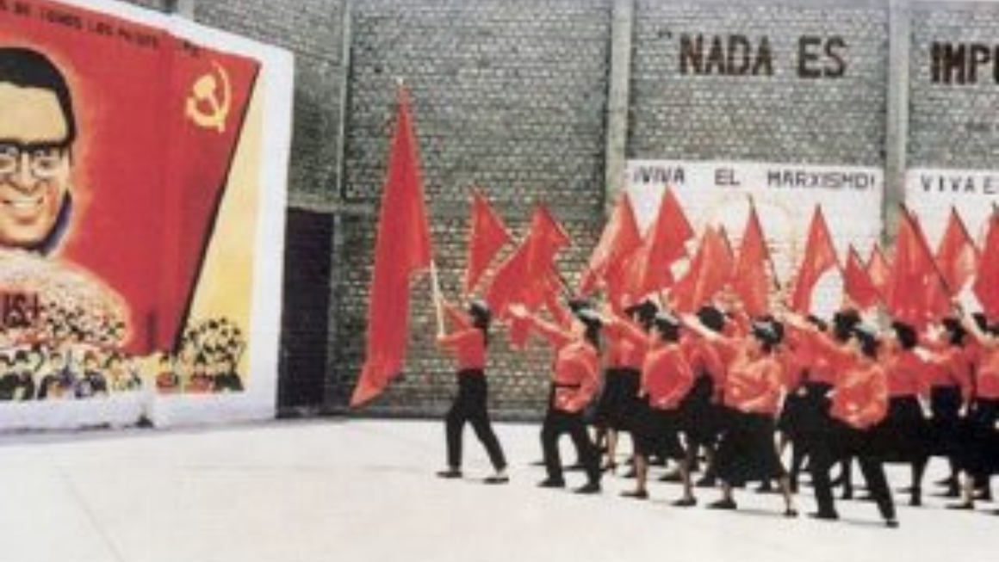

{kind=link}


[This lan. PDF][This lan. ODT][This lan. MD][This lan. TXT][This lan. TXT LIST]
Please select your language 请选择你的语言:
Author: Rosa Minine
Description: Terça-feira, 07/03, às 19h, a saxofonista e compositora Suka Figueiredo realiza um show dentro da programação do projeto Instrumental Sesc Brasil, do Sesc São
Publish Time: 2023-03-07T00:05:00-03:00
Modified Time: None
Updated Time: None
Images: []
Section: Agenda Cultural
Tags: ['Afrolatina', 'Agenda Cultural', 'Diogo Ville', 'flauta', 'guitarra', 'Instrumental Sesc Brasil', 'primeiro álbum', 'Sesc Consoloção', 'Suka Figueiredo', 'Teatro Anchieta', 'teclado', 'trompete', 'Youtube']
Type: article
Terça-feira, 07/03, às 19h, a saxofonista e compositora Suka Figueiredorealiza um show dentro da programação do projeto Instrumental Sesc Brasil, do Sesc São Paulo. Participações de Rafael Acerbi (guitarra),Diogo Ville (teclado), Marina Bastos (flauta), Sidmar Vieira(trompete), Felipe Pizzutiello (baixo), Alana Ananias (bateria) eValentina Facury (percussões). O evento acontece presencialmente, noTeatro Anchieta, Sesc Consolação, e online através do canal Instrumental SescBrasil no YouTube. "Suka Figueiredo apresenta Afrolatina, seu primeiro álbum,lançado em julho de 2022, que representa a conquista de uma mulher negradentro da música instrumental brasileira, marcando a história e servindo dereferência para as jovens instrumentistas que estão surgindo", divulga o SescSP.
Abaixo: O show online
Source: https://anovademocracia.com.br/suka-figueiredo-no-instrumental-sesc-brasil/
Author: socialistiskrevolution
Publish Time: 2023-03-07T04:00:00+00:00
Modified Time: 2023-03-08T17:50:24+00:00
Description: Vi bringer en uofficiel dansk oversættelse af en udtalelse fra Internationalt Kommunistisk Forbund. Proletarer i alle lande, foren jer! Imod imperialistisk aggression, hæv folkekrigens fane højt! P…
Images: ['ikf.png']
Type: article
Categories: ['Uncategorized']
Vi bringer en uofficiel dansk oversættelse af en udtalelse fra InternationaltKommunistisk Forbund.
Proletarer i alle lande, foren jer!
Pr. denne 24. februar har den Russiske aggressionskrig mod Ukraine varet i etår. Denne uretfærdige krig har skabt hundredtusindvis af døde og sårede ogmillioner af flygtninge. Gennem det heroiske forsvar af deres hjemland af detUkrainske folk, trods deres nationale forræderregime ledt af Yankee-lakajenZelenskyj, har den Russiske aggressor ikke kunnet fuldføre sine krigsmål.
Sammenfaldet af en række modsætninger og interesser, der i øjeblikket er påspil i Ukraine, har skabt stor forvirring blandt nogle kommunistiske oggenerelt antiimperialistiske kræfter, og nogle synes endda at tro, at vi stårpå randen til en ny verdenskrig. Derfor er det nødvendigt at fastlægge en klarholdning på vegne af Internationalt Kommunistisk Forbund.
Hovedmodsigelsen er den mellem Ukraine, et land undertrykt af imperialisme, ogRusland, et imperialistisk land. Uanset klassekarakteren af det Ukrainskeregime og dets tjeneste af andre imperialistmagter, hovedsageligt yankee-imperialismen, vil enhver tvivl på dette punkt lede til at benægte Ukrainesret til selvstændighed og national suverænitet, og derfor til, i hvert faldindirekte, at støtte den Russiske imperialismes interesser.
Den interimperialistiske modsigelse kommer også skarpt til udtryk. Yankeerneslangsigtede plan om at omringe og i sidste ende besejre deres eneste atomarependant og de russiske modforanstaltninger for at genvinde tabte stillinger erden vigtigste faktor, der fører til krigen. Yankeernes åbenlyst erklæredeinteresse er, at Rusland bliver bundet i en »endeløs krig«, at det spildersine knappe ressourcer og må binde hovedparten af sine konventionelle styrkerpå vestfronten, at Ukraine i denne forstand bliver et fuldstændigmilitariseret bolværk, og at dets europæiske »allierede« i NATO tvinges til atindordne sig under dets strategiske plan, der har kinesisk socialimperialismesom sit hovedfokus. Interesserne af de andre imperialister – først og fremmestTyskland, Storbritannien, Frankrig og Kina – modsiger i denne kontekst dem afde Russiske- og Yankee-imperialisterne, men de har intet alternativ end attilpasse sig en af de atomare supermagter. Ingen af disse imperialister har idag interesse i at udløse en Verdenskrig. Selv et muligt brug af taktiskeatomvåben af Rusland vil ikke udløse en atomar reaktion fra Yankeerne, som depolitiske repræsentanter gentagende gange har sagt. At fokusere på faren foren verdenskrig – en fare, der altid vil være til stede, så længe imperialismeneksisterer – er derfor en politisk fejltagelse, der fører til det samme forligmed den russiske imperialismes interesser i navnet »at forhindre krigen«.
Det er betinget af disse ydre modsætninger, at den ukrainske nations indremodsætninger udfolder sig. Zelenskyj-regimet står i akut modstrid med detovervældende flertal af det ukrainske folks interesser, idet det med sineberettigede patriotiske følelser handler med absolut centralisme, og der eringen som helst demokratiske rettigheder for folket. Retten til at udtale sig,forsamle sig og organisere sig undertrykkes af en drakonisk og chauvinistiskundertrykkelse, og regimet støtter sig på åbne fascistiske militærformationertil at knuse ethvert udtryk for folkelig utilfredshed. Det saboterer folketsuafhængige væbnede modstand ved at stole på de våben, som det ivrigt får afdet yankee-ledede NATO, og frygter det væbnede folk, som er det eneste, dervirkelig forsvarer nationen. Samtidig sælger den ud hver eneste centimeter aflandet og beriger sig selv og sine kumpaner, mens befolkningen bærer krigensbyrde. Det er i sandhed et regime af nationale forrædere, yankee-imperialismens lejesoldater. Den eneste vej frem for Ukraines folk er at stolepå sine egne kræfter og forsvare nationen mod den udenlandske invaderer og delandsforrædere, der sælger landet. I denne forbindelse er nøglefaktorenproletariatets ledelse, som centrum for folkets pol, gennem dets fortrop, detKommunistiske Parti, der er ledt af marxismen-leninismen-maoismen. Kun underledelse af det Kommunistiske Parti kan folkets modstandskrig omdannes til enægte Folkekrig, hvorved angriberen, alle imperialisterne og deres marionetterkan fordrives fra ukrainsk jord. I dag findes der ikke et sådant KommunistiskParti, men der findes kommunister under dannelse, revolutionære og konsekventeantiimperialister, som skal støttes af verdens kommunister, så de kan gørefremskridt i forståelsen af det internationale proletariats eneste ideologi,marxismen-leninismen-maoismen. Uden ideologien findes der intet KommunistiskParti. Uden det Kommunistiske Parti kan der ikke være noget demokrati forfolket, ingen national befrielse og ingen revolution. De mest fremskrednerevolutionære kræfter skal støttes ideologisk, politisk, moralsk og materielt,så de under de store prøvelser, de står over for, kan gøre fremskridt i kampenfor rekonstitueringen af det Kommunistiske Parti, det er den vigtigste opgave.
Vi må også gøre alt vi kan for at fremme venskab mellem de Ukrainske ogRussiske folk. To folk der engang var forenede i den Store Sovjetunion underdet røde banner med Lenins og Stalins hammer og segl bliver nu drevet modhinanden på slagmarken på grund af imperialisternes intriger. Kommunisterneunder dannelse, revolutionære og alle konsekvente antiimperialister har etsærligt ansvar for at øge propagandaen mod Ruslands imperialistiske krig oghæve deres kamp mod den imperialistiske stat og dens aggressionskrig til nyehøjder med alle midler til rådighed, idet de også kæmper mod imperialistiskkrigsmageri og våbenudsendelse i de respektive imperialistiske lande.Marxister-leninister-maoisterne i Rusland må gå modigt frem i kampen forrekonstitueringen af deres Parti og overvinde alle vanskeligheder for atforene sig mere med kommunisterne i verden, så de bliver bedre i stand til atopfylde deres historiske mission om at genoprette proletariatets diktatur i delande, der engang var det Socialistiske Fædreland.
Som Formand Mao lærte os frygter vi kommunister ikke verdenskrig, vi frygterikke atomkrig, vi er imod det og vil gøre alt for at forhindre det ved atudvikle revolutionen, at kæmpe mod den reaktionære krig med folkekrig. Når vifordømmer imperialistisk aggression og imperialisternes krigsmageri må vialdrig glemme dette. Imperialistisk aggression skal besejres med folkekrig.
Russiske imperialister ud af Ukraine!
Leve det Ukrainske folks kamp!
Ned med yankee-imperialismen og alle dens kumpaner!
Fremad i kampen for rekonstieringen af de Kommunistiske Partier i Ukraine,Rusland, og hele verden!
Internationalt Kommunistisk Forbund
8. februar 2023
Advertisement
Author: Frank Calafate
Description: Maria Alice Barroso, nasceu na cidade do Rio de Janeiro em 1926. No entanto, sempre fez questão de colocar em todas as suas biografias lançadas no Brasil e no
Publish Time: 2023-03-07T09:15:00-03:00
Modified Time: 2023-03-08T14:18:06-03:00
Updated Time: 2023-03-08T14:18:06-03:00
Images: []
Section: Nova Cultura
Tags: ['literatura popular']
Type: article
 por Frank Calafate
por Frank Calafate
08/03/2023
4 minutos de leitura
Maria Alice Barroso, nasceu na cidade do Rio de Janeiro em 1926. No entanto,sempre fez questão de colocar em todas as suas biografias lançadas no Brasil eno exterior que nasceu na pequena Miracema, região Noroeste Fluminense. Fazia,com isso, o percurso inverso de muitos que nascem no interior e se esquecem doseu torrão ao alcançar alguma visibilidade [1]. Foi diretora do InstitutoNacional do Livro, da Biblioteca Nacional e do Arquivo Nacional.
Em 1967 publicou o romance Um Nome para Matar , inaugurando a pentalogia doCiclo Parada de Deus, obra que lhe rendeu o prêmio Walmap daquele ano após aavaliação de uma banca julgadora composta por Guimarães Rosa, Jorge Amado eAntonio Olinto. Em 1989 ganhou o Prêmio Jabuti com a quarta obra ambientada emParada de Deus, intitulada A Saga do Cavalo Indomado. Nélida Piñon, primeiramulher a presidir a Academia Brasileira de Letras (ABL) e amiga pessoal deMaria Alice Barroso, comparava a criação do fascinante povoado de Parada deDeus à de Macondo por Gabriel Garcia Márquez. Falava ainda que o Brasil deviaà Maria Alice Barroso o reconhecimento por ter construído um mundo ficcionalcom vigor e sabedoria narrativas e da necessidade de recuperar e difundir suaobra [1].
O romance de estreia de Maria Alice Barroso foi Os Posseiros publicado em1955, e totalmente custeado pela autora. No prefácio à 2a edição da obra,publicada em 1986, a escritora diz: “Jorge Amado, meu vizinho para quem eu erauma ilustre desconhecida, chamou-me a sua casa, após a leitura do livro: tinhagostado de fato. Mais adiante foi ele, Jorge Amado, que mandou um exemplarpara a União Soviética, com as melhores recomendações . O livro foi traduzido,com o título No Vale da Serra Alta , merecendo uma edição de 600 milexemplares.” Continuando a escritora conta sobre a inspiração para a obra: “Ahistória dos posseiros de Serra Alta se repete por todo o Brasil: eu a viacontecer, há um punhado de anos, perto de Governador Valadares, Minas Gerais.Porém com algumas variáveis – que não chegam substancialmente a transformá-lanuma outra realidade – ela continua a se repetir por todo o Brasil. Vale apena conhecer o problema, com a história contada do ponto de vista dosposseiros. Os grileiros já têm muitos e atuantes porta-vozes.” Ainda nesteprefácio a autora avaliou: “se literariamente já posso encarar, com algumatranquilidade, os acertos e os equívocos cometidos há trinta anos, do ponto devista ideológico, nada mudou” [3].
O livro narra a trajetória de Zé Severino que fugindo da seca que afligia aBahia migrou para Minas Gerais em busca de melhores condições de vida para suafamília. Após várias tentativas frustradas de conseguir algum trabalho, semdinheiro e sem comida, chega ao Vale da Serra Alta e ergue em terra devoluta eimprodutiva um barraco, iniciando a lavoura. Outras pessoas foram chegando ese juntando a Zé Severino. Com muito trabalho e paciência dos camponeses,aquela terra arrasada ressuscitou mandando para bem longe a fome que um dia osassombrou. Um dia chega na cidade um ricaço estrangeiro amigo do governador sedizendo dono do Vale. Com a ajuda do prefeito, do delegado e do padre traçou oplano para expulsar Zé Severino e os outros da terra. Mas os camponesesdecidem resistir e lutar por seu pedaço de chão.
Um dos principais personagens de Os Posseiros é Antonio dos Santos, jovemrecém chegado ao Vale vindo de Belo Horizonte que oferece braços e pontariapara ajudar os camponeses na luta pela terra. Um dos filhos de Zé Severino,desconfiado da história contada por Antonio pergunta sem rodeios o que afinalele estava fazendo ali. O forasteiro responde: “Se eu te dissesse, Zequinha,que existem homens, muitos homens preocupados com a sorte de vocês, homens docampo, você me acreditaria? (…) Se eu te dissesse que existem homens que vãopara a prisão, que apanham da polícia apenas porque querem dar uma vida maisfeliz a vocês, distribuindo a terra por igual entre todos os camponeses, vocême acreditaria? (…) Esses homens estão espalhados pelo mundo todo. Desde aChina até aqui, no Brasil, você poderá contar com eles, pois estão sempre aolado dos pobres, dos oprimidos e dos injustiçados. (…) Eu sou um desseshomens. E por isso estou aqui para lutar com vocês. Preciso explicar maisalguma coisa?” [3]
Após conquistar a amizade e confiança de Zé Severino, Antonio é apresentado emreunião aos outros camponeses como membro de um Partido que luta contra oscoronéis, a polícia e o governo. Ao saberem disso, os posseiros com uma risadade satisfação constataram que Antonio era um deles e sua presença trouxe umasensação de paz e segurança a todos.
Em um trecho do livro, Maria Alice Barroso fala do sentimento de cooperaçãoentre os camponeses expressados por meio de “(…) amizade pura e leal que osmantém unidos, colaborando uns com os outros, sem invejas, sem rixas. A terradividida ensina-os como serem úteis à coletividade e de que a terra pertence atodos que nela vive e trabalha.” [3]
Escrito há quase 70 anos a obra ainda é atual, constituindo-se em retrato dasituação do campo brasileiro marcada pela violência dos latifundiários eEstado contra os camponeses pobres sem terra ou com pouca terra. A luta dosposseiros do Vale da Serra Alta é a mesma levada a cabo por outros camponesesBrasil afora como em Canudos, Contestado, Trombas e Formoso, Pau D’arco, PortoVelho, Marabá, Corumbiara, Anapu, Norte de Minas, Abunã e Araguaia.
O Noroeste Fluminense tão bem retratado por Maria Alice Barroso nas obras doCiclo Parada de Deus continua sob o jugo de latifundiários. A política localse baseia no coronelismo, clientelismo e mandonismo. Mas mais cedo do quetarde as massas populares irão se mobilizar e se organizar e nesse dia todosos crimes cometidos pelos coronéis contra o povo ao longo de anos e anos deexploração, subjugação e humilhação serão cobrados como se tivessem sidopraticados na véspera.
Parafraseando Maria Alice Barroso, depois de um primeiro brado de revolta doscamponeses e trabalhadores contra o domínio dos coronéis e dos ricos outrosbrados ressoarão pelo campo afora fazendo luz onde outrora só existiam trevas.
Maria Alice Barroso faleceu em 12 de outubro de 2012 na cidade de Juiz deFora, Minas Gerais.
Frank Calafate é filho de camponeses. Acredita que a educação, a ciência eartes são armas cujo efeito depende de quem as empunha e de quem é atingidopor elas. Assim, professores, cientistas e artistas são soldados combatentesnas linhas avançadas de fogo.
[1] SCHMIDT, A.L.L.C.; MELLO, A. ; FINAMORE, L. B. ; LANES, L. ; SOARES, T. .MARIA ALICE BARROSO, UM NOME PARA LEMBRAR: a identidade regional de uma autoranacional. 1. ed. Rio de Janeiro: Autografia, 2019. v. 500. 210p .
[2] SOARES, T. A. S., SCHMIDT, A. L. L. C., Os Posseiros: uma literatura deengajamento social nos anos 50, do século XX. In: MARIA ALICE BARROSO, UM NOMEPARA LEMBRAR: a identidade regional de uma autora nacional. 1. ed. Rio deJaneiro: Autografia, 2019. v. 500. 210p .
[3] BARROSO, M. A. Os Posseiros. 2a ed. rev. Rio de Janeiro: Record, 1986.
Source: https://anovademocracia.com.br/maria-alice-barroso-uma-militante-da-pena-e-do-talento/
Author: fannyhill
Description: dal blog femminismorivoluzionario DALL'INTERVENTO DI UNA DONNA IRANIANA ALL'ASSEMBLEA DONNE/LAVORATRICI DEL 23 FEBBRAIO Ciao a tutte, sono m...
Time: 2023-03-07T10:38:00+01:00
Images: []
dal blog femminismorivoluzionario
DALL'INTERVENTO DI UNA DONNA IRANIANA ALL'ASSEMBLEA DONNE/LAVORATRICI DEL23 FEBBRAIO
Ciao a tutte, sono molto contenta di essere con voi. Vi volevo salutare. Ilnostro primo obiettivo è quello di essere la voce della nostra gente. Noivogliamo togliere tutti gli affari che fanno tutti i governi del mondo colnostro regime dittatoriale. Questo ora è il nostro obiettivo. La mia gente inIran è molto in difficolta ' e noi dobbiamo aiutare, e dobbiamo lottare anchedi più. Grazie dell'invito a questa assemblea.
Il video di Bella Ciao con le immagini delle proteste in Iran
01:06 01:06
"O tutti insieme o anche da sola / bella ciao bella ciao / ci svegliamo alchiaro di luna / noi che resteremo svegli fino all'indomani / alla fine lenostre mani romperanno / in tutto il mondo la catena dell'oppressione"
Hai ucciso una Masha, migliaia di Masha sono cresciute in Iran.
Dal Kurdistan a tutto il mondo siamo tutti Masha
combatti per combattere
Qualunque sia l 'ascia che mi hai lanciato
non era una ferita era un germoglio
Ucciderò, ucciderò colui che ha ucciso mia sorella...
Source: https://proletaricomunisti.blogspot.com/2023/03/pc-7-marzo-8-marzo-alle-ragazze-donne.html
Author: Comitê de Apoio – São Luís (MA)
Description: Moradores de bairros da zona rural de São Luís se reuniram em frente à Câmara Municipal da cidade em manifestação puxada pelo Movimento em Defesa da Ilha, no
Publish Time: 2023-03-07T12:00:00-03:00
Modified Time: 2023-03-07T14:28:19-03:00
Updated Time: 2023-03-07T14:28:19-03:00
Images: []
Section: Nacional
Tags: ['protesto']
Type: article
Plano Diretor da prefeitura de São Luís busca entregar cidade aos megaempresários. Foto: Reprodução
Moradores de bairros da zona rural de São Luís se reuniram em frente à CâmaraMunicipal da cidade em manifestação puxada pelo Movimento em Defesa da Ilha,no dia 14/02, para exigir o retorno do Plano Diretor da cidade para o prédioda prefeitura, e sua consequente revisão, pendente desde 2015.
Além da dificuldade encontrada pelos camponeses para acompanhar e participarno processo, este plano, como se encontra atualmente, fere direitosfundamentais de várias comunidades rurais, sendo grande ameaça a dunas,aquíferos e áreas de reserva florestal. E, tudo isso, para servir aosinteresses de grandes empresários, principalmente do ramo imobiliário eportuário.
O Plano Diretor dita os parâmetros para a expansão e desenvolvimento da cidadenos próximos 10 anos, sendo uma lei regida pelo Estatuto da Cidade queconforma um conjunto de normas e diretrizes para as políticas públicas nomunicípio em relação à mobilidade, saneamento, políticas ambientais e rurais.Dessa forma, como expressivo marco de planejamento urbano que é, deve serlevado a sério como tal.
A repentina urgência e interesse pela aprovação do novo Plano Diretor estádiretamente ligado aos interesses de grandes empresários do ramo imobiliário eportuário, pois aprovar o Plano Diretor seria o primeiro passo para driblarleis de uso e ocupação do solo, o que garantirá aos empresários certasegurança jurídica. O grande interesse é a construção de um porto chamado dePorto São Luís, projeto que se iniciou com o ex-governador do Maranhão, FlávioDino, em seu dois mandatos sob a sigla oportunista PCdoB que, em janeiro de2023, assumiu o Ministério da Justiça e Segurança Pública da presidênciaatual. Na época, em 2019, a tentativa de avançar o projeto de construção doporto, em aliança com o conglomerado China Communications Construction Company(CCCC), resultou em um violento despejo de moradores da centenária comunidadeCajueiro, localizada na zona rural de São Luís.
Portanto, o novo Plano Diretor significa a expansão da zona urbana em direçãoà zona rural. A reportagem de AND esteve presente na manifestação do dia14 de fevereiro para mostrar apoio e solidariedade aos moradores da zona ruralda região de São Luís, que estão preocupados com as consequências da aprovaçãodo Plano, na ocasião, entrevistamos Maria Joselina, moradora do Macaranã,localizado na zona rural de São Luís, conhecido por promover a tradicionalfesta da juçara no Maranhão que acontece todo ano.
Maria Joselia relata que, por conta da especulação imobiliária, os rios estãomorrendo e os moradores não estão conseguindo mais manter os seus juçarais,quando perguntada sobre qual rio banha sua comunidade, ela informou que o nomedo rio se chama rio do Ambude e está quase completamente poluído: “Eu tenho umterreiro chamado Terreiro de São José, a gente usava água do rio pra batizar eagora não pode mais, a gente lavava roupa no rio, mas quando construíram oscondomínios não dava mais, a única nascente preservada tá em propriedadeparticular.” conta Maria Joselina, além de informar que 10 comunidades doMacaranã, que dependem diretamente do rio, serão afetadas com o novo PlanoDiretor.
Source: https://anovademocracia.com.br/camponeses-de-sao-luis-nao-aceitam-novo-plano-diretor-da-prefeitura/
Author: Revolución Obrera
Time: 2023-03-07T14:00:00-05:00
Images: ['Acoso.jpg']
Tags: ['abuso sexual', 'acoso sexual', 'Emancipación de la Mujer', 'feminismo', 'machismo', 'Metoo', 'Movimiento Femenino Revolucionario', 'Yo también']
Categories: ['Emancipación de la mujer']

La situación desigual de la mujer y su condición de oprimida por el hombre,vienen desde la antigua sociedad esclavista dividida en clases a causa delsurgimiento de la propiedad privada sobre los medios de producción. La actualsociedad capitalista no solo heredó tal desigualdad y opresión de la mujer,sino que las ha elevado a un grado insoportable, donde el feminicidio es suforma más violenta, sanguinaria y criminal, junto al cual, se ejerceninnumerables formas de opresión sobre la mujer, brutales y a la veztaimadamente disfrazadas, como el acoso sexual cuyo lindero con laviolación es casi imperceptible, al tiempo que es un recurso “romántico” delos explotadores para acosar laboralmente a las mujeres.
Lo sufren las mujeres de todas las clases y en todos los países. Pero hatenido mayor resonancia gracias a que algunas de las mujeres burguesasvíctimas de acoso sexual levantaron su voz, autocensurada por años, y handenunciado a sus victimarios, lo que ha tenido eco en los grandes mediosmundiales de comunicación. Poderosos empresarios y políticos de la burguesíaimperialista han sido públicamente denunciados, causando mucho ruido susenjuiciamientos, donde algunos han perdido sus privilegiados cargos, otros hanpreferido el ostracismo político, y pocos, muy pocos, han sido condenados porsu justicia.
Si bien, existe infinidad de denuncias, baste mencionar algunas para ilustrarla execrable práctica. Sin duda, el dueño de la corona de esta infamia, es elcriminal depredador Harvey Weinstein, poderoso productor de Hollywooddenunciado por más de 80 mujeres varias de ellas actrices famosas —dandoorigen al movimiento de denuncia #MeToo ( Yo también )— por acoso yviolaciones sexuales durante 30 años, y condenado finalmente a 23 y 16 años deprisión. Otros poderosos acosadores sexuales, han tenido su “coto de caza” enlos medios televisivos y periodísticos, tales como el actor Bill Cosbydenunciado por más de 60 mujeres, Roger Ailes y Bill O´Reilly presidente ycomentarista de Fox News, Glenn Thrush periodista del New York Times, MarkHalperin analista de NBC, Lockhart Steele director editorial de Vox, StephenBlackwell ejecutivo de la revista Billboard Magazine, Michael Oreskes jefe denoticias de NPR, Roger LaMay presidente de NPR, Jann Wenner fundador de larevista Rolling Stone, Leon Wieseltier editor de The New Republic, MattZimmerman productor de NBC, Hamilton Fish presidente de New Repúblic, RoyPrice ejecutivo de Amazon, Charlie Rose presentador TV, Matt Lauer presentadorNBC.
Y en Colombia, para no dejarla fuera de la lista, la práctica del acososexual en las esferas del arte, el periodismo y la farándula siempre haexistido, y solo para ilustrar, vale traer el caso del reportaje de lasperiodistas Catalina Ruiz-Navarro y Matilde de los Milagros Londoño en 2020,con ocho denuncias de mujeres por acoso y abuso sexual contra el directorde cine Ciro Guerra, por sus agresiones sexuales ocurridas entre 2013 y 2019en tres ciudades del país y cuatro del extranjero durante eventos como elFestival de Cine de Cannes, Colombian Film Festival y el FestivalInternacional de Cine de Cartagena.
Los jefes de la burguesía imperialista, además de ser los jefes políticos dela opresión imperialista sobre los países oprimidos y los trabajadores delmundo, son también personalmente, opresores y acosadores sexuales de lasmujeres. Aunque siempre cuentan con la protección de la gran prensa de la cualson dueños, de su justicia sobornada, y de la hipócrita moral burguesaencargada de embellecer su repugnante imagen, no han podido evitar la denunciapública de muchas mujeres tanto de su propia clase burguesa como de las clasestrabajadoras. Encabezan la lista George Bush (el viejo), Bill Clinton y DonaldTrump, todos denunciados por abusos sexuales a decenas de mujeres. Acapararontitulares mundiales, declaraciones y juicios, pero ninguno fue condenado porsus crímenes sexuales contra las mujeres cuyas denuncias terminaron congeladasen el hielo del silencio.
En la práctica del acoso sexual a las mujeres, no se quedan atrás loslacayos jefes políticos gobernantes en los países oprimidos. En Colombia, el“honorable” Congreso de la República y actual Gobierno reformista del PactoHistórico, han estado en el ojo del huracán por denuncias de acoso sexual amujeres trabajadoras, y no porque esa forma de opresión a la mujer haya estadoausente durante las dos décadas del régimen de la mafia uribista cuyo métodopriorizó la violación, el asesinato y desaparición de compañeras, sino porquees la expresión continuada de esa depravación en el Estado reaccionario, comolo demuestra la denuncia del politiquero Gustavo Bolívar, sobre mujeresconvertidas en esclavas sexuales de los Senadores por medio de contratos a doso tres meses cuya renovación imponía la aceptación de actos sexuales. Elpropio secretario de Presidencia, Mauricio Lizcano, fue denunciado por unamujer a quien acosó sexualmente cuando fue senador en 2016. Jefespolíticos reformistas de “izquierda” también resultaron ser acosadoressexuales , como es el caso del catedrático Víctor Currea-Lugo dirigente delPacto Histórico y quien ya había sido premiado por el Presidente con laEmbajada en Emiratos Árabes, cuando fue denunciado por numerosas mujerescolegas y estudiantes de la Universidad Javeriana víctimas de su acoso sexualentre 2013 y 2016 siendo docente de la Facultad de Ciencia Política. Y quédecir del hoy opositor al Gobierno del Pacto Histórico, el parlanchínpanelista de Blu Radio y politiquero dirigente del partido reformista Dignidad(antiguo Moir) Aurelio Suárez, a quien años atrás cuando era dirigente delPolo Democrático, acudió una estudiante de la Universidad Pedagógica Nacionalen auxilio por el acoso sexual de que era víctima por otro militante del Moirintegrante del Polo Democrático, Fabián Ramírez Cárdenas suicidado en marzo de2020, y cuál sería su sorpresa al saber que el silencio e indiferencia deljefe de “su partido” ante las reiteradas denuncias, obedecía a que él mismo,Aurelio Suárez, era también un acosador sexual de mujeres denunciado porotras varias militantes del Polo Democrático quienes además señalaron aGabriel Maure, otro acosador sexual jefe dirigente de ese partido.
Y cuando se denuncian prácticas de acoso sexual por funcionarios delGobierno, no se puede dejar de mencionar los aberrantes abusos denunciados pormujeres de las fuerzas armadas del Estado, abusos que han ocasionadopersecución, despidos, renuncias y hasta suicidios. Baste mencionar un caso delos más recientes, en la Policía Nacional, la banda criminal más poderosa delpaís, cuyos Centros de Atención Inmediata (CAI) aparte de ser conocidos comoeslabones del micro tráfico, son antros donde se viola y abusa sexualmente acompañeras luchadoras detenidas. Uno de sus coroneles, el chafarote FranciscoGelves Alemán quien fuera el comandante en el departamento del Putumayo fuedenunciado por varias mujeres policías por acoso sexual , e irónicamenteotra mujer, la coronel Sandra Vallejos Delgado quien recibió las denuncias noles dio crédito, las archivó y tuvo el descaro de responderle a una de lasdenunciantes: «acostúmbrese, que usted es bonita»; por su parte el Grupo deTalento Humano de la Escuela Antonio Nariño decidió que “no valía la penainvestigar”.
No siendo suficiente el capital y grandes sumas de dinero que los acosadoressexuales burgueses disponen para acallar a las mujeres que amenazandenunciarlos, para silenciar a la prensa, desaparecer pruebas y a las propiasvíctimas, tienen a su favor el poder del Estado burgués que es ante todo elórgano de la fuerza organizada de los opresores, el poder armado de las clasescapitalistas para oprimir a las clases trabajadoras, para preservar laprofundización de las grandes desigualdades en el capitalismo, una de lascuales es la desigualdad entre el hombre y la mujer. De ahí que, losejecutores de ese poder, sus tribunales y leyes, sean marcadamente machistas,para reforzar el sometimiento y la opresión de la mitad de la sociedadconstituida por las mujeres. Por eso los juicios y las condenas contra losvioladores y acosadores sexuales de las mujeres, siempre quedan en nada.Por eso a los monstruos depredadores sexuales se les protege, absuelve y seles publican en grandes caracteres sus manidas defensas, sus sistemáticasdeclaraciones de inocencia, sus vituperios contra las víctimas, susdesvergüenzas y alevosías, como lo dicho por Harvey Weinstein al escuchar lacondena: «Estoy completamente confundido… Siento remordimiento por todos loshombres que están atravesando esta pelea. Fui el primer ejemplo y ahora haymiles de hombres acusados. Estoy preocupado por este país»; o como le dijoCurrea-Lugo al Presidente Petro cuando tuvo que desistir de la embajada:“Declino a su invitación, sin que ello implique aceptación de culpabilidad. Lalucha contra la inquisición sigue”; o como declaró el acosador Lizcano: “Estainformación es totalmente falsa. Invito a la mujer que informó de estasupuesta situación que lo haga a las autoridades judiciales, para que en unentorno seguro se reconozca mi correcto comportamiento. Y pueda defender miderecho al honor”. Y aquí aparece otra mordaza y re-victimización de la mujerabusada, que el periodismo burgués llama acoso judicial , sometiendo a lasvíctimas o denunciantes mujeres a narrar y repetir públicamente los detallesdel ultraje, casi siempre sin suficientes recursos económicos para costearabogados que confronten a los acosadores acusados, ellos sí con el suficientepoder económico para que los tribunales hagan valer contra las mujeres elcarácter machista del Estado y sus leyes. ¿Y qué dijo el Moir o el PoloDemocrático o el Pacto Histórico, frente a las denuncias de sus mujeresmilitantes por acoso sexual de parte de sus jefes? ¡Nada! Encubrieron laopresión a la mujer en sus organizaciones.
Convenios como el 190 de la OIT que habla de los derechos de las mujeres;penas mentadas en el Código Penal por el delito de acoso sexual ; ley 1010de 2006 que prohíbe el acoso sexual de los trabajadores; Sub-comisión deGénero instalada por el Gobierno como parte de la Comisión Permanente deConcertación de Políticas Salariales y Laborales para prevenir el acososexual en el ámbito laboral; Protocolo de Género promovido por el Presidentepara evitar el acoso sexual en el Congreso; canales y líneas de atenciónde denuncias por violencia sexual; denuncias ante la fiscalía que remite loscasos a los Centros de Atención e Investigación Integral a la Víctimas deDelitos Sexuales (Caivas) para la asesoría jurídica y atención psicológica…¡todo esto es letra escrita sobre papel mojado! Todas son leyes, medidas einstituciones inofensivas frente el acoso sexual , si esa formalidadjurídica no se obliga a cumplir, con la fuerza de la lucha directa de lasmujeres, con la fuerza del movimiento femenino, del movimiento obrero y delmovimiento de masas.
Si las mujeres burguesas son acosadas sexualmente por los hombresburgueses… si las mujeres pequeño burguesas —que explotan fuerza de trabajopero también tienen que trabajar ellas mismas— son acosadas sexualmente_por los hombres burgueses dada su cercanía social y por los hombrespequeñoburgueses… las mujeres obreras —quienes para vivir solo dependen de laventa de su fuerza de trabajo por un salario— son acosadas sexualmente por elpatrón burgués y el pequeño burgués, por el mando medio y el supervisor, porel compañero de trabajo y el dirigente sindical, por el abusador en eltransporte público, por el expendedor del mercadillo, por el casero y elcelador, por sus propios parientes, por el machismo que transpira por todossus poros la sociedad capitalista… ¡la mujer obrera es quien peor y másbrutamente sufre el _acoso sexual en la sociedad porque es chantajeada conel despido o la desmejora en sus condiciones de trabajo!
Incluso las organizaciones comunistas no pueden escapar a la perniciosainfluencia de las ideas y prácticas machistas, sencillamente porque no sonsectas, sino organizaciones cuya actividad política se desarrolla en medio dela sociedad capitalista. Pero los comunistas sí pueden hacer que, las ideas yprácticas opresivas contra las compañeras, no echen raíces, no sean admitidasni consentidas dentro de sus organizaciones, enfrentándolas con educación,luchas y movimientos ideológicos, con sanciones incluida la expulsión cuandose manifiestan o defienden abierta o taimadamente. Diametralmente opuesto a lapráctica de los partidos reformistas, en la Unión Obrera Comunista (mlm) nohay lugar para los opresores de mujeres, ni siquiera para las formas tenues deopresión a la mujer como el socarrón acoso sexual.
El comunismo no tiene recetas milagrosas para resolver los problemas delcapitalismo, tales como la violencia del acoso sexual a las mujeres, perosí arma a la clase de los proletarios, y especialmente a las mujeres obrerasde una guía ideológica y política, y unas formas de lucha y de organizaciónpara enfrentar y transformar revolucionariamente esa situación.
La mujer trabajadora individualmente es impotente para enfrentar el acososexual. Pero cuando se une con sus compañeras de trabajo, con sus compañerosdel sindicato, con sus amigas y vecinas del barrio o la vereda… entonces subeel volumen a su voz, aumenta la fuerza de su denuncia, pesa su exigencia sobrelas leyes de papel.
Es cierto que la crisis actual del Movimiento Sindical por la erróneadirección politiquera y patronal de los jefes de las Centrales Sindicales, semanifiesta en la escasez de organizaciones sindicales, en la debilidad de lasexistentes y esto aumenta la desprotección de las compañeras frente al acososexual. Pero nada en el mundo nace de una vez hecho y derecho; todo se muevede lo simple a lo complejo, de menos a más, del individuo a la organización. Yahí está la clave para resolver el problema, sabiendo que no hay salvadoressupremos, que solo el pueblo salva al pueblo, y las mujeres son parteimportantísima del pueblo. La forma inicial y sencilla que le proponen loscomunistas revolucionarios a las compañeras para iniciar la transformación desu impotencia individual en fuerza grupal, es la organización de Comités deMujeres en la fábrica y empresa, en la clínica y el hospital, en laescuela, el colegio y la universidad, en el barrio, en el sindicato, en lacooperativa, en el equipo deportivo… En todas partes hay mujeres trabajadoras,en todas partes son ultrajadas y acosadas sexualmente , en todas partes sepueden organizar Comités de Mujeres.
Sabido es que en un comienzo, sobre todo en las fábricas y empresas, deinmediato serían víctimas de persecución patronal, por lo cual, lorecomendable inicialmente es organizarlos en secreto, con las compañeras demás confianza, con unas sencillas normas de funcionamiento que incluyanventilar las denuncias en forma anónima por redes sociales y la búsqueda derelaciones sigilosas con otras compañeras afectadas por el mismo problema, yeso sí, con una consiga principal: ¡contra el acoso sexual y demás formas deopresión: organización de las mujeres!
Dos hechos espontáneos de las masas demuestran que por ahí es el camino paraponerle freno al acoso sexual y demás formas de opresión a la mujer. Primerhecho: a comienzos de noviembre del año anterior, los colectivos feministasorganizaron una combativa y violenta movilización contra Transmilenio,inmediatamente después de conocida la denuncia de una violación a una joven enla estación de La Castellana; este es un ejemplo que debiera generalizarse:responder de inmediato a los actos de violencia contra la mujer, con accionesde violencia revolucionaria de las masas. Segundo hecho: a finales dediciembre pasado en una pizzería de Cartagena, una joven trabajadora erafrecuentemente acosada sexualmente por su patrón quien intentaba besarla ala fuerza y tocar sus partes íntimas. La compañera discretamente grabó en unvideo la agresión sexual de su patrón, y lo echó a rodar por las redessociales donde se hizo viral y sirvió “para producir la reacción de variaspersonas, quienes fueron hasta el local de pizza y le propinaron una tremendagolpiza al acosador, que de no ser por la presencia de la Policía hubieseterminado muy mal” 1.
El portal Revolución Obrera está al servicio de todas las mujerestrabajadoras. Para amplificar las denuncias que pueden enviar a los correos oa las redes sociales del portal. Para contribuir en la información y educaciónsobre las causas históricas de la situación de la mujer, la necesidad de sucompleta emancipación como parte de la emancipación de toda la clase obrera. Ymuy pronto, publicará una propuesta de Plataforma de Lucha para unMovimiento Femenino Revolucionario 2, útil como guía para laorganización de los Comités de Mujeres para que al mismo tiempo, éstos leden forma organizada a ese movimiento.
Notas:
1 https://www.colombia.com/actualidad/nacionales/jefe-recibe-tremenda-golpiza-en-cartagena-luego-de-que-empleada-lo-grabara-acosandola-382481 2 Para una mejor información, ver el Editorial Por un Movimiento Femenino Revolucionario: ¡Organizar Comités de Mujeres! https://www.revolucionobrera.com/editorial/mujeres-5/
Source: https://www.revolucionobrera.com/mujer/acoso-sexual/
Author: Gabriel Artur
Description: A jornalista Rosana Bond irá, nos próximos dias, apresentar a vários órgãos de Turismo de Santa Catarina, uma denúncia contra o vereador Henrique Deckmann, de
Publish Time: 2023-03-07T14:36:30-03:00
Modified Time: 2023-03-07T14:37:24-03:00
Updated Time: 2023-03-07T14:37:24-03:00
Images: []
Section: Povos Indígenas
Tags: ['Caminho de Peabiru']
Type: article
Jornalista Rosana Bond. Foto: Reprodução
A jornalista Rosana Bond irá, nos próximos dias, apresentar a vários órgãos deTurismo de Santa Catarina, uma denúncia contra o vereador Henrique Deckmann,de Joinville, que vem cometendo crime ao propagandear que o Peabiru, caminhomilenar indígena, passava por seu município e também por Garuva. “Se trata deuma farsa prejudicial a turistas desavisados, a jovens estudantes,professores, e ao próprio turismo catarinense”, diz Bond.
“Ele está se apropriando de uma história que não pertence a Joinville/Garuva esim a outros municípios do estado”, critica a jornalista, autora de 5 livrossobre o Peabiru. Rosana Bond é tida como uma das maiores especialistasbrasileiras no assunto.
“O vereador está, com fins eleitoreiros escusos, cometendo o crime depropaganda enganosa e outras ilegalidades, pois vem gastando recursos públicospara bancar uma farsa, uma mentira”, lamenta a jornalista.
Não é a primeira vez que ele se vê envolvido em polêmica. Anos atrás, HenriqueLudowigo Deckmann foi prefeito de Maripá, no Paraná, e viu-se processado peloMinistério Público por improbidade administrativa. Ele negou asirregularidades, foi absolvido, mas teve que sair da cidade, vindo residir emSC.
“O objetivo dele agora é atrair o turismo para Joinville e Garuva. Mas isso éanti-ético e anti-histórico. Usar mentiras e distorções só prejudica”, dizBond. E complementa: “Eu já passei a ele todos os dados corretos, mas nãoadiantou. Ele insiste nas inverdades.”
O Caminho do Peabiru ligava o oceano Atlântico ao Pacífico, possuindo umpercurso de cerca de 4 mil km.
Em Santa Catarina, se fazia pelo Rio Itapocu (Tape Puku na língua guarani,significando Caminho Comprido). Passava por Barra Velha, São João do Itaperiu,Guaramirim, Jaraguá do Sul e Corupá.
“Existem cerca de 30 documentos manuscritos, dos anos 1500 e 1600, informandoque o caminho dos índios (Peabiru) era pelo Itapocu. Tais textos foramencontrados pelo pesquisador Fábio Krawulski Nunes, de Jaraguá, e estãoregistrados em cartório”, diz a jornalista.
Source: https://anovademocracia.com.br/jornalista-denuncia-farsa-sobre-o-caminho-do-peabiru/
Author: Comitê de Apoio – Dourados (MS)
Description: Na madrugada do dia 3 de março os Guarani-Kaiowá retomaram mais uma parte da aldeia Laranjeira Nhanderu, em Rio Brilhante, cidade a 100km de Dourados, segunda
Publish Time: 2023-03-07T14:47:33-03:00
Modified Time: 2023-03-08T12:55:59-03:00
Updated Time: 2023-03-08T12:55:59-03:00
Images: ['Imagem-2-1024x576.jpg', 'Imagem-3.jpg', 'Imagem-4.jpg']
Section: Povos Indígenas
Tags: ['Demarcação', 'Guarani-Kaiowá']
Type: article
O rezador (ñanderu) Olímpio, de 83 anos, e sua filha, a professora Clara, na retomada Laranjeira Nhanderu. Ele foi atingido por duas balas de borracha e ela foi detida. Foto: Folha de São Paulo
Na madrugada do dia 3 de março os Guarani-Kaiowá retomaram mais uma parte daaldeia Laranjeira Nhanderu, em Rio Brilhante, cidade a 100km de Dourados,segunda maior cidade do Mato Grosso do Sul. Os indígenas estão na região desde2008 e vivem em uma pequena faixa de terra. O território recentemente ocupadoé a sede da fazenda Inho, localizada no Território Indígena (TI) que aguardademarcação há mais de 15 anos. Horas depois da retomada, a mando do governadorreacionário Eduardo Riedel (PSDB), a Polícia Militar do Estado de Mato Grossodo Sul feriu covardemente dois indígenas com bala de borracha e deteveinjustamente três lideranças após adentrar o território, de forma ilegal – semmandado judicial e se sobrepondo a competência da justiça federal.
A Retomada Laranjeira Nhanderu é um território historicamente reconhecido comodos Guarani-Kaiowá e conta com uma promessa de demarcação desde 2007. Apesardisso, os indígenas ainda não conseguem usufruí-lo em sua totalidade de formalivre, vivendo em uma pequena porção de terra. Expressão disso foi a recenterepressão sofrida pelos Guarani-Kaiowá. Na ocasião, os indígenas avançarampara a localidade em que tradicionalmente havia uma casa de reza ( ogá pysy) – uma delas foi atacada em 2020 – para a realização de umacerimônia ritual que acontece a cada três anos. Ao chegarem, as 15 famíliasforam brutalmente reprimidas pela PM e jagunços do latifúndio. Os indígenastiveram suas tendas removidas da retomada e seus bens (desde motos atébicicletas e carriolas) apreendidos, conforme relataram ao correspondente doAND no local.
 Carros da Polícia Militar doMato Grosso do Sul, que foram mobilizados de cidades vizinhas a Rio Brilhante,e realizaram ação ilegal em conjunto com jagunços do latifúndio. Foto:: Cimi
Carros da Polícia Militar doMato Grosso do Sul, que foram mobilizados de cidades vizinhas a Rio Brilhante,e realizaram ação ilegal em conjunto com jagunços do latifúndio. Foto:: Cimi
A repressão começou por volta da hora do almoço, quando cerca de 13 militaresda PM chegaram em quatro carros vindos de duas cidades vizinhas (Dourados eMaracaju). Logo na chegada, as tropas militares quase atropelaram váriosindígenas e dispararam balas de borracha e bombas de efeito moral contraidosos e crianças de colo. Olímpio, uma liderança de 83 anos, foi atingidoduas vezes; já outra indígena, tentando tirar sua filha do meio do confronto,também levou um tiro.
Durante a repressão, os militares detiveram, sob a falsa acusação de “esbulhopossessório”, além de alegada “resistência” à prisão, o cacique Adalto (AvaRendy) e a professora Clara (Mboy Jeguá), ambos filhos de Olímpio, figuras dedestaque da retomada e conselheiros do Aty Guasu e do Kuñange Aty Guasu. Alémdisso, o jovem cinegrafista e membro da retomada, Aty Jovem Lucimar “Lucas”Gualoy (Ava Jeguaka), também foi detido por “desobediência”. A acusação foibaseada na postura do jovem em se recusar a parar a filmagem que fazia dacriminosa ação policial. Segundo os indígenas, os policiais da região atuaramna repressão junto com “seguranças privados” (pistoleiros) do latifúndio, queroubaram motos dos Guarani-Kaiowá e as mantiveram em um galpão da fazendaInho.
Os três detidos foram para a 1ª Delegacia de Polícia Civil de Rio Brilhante etiveram seus pertences restantes apreendidos (inclusive o celular onde Gualoyhavia gravado a repressão). Frente a isso, a mãe e o tio do jovem foram até adelegacia, denunciaram a arbitrariedade da detenção e afirmaram que, se ospresos não fossem postos em liberdade, membros da sua aldeia (Tajasu Iguá, emDouradina) iriam se juntar a retomada em solidariedade aos Guarani-Kaiowá deRio Brilhante. Como resultado da mobilização, os indígenas permaneceram naterra até a soltura dos três detidos, que ocorreu no dia seguinte. Contudo,apesar da revogação das prisões preventivas, a Polícia Civil manteve medidascautelares contra os indígenas.
Ainda como prosseguimento e resultado da luta do povo Guarani-Kaiowá, foi dadoo anúncio do avanço do processo de demarcação e de perícia antropológica. Emsinal de solidariedade e de que pretendem avançar em sua luta, os Guarani-Kaiowá afirmaram que vão realizar, com lideranças de todo o Mato Grosso doSul, a Grande Assembleia Guarani-Kaiowá ( Aty Guasu ) em LaranjeiraNhanderu. A assembleia ocorrerá entre os dias 06/03 e 10/03.
 Emsolidariedade ao avanço da retomada e aos ataques do velho Estado, os Guarani-Kaiowá decidiram realizar sua Grande Assembleia em Laranjeira Nhanderu. Foto:Aty Guasu
Emsolidariedade ao avanço da retomada e aos ataques do velho Estado, os Guarani-Kaiowá decidiram realizar sua Grande Assembleia em Laranjeira Nhanderu. Foto:Aty Guasu
Em 2007, a aldeia Laranjeira Nhanderu foi incluída no Termo de Ajustamento eConduta (TAC), um plano de estudos para a demarcação de terras feito peloMinistério Público Federal (MPF) e a Fundação Nacional dos Povos Indígenas(Funai). Segundo o planejamento do TAC, a demarcação de Laranjeira Nhanderu(localizada dentro da TI Brilhantepegua) está atrasada há, pelo menos, 14 anos(o prazo máximo para demarcação era o ano de 2009).
Em 2008, diante da inoperância do velho Estado, 167 indígenas da comunidadeocuparam uma pequena área de mata nos fundos da fazenda Santo Antônio, em RioBrilhante, que faz divisa com a fazenda Inho. No ano seguinte, foram expulsospor ordem judicial e ocuparam as margens da BR-163, mas retomaram novamente oterritório em 2011. À época, o governo do Estado estava sob gestão de AndréPuccinelli (então PMDB), que tinha como vice-governadora Simone Tebet, atualministra do Planejamento e Orçamento. Em 2017, os indígenas denunciaram aineficácia do velho Estado brasileiro no processo de demarcação de suaterra em uma reportagem breve doMinistério Público Federal do Mato Grosso do Sul. Um ano depois, elesavançaram para a área denominada Laranjeira Nhanderu II. Ano passado, osGuarani-Kaiowá resistiram bravamente a uma tentativa dedespejo realizada após uma retomada na sede damesma fazenda Inho.
 Mapa feito pelos Guarani-Kaiowá da TILaranjeira Nhanderu; em vermelho, a fazenda Inho, local do atual conflito, e,em verde, a fazenda Santo Antônio, cujos fundos tem sido habitado pelosindígenas. Foto: Repórter Brasil
Mapa feito pelos Guarani-Kaiowá da TILaranjeira Nhanderu; em vermelho, a fazenda Inho, local do atual conflito, e,em verde, a fazenda Santo Antônio, cujos fundos tem sido habitado pelosindígenas. Foto: Repórter Brasil
De acordo com os Guarani-Kaiowá, a verdadeira razão do conflito envolvendo aárea é o interesse do filho do dono da fazenda Inho, José Raul das NevesJúnior, em vender as terras para o vereador Adão Evandro Pereira Leite (DEM).José Raul também é secretário municipal do Partido dos Trabalhadores (PT) deRio Brilhante, foi secretário da Fundação de Cultura, Esporte e Lazer entre2013 e 2016 e trabalhou com o pai do atual prefeito da cidade, Lucas Foroni(MDB). Em 2011, segundo noticiou o monopólio de imprensa local Dourado News,José Raul e seu pai tentaram interceptar o trabalho da Comissão de DireitosHumanos da Câmara dos Deputados em sua fazenda ao bloquear o acesso com umtronco de árvore.
Na tentativa de esconder o verdadeiro motivo do conflito, a PM e o governo doestado se contradisseram ao dar, cada qual, sua versão sobre o caso. Naocasião, a corporação alegou, em nota, que foi até o local porque um grupo de15 pessoas invadiu a fazenda e, “de forma agressiva, expulsaram osfuncionários” e roubaram um botijão de gás.
Já o governador reacionário Eduardo Riedel (PSDB), segundo o monopólio deimprensa Folha de São Paulo, autorizou a ação policial “para garantir a ordeme salvaguardar vidas” com base na falsa história de que haveria um conflitoentre indígenas e camponeses sem-terra no local, o que também alegou em nota aSecretaria de Estado de Justiça e Segurança Pública (Sejusp). A justificativase baseia na manobra de 2022 em que se tentou criar um falso “assentamentorural” nas terras dos Guarani-Kaiowá a partir de investidas da deputadaestadual Mara Caseiro (PSDB), do vereador Adão Evandro e de seu pai, RamãoAlves Leite, em conluio com o dono da fazenda Inho, Raul das Neves, e com aautarquia estadual Agência de Desenvolvimento Agrário e Extensão Rural(Agraer). Na manobra, eles fizeram promessas para moradores de outroassentamento e chegaram a falar em uma ocupação de sem-terras em 2022, o quenunca ocorreu. No dia 03/03 deste ano, quando da última tomada dos Guarani-Kaiowá, não havia nenhum camponês sem-terra no local, conforme pôde averiguaro correspondente local do AND.
Durante a sua campanha eleitoral de 2022, Riedel afirmou demagogicamente em“ouvir e entender” os indígenas, comentou do “desafio de vivermos todos empaz” e que buscaria viabilizar um “desenvolvimento econômico para estascomunidades”. Na prática, o governador que diz que “índios e produtores sãovítimas” foi apoiado por 50 sindicatos rurais representantes do latifúndio eque constantemente açoitam os povos indígenas doestado. Em seu discursooportunista e pró-latifúndio, Riedel equipara o latifúndio aos indígenas elevanta propostas de “levar a questão de desenvolvimento”, sem tocar noassunto na demarcação de terras.
Author: Giovanna Maria
Description: Moradores da comunidade Cidade de Deus (zona oeste), no Rio de Janeiro, confiscaram galinhas tombadas de um caminhão, enfrentando a repressão policial para matar a fome.
Publish Time: 2023-03-07T14:52:01-03:00
Modified Time: 2023-03-08T09:48:49-03:00
Updated Time: 2023-03-08T09:48:49-03:00
Images: ['07co10-1024x576.webp']
Section: Nacional
Tags: ['Confisco', 'fome']
Type: article
Massas confiscam caminhão de galinhas no Rio de Janeiro. Foto: Reprodução
Moradores da comunidade Cidade de Deus (zona oeste), no Rio de Janeiro,confiscaram galinhas tombadas de um caminhão, enfrentando a repressão policialpara matar a fome. O caminhão carregado com os animais tombou no dia 7 demarço na Estrada do Gabinal, próxima à comunidade. Um mês antes, na zona damata em Minas Gerais (MG), mais de vinte pessoas foram presas por confiscaremlaticínios de um caminhão. Neste caso, a Polícia Civil afirmou que confiscossão frequentes na Zona da Mata.
Vídeos do acontecido no Rio de Janeiro mostram as massas levando as caixas degalinha apesar de serem acossadas por policiais militares portando fuzis.
 Policiais militares acossammassas que confiscavam alimentos na comunidade da Cidade de Deus no Rio deJaneiro. Foto: Reprodução
Policiais militares acossammassas que confiscavam alimentos na comunidade da Cidade de Deus no Rio deJaneiro. Foto: Reprodução
Um mês antes do acontecido no Rio de Janeiro, 24 pessoas foram presas na zonada mata mineira por confiscarem caixas de iogurte em um caminhão tombado naBR-116, cidade de Leopoldina. Foi realizada uma ação conjunta entre PolíciaMilitar (PM), Polícia Civil (PC) e Polícia Rodoviária Federal (PRF) paraimpedir que as massas confiscassem os alimentos. Além das prisões, seisveículos dos populares que confiscaram os laticínios na estrada também foramapreendidos.
O caminhão havia saído de Araras (SP), com destino ao Espírito Santo,carregado com 32 toneladas de iogurte e demais produtos de laticínio. Deacordo com a PC, em entrevista ao monopólio de imprensa reacionário do G1, aação foi “uma ação conjunta, rápida e que vai se tornar constante, pois é umato que vem ocorrendo reiteradamente na cidade [de Leopoldina]”.
O confisco de alimentos por todo o país é consequência da fome agonizante aque está submetida o povo. No ano de 2022, o 2º Inquérito Nacional sobreInsegurança Alimentar no Contexto da Pandemia da Covid-19 no Brasil revelouque 33 milhões de brasileiros passam fome. O mesmo estudo apontou que apenasquatro em cada dez famílias brasileiras (40%) têm acesso pleno à alimentação.São 14 milhões a mais de pessoas com fome em comparação com o últimoinquérito, realizado em 2020, e um crescimento de 7,2% no número de pessoas emalgum grau de insegurança alimentar.
Além disso, os pesquisadores da Rede Penssan destacaram no mesmo ano que ovalor do antigo Auxílio Brasil de R$ 600 – que continua sendo o mesmo valor doBolsa Família atualmente – não mudou o quadro da fome, porque a alta inflaçãodos alimentos, a piora no mercado de trabalho e a fila de pessoas que nãoconseguem entrar no Cadastro Único (e que, por isso, não recebem o auxílio)agravaram a crise.
Agrava o quadro de fome a previsão de corte pelo governo Lula/Alckmin de 1,5milhões pessoas do Bolsa Família, além da "revisão" do programa FarmáciaPopular. Essa medida é incondizente ao fato de o salário médio do brasileiro,segundo o Instituto Brasileiro de Geografia e Estatística (IBGE), ser de R$2.787, enquanto salário mínimo deveria ser de R$ 6,6 mil, segundo odepartamento Intersindical de Estatística e Estudos Socioeconômicos (Dieese),tendo em vista o custo de moradia, alimentação, transporte, educação e outrasnecessidades. É evidente que toda a demagogia do governo para justificar ocorte de 1,5 milhões de pessoas esconde o fato de que ele afetará aqueles quenecessitam da renda para sobreviver, por mais que não se encaixem nosrequisitos do Bolsa Família.
Source: https://anovademocracia.com.br/rj-contra-a-fome-povo-confisca-galinhas-de-caminhao-tombado/
Author: Ângelo de Carvalho
Description: Reportagem de AND oferece panorama sobre os últimos anos da luta armada no país europeu.
Publish Time: 2023-03-07T15:30:51-03:00
Modified Time: 2023-03-07T20:08:44-03:00
Updated Time: 2023-03-07T20:08:44-03:00
Images: ['cropped_cropped_MI_Members_of_the_Irish_Republican_Army_photographed_during_the_1916_Easter_Rising.jpg', 'a-volunteer-of-the-irish-republican-army-armed-with-an-rpg-7-rocket-launcher-british-occupied-north-of-ireland-1994.webp', 'an-active-service-unit-asu-of-the-irish-republican-army-armed-with-vehicle-mounted-heavy-and-general-purpose-machine-guns-british-occupied-north-of-ireland-c-1980s.jpg', 'volunteers-of-an-active-service-unit-asu-of-the-irish-republican-army-preparing-for-a-foot-patrol-british-occupied-north-of-ireland-1994.jpg', '3386.webp']
Section: Luta anti-imperialista
Tags: ['IRA', 'irlanda', 'luta armada']
Type: article
107 anos depois do Levante de Páscoa, republicanos irlandeses seguem em luta armada pela libertação. Foto: Reprodução
No final de fevereiro, a ação dos combatentes do Exército Republicano Irlandês(IRA), que alvejaram com tiros de arma de fogo um detetive inspetor-chefe doServiço Policial da Irlanda do Norte (PSNI), deu mostra de que a luta armadana colônia britânica não cessou. A ação republicana ocorreu menos de doismeses após um pronunciamento do IRA onde a organização indicava que conduziria uma intensificação daluta armada contra a coroa britânica e seus agentes na Irlanda. O ataque aodetetive, que se encontra em estado crítico no hospital, e o insucesso dainvestigação policial, que não foi capaz de prender nenhum envolvido, trouxe àtona o debate sobre a Resistência Nacional Irlandesa e seus desenvolvimentosnos últimos anos.
O ataque republicano contra o policial ocorreu no dia 22/02 na cidade deOmagh, condado Tyrone, quando dois combatentes do IRA emboscaram o policial nasaída de uma partida de futebol e o alvejaram com cerca de dez tiros de armade fogo. A ação foi reivindicada pelo Exército Republicano Irlandês (IRA,também conhecido como Novo IRA), no dia 26/02, por meio de uma declaraçãocolada em uma parede da cidade de Londonderry e assinada por T.O. Neill. Onome T.O. Neill tem sido utilizado pelo IRA em suas declarações e apareceu nopronunciamento desta organização sobre a intensificação da luta armada naIrlanda.
Logo após o ataque, ao menos seis pessoas foram detidas pela PSNI parainterrogatório. Enquanto isso, câmeras da região foram revistadas para tentaridentificar os envolvidos. A partir das câmeras, os policiais reacionários daPSNI identificaram o carro utilizado na ação: um Ford Fiesta azul, compradoduas semanas antes no condado de Antrim e posteriormente guardado em Belfast,onde teve as placas trocadas. Ainda com o uso de câmeras de rua, os agentes doEstado colonial irlandês identificaram que o carro foi à Omagh no dia anteriorao ataque. Por fim, o carro foi encontrado queimado na cidade de Racolpa, jáfora dos limites do condado de Omagh.
Mesmo com todo o aparato de investigação, o Estado irlandês não foi capaz deprender nenhum republicano. Quatro das seis pessoas detidas foram liberadas jáno dia 1° de março. As outras duas, mantidas por mais tempo sob interrogatórioapós liminar da justiça reacionária irlandesa, acabaram por ser liberadas nodia 05/03.
 Membrosdo Exército Republicano Irlandês (IRA) durante o Levante de Páscoa.
Membrosdo Exército Republicano Irlandês (IRA) durante o Levante de Páscoa.
O ataque republicano realizado contra John Caldwell é mais um capítulo dasecular luta do povo irlandês pela sua completa libertação. Há séculos, aNação irlandesa, subjugada e oprimida pela Inglaterra (inicialmente pelocolonialismo britânico, posteriormente e até hoje pelo imperialismobritânico), se ergue em levantes e rebeliões armadas contra os seuscolonizadores.
Ano após ano, milhares de irlandeses vão às ruas para celebrar o Levante dePáscoa de 1916, quando republicanos reunidos em diversas organizaçõesmilitares assaltaram a Estação Central dos Correios, em Dublin, e declararamali a independência e fundação da República Irlandesa. Está gravado na memóriado povo irlandês, também, a Guerra pela Independência da Irlanda, quando osrepublicanos confrontaram, de armas nas mãos, os militares britânicos e ashordas sanguinárias dos Black and Tans (milícia britânica composta deveteranos da Primeira Guerra Mundial exclusivamente para combater os patriotasirlandeses). O mundo inteiro acompanhou o período conhecido como “osConflitos” (1968 - 1998), marcado na história da Nação Irlandesa – e de seusalgozes britânicos – como um ponto alto de sua luta por libertação.
 Membros do Exército Republicano Irlandêsdurante os Conflitos. Foto: Reprodução
Membros do Exército Republicano Irlandêsdurante os Conflitos. Foto: Reprodução
 Membros do Exército Republicano Irlandês durante osConflitos. Foto: Reprodução
Membros do Exército Republicano Irlandês durante osConflitos. Foto: Reprodução
 Membros do ExércitoRepublicano Irlandês durante os Conflitos. Foto: Reprodução
Membros do ExércitoRepublicano Irlandês durante os Conflitos. Foto: Reprodução
No ano de 1998, o período dos “Conflitos” chegou ao fim com um evento que osimperialistas esperavam significar o fim da Resistência Nacional Irlandesa: aassinatura de um acordo de paz entre imperialistas britânicos e capituladoresirlandeses. O acordo, que foi assinado após percalços na luta armada e ocessar-fogo de determinadas forças (o Exército Republicano Irlandês Provisóriodeclarou cessar-fogo em 1994), manteve o território irlandês separado (entreRepública da Irlanda e Irlanda do Norte) e criou, para tentar apaziguar arebelião, instituições governamentais títeres do imperialismo britânico noterritório nortenho.
Diferente do que os imperialistas esperavam, contudo, as ações da ResistênciaNacional não cessaram. No próprio ano de 1998, diversas explosões foramrealizadas por republicanos que dissidentes do acordo de paz, agoraaglomerados no Exército Republicano Irlandês Real ( Real IRA , ou RIRA ).Os ataques continuaram nos anos subsequentes: policiais, delegacias, soldadosdo exército britânico, sedes de jornais do monopólio britânico(especificamente, a BBC ) e bases militares foram alguns dos alvos dosrepublicanos dissidentes.
Um levantamento de AND , com base em reportagens do monopólio de imprensae de jornais republicanos irlandeses, revela que ao menos 138 explosões,envios de cartas bomba, disparos com armas de fogo, ataques com lança-mísseis,ameaças de morte, ataques incendiários, ataques com coquetéis molotovs ouataques por meio de diferentes fontes usadas simultaneamente foram realizadosentre 2006 e 2023. Dentre estes ataques, 89 foram ataques a bomba, 18ataques com armas de fogo, 15 cartas-bomba, cinco ataques com coquetéis_molotov_ , três ataques incendiários, dois ameaças de morte, um ataque comlança-mísseis e cinco ataques simultâneos. O principal palco da ResistênciaNacional nesse período foi o condado de Antrim, onde 42 ações foramrealizadas.
Nos ataques da Resistência Nacional, os alvos são múltiplos e se distribuementre todos aqueles que representam o imperialismo britânico ou a traição daNação a este. Três grupos se destacam: os que representam a ocupaçãobritânica, os capituladores irlandeses traidores da Nação e instituições“irlandesas” lacaias ao imperialismo britânico. Entre 2006 e 2023, as açõespatrióticas dos irlandeses alvejaram 77 policiais e afiliados (parentes oumédicos de policiais), 11 militares britânicos ou irlandeses, sete políticosde partidos da capitulação ( Sinn Fein ) ou pró-união com a Inglaterra, duasinstituições financeiras imperialistas, três figuras ou prédios do judiciário,duas figuras ou prédios do serviço de inteligência britânico, três guardasprisionais e um informante. Além destes, houveram 31 ataques cujos alvos nãoforam identificados. Em sua maioria, bombas deixadas na estrada, provavelmentepara serem disparados contra patrulhas policiais, mas que não dispararam e nãotiveram os alvos confirmados.
Em 2009, dois eventos marcaram a Resistência Nacional Irlandesa: no dia 7 demarço daquele ano, dois militares britânicos foram mortos e mais dois ficaramferidos por disparos efetuados por combatentes do Real IRA , configurando asprimeiras mortes de militares britânicos pelas mãos da Resistência Nacionaldesde 1997. Dois dias depois, o policial Stephen Carroll, do PSNI, foi morto.Caroll foi o primeiro policial morto por republicanos desde 1998.
No ano seguinte, a Resistência Nacional continuou a intensificar suas ações.Ao menos 25 ações foram realizadas pelos patriotas ao longo do ano. Em seisdias do mês de julho de 2010, protestos republicanos alvejaram tropaspoliciais com coquetéis molotovs , tiros de arma de fogo e outros tipos deprojéteis.
Ainda em 2010, em outubro, uma agência do Banco Ulster, de capitalpredominantemente inglês, foi alvo de um ataque à bomba. A ação foi realizadaem torno de 23h56, quando um carro carregado de 90kg de explosivos detonou nafrente da instituição financeira imperialista. Além do banco, um hotel foigravemente danificado e dois policiais ficaram feridos.
Em 2012, diferentes organizações republicanas, como o Real IRA , a AçãoRepublicana Contra as Drogas e outros grupos menores, afirmaram que se uniriamsob uma única organização, intitulada o Novo IRA, ou somente IRA. Comoresultado, as ações da Resistência Nacional prosseguiram ao longo dos anos.
Não tendo se limitado somente à Irlanda do Norte, os republicanos irlandesestambém realizaram ações no próprio Reino Unido. Em fevereiro de 2014, o NovoIRA reivindicou o envio de cartas bomba a centros de recrutamento do exércitobritânico nas cidades inglesas de Oxford, Reading, Slough, Brighton,Aldershot, Canterbury e Chatham. No mesmo ano, mais duas cartas bomba foramenviadas a prisão de alta segurança de Maghaberry, na Irlanda do Norte, onderepublicanos estavam enclausurados.
 Viatura da PSNI foi alvo de molotovs emmanifestação de celebração ao Levante de Páscoa. Foto: Niall Carson/PA
Viatura da PSNI foi alvo de molotovs emmanifestação de celebração ao Levante de Páscoa. Foto: Niall Carson/PA
Em 2019, novas cartas bombas foram enviadas. Desta vez, os alvos foramaeroportos e estações de trem de Londres. Cartas-bombas são frequentementeusadas pelos republicanos irlandeses em suas ações patrióticas. Durante os“Conflitos”, dezenas de casas de políticos e prédios governamentais e demonopólios de imprensa britânicos foram destinos desses artefatos.
Essa luta intensa da Nação irlandesa por sua libertação prossegue até os diasde hoje. Ano após ano, os republicanos irlandeses seguem com ataques contra asforças do imperialismo britânico e os traidores da Nação irlandesa. Ao quetudo indica, a Resistência Nacional Irlandesa continuará até que atinja, comoafirmou o IRA em seu pronunciamento de início de ano, o seu “objetivo final -o estabelecimento de uma República Socialista de 32 Condados”. O mesmo foireiterado pelos Republicanos Socialistas Irlandeses, que afirmaram no mesmoperíodo que “a Libertação Nacional continua sendo a contradição principalna Irlanda e deve ser a força motriz para todos os Republicanos SocialistasIrlandeses. A Resistência é o único caminho para a vitória de nossa revoluçãoe deve continuar como o norte para os Republicanos Socialistas em oposição aorevisionismo parlamentar, o eleitoralismo ou referendos”.
Source: https://anovademocracia.com.br/a-incontivel-luta-armada-na-irlanda-segue-pujante/
Author: DEM VOLKE DIENEN
Time: 2023-03-07T15:36:55+00:00
Images: ['1280x720.jpg']
Tags: None
Category: None
Punktlich eine Woche vor dem 8. Marz prasentierte Außenministerin Baerbockdiese Woche zusammen mit SvenjaSchule von der SPD die neuen, sogenannten„Leitlinien zu einer feministischen Außenpolitik"
Ein Ziel der „feministischen Außenpolitik" ist die Stabilisierung von Regionenin der Dritten Welt. Im Papier heißt es:
Schon seit langen „leistet" der deutsche Imperialismus" seinen „Beitrag" zurSicherheitsarchitektur in Afrika. Deutsche Soldaten sind seit vielen Jahreninverschiedenen afrikanischen Staaten stationiert und mit Entwicklungsgeldernwird dort burokratischer Kapitalismus im Interesse des deutschen Imperialismusentwickelt. Wer sich intensiver mit der Frage der Sicherheitspolitik desdeutschen Imperialismus auseinandersetzen will ist „ Das Streben desdeutschen Imperialismus sich zu einer Supermacht zu entwickeln - EinigeKommentare zum „Weißbuch 2016 - Zur Sicherheitspolitik und zur Zukunft derBundeswehr" vom Klassenstandpunkt zu empfehlen.

Deutsche Soldaten in Mali
Hinzu kommt das, Staaten wie Saudi-Arabien, Katar oder den VereinigtenEmiraten, also Lander in denen Frauen grundlegende Rechte verwehrt werden,seit Jahren Waffen beliefert werden. Diese Staaten fuhren unter anderen einenKrieg gegen das jemenitische Volk und treiben die Bevolkerung des Jemen in denHungertod. Auch unterstutzt Baerbock das faschistoide Apartheid- und Siedler-Regime Israels, das fast taglich Frauen und Kinder totet, jahrelang inhaftiertund foltert. Die zionistischen Besatzer zerstoren laufend palastinensischeWohnhauser und machen die darin wohnenden Familien obdachlos.
Die Grunen stellen sich immer gerne als moderne und fortschrittliche Parteida, somit der Forderung einer „feministischen Außenpolitik". Doch in derRealitat zeigen sie, dass sie genau wie alle anderen burgerlichen Parteieneine Fraktion der Bourgeoisie reprasentieren. Die Propagandisierung und„Verteidigung" von „westlichen/demokratischen" Werten nur dazu benutzt wird umjedwede Aggression gegen uber anderen Staaten, hauptsachlich gegen dieunterdruckten Nationen zu rechtfertigen. Die Leitlinien der feministischenAußenpolitik sind ein weitere Karte mit der die Aggression des deutschenImperialismus gerechtfertigt werden soll.
Der burgerliche Feminismus bringt die Frauen, außer ein bisschenSprachkosmetik, nicht weiter und andert an der doppelten Unterdruckung undAusbeutung der Frau nichts, sondern verschleiert diese nur.
Author: Giovanna Maria
Description: Ambulantes revoltados contra a campanha de criminalização de sua profissão promovida pela Guarda Municipal (GM) do Rio de Janeiro responderam às covardias cometidas diariamente e atiraram pedras contra os agentes.
Publish Time: 2023-03-07T16:42:44-03:00
Modified Time: 2023-03-07T16:47:03-03:00
Updated Time: 2023-03-07T16:47:03-03:00
Images: []
Section: Nacional
Tags: ['ambulantes', 'Luta Classista', 'trabalhadores informais']
Type: article
Trabalhadores informais se rebelam contra Guarda Municipal do Rio. Foto: Reprodução
Ambulantes revoltados contra a campanha de criminalização de sua profissãopromovida pela Guarda Municipal (GM) do Rio de Janeiro responderam àscovardias cometidas diariamente e atiraram pedras contra os agentes, atingindoum deles, e destruindo pelo menos três viaturas, na noite de 6 de março, nobairro de Copacabana.
Um agente foi encaminhado ao Hospital Miguel Couto, na Gávea. De acordo com aSecretaria de Ordem Pública (Seop), o “Setor de Inteligência” já tinhaidentificado que “alguns ambulantes planejavam os ataques contra os agentes daGuarda Municipal e da Seop”.
A revolta dos trabalhadores contra o prefeito Eduardo Paes (PSD) não érecente, uma vez que são diários os abusos contra os ambulantes. No dia 18 dejaneiro, camelôs de toda a cidade do Rio de Janeiro realizaram um grandeprotesto no bairro de Copacabana contra as frequentes agressões e roubos demercadorias por policiais da GM. Repudiando a repressão policial, elesfecharam uma via movimentada do bairro turístico.
Na ocasião, Maria do Carmo, organizadora do Movimento Unido dos Camelôs (Muca)e do movimento Trabalhadores Sem Direitos afirmou à Agência Brasil: “A gentetem recebido vídeos dos camelôs apanhando da Guarda Municipal, perdendo amercadoria, estouro de depósito, levando toda a mercadoria. A gente estáperdendo mercadoria direto, não está conseguindo pegar de volta nossamercadoria no depósito”.
Antes disso, no dia 30 de dezembro do ano passado, a trabalhadora SilvaniFernandes da Silva havia sido espancada pela GM em Copacabana após terresistido à tentativa dos policiais de recolher seu carrinho com suasmercadorias. A camelô, reagindo à violência dos policiais, não se intimidou equebrou uma garrafa nas costas de um dos guardas.
Como retaliação à revolta dos ambulantes, no dia 07/03, um dia após oconfronto com os agentes, a prefeitura do Rio interditou, pela segunda vez, umdepósito dos trabalhadores em Copacabana. Na operação, os agentes reacionáriosfizeram a retenção de um total de três caminhões com diversas estruturas comocarrinhos, triciclos, além de dezenas de mercadorias.
Esses são materiais indispensáveis para que os ambulantes possam trabalhardiariamente na área turística de Copacabana e demais bairros da zona sul doRio. Como denunciado pela organizadora do Muca, uma vez retidos os materiais,raramente os trabalhadores conseguem pegá-los de volta, causando inimaginávelprejuízo financeiro e comprometendo seu ganha-pão.
Uma pesquisa da Fundação Getulio Vargas (FGV) Social de 2020 revelou que,naquele ano, o Rio de Janeiro era o estado com maior índice de informalidadedo país. No estado naquele ano, aumentou em cerca de 7% a informalidade, umamédia de três vezes maior que no resto do país. Já no ano seguinte, em 2021,uma pesquisa da mesma instituição mostrou que os trabalhadores informais doRio de Janeiro foram os mais afetados pela pandemia.
Enquanto criminaliza e envia a GM para espancar os trabalhadores que recorremà informalidade devido ao desemprego agonizante no Rio, a prefeitura deEduardo Paes (que é pela terceira vez prefeito do Rio de Janeiro) gastou quaseR$ 35 milhões na preparação das escolas de samba do grupo Especial e seusdesfiles. Dinheiro este que é destinado a converter parte da cidade em umespetáculo internacional para turistas. Enquanto isto, não há nenhum esforçoou empenho para a regularização do comércio informal ou para apoiar ostrabalhadores da cidade.
Author: prolcomra
Description: "Ho incontrato il presidente della Knesset Amir Ohana. Siamo fermamente contro ogni forza terroristica che attenti alla libertà, alla esiste...
Time: 2023-03-07T17:14:00+01:00
Images: ['LaRussa.jpg', 'Aleppo-aereoporto%20bombardato.jpg', 'Israele%20attacca%20Damasco.jpg', 'Jenin%20bombardata.jpg', 'Meloni%20Netanihau.jpg', 'Netanyahu-locandina.png']
Ignazio La Russa, Presidente del Senato della Repubblica

E quali sarebbero i "diritti" di questo Stato occupante e del suo regimedell'apartheid?
Israele bombarda e uccide:
 --- Aeroporto Aleppo bombardato da Israele
--- Aeroporto Aleppo bombardato da Israele  --- Damasco bombardata da Israele Israele bombarda aeroporto di Aleppo. Dirottati gli aiuti umanitari per ilterremoto
--- Damasco bombardata da Israele Israele bombarda aeroporto di Aleppo. Dirottati gli aiuti umanitari per ilterremoto
L'aeroporto di Aleppo è stato ampiamente utilizzato per la consegna di aiutialle zone colpite dal terremoto nel nord della Siria. I terremoti che hannocolpito la Turchia un mese fa hanno causato più di 50.000 morti, di cui circa6.000 in Siria. innescando una crisi umanitaria.
All'inizio di quest'anno, l'esercito israeliano ha attaccato l'aeroportointernazionale di Damasco , mettendolo temporaneamente fuori servizio eprovocando la morte di due soldati siriani.
Il mese scorso, almeno cinque persone sono state uccise quando sospettiattacchi aerei israeliani hanno colpito quartieri residenziali e altri luoghidi Damasco.
Oggi,7 marzo 2023

Almeno quattro palestinesi sono stati uccisi e dozzine feriti dai proiettilidell'esercito israeliano dopo che le forze di occupazione hanno presod'assalto oggi il campo profughi di Jenin, nel nord della Cisgiordania.
La Brigata Jenin e altri gruppi armati palestinesi della città hanno detto chestavano coinvolgendo i soldati israeliani in pesanti scontri armati.
Unità speciali si sono nascoste in auto civili per prendere d'assalto il campoe assediare la casa, afferma il rapporto. "I veicoli militari accompagnati daun bulldozer hanno seguito l'auto civile per assediare il campo".
Legami Italia-Israele: al centro sempre il gas (ENI/ gasdotto EastMed e prossimo attacco contro l 'Iran?)

dal sito formiche: Questo genere di contatti, in questo momento, portanol'Italia a essere parte della discussione sull'Iran. Gli americani sarebberopreoccupati perché temono che Israele possa realmente
pensare di lanciare un attacco a sorpresa contro l'Iran senza coordinarsiprima con Washington - tanto meno con altri alleati. E quindi val la penaricordare che secondo uno scoop di Haaretz uscito in questi giorni, l'Azerbaigian potrebbe permettere a Israele di utilizzare i suoi campid'aviazione in caso di attacco contro le strutture nucleari iraniane.Sarebbe parte della cooperazione militare tra i due Paesi, ringraziamento peril sostegno ricevuto nel Nagorno-Karabakh. Il Mossad avrebbe già sulterritorio azero un avamposto di spionaggio.
Non è sorprendete, ma val la pena ricordare anche che l 'Azerbaigian è unPaese che fornisce gas all'Italia e se dovesse essere coinvolto in unattacco israeliano contro l'Iran potrebbe subire ritorsioni da parte dellaRepubblica islamica. Ritorsioni che inevitabilmente metterebbero a rischioparte della sicurezza energetica italiana ("mettere a rischio", anche se non èdetto che l'eventualità si compia). Baku non conferma questo genere dicoinvolgimento.
ENI e il gasdotto EastMed in Israele:
Qui si inserisce il progetto del gasdotto lungo 1.900 chilometri chepotrebbe collegare Israele alla Puglia e che, alla luce delle conseguenzedella guerra russa in Ucraina, è prepotentemente rientrato sul tavolo delladiscussione tra governi: l'idea aveva preso forma nel 2015, anche grazie allascoperta effettuata da Eni del giacimento Zohr, ma in seguito aveva subito unostop dall'amministrazione Biden.
Benjamin Netanyahu, primo ministro israeliano, sarà in Italia il 9 marzoper incontrare Giorgia Meloni, presidente del Consiglio.
Roma. Netanyahu non è benvenuto in Italia! Giovedi 9 marzo manifestazione

Alziamo la nostra voce di denuncia e di condanna contro le aggressioni e imassacri israeliani verso il popolo palestinese.
*Denunciamo il silenzio complice e l'inaccettabile tolleranza dell'Europa e della Comunità Internazionale verso la politica criminale dei governanti israeliani.
#stopapartheid #freepalestine
Source: https://proletaricomunisti.blogspot.com/2023/03/pc-7-marzo-il-governo-meloni-al-fianco.html
Author: DEM VOLKE DIENEN
Time: 2023-03-07T18:10:14+00:00
Images: []
Tags: None
Category: 'Nachrichten'
Auch wenn der britische Imperialismus immer wieder versucht den Freiheitskampfdes irischen Volkes zu lahmen und dafur sogar eine Zollgrenze innerhalb seinesTerritoriums toleriert, bloß um eine harte Grenze zwischen dem Free State undseiner nordirischen Kolonie zu vermeiden, kommt es immer wieder zu bewaffnetenAktionen aus den Reihen der irischen Unabhangigkeitsbewegung. So auch in denletzten Monaten, wo es in Nordirland eine Reihe von bewaffneten Aktionen gegenden britischen Imperialismus gab.
Am Abend des 22. Februar kam es im nordirischen Omagh im Distrikt Tyrone zueinem bewaffneten Hinterhalt auf John Caldwell, einemhochrangigen britischen Polizeiermittler. Besonders bei dem Überfall ist, dassder Polizist im Moment des Angriffes außer Dienst war.
Laut burgerlichen Medienberichten naherten sich zwei maskierte und bewaffneteManner dem Polizisten von hinten, der gerade dabei war Sportmaterialien in denKofferraum seines Autos zu packen, und eroffneten das Feuer auf ihn, woraufhindie Angreifer in einem Wagen gefluchtet sein sollen, der einige Zeit spatervollig ausgebrannt vorgefunden wurde. Der Polizist wurde seitdem in einKrankenhaus eingeliefert, sein Zustand wird als kritisch aber stabilbeschrieben. Einige Tage spater bekannte sich die Irish Republican Army (vonden britische Medien „New IRA" genannt) zu dem Angriff auf den Polizisten undteilte mit das es ein gezielter Angriff gegen ein fuhrendes Mitglied derbritischen Reaktion war.
Die Panik in den Reihen der britischen Reaktion machte sich auch darinbemerkbar das eine Sondereinheit fur Bombenentscharfungen der britischen Armeeam 25. Februar zu einem Einsatz in Beragh, Distrikt Tyrone wegen einesmutmaßlichen auffalligen Vorrichtung gerufen. Daraufhin sperrten dieStreitkrafte die Umgebung ab und verkundeten nach drei Tagen die erfolgreiche„Bergung"von Airsoft-Kinderspielzeugwaffen.Die Waffen wurden wahrend einesSolidaritatsmarsches in Beragh plaziert.
Am 17. November vergangenen Jahres kam es zu einerMorserattackeauf einen vorbeifahrenden Polizeiwagen in Strabene im County Tyrone, bei derzwei Polizisten leicht verletzt wurden, zu dem sich im Nachhinein die IRAbekannte. Kurze Zeit darauf wurde eine Autobombe vor der Polizeiwache vonWaterside von der Polizei entdeckt und enscharft..
Diese Aktionen zeigen auf der einen Seite die Lebendigkeit des Kampfes fur dienationale Befreiung Irlands und auf der anderen Seite die wird im Vorgehen derbritischen Besatzer klar wie groß die Angst vor einer Intensivierung desKampfes ist. Die Teilung des britischen Binnemarktes, sowie das zur Raumungvon Objekten ein immenses Kontingent von Soldaten eingesetzt wird, zeigt wieder britische Imperialismus nicht in der Lage ist die Situation vor seiner„Haustur" unter Kontrolle.
Author: Frente de Defensa de Luchas del Pueblo en el Ecuador (Person)
Publisher: Blogger (Organization)
Description: Conmemoramos el día de la mujer trabajadora, explotada, oprimida; pero rebelde, revolucionario, que brega junto al hombre por la transform...
Publish Time: 2023-03-07T19:26:00-08:00
Modified Time: 2023-03-07T19:26:13-08:00
Images: ['8%20DE%20MARZO%20MOVIMIETO%20FEMENINO%20POPULAR%202023.jpg', '8%20DE%20MARZO%20MOVIMIETO%20FEMENINO%20POPULAR%202023%201.jpg']

Conmemoramos el día de la mujer trabajadora, explotada, oprimida; perorebelde, revolucionario, que brega junto al hombre por la transformaciónrevolucionaria de la sociedad.
El proceso de emancipación de la mujer no puede estar por fuera de larevolución, de la destrucción de todas las cadenas y condiciones que lacolocan en una posición de discriminación y explotación.
En esta brega por la emancipación, muchas mujeres asumen sus responsabilidadesde cara a la revolución con objetividad y madurez; lo entregan todo, hasta susvidas. Otros, sucumben ante la mejor tentación del feminismo burgués, delentrampamiento de la gran burguesía que les abre las puertas a la viejainstitucionalidad del viejo estado burgués-terrateniente; no pocas se quedanrelegadas, como guarichas, serviles al camino burocrático, el delelectorerismo, el de la pequeña burguesía, tapiñadas en un discursorevolucionario, pero en esencia, unas víboras dispuestas a petardear el únicocamino digno de ser transitado, no solo por las mujeres, sino por lasdistintas nacionalidades, grupos étnicos y todos aquellos sectores excluidospor la sociedad semifeudal y semicolonial.
¿Qué somos un país patriarcal?, no, eso quedó en el pasado, hace siglos. Esasformas de explotación evolucionaron a nuevas formas, más elaboradas, queanidan no solo en la estructura económica del país, sino en los escenarios máselementales, propios de la semifeudalidad que constriñe, no solo el desarrolloy participación en la vida económica, y política del país, sino que mira condesprecio todo aquello que no está alineado con sus intereses de clase.
Hoy, al conmemorar un aniversario más del día de la mujer trabajadora,explotada, pero rebelde, saludamos a las obreras, campesinas, trabajadoras delhogar, a las putas de la calle, a las estudiantes, a todas aquellas que hanasumido para sí la responsabilidad de cargar sobre sus hombros la otra mitaddel cielo para enterrar todo vestigio de la vieja sociedad y construir laNueva Democracia, tránsito ininterrumpido al socialismo.
Igualmente, expresamos profundo odio de clase a aquellas traidoras quedecidirán, al igual que la Malinche, la Tibán, la Atamaint, la Rojas, yaquellas dirigentes sindicales que decidirán pesarse del lado de la patronal,del lado de los enemigos de las mujeres y hombres trabajadores que entreganíntegramente sus vidas a la noble causa de la revolución.
¡ VIVA LA MUJER TRABAJADORA, EXPLOTADA, OPRIMIDA, PERO REVOLUCIONARIA YDIGNA!
¡ LA VERDADERA EMANCIPACIÓN DE LA MUJER EXPLOTADA Y OPRIMIDA SOLO SERÁPOSIBLE EN EL CURSO DE LA REVOLUCIÓN BAJO DIRECCIÓN DEL PROLETARIADO!

Source: https://fdlp-ec.blogspot.com/2023/03/viva-la-mujer-trabajadora-oprimida.html
Author: Tjen Folket Media
Description: Tjen Folket Media har mottatt bilder av slagordet «Proletarisk feminisme for kommunismen!» som er satt opp i Bergen og plakater i Kristiansand for studier av «Marxismen, Mariátegu…
Publish Time: 2023-03-07T19:56:22+00:00
Modified Time: 2023-03-08T05:55:57+00:00
Images: ['Foto-3.png', 'DObqvpkHebI1HQp_kX6DCDeyDa-UuC0vuBZkD6bh_RAVaFBu2MpGyWLxrW0-uKfyL8ZL-thvGBkSk8QoRP3VmoYvPVmu3sKrARTe9aguOpwXimFDGbuz4bJ5rOdOOn4RqoFCiTC7YfFwvPJVh0W3nX0', 'b54-E7__SiH9rl7nytBDY_7KwOw7RzVaIG2cZyzHsRiO-TgzK4oM9T2vOPNKHX17sy8yyJQAwMq-0DAaDj1_0lAj20AesBosUrQ9Fl_-o7JLIUJ1m9NFpyPTsrGhXiWxt8Jvx2V-G15ePRdNqw16BA4', '9MNRHyFNARJaXaekanmw_hK6XHaXwwcoN2869zvb4qJmR0fsUOM1CWoThw-GUPQbt5vP50JwSYtU4MjpVTcgb8AwoR9zQuErQW69SOTmJOKqHk78CERwadYZtuQoCS2B8YAYXJuTeq05GoliCZCI42E', 'GSMIGT1Z1mMVuPBP8oluLkFJ8_d9Qo9Vmn8RO12Lnecn_yEVAEpnWyvtwyif08T45rWb1XrPAzUze6wvOJw2Dckn6PX43U-jCVS6L__dg6Cptp6NL6IJjAEZlDQTCpBUA0DBh7w_YSquhOkPsR8n2Ro', 'rete_d1cNDA4AXH7LgrM6e_OLsUzcB4Zj2mR5NIfSI62ewYkb02ULmgIAUMyf85mKH0m5zyqBsi6cTg8gho86Tf1dcfOenzMUmOjW-riPv7zns2ncDkzqScjbHBBr2O5mU4Tpb57ZmrU-FJ6_lc1EVM', 'yNYIbUZ96uprWgRNYx8MNp9kmjwiEEOF23Hvpdv8l4N9Nk_frIFlxuvASwxProlYMwmS-kT1D76zVjwnBGy4qfzP3Xpr5flUMBt7gt3rmkmUeDKhIpoUR4eF6S_NJwPWoR9OrfDHPEOR5iVB2n0eHOU', 'h0jsa55LuhP7Qv2MNA8Rn3ONsAGgV7iX42_6i6frR8koYhI1wV95DYoaSK1o4fePv5E08ky7TJoxcHFCCXQ7bzhVDNTuI1gJ0cAq3KcOWaVpNFZvg3LW_2VwiuC7Z9RLhm316QxjtJfJlhyyesSLwn8', '3VdAvImF4L0h6kKEoyRjQL8rLBYMR9HzO7dVlpw4K6fuc1fiqzmdNbHWtx4_POXmsC6IjxhV_VnHhSKx8hSNHBwhyVbzcfDDq845eO6E7OG7IwSDMGfGncgdyRs_dNXz7zZ9do_xfdBfuS3_B3eMhNs', 'I02cqLZrpUgHHIjuRPDf8GMU-3cWyFdvEZkE0GchDx5Bwkt9960WpgQ_jFNDsz4RlICNyTB0C6UxzKMQzsUgUvu52xPlPC_YoPntjsq_5GmZr16zSKv64cL0b6aOTiCftMDoCWLUTI9rgng9he_XJPM', 'Za24BvbuuNz0maDVQQeWcSTS6BbIgwCgnTop8rAQ8GCExeMD7ryHN8I7-qFm9-gUMO5sSSLAFXYNtnO_UQ2bhqcvqwnbu7RaJg34n4azNzx2DmIxfHZk7K9q5-C2jAD6GQV2WdYDOfWnWEZSOyB3MyI', 'Q8BgV3g0EhuEBJgRZRU7N6d6topKfe4i5qjqlno1uY0MGkz0VfDq19MtnsBz8anqKV-htNIfAP-IXdGIlC-T6i4dWJO0mfj0Jqx62xa-Mb2nZM6W_KuN0etc9P_V6_H3TnIcLBmJFKDH-UpRGt9WsCI', 'nkYttVk8TM5Ais9HqxBOeERvyOhCb_G6-jnd_0DeDk7g5EpQnCd9jT91be4SV0CoiCDVPUCW27Wd5Vo1n1XgbJHADKiYOs9E3nzqS8exJb6m4bDTZ8Pa5fCDYtGopoQfeuiOain_sgC_JItRyMklR5g', 'ibd22srSyPQYgrBM-EcWJKZoOowEogXWQummUH5vUdT9tv3FvdlIXqxVU9AOJqzAwU6gv7cAMFmTNtx73XjBGYTxN7M9L1MFtHCk04nlCrelr4A2kJUQf-_6noaGDlvV6LY38J3Z2VFOm3VJwnRiI3Y', 'xIQk-Vpg4fTleY3yvanfvUFpqt3OryselhwvFYjlO1ohb8yPP8ozG9l2SnmkVx6UyKYUrF7cAVb3JSp9pcv_QowvRbCl-nCU-Hv3n3H6OuUx92KoNMTPw-0v7JEItpmFmRVFXUIH4v8giUYmwm40RFU', 'pVwrAc60IhU9phwsnxgs7iOyydUsfe6y32Gl7sxjwqCjLcPMvIbSKbBAflg5T0bc1s9DR2kk5IvQsp2RpBhiuhG2QBgVHqqKtf6v1_SlLCuVQQimq62qPHhzlC5-aQVlhQik7WwQjZC5aeUDTjiH5BE', 'KkUCKXJ5sYLgXvf0YG7m73c_G_RFtqUv2lcW1rVZbvT-ieITVbrNqjWGhdOruOLwo1LOWEfBJGLsLt2AyI50x6tkyppf0pTdK3AElEegE4ojGKZB9WqgeM7R8RERCEruZG9Uj85_gExiS-q2zvpAGdU', 'q1NKVpX9CFxKYXTCM5PUQqtTG0IjsMuNni_TKu0gf-dQWz25ac2Sxh76mXT1LSR4d8odB6g4l-8M610sgQcJVoo5L3QFO8MqUFraBLjtqbIVvt8PqZ1M2-Jj_lWDjo5fIGHWojfkgCPu9u-ap1dn6-k', '_65haDlKlJRzqyP7KOYEVQQXJe73KcPMMJALFPksZfauKL_id5YjzqsPquCnqj9P168csTOzPj5Kz0H9_ou04zgiNHjYUg6SgcmP_1_On3_0syB26uW7kcfrb5hNbBXYq5NqO5qODLKWOcFfC1t7YA4', 'hAlLWw1j3DVclk32BQktKxogWHvY5HEQFiT6RcS3QPmn1moFEMkyWyuL5-RPKDyq00q5ETjreiqAOffQZNsGpMPhpo7MvG4ScdSA7SimA135wncKHpDqNBGnvvrMoKWqWLEF_S_YeimAfyMLWfqDKgo', 'bn5ne-XxTHtPQ8CZAD2Ni1CnSnprTAWtyuzwjrOCn-yQtsVkvxk01qIMF0hRBpm6GV6ykMHDdB_Pc1EC9eCm3tyG3VngJ0tihLy7JUm_QgeGjos54PbyG_FPYfcxmKvpPIka7DdbhgXUcrt-a6YkYy0', '2VuLIkQLr5TEpcQoXql_nVGmHSwLhOwDoPdy2KGdXtUtB2YNX8S4RxPJzaOfDv2ZjU2HC7GDcj9H5cDLyZPpGJEiSkwnZfBWvZXOSrPG-p1w6BvjQJjpc6qMNDkhFkNhRjJCC7tnc4xPNScapCIMQWo', 'UTPmFcLKDsSX7Xuj2bvwFZHoi87FnJFgR2YxkPtfVw6ooeCuTBxtEEclWANCLCVrOMGiqNreZEvL3Skg0__CH-Z3Ar_RJsUoS6_T3_jUcq1OQuEeNGQ4dX8La5rcXjM-8-k1ATvj81w3ctWlSGewSDA', 'ovYolwi56PFkBw9tNNbiqRRxaRHGQxhCLvZvwnBX06Oewjrs5K8emfEB5N3Aovx17HAKMnq6M1DFTJ1IS2HMYZemk3Wj7Md4rCv3G1BG9qhAQpleVkHA5WGzviCz13SoRsR42JgSnhe1BTzzrELok0Y', 'VjT2UqDTkAwk2KucEFz68empNncyt1anTZoCHLHs6FWRf5k83Z23vqDWpCztDAd6CBbJ-yDYPzllMi5ZzKXSPBttZ3CGPy-Id-LgFgDgU5V-5gqekA8izg2s7srnwgIdiWE0B-Vecw5fhAAcNlYw368', '6oA8uTq4HVSrt04_12nzOYyohBr8q4BB8d86A-hCsiuaTX-hU2gxlII5sK1j2JVVlM2kvXByPdWl4nyGsWDMFC1tniiWSA2VMJQMq15LILuRxZdPX3sUW2NQOqgbGNSPRP-K0jXY5IOvfftjv6z-Ilw', 'FaBZ6W7qdxgji_LnOT6_X9AWMN8a5zkJLR1fb7vS97mjkRF1ht9Y8-ASXuPmWKZTzIdfYVyPkvati8GGrCHSAlOtI5o_uU1EIypbqUro5SXCcunezWloP5Xo2ZQCzOj3PYUL3GOaJYtymyveZy3VuWw', 'OEJeSAFBnsK5zNIiu2BxuEanP97mgppRJ48bL9c8DEX3-ediJjReq2prVQLXhh8iQjN7lRFwPmVrYdsGp331wP8rw-bCjG8ibszzK-9kUoWHAzLSZmGBv164csDzCFaT6KePOlkdSE27ILwuw1QAiWg', 'Bsw57MpX809wko7OiNkrHsvW7noWxfWC7WT_UxkNSKlGaw3fxNRHglvXX2p8J3xxoPCmEpk6T2zC7P4VKgNDjfoN5UrfUqUs51ctzv0CHWnEGnpsUpIMy7CuEKiaqAJB9lNaOO5ap7cbbqx84WKhyQM', 'HoIKrXJv2lnm0jR5F9eGkHdgcX7o9cop1Fq0xVGu-OD_t2S8f6q7CLydiaIld8LZINCMGoeqNeXQoQSs449cqAjatuURCTCUYI6ODTaF0X96Gp2R_BNa_aBYKE-pjzctc0Pe20Ig3Tlk-Gy0kBqjvE4', 'rGRvVesT2eJ1Eiza1nK5zap5Ct8o5Eo1IrhztKwYPojaLgor08VwCtfVMYZ1nEKeGyGwbMBVLpDWJsgQVjT50MlGxfFWFgSgeGiAuqseOgL4dspB1MIsCbmymgAtDdXhp41UGuHBFW5iA_okFM2Zwqw', 'hoguWtzdZrvzdEi8_ZB7oZzhnEsCpI_sLWVdLjnSBykYP278aw42ea4U0rrINS5996QJgyApEPnfqUVnKwf114mMH46vf7fgBZAFJnpjSuYlpRNbIJ2HuBe7Yum-YOQjfvGOP15zZ0AmB2C8_Wn-oVg', 'hAO7uxIyx5xTZaur9sE1st3qvwsDEjHmk7yNfmKHP4SQkePKIoodzYPJ4LwIx7uokauB8RzPHIxjTmuluy3FyhbR0Epef9FCBwJ8rTDDJz0vEYybw5rMPgu2tfi_3aM4MLpEY6K2GqdBiqTRL6J3EWs', 'srzfbjGT9ajUOq7TQmS9rQqSBnCMFevucBJdKrGUwtVv3s3y40c47YFUfsR19FKMqTJzBcEJdgx_jCN4cTSblEEldKWFDIYtSVkLSP8E3fMkVi3Vr03T0dvoFSfK3lr-S_PweybA9rBTgy3lFhedrDY', 'S-fxDRcW0fbQVkjtWjIjoEz7vyZOppO4uQsmjbPKU71LrBc_td7vhywKKXPCBSSDAWEf56TPEyv0qg7Ms_DKFsLkPAr6Nid3qXzK585uOfMHuE9eIQOrRKTVVRjTT9C3HncyIxENPYmgKgLxrew1bPI', 'izqXFNCwg889SBB97yZmsG2osy09anjjk_c1aGcsbic52uh3c4vpVr91wKNgRF_q-78nwLNXohFqj6qOWxml-5nCg8yZC1Co0V206p5n4bIPuBpiaZaY3eTJrswIPYR1GQe37xyvHRyP3J6D8ZF44zI', 'hVxu1JsmlL5-8Zv7HSW1wnqiMDIKGsY-PLG_mDXXoT6JP2GJUu0X7d5BHVBRuIRHJrzinEDKtwxqG5SCH38yW3NbuuYUdQR35Vp2HLBsw_WnmKtwplnxGlNfjgw9_NkVpKg4HVc75i0MTf_wBbunCEY', 'm-_CV3QF7LRTE-Net0IdDViPM4YfgGAwDU3n_rrmfCOcGklWZ0AyWIOy9Scbl1Y3Ltf7bbfsCpCxbu0tHzNhmpqMah2yvT42CR6dRRDqEBpdoy2EigEnsBDOfKI5QU3b-q4VTxARHJnidV_dJxyl0w4', 'XVYUJkSfEB0Vwb9DUpAZnftcHu7WkXC_NuMhsfoACgUl3aSmlB1JvLS1wMme-zRDDwJNhFaQXzTQn6_rHz9mQmxV8rEn9sa5Lvnwyq0b0sdxwsxqWOQ12ByGaBhJXRSlD3mqD8O4WBbe-40wRFTla6w', 'D0MmiZucaZ9Ir75vfXJz_gZJ4aE-yF5-dU5xmt4CXwHKgavx2S3fworjHG28xunTcPqkEgsW2L9wNKchL4kd6anSzBmtVPR-BzUX-HGhPSlp0DjKDRI21IHTNo_01Z7btruS1ABUC8c4XE6Ip33drYg', 'e4fHn9h_EpWBChdI5nZCLWQGU0gwK7CWFEB6ADbHP7I9W_cWc1-jyhAH7p6m7-saXEOs4MPDORudsOmiRUw343NpPQbnicCg_ABRt76RDNN3i8vrkGA9CKckTHggWzYg2eY9zGaSo_zHFMW3OOSbTcU', 'Oyc91rAeaiCc53GQJEK4KH8LNZBY1OWED-fW19if3-_f763WFdIhfotHiCWoCVfYl_9GtW0y7kPwVVTRGa5xrDVbgRKrXi0NRhVDk2wFQPDxF9fIEU5_pXJxGJ1Lhz0tRgmbOmsYGbqyeJeAIkTPfoA']
Tags: None
Category: 'Aktiviteter'

Av en kommentator for Tjen Folket Media.
Tjen Folket Media har mottatt bilder av slagordet «Proletarisk feminisme forkommunismen!» som er satt opp i Bergen og plakater i Kristiansand for studierav «Marxismen, Mariátegui og kvinnebevegelsen». Kampkomiteen rapportererom demonstrasjon mot dyrtid og Russlands angrepskrig mot Ukraina,støttemarkering for Fosen-aktivistene, møte for 8. mars, og plakataksjoner for8. mars.
Innhold
Slagordet «Proletarisk feminisme for kommunismen!» sammen med hammer og sigder malt midt i sentrum av Bergen.
Aktivister fra Rød Front har satt opp plakater i Kristiansand sentrum medoppfordring om å bli med på studier.
«Marxismen, Mariátegui og kvinnebevegelsen» er et verk av Perus KommunistiskeParti, under ledelse av formann Gonzalo. Det har hatt stor
betydning, og brukes den dag i dag som veiledning for kommunistenes
kvinnearbeid i land over hele verden. «Marxismen, Mariátegui ogkvinnebevegelsen» er en veiledning til å politisere, mobilisere og organiserearbeiderklassens kvinner i en revolusjonær kvinnebevegelse. Teksten forklarerhvordan kvinneundertrykkingen har oppstått, hvorfor den består, og hvordan denkan og må knuses som en del av proletariatets frigjøring.
Interesserte kan ta kontakt med Rød Front på rodfront@protonmail.com.
Lørdag 4. mars ble det holdt en demonstrasjon i Trondheim mot dyrtid ogRusslands angrepskrig mot Ukraina. Kampkomiteen, Revolusjonære Kommunister ogNKP var tilsluttet markeringa.
Aktivister stilte opp med bannere foran scenen på torget i Trondheim sentrum,og det ble holdt appeller av representanter fra Revolusjonære Kommunister ogKampkomiteen. Det ble uttrykt støtte til det ukrainske folkets rettferdigekamp mot Russlands imperialistiske angrepskrig. Samtidig ble det slått fast atbakgrunnen for krigen er den imperialistiske rivaliseringen mellom USA ogRussland, og at den såkalte “hjelpa” NATO-land sender til Zelenskyj-regimetikke kommer gratis. I begge appellene ble det også understreket at det erverdens arbeidere og fattige som betaler prisen for krisa i kapitalismen.
Lørdag 4. mars organiserte Kampkomiteen sammen med en rekker andreorganisasjoner ei støttemarkering for aksjonistene som har protestert motOlje- og energidepartementet i Oslo, som har blitt båret bort av politiet,bøtelagt og arrestert.
Markeringa var også til støtte for rettighetene til det samiske folket, motvindturbinene på Fosen, mot regjeringa som i over 500 dager ignorerte dommenfra høyesterett som sa at vindturbinene påvirker reinen i så stor grad atsamenes rett til miljø- reindrift og kulturutøvelse, og mot politietsbehandling av aksjonistene.
Det ble holdt flere appeller på torvet, og markeringa ble avslutta med et toggjennom sentrum.
4. mars var Kampkomiteen med å arrangere et møte om arbeiderkvinnedagen.Flere iranske organisasjoner deltok, blant annet: Solidaritet med Revolusjoneni Iran, Iransk Kurdistans Komala-parti, Midtøsten Gruppen Alna Bydel, Hiwa(Håp) Organisasjon, Kvinneutvalget i Komala-Norge, Komala KurdistansOrganisasjon av Irans Kommunistiske Parti, Irans Arbeiderkommunistiske Parti,Irans Arbeiderkommunistiske Parti–Hekmatist.
Møtet ble åpnet med en instrumental av internasjonalen. Det ble fremførtmusikk, vist klipp fra Iran og holdt flere innlegg og taler på norsk, farsi ogkurdisk. Det ble servert smørbrød og kaker og rommet var fylt med lyttere ogdeltagere. Det var god stemning og deltakerne forlot møtet med entusiasme for8. mars.
Den siste uka er det satt opp plakater for Kampkomiteens markeringer 8. marsflere steder i landet. Kampkomiteen stiller med paroler i 8. mars-toget iOslo, Bergen, Trondheim og Kristiansand, og oppfordrer folk som vil hjelpe tileller delta med dem til å ta kontakt,eller møte opp på deres oppmøter og markeringer:
Oslo: 17.00 på Grønland torg. Bergen: 19.00 ved den blå steinen. Trondheim: 16.30 øverst i nordre gate. Kristiansand: 16.30 på torvet.
Referanser Trondheim: Demonstrasjon mot dyrtid og Russlands angrepskrig mot Ukraina Kristiansand: Leve det samiske folketskamp Oslo: Møte for 8. mars Plakater: Ut på gata 8. mars!
Source: https://tjen-folket.no/index.php/2023/03/07/aktiviteter-den-siste-uka-22/
Author: Tjen Folket Media
Description: Tjen Folket Media er svært glade for å kunne publisere en ny oversettelse av dette store marxistiske verket, i anledning arbeiderkvinnedagen 8. mars.
Publish Time: 2023-03-07T23:04:29+00:00
Modified Time: 2023-03-08T05:38:34+00:00
Images: ['Foto-4.png']
Tags: None
Category: 'Teori'

Av redaksjonen i Tjen Folket Media.
Tjen Folket Media er svært glade for å kunne publisere en ny oversettelse avdette store marxistiske verket, i anledning arbeiderkvinnedagen 8. mars.
Dette klassiske verket gir et grunnlag og en veiledning for kvinnekamp ogkvinneorganisering. Det presenterer marxismens analyse av kvinnespørsmålet,hvordan kvinneundertrykkinga har oppstått og hvordan den kan oppheves.
Vi publiserte «Marxismen, Mariátegui og kvinnebevegelsen»første gang i 2018, men denne oversettelsen hadde vesentlige feil og mangler.Derfor er den nye oversettelsen viktig og riktig. Vi hilser denne nyeoversettelsen, og oppfordrer våre lesere til å studere dette verket grundig.
Innhold
Det er med stor revolusjonær entusiasme vi publiserer denne andre norskeutgaven av det viktige marxist-leninist-maoistiske verket «Marxismen,Mariátegui og kvinnebevegelsen». Teksten er et arbeid av Perus KommunistiskeParti, under ledelse av formann Gonzalo. Teksten har hatt stor betydning, ogbrukes den dag i dag som veiledning for kommunistenes kvinnearbeid i en rekkeland. «Marxismen, Mariátegui og kvinnebevegelsen» staker ut kursen for åpolitisere, mobilisere og organisere arbeiderklassens kvinner i enrevolusjonær kvinnebevegelse.
Denne andre norske utgaven inkluderer et etterord av Forlaget Røde Fane.Etterordet sammenfatter og løfter fram noen viktige poenger fra teksten, ogher tar forlaget stilling til hvordan teksten bør anvendes i dag. Etterordetbehandler blant annet også konseptet emansipasjon kontra frigjøring, Simonede Beauvoirs «Det annet kjønn», filosofisk idealisme i den feministiskebevegelsen og spørsmålet om proletarisk feminisme.
Den første oversettelsen til norsk ble publisert av Tjen Folket Media i 2018.Vårt standpunkt er at det var bra at denne ble gjort, og at dette erhovedsida, men at denne oversettelsen dessverre hadde en rekke feil ogmangler. Gjennomgående er det problemer med at det politiske innholdet ikkekommer klart nok frem, at det noen steder rett og slett er blitt endret. Bådeengelsk og første norske oversettelse mangler dessuten prinsipperklæring,program og innledningene som er med i den spanske andreutgaven fra 1975.Videre er det gjort noen feil i oversettelsen som gjør deler av teksten nestenuforståelig. Målet med denne andre oversettelsen er å utbedre disse feilene sågodt vi kan. Vårt viktigste prinsipp i arbeidet med oversettelsen, har vært åbevare det politiske innholdet. Forøvrig har vi ønsket å gjøre tekstentilgjengelig og forståelig, særlig med tanke på studier, og det erhovedårsaken til at vi har inkludert en del fotnoter. Den spanskeoriginalteksten inneholder ingen noter, og dermed er alle disse uten unntakvåre egne. Vi har dessuten, etter vårt eget etterord, inkludert en kortordliste, kilder vi har brukt og et personregister.
Det er mange sitater i teksten, og i denne andre utgaven har vi gjort etnitidig arbeid for å finne allerede eksisterende norske oversettelser hvor vikan hente sitatene. Dette inkluderer blant annet sitatene fra Simone deBeauvoirs «Det annet kjønn». Dette valget betyr at språket i sitatene kanskille seg mye fra den øvrige teksten, blant annet er flere på nynorsk. Detinnebærer også at det kan være noe forskjell på innholdet i sitatene på norsk,og de spanske oversettelsene i det originale verket. Sitatene av formann Maoser ut til å være oversatt svært forskjellig på norsk og spansk. Vi oppfordrerleseren til å være bevisst på dette, men uansett fokusere på essensen av bådede enkelte delene og helheten i teksten.
Denne andre oversettelsen er basert på fem kilder: Den første norskeoversettelsen fra 2018, en engelsk oversettelse, den spanske andreutgaven fra1975, en tysk versjon fra 2013 og en dansk versjon. Av disse har vi behandletden spanske 1975-utgaven, fra partiet selv, som hovedkilden, og det er dennevi kaller «originalen» i fotnoter og andre henvisninger.
Vi advarer våre lesere mot den engelske versjonen. Denne presenteres som enoversettelse fra Perus Folkebevegelse, en generert organisme fra partiet fordets utenlandsarbeid, men vi tviler på at det stemmer. Vi advarer generelt motkilder som ikke er verifiserte når det kommer til partiets dokumenter ogutsagn. Det spres enorme mengder desinformasjon på internett. For eksempelstår Catalina Adrianzen som forfatter i den engelske oversettelsen på MarxistInternet Archive, men dette er, så vidt vi vet, feil. Dokumentet er hospålitelige kilder bare signert av sentralkomiteen i Perus Kommunistiske Parti.Vi kjenner ikke til noen andre partidokumenter som er kreditert enkeltpersonerslik enkelte gjør med denne teksten. Vi antar at det ligger politiske motiverbak denne feilen, og ikke bare uvitenhet.
En rekke ord i dokumentet, som var oversatt annerledes i den første norskeoversettelsen, kan kanskje virke fremmede for en del lesere. Dette gjelder foreksempel ord som konstruksjon, organisme, inkorporere, generere og negere.Disse begrepene er utbredt i den klassiske filosofien og logikken, og til delsogså i statsvitenskap og juss. Vi finner disse ordene hos Platon ogAristoteles, Kant og Hegel og så videre. Ord som konsentrisk, akse og impulsfinner vi i matematikken og naturvitenskapene. Disse ordene er vitenskapeligebegreper, og vi ser på det som en feil å forsøke å «fornorske» disse. Angåendebegrepet «emansipasjon» henviser vi til etterordet for noen betraktninger omdette.
Et viktig begrep for Perus Kommunistiske Parti er ordet «reivindicar» eller«reivindicationes», som brukes flere steder i teksten. Ordet ligner detengelske «revindicate» som betyr å forsvare eller gjenerobre, men det ervanskelig å oversette direkte til norsk slik det anvendes i teksten. Vi tolkerbegrepet som synonymt med å kjempe for sine rettigheter, og har i tekstenoversatt det til «krav» og «dagskrav», da det ser ut til å handle om folketseller deler av folket sine daglige kamper for rettigheter og alle slagskonkrete politiske og økonomiske krav. «Dagskrav» er et innarbeidet begrep iden revolusjonære bevegelsen i Norge.
Hankjønn er hovedformen på spansk. Videre finnes ikke intetkjønn på spansk,slik at alle ord enten er hankjønn eller hunkjønn. Alle ord blir «kjønnet»,slik man i eldre norsk har hatt begrepene «arbeiderske» og «studine». Vi harforholdt oss inkonsekvent til dette. Noen steder, har vi holdt påhunkjønnsformen, andre steder har vi valgt moderne norske «ikke-kjønnede» ord,selv om man på spansk har brukt hunkjønn. Det er også verdt å merke seg at ispansk, som i engelsk «man», kan «hombre» både bety mann og menneske.
Setningsoppbygging har vært en særegen utfordring for oss. Norsk og spansk ersvært forskjellige når det kommer til lengde på setninger og oppbygging avsetningene ved bruk av leddsetninger, komma og semikolon. Dette er heller ikkeuvanlig i akademisk språk. Vi har forsøkt å finne en balanse mellom å holdeoss tett opp mot originalen, men samtidig arbeide for lesbarhet på norsk, vedå dele opp en del lange setninger.
Til sist understreker vi at feil og mangler i denne oversettelsen er fullt oghelt våre egne. Vi håper vi med dette arbeidet har gjort dette store verketmer tilgjengelig for norske lesere, og understreker at det er viktig å forståog forsvare, men at det viktigste er å anvende marxismen-leninismen-maoismenved å kjempe for en klasselinje i kvinnebevegelsen, for å skape enrevolusjonær kvinnebevegelse under proletarisk ledelse.
Januar 2023 Forlaget Røde Fane
Proletarer i alle land, foren dere!
«FOR EN KLASSELINJE I FOLKETS KVINNEBEVEGELSE!»
Sentralkomiteen Perus Kommunistiske Parti
Andre utgave: April 1975
Skjerpelsen av klassekampen i 1960-årene ga en ny impuls til kvinnebevegelsensutvikling i dette landet, en situasjon lik den som oppsto på internasjonaltnivå. Hittil viser dette tiåret tydelig at spørsmålet om kvinnersemansipasjon1 har blitt til en av de viktige sakene i den politiske kampen –og årene som kommer vil ytterligere understreke viktigheten av de kvinneligemassene i de store kampene som ligger foran oss.
FN har erklært året 1975 som «det internasjonale kvinneåret», og «denperuanske kvinnens år» er erklært her i landet. Dermed blir dette åretspesielt viktig for politisering, mobilisering og organisering av kvinner – enoppgave hvor de byråkratiske og demokratiske linjene vil kjempe hardt for åorganisere kvinner henholdsvis korporativt for å tjene de utbyttende klassene,eller demokratisk for å tjene folket.
I denne konteksten og med dette perspektivet møttes forrige desemberkvinneorganisasjonene som under fanen for å fullstendig gjenoppta Mariáteguis2vei har kjempet i flere år for å politisere, mobilisere og organisere kvinnenei vårt fedreland. Det er slik den nasjonale koordineringskomiteen for FolketsKvinnebevegelse3 har oppstått, og med det er et nytt stadium i utviklingen avkvinnekampen i landet innledet: Folkets Kvinnebevegelse har entret stadiet medorganisering på nasjonalt nivå.
En av oppgavene til denne komiteen er propaganda og å initiere en ny utgivelseav verket MARXISMEN, MARIÁTEGUI OG KVINNEBEVEGELSEN, som ble utgitt av FolketsKvinnesenter i Lima for et år siden, der et opptrykk på 5 000 eksemplar erfullstendig utsolgt. På denne måten bidrar vi til den uunnværlige og stadigmer presserende ideologisk-politiske konstruksjonen av kvinnebevegelsen som erpå fremmarsj – og når vi gjør dette tar vi utgangspunkt i vår fasteoverbevisning om at det kun er gjennom å anvende og utvikle linja somMariátegui etablerte for kvinnenes emansipasjon i landet vårt, at vi vil værei stand til å bygge en ekte folkelig bevegelse som del av kampen til folketvårt, som har kjempet, fortsatt kjemper og vil fortsette å kjempe for sinfrigjøring.
Med denne publikasjonen initierer vi SKRIFTER FOR KVINNEEMANSIPASJON, enskriftserie som hovedsakelig skal ta for seg de ulike ideologiske, politiskeog organisatoriske spørsmålene som oppstår i konstruksjonen av organisasjonentil folkets kvinner. Den akutte nødvendigheten av dette er svært viktig, ogdet blir enda viktigere om vi tar i betraktning hvor lite oppmerksomhet somhittil er blitt viet til spørsmålet om massenes organisering i dette landet.
Den nasjonale koordineringskomitéen Folkets Kvinnebevegelse
Kvinnespørsmålet, som fra marxismens synspunkt handler om emansipasjon avkvinnen, blir viktigere for hver dag som går, noe som blant annet viser segved at FN vedtok å gjøre 1975 til det internasjonale året for kvinner, ved demangfoldige publikasjonene som nå sirkulerer om emnet, og av transcendentalviktighet, ved den økende mobiliseringen av massene av kvinner over heleverden.
Også i vårt land har vi i flere år sett at mobiliseringen av kvinner har fåtten ny impuls, som manifesteres blant annet organisasjonenes multiplisering, ogi den iøynefallende og voksende interessen for kvinnespørsmålet som kommer tiluttrykk i publikasjoner og propaganda. Det er åpenbart at større inkorporeringav kvinnene i produksjonsprosessen og skjerpet klassekamp i landet, reiser detsentrale spørsmålet om politiseringen av kvinnene som en uunnværlig del avvårt folks revolusjonære fremmarsj. Desto viktigere blir det når vi minner omden store Lenins ord: «om ein revolusjon skal verta vellukka, er det avhengigav i kor stor grad kvinnene er med i han».
Altså, for oss i dag og i vårt fedreland, gir José Carlos Mariáteguis tese engjennomtrengende resonans: «I vår tid studeres ikke samfunnets liv uten åfastslå og analysere dets basis: organiseringen av familien, kvinnenssituasjon» i likhet med hans visjon om kvinnebevegelsens fremtid: «Overfordenne bevegelsen verken kan eller bør menn som er følsomme overfor epokensstore emosjoner, stille seg fremmede eller likegyldige. Kvinnespørsmålet er endel av menneskespørsmålet». La oss holde disse ordene friskt i minne om viønsker å være «menn som er sensitive for tidens følelser», om vi ønsker åtjene den nasjonaldemokratiske revolusjonære prosessen som fortsatt engasjerervårt folk i påvente av dennes realisering; altså for å forsvare oss selv motkomfortabel likegyldighet, mot lettvint kritikk eller negerende angrep, somalle hviler på en dyptgående uvitenhet, mens vi ved å støtte mobiliseringen avde peruanske kvinnene virkelig vil tjene folket og dets revolusjon som bare deselv kan utrette.
Når altså saken fremstilles slik, trer et spørsmål frem: Hvilken typekvinnebevegelse bør impulseres og støttes? Det er et livsviktig spørsmål imøte med de som forsvarer og sprer borgerlig feminisme til taktfastetrommeslag. Det er bare ett svar og det er konkret: en ekte folketskvinnebevegelse kan kun konstrueres og utvikles ut fra arbeiderklassensstandpunkt, ut fra marxismen, og som en del av folkets frigjøringsbevegelsesom kvinnens emansipasjon avhenger av. En folkets kvinnebevegelse kan derforkun oppstå om den er basert på marxismen-leninismen, som i vårt fedrelandbetyr basert på Mariáteguis tenkning. Konklusjonen er at utviklingen avkvinnebevegelsen i Peru avhenger av å gjenoppta Mariáteguis vei, som løfterfrem politikken for emansipasjon av kvinnen og føre denne ideologisk-politiskekampen som en del av striden for å sette Mariáteguis tenkning i kommando forvårt folk. På denne måten verner vi oss mot den borgerlige feminismen, motseparatisme som ved å sette kvinner opp mot menn bryter opp organisasjonene ogsplitter massene. Følgelig er det kun ved å følge Mariáteguis særegne politikkfor kvinners emansipasjon, at det vil være mulig å skape kvinneorganisasjonerog kvinneseksjoner i masseorganisasjonene, slik Amauta4 foreslo forfagforeningene, for å styrke og utvikle masseorganisasjonene og tjene folketsfelles kamp.
Innenfor denne linja utvikler FOLKETS KVINNESENTER seg og, som vår praksisbeviser, kjemper og arbeider vi (bevisst på det akutte behovet forpolitisering av peruanske kvinner, som holdes tilbake av undertrykkendesosiale forhold som avledes fra vår stilling som halvføydal og halvkolonialnasjon) for å skape og utvikle en FOLKETS KVINNEBEVEGELSE i Peru, en oppgavehvis oppfyllelse krever langvarig og hardt arbeid som gjør den til et oppdragfor arbeidet SENTERET vier seg til, sammen med andre tilknyttedeorganisasjoner fra ulike deler av landet. Og, i syntese, denne bevegelsen somvi tjener til å unnfange er enkelt og greit en bevegelse generert avproletariatet blant de kvinnelige massene, karakterisert ved at den følgerMariátegui, utvikler seg som en masseorganisasjon og bindes av dendemokratiske sentralismen.
Trygge på det felles arbeidet vi utvikler, og bevisste på behovet for denideologisk-politiske konstruksjonen av FOLKETS KVINNEBEVEGELSE som vi kjemperfor, publiserer FOLKETS KVINNESENTER det følgende verket «MARXISMEN,MARIÁTEGUI OG KVINNEBEVEGELSEN» som et bidrag til analysen og debatten, og tilå etablere grunnlaget for den sanne prosessen av politisering, mobilisering ogorganisering av peruanske kvinner som er på fremmarsj. Vi er overbevist om atdebatten har rom for alle som ønsker å diskutere åpent og ærlig, og at massenelytter til de som bekrefter5 og ikke bare negerer, slik Mariátegui lærte oss –og selv om veien er lang vil vi ikke ha noen kurs å følge dersom vi ikkebaserer oss på en klar og definert politikk for emansipasjon av kvinnen, ogfor peruanske kvinner generelt kan ikke dette innebære noe annet enn ågjenoppta og videreutvikle Mariáteguis vei.
Dette er ånden som besjeler oss, og om vi klarer å impulsere polemikken ut fraproletariatets standpunkt, i tjeneste for politiseringen av den peruanskekvinnen, vil vår besluttsomme innsats bli rikt belønnet. Uansett går deproletariske ideene som utbres aldri tapt, uansett hvor lang tid det går frasåingen til innhøstingen, som Lenin sa det. Vi holder fast ved dette og stolerpå den peruanske kvinnen og vårt folk.
FOLKETS KVINNESENTER
Kvinnespørsmålet er et viktig spørsmål for folkets kamp. Og dets viktighet erstørre i dag fordi aktiviteter for å mobilisere kvinner har blitt intensivert.En mobilisering som fra arbeiderklassens ståsted og i tjeneste for folketsmasser er både nødvendig og fruktbar, men som når den drives frem av og tilfordel for de utbyttende klassene virker som et splittende element og ethinder for folkets kamp.
I denne nye perioden med politisering av de kvinnelige massene som vi utvikleross innenfor, på grunnlag av en større økonomisk deltagelse av kvinner ilandet, er det avgjørende viktig å vie stor oppmerksomhet til kvinnespørsmåletnår det gjelder studier og forskning, politisk inkorporering og følgeligorganisatorisk arbeid. En oppgave som krever at vi aldri glemmer Mariáteguisstore tese som lærer oss at: «KVINNER, SOM MENN, ER REAKSJONÆRE, SENTRISTERELLER REVOLUSJONÆRE. DE KAN DERFOR IKKE GÅ TIL KAMP PÅ SAMME SIDE. INDIVIDER IDAGENS MENNESKELIGE LANDSKAP SKILLES FRA HVERANDRE MER AV KLASSE ENN AVKJØNN». Altså krever en vitenskapelig forståelse av kvinnespørsmålet alleredefra begynnelsen med nødvendighet at vi tar urokkelig utgangspunkt iarbeiderklassens vitenskapelige verdensbilde: marxismen.
Gjennom århundrene har de utbyttende klassene fremtvunget og opprettholdtpseudoteorien om en «ufullkommen kvinnelig natur», hvilket har tjent til årettferdiggjøre undertrykkelsen som kvinner opplever helt frem til i dag isamfunn der utbytting fortsetter å råde.
De jødiske mennenes lovprisning: «Velsignet være Gud, vår Herre og Herre overalle verdener, for ikke å ha skapt meg som en kvinne», og de jødiske kvinnenesom bekreftende ber slik: «Velsignet være Herren som har skapt meg etter sinvilje», uttrykker begge tydelig den antikke verdens forakt for kvinnensstilling. Disse ideene dominerte også i det greske slavesamfunnet. Den berømtePythagoras sa: «Det finnes et godt prinsipp som har skapt orden, lyset ogmannen, og et dårlig prinsipp som har skapt kaos, mørket og kvinnen». Og selvden store filosofen Aristoteles felte følgende dom: «hunkjønnet er hunkjønn pågrunn av en viss mangel på egenskaper», og «kvinnenes karakter lider av ennaturlig ufullkommenhet».
Disse tilnærmingsmåtene gikk i arv til slutten av det romerske slavesamfunnetog til middelalderen, hvor de ble intensivert av de kristne tenkernes foraktfor kvinnen og anklager mot henne for å være syndens kilde og helvetesforgård. Tertullian skrek: «Kvinne, du er djevelens port. Du har overtalt densom djevelen ikke våget å angripe forfra. Det er på grunn av deg at Guds sønnmåtte dø; du burde alltid gå omkring kledd i sørgeklær og filler». Og Augustinav Hippo: «Kvinnen er et dyr som er verken fast eller stabilt». Samtidig somdisse førte frem anklager, dømte andre kvinnene til underlegenhet og lydighet.Slik forkynte apostelen Paulus av Tarsus: «For mannen ble ikke til av kvinnen,men kvinnen av mannen. Mannen ble heller ikke skapt for kvinnens skyld, menkvinnen for mannens», og: «Som kirken underordner seg Kristus, skal kvinneneunderordne seg sine menn i alt.» Og hundrevis av år senere, i det 13.århundre, fortsatte Thomas Aquinas med den samme forkynnelsen: «kvinnens hodeer mannen … mannens hode er Kristus», og «det er et faktum at kvinnen erbestemt til å leve under mannens herredømme og ikke har noen egen autoritet».
Forståelsen av kvinnenes stilling gjorde ingen vesentlige fremskritt medutviklingen av kapitalismen, selv om Nicolas de Condorcet påpekte dens sosialerøtter da han sa: «Det har blitt sagt at kvinner … ikke har noen egentligrettferdighetssans – at de lystrer følelsene sine heller enn sin samvittighet… det er ikke naturen, det er utdanningen, det er den sosiale tilværelsen somforårsaker denne forskjellen»6. Og den store materialisten Diderot skrev:«Kvinner, jeg synes synd på dere!» og «I all skikk og bruk har hjerteløsheteni de sivile lover forent seg med naturens ondskap mot kvinner. De er blittbehandlet som tåpelige vesener.» Rousseau, den franske revolusjonens fremsteideolog, slo fast: «All utdanning for kvinnene må forholde seg til mannen …Kvinnen er skapt for å gi etter for mannen og for å tåle hans urettferdighet».Dette borgerlige standpunktet fortsetter å gjøre seg gjeldende frem til og medepoken hvor imperialismen reaksjoneres mer og mer, og den forener seg med detkristne standpunktet i å gjenta gamle teser, som i pave Johannes XXIIIs dom:«Gud og naturen har gitt kvinner ulike oppgaver som fullkommengjør og utfyllerarbeidet som er betrodd til menn».
Slik ser vi hvordan de utbyttende klassene gjennom tidene har forkynt om en«ufullkommen kvinnelig natur». Understøttet av idealistiske forestillinger harde gjentatt at det eksisterer en «kvinnelig natur», uavhengig av sosialeforhold, som ikke er noe annet enn en del av den antivitenskapelige tesen omden «menneskelige naturen». Men til denne såkalte «kvinnelige naturen», denneevige og uforanderlige essensen, blir adjektivet «ufullkommen» tilføyd for åindikere at kvinnenes stilling, og undertrykkingen av og formynderskapet overdem, er et produkt av hennes «naturlige underlegenhet overfor mannen».Hensikten med denne pseudoteorien har vært å opprettholde og «rettferdiggjøre»underordningen av kvinnen.
Avslutningsvis er det på sin plass å påpeke at selv en så betydeligmaterialistisk tenker som Demokrit hadde fordommer mot kvinner («En kvinne somer kjent med logikk: En skrekkelig ting», «En kvinne er langt mer tilbøyeligtil å pønske ut ondskap enn mannen»). Og at hennes forsvar ble basert påmetafysiske og religiøse argumenter (Eva betyr liv og Adam betyr jord; skaptetter mannen har kvinnen blitt bedre fullendt enn ham). Og at selvborgerskapet, da det var en revolusjonær klasse, bare vurderte kvinnen iforhold til mannen, og ikke som et selvstendig subjekt.
Utviklingen av kapitalismen inkorporerer kvinnen i arbeidet, og slik skaperden grunnlaget og forholdene for hennes utvikling. Med inkorporering iproduksjonsprosessen får kvinnene mulighet til å forene seg mer direkte medklassekampen og militante handlinger7. Kapitalismen bar frem de borgerligerevolusjonene, og de kvinnelige massene, særlig de kvinnelige arbeiderne, bleherdet i disse og avanserte.
Den franske revolusjonen, den mest avanserte av revolusjonene som borgerskapetledet, ga god grobunn for kvinnelig handling. Kvinner ble mobilisert som endel av massene og gjennom deltakelse i de politiske klubbene utviklet derevolusjonære aksjoner. I disse kampene organiserte de et «Revolusjonære ogRepublikanske Kvinners Samfunn», og gjennom Olympe de Gouges krevde de i 1789en «Erklæring om kvinnens rettigheter» og skapte aviser som «Den utålmodige»for å kreve forbedringer av forholdene for kvinner. Gjennom utviklingen av denrevolusjonære prosessen oppnådde kvinnene avskaffelsen av den førstefødtesfortrinnsrett og avskaffelsen av de mannlige privilegiene, de oppnådde densamme arveretten som mennene og vant retten til skilsmisse. Deres deltagelse ikampen bar altså noen frukter.
Men så snart den store revolusjonære impulsen avtok, ble kvinner nektet adgangtil de politiske klubbene. Deres politisering ble bekjempet og de blebebreidende oppfordret til å vende tilbake til hjemmet, og fikk høre: «Sidennår har kvinner fått lov til å gi avkall på sitt kjønn og bli menn? Naturenhar sagt til kvinnen: vær kvinne. Din jobb er barnepass, husholdning ogmoderskapets andre bekymringer». Og videre, med den borgerligereorganiseringen som Napoleon initierte med Code civil, settes den giftekvinnen igjen under formynderskap og hennes person og eiendeler blirektemannens 8besittelser. Farskapsundersøkelser nektes. Gifte kvinner mister,som prostituerte, sine borgerrettigheter, nektes rett til skilsmisse og blirnektet retten til å overføre sine eiendommer.
I den franske revolusjonen kan man tydelig se hvordan kvinners fremgang ogtilbakegang er nært forbundet med folkets og revolusjonens fremgang ogtilbakegang. Dette er en viktig lærdom: Det er sammenfall mellom interessenetil kvinnebevegelsen og folkets kamp, fordi førstnevnte er en del avsistnevnte.
Likeledes viser denne borgerlige revolusjonen hvordan ideer om kvinner følgeren prosess lik den vi kjenner fra politikken – det revolusjonære oppsvingetble holdt tilbake og bekjempet, og reaksjonære forestillinger om kvinneroppsto: Bonald fastholdt at «Mannen er for kvinnen det kvinnen er for barnet»;Comte, regnet som «sosiologiens far», uttalte at femininitet er en form forvedvarende barndom, og at denne infantile biologien kommer til uttrykk iintellektuell svakhet. Balzac skrev: «Kvinnens skjebne og hennes eneste ære erå få mennenes hjerte til å slå … Kvinnen er en eiendom som man får gjennom enkontrakt; hun er løsøre, for eiendommen krever hjemmel; kort sagt, kvinnen eregentlig bare et supplement til mannen». All denne reaksjonen ble oppsummert ide følgende ordene fra Napoleon: «Naturen ville at kvinner skulle være våreslaver … de er vår eiendom … kvinner er intet annet enn maskiner for åprodusere barn»; slik personifiserer han forestillingen om at kvinnens livskal dreie seg om «kjøkken, kirke, barn», et motto Hitler fulgte i detteårhundret.
Den franske revolusjonen reiste sine tre prinsipper om frihet, likhet ogbrorskap, og den lovet rettferdighet og oppfyllelse av folkets krav. Den vistesvært raskt sine begrensninger og at dens prinsipperklæringer kun var formelleerklæringer, fordi dens klasseinteresser var det motsatte av massenes –elendighet, sult og urettferdighet fortsatte å herske, bare i nye former.Utopistene satte frem en knusende og skarpsindig kritikk mot dennesituasjonen, men på grunn av de historiske betingelsene kunne de ikke erkjenneroten til elendigheten. De utopiske sosialistene fordømte også kvinnenesstilling under kapitalismen. Fourier, en representant for dette standpunktet,slo fast: «Forvandlingen av en historisk epoke avgjøres av holdningen tilkvinnens fremskritt … graden av emansipasjon av kvinner er den naturligemålestokken for den allmenne emansipasjonen».
Det kan være opplysende å sette denne storslåtte uttalelsen opp mot anarkistenProudhons tenkning om kvinnen, som en påminnelse da hans ideer i dagpropaganderes i øst og vest, og presenteres av anarkistene som et eksempel påen konsekvent revolusjonær visjon. Proudhon holdt fast ved at kvinnen erfysisk, intellektuelt og moralsk underlegen mannen, og at om man vurdertekvinnen numerisk i sin helhet, er hun verdt 8/27-deler så mye som mannen. Fordenne ridderen er altså kvinnens verdi mindre enn en tredjedel av mannens, noesom er et rent uttrykk for forfatterens småborgerlige tenkning, som er rotentil all anarkisme.
Med sin økende inkorporering i produksjonsprosessen fortsatte kvinnen gjennomdet 19. århundre å utvikle kampen for sine krav ved å forene seg medfagforeningene og proletariatets revolusjonære bevegelse. Et eksempel på dennedeltagelsen var Louise Michel, en stridende9 for Pariserkommunen i 1871. Menkvinnebevegelsen generelt var orientert i retning suffragisme, kampen for åoppnå kvinnelig stemmerett, i tråd med den falske ideen om at deresrettigheter ville bli innfridd gjennom stemmer og plasser i parlamentet. Slikble feministisk aktivisme kanalisert inn i parlamentarisk kretinisme. Det erimidlertid viktig å huske at man ikke fikk stemmeretten gratis, men at kvinneri det forrige og i begynnelsen av dette århundret, måtte føre en åpen ogbesluttsom kamp for å vinne den. Kampen for og oppnåelsen av kvinneligstemmerett viser nok en gang at selv om dette er en seier, så er ikke dettemiddelet som gjør virkelig forandring av kvinnens stilling mulig.
Det 20. århundre innebærer en større utvikling av kvinnenes økonomiskhandlinger, da det blir mange flere kvinnelige arbeidere og fagarbeidere, og itillegg stadig flere funksjonærer; kvinnene gjør sin inntreden på alleområder. Verdenskrigene har hatt stor betydning for denne prosessen, fordi deinkorporerte millioner av kvinner i økonomien for å erstatte mennene som blemobilisert til fronten. Alt dette var en impuls for mobiliseringen,organiseringen og politiseringen av kvinnene, og fra og med begynnelsen av1950-tallet ble kvinnekampen på nytt initiert, med enda større kraft, for så åbre seg utover på 1960-tallet med et stort perspektiv for fremtiden.
For å konkludere så legger kapitalismen gjennom den økonomiske inkorporeringenav kvinnene grunnlaget for at de mobiliseres i kampen for dagskrav, menkapitalismen er bare i stand til å gi formell juridisk likestilling tilkvinnene, og kan på ingen måte emansipere dem. Dette uttrykkes av heleborgerskapets historie, en klasse som selv i sin mest fremskredne revolusjon,den franske revolusjonen på 1700-tallet, ikke kunne gå lenger enn til formellekrav. Videre viser den senere utviklingen av de borgerlige revolusjonæreprosessene og det 20. århundre at ikke bare at borgerskapet er ute av standtil å gi de kvinnelige massene emansipasjon, men med utviklingen avimperialismen blir den borgerlige oppfatningen av kvinnenes stilling stadigmer reaksjonær og befester den sosiale, økonomiske, politiske og ideologiskeundertrykkingen av kvinnene, selv om dette blir forkledd og dekket over påtusenvis av måter.
Marxismen, arbeiderklassens verdensanskuelse, forstår mennesket som et sett avhistorisk betingede sosiale relasjoner som forandres i henhold til samfunnetsutvikling. Derfor står marxismen i absolutt motsetning til tesen om«menneskelig natur» som noe evig og uforanderlig, uavhengig av sosiale forhold– et standpunkt som er idealistisk og reaksjonært. Det marxistiskestandpunktet innebærer også å gå lenger enn den mekaniske materialismen (degamle materialistene før Marx og Engels), som var ute av stand til å forståmenneskets sosiale og historiske karakter som en transformerer avvirkeligheten, og i stedet bevisstløst henfalt til metafysiske ellerspirituelle ideer, slik tilfellet var med Feuerbach.
På samme vis som at marxismen forstår mennesket som en konkret realitetgenerert historisk av samfunnet, aksepterer den heller ikke tesen om en«kvinnelig natur», da dette bare er et kompliment til den såkalte«menneskelige naturen» og at det dermed bare repeterer forestillingen om atkvinnen har en evig og uforanderlig natur, med den skjerpende omstendigheten,som vi har sett, at idealismen og reaksjonen forstår «kvinnelig natur» som en«mangelfull og mindreverdig natur» sammenlignet med mannens.
For marxismen er kvinnen, akkurat som mannen, ikke noe annet enn et sett avhistorisk oppståtte sosiale relasjoner, som forandres som et resultat avforandringene i samfunnets utviklingsprosess. Kvinnen er altså et sosialtprodukt og hennes transformasjon krever transformasjon av samfunnet.
Når marxismen ser på kvinnespørsmålet gjøres det fra standpunktet til dendialektiske materialismen, en vitenskapelig anskuelse som gjør det mulig åoppnå en fullstendig forståelse. I studiet, undersøkelsen og forståelsen avkvinnen og hennes stilling, behandler marxismen kvinnespørsmålet i relasjontil eiendom, familie og stat, da kvinnens historiske plassering og stilling iden historiske prosessen er nært knyttet til disse tre spørsmålene.
Et enestående eksempel på konkret analyse av kvinnespørsmålet fra detteperspektivet, ser vi i «Familiens, privateiendommens og statens opprinnelse»av Friedrich Engels, som peker ut at morsrettens erstatning av farsretten erbegynnelsen på underordningen av kvinnen:
«I samme grad som altså rikdommene økte, ga de på den ene side mannen enviktigere stilling i familien enn kvinnen og ga på den annen side impulsen tilå utnytte denne styrkede stilling til å omstøte den hevdvunne arvefølgen tilfordel for barna. … For denne revolusjonen – en av de mest gjennomgripende sommenneskene har opplevd – behøvde ikke å ramme et eneste levende medlem av engens10. Alle gens-medlemmene kunne fortsette å være hva de var og det de haddevært hele tiden. Det var tilstrekkelig med en enkel beslutning om atetterkommerne etter mennene for framtiden skulle forbli i gensen, mensetterkommerne etter kvinnene skulle utelukkes og gå over i sin fars gens.Dermed var avstamningsregningen etter kvinnelinjen og arveretten etter morenavskaffet, og avstamningslinje etter mannen og arverett etter faren innført.Hvordan og når denne revolusjonen har foregått hos kulturfolkene, kjenner viikke noe til. … Omstyrtingen av morsretten var KVINNEKJØNNETSVERDENSHISTORISKE NEDERLAG. Mannen tok ledelsen også i hjemmet. Kvinnen blefratatt sin verdighet, kuet, gjort til slave av hans lyster og ble rett ogslett et redskap til avling av barn ». (Vår uthevelse).
Dette avsnittet fra Engels slår fast marxismens grunnleggende tese knyttet tilkvinnespørsmålet: Kvinners stilling opprettholdes gjennom eiendomsforholdene,altså formene for eierskap til produksjonsmidlene, og gjennomproduksjonsforholdene som bygger på disse. Denne marxistiske tesen er ekstremtviktig fordi den slår fast at undertrykkingen som skyldes kvinnens stillinghar sine røtter i dannelsen, fremveksten og utviklingen av eiendomsretten tilproduksjonsmidlene, og at hennes emansipasjon derfor er forbundet medødeleggelsen av den nevnte retten. For å tilegne seg en marxistisk forståelseav kvinnespørsmålet er det nødvendig å ta utgangspunkt i denne store tesen, ogi dag mer enn noensinne, fordi påståtte revolusjonære og selverklærtemarxister later som om kvinneundertrykkingen ikke springer ut av dannelsen ogfremveksten av eiendom, men kun ut av den enkle arbeidsdelingen på grunnlag avkjønn, som har gitt mindre viktige gjøremål til kvinnen enn til mannen ogholdt henne innenfor hjemmets sfære11. Denne tilnærmingen, til tross for allpropagandaen og alle forsøkene på å presentere den som revolusjonær, innebærerat man erstatter det marxistiske standpunktet om kvinneemansipasjon med enborgerlig tilnærming som grunnleggende sett ikke er noe annet enn den påståttuforanderlige «kvinnelige naturen».
Ved å utvikle videre fra dette dialektisk materialistiske utgangspunktet lærerEngels oss hvordan den monogame familien ble etablert på det ovennevntegrunnlaget, og sier: «Det var den første familieform som ikke bygde pånaturlige, men på økonomiske forutsetninger, nemlig privateiendommens seierover den opprinnelige og naturvokste felleseiendommen». Og: «Parekteskapet 12trer således på ingen måte inn i historien som enforsoning mellom mann og kvinne, og enda mindre som den høyeste form for enslik forsoning. Tvert om. Det trer fram som det ene kjønns undertrykkelse avdet annet, som kunngjøringen av en motsetning mellom kjønnene som til da varhelt ukjent i den forhistoriske tiden». (Familiens… Understrekingen er våregen).
Etter å ha slått fast at privateiendommen er grunnlaget for den monogamefamilieformen som befester undertrykkingen av kvinner, slår Engels fastsamsvaret mellom de tre grunnleggende formene for ekteskap og de tre storetrinnene i menneskets evolusjon: vill tilstand og gruppe-ekteskap, barbari ogparingsekteskap, sivilisasjon og monogami – «supplert med ekteskapsbrudd ogprostitusjon». Slik utviklet de marxistiske klassikerne tesen om kvinnenessamfunnshistoriske foranderlige stilling og plass i samfunnet, og påpektehvordan kvinnenes stilling er nært knyttet til eiendommen, familien og statensom er apparatet som lovfester slike relasjoner, tvinger dem gjennom ogopprettholder dem med makt.
Denne vitenskapelige tilnærmingen, systematisert av Engels, er et produkt avden marxistiske analysen av kvinners stilling gjennom historien, og den mestelementære studie bekrefter fullt ut riktigheten og gyldigheten til dennetilnærmingen, som er grunnlaget og utgangspunktet for arbeiderklassensforståelse av kvinnespørsmålet. La oss gjøre en historisk gjennomgang som kantjene som eksempler på hva Engels og klassikerne slo fast.
I det primitive samfunnet, basert på naturlig arbeidsdeling etter alder ogkjønn, utviklet livene til menn og kvinner seg spontant med likestilling ogkvinner deltok i avgjørelsene i den sosiale gruppen. Kvinner var dessutenomgitt av respekt og omtanke, og opplevde ærbødig behandling og til og medprivilegier. Så snart rikdommene begynte å vokse, noe som økte mannensstilling i familien og presset frem utskiftningen av morsretten medfarsretten, begynte kvinnen å havne mer i bakgrunnen og hennes stilling bleforverret. Ekkoer av dette klinger frem til den greske dramatikeren Aiskhylostid, som i sitt verk «Evmenidene» skrev: «Det er ikke moren som avler det mankaller hennes barn; hun gir bare næring til den spiren som er plantet i hennesindre; den som avler, er faren. Kvinnen mottar spiren som en fremmedforvalter, og hvis gudene vil, beholder hun det».
Altså ser vi at den kvinnelige stillingen i det greske slavesamfunnet varpreget av underkastelse, sosialt mindreverd og at den var gjenstand forforakt. De sa: «Slaven er fullstendig fratatt friheten til å treffebeslutninger, kvinnen har den, men den er svak og fruktesløs» (Aristoteles),«Den beste kvinnen er den mennene snakker minst om» (Perikles), og ektemannensvarer en kvinne som spør han om offentlige saker: «Det raker deg ikke. Tistille, ellers får du deg en … Vev kledet ditt». Hva slags virkelighet erdisse ordene uttrykk for? Greske kvinner ble gjort til evig umyndig – undermakten til en formynder: sin far, ektemannen, ektemannens arving eller staten,hele livet under konstant formynderi. De fikk en medgift slik at de hadde noeå leve av og ikke sultet hjel, og i enkelte tilfeller kunne de ta utskilsmisse. Forøvrig var de hengitt kvinneforakten både i hjemmet og isamfunnet, alltid underlagt de enkelte autoritetene. Kvinnen kunne arve om detikke fantes en mann som var direkte arving, men i så fall måtte hun gifte segmed den eldste slektningen innenfor sin fars gens. Slik var hun ingen direktearving, bare et middel for å overføre arven, alt for å forsvarefamilieeiendommen.
Stillingen til kvinnen i Roma, som også var et slavesamfunn, gir oss en bedreforståelse av hvordan denne er avledet fra familien, privateiendommen ogstaten. Etter Tarquinius herredømme, og så snart den patriarkalske retten varetablert, ble privateiendommen og dermed også familien (gensen) samfunnetsbasis: kvinnen underlegges farsarveretten og familien. Hun ekskluderes fraenhver «mannlig jobb», og i offentlige saker er hun «en umyndig borger». Hunblir ikke direkte nektet å arve, men underlegges formynderi. Vedrørende dettesa den romerske juristen Gaius: «Formynderskapet er etablert i formyndernesegen interesse, for at kvinnene, som de presumptivt skal arve, ikke skal kunnefrarøve dem arven gjennom et testament, eller forminske den gjennomavhendelser eller gjeld». Dermed er den patriarkalske roten til formynderietsom kvinnen ble underlagt, klart og tydelig avslørt og definert.
Etter Tolvtavleloven13 ble det faktum at kvinnen hørte til både sin fars ogektemannens gens (også dette av hensyn til strenge grunner relatert tilbeskyttelse av eiendommen) årsak til konflikter som igjen skapte grunnlagetfor et fremskritt i den romerske «juridiske emansipasjonen». «Sinmanu»-ekteskapet 14 oppstår, hvor hennes eiendeler forblir avhengige avhennes formyndere og hvor ektemannen kun blir formynder over hennes person,men også denne delt med «pater familias», som beholder sin absolutte autoritetover sin datter. En familiedomstol etableres for å løse uoverensstemmelsersom oppstår mellom far og ektemann, og dermed kan kvinnen gå til sin far for åløse uenigheter med sin ektemann og vice versa – «hun tilhører ikke ettindivid».
På det nevnte økonomiske grunnlaget (at hun tar del i arv, selv om hun erunder formynderi), og på grunn av konkurransen mellom gensene til henholdsvisfar og ektemann om retten til kvinnen og hennes eiendeler, utviklerromerinnene mer deltakelse i samfunnet, tross alle juridiske begrensninger:«atriumet» oppstår, et kontrollsenter for hjemmet, hvor slavenes arbeidkontrolleres, og hvor utdannelsen av barna ledes og hun utøver innflytelseover dem opp til voksen alder. Hun deler ektemannens arbeid og byrder, ogregnes som medeier til hans eiendom. Hun går i selskaper og på gaten har hunfortrinnsrett til å krysse over veien foran selv konsuler og magistrater.Romerinnenes viktighet i samfunnet reflekteres i rollen til Cornelia,Gracchernes mor.
Gjennom den romerske samfunnsutviklingen fortrenges konkurransen mellomgensene av staten, ved at denne overtar stridsspørsmålene knyttet til kvinnen,skilsmisse, utroskap osv., som heretter føres for offentlige domstoler og slikavskaffes familiedomstolen. Senere, under imperiets lover, avskaffesformynderiet over kvinnene som resultat av økonomiske og sosiale behov.Kvinnen får en fast medgift (en privat farsarv) som aldri går tilbake tilagnatene (etterkommere på mannssiden) og heller ikke tilhører ektemannen –altså får hun et økonomisk grunnlag for egen selvstendighet og utvikling.Under republikkens siste dager fikk moren anerkjente rettigheter til barnasine, og ved dårlig oppførsel kunne faren miste omsorgen og hun eller enformynder kunne overta denne.
Under keiser Marcus Aurelius, i år 178, ble det tatt et stort skritt ifamiliens og privateiendommens prosess: barna blir sin mors arvinger, påbekostning av agnatene, og dermed tuftes familien på slektsbånd og mor blirlikeverdig med far overfor barna, som nå også anerkjennes som kvinnens barn.Som følge av dette får datteren like stor arvedel som sine brødre.
Samtidig som staten «emansiperer» kvinnen overfor familien, legger den henneselv under formynderskap og pålegger henne juridiske begrensninger. Ved sidenav hennes sosiale fremskritt initieres en kampanje mot kvinnen i Roma, sombegrunner og juridisk legitimerer hennes underordning med «kvinnekjønnetståpelighet og skrøpelighet».
Kvinnen hadde det bedre i Roma på denne tiden, enn kvinnen hadde hatt det iHellas. Hun vant respekt og til og med stor innflytelse i det sosiale livet,som vi ser av Catos ord: «Overalt ellers er det mennene som styrer kvinnene,men vi som styrer alle mennene, vi blir styrt av våre kvinner». Romerskhistorie har på enestående vis løftet frem kvinner; fra sabinerinnene, viaLukretia og Virginia, til Cornelia. Ved overgangen fra det første til detandre århundret etter vår tidsregning utvikler derimot satirikerne kritikk avkvinnen, ikke kvinnen generelt men kvinnene i samtiden, og Juvenal bebreiderdem for skjørlevnet og grådighet, for å gjøre fordring på mennenes gjøremål ogfor interesse for jakt og sport.
Det romerske samfunnet ga kvinner visse rettigheter, særlig eiendomsrett, menåpnet ikke fullstendig for sosial aktivitet og enda mindre for deltakelse ioffentlige saker, en deltakelse de måtte utvikle «illegalt» og medbegrensninger. Derfor søkte de romerske matronene ofte til andre områder åbruke energien på.
Når man vurderer den kvinnelige situasjonen under slaveriets nedgang ogføydalismens fremvekst, må en se på innflytelsen fra kristendommen og bidragfra germanerne. Kristendommen bidro ikke rent lite til kvinneundertrykkingen,for hos kirkefedrene er det en tydelig forakt for kvinner, som de ser på sommindreverdige, som mannens tjenere og som roten til alt ondt. Til det somhittil er sagt kan vi legge til den hellige Johannes Chrysostomos: «Blant allevilldyrene finnes det ikke noen som er mer skadelige enn kvinnen». Under denneinnflytelsen blir fremskrittene i romerretten først begrenset og senerenegert.
De germanske krigersamfunnene gjorde kvinnens situasjon sekundær som følge avderes mindre fysiske styrke og kraft – men de ble likevel respektert og hadderettigheter som gjorde dem til mannens forbundsfelle. La oss huske hvordanTacitus beskriver dette: «Både i krig og fred deler hun hans skjebne, med hamlever hun, med ham dør hun».
Kristendom og germanisme påvirket kvinnens stilling i føydalismen. Kvinnen stoi en situasjon preget av absolutt avhengighet til faren og ektemannen: på kongKlodvigs tid «hviler mundium over henne hele hennes liv»15. Kvinnene levdesine liv i fullstendig underordning under føydalherren, dog under lovensbeskyttelse «fordi hun er mannens eiendom og mor til hans barn» – en kvinnesom har vist at hun er fruktbar, er tre ganger så mye verdt som en fri mann, men hun mister hele sin verdi når hun ikke lenger kan bli mor: kvinnen eren reproduktiv livmor.
Som i Roma kan vi også se en utvikling av kvinnens stilling i føydalismen, somfølge av at føydalherrenes rettigheter begrenses til fordel for kongemakten:mundium overføres fra føydalherrene til kongen – formynderskapetforvandles til en byrde for formynderen, men det opprettholder underordningenav den umyndige.
I de urolige tidene hvor føydalismen var i formasjon, kom kvinnen i en utryggstilling – det var ingen klare avgrensninger av retten til suverenitet ellereiendom, verken offentlig eller privat. Kvinnens stilling var i endring og bleforbedret eller forverret i henhold til forandringene av samfunnet.
Først og fremst nektes kvinnen private rettigheter, fordi hun ikke haroffentlige rettigheter. Frem til det 11. århundret er det styrke og våpen somdirekte tvinger gjennom samfunnsordenen og utgjør det direkte grunnlaget forprivateiendommen: for juristene var et len «et landområde som man holder medplikt til å gjøre militærtjeneste», og kvinnen kunne ikke besitte et føydaltområde fordi hun var ute av stand til å forsvare det. Når lenene blir en delav farsarven (i henhold til germanske normer kunne også kvinner arve),innebærer dette også kvinnelig arverett – men dette bedrer ikke hennesstilling, kvinnen må fortsatt ha en formynder som ivaretar hennes rettigheter,så det er fortsatt mannen som driver lenet og nyter fruktene av det. Kvinnener bare et middel til å overføre herredømme, som i Hellas.
Føydal eiendom holdes ikke innen familien som i Roma, men tilhører lensherren,og også kvinnen tilhører lensherren og det er han som velger hennes ektemann.Som det er skrevet: «En kvinnelig arving er det samme som et jordområde og etslott: frierne slåss om dette byttet, og den unge piken er ofte bare tolv åreller enda yngre når hennes far eller hennes lensherre gir henne som en gavetil en eller annen baron». Kvinnen trenger en herre som «beskytter» henne oghennes rettigheter. Som hertuginnen av Bourgogne sa til kongen: «Min mann ernettopp død, men hva tjener det til å sørge? … Finn en mektig ektemann tilmeg, for jeg har god bruk for en som kan forsvare min jord». På denne måtenhadde ektemannen enorm makt over kvinnen i familien, og behandlet hennehensynsløst, mishandlet henne og slo henne osv., og hans eneste forpliktelsevar å straffe hustruen på «en fornuftig måte», likt enkelte kodekser forbarneoppdragelse i dag.
Den dominerende krigerske tenkemåten gjorde at middelalderens ridder var meroppmerksom overfor sin hest enn for sin kone, og herrene forkynte: «Forbannetvære den ridder som ber en dame om råd når han skal i turnering». Samtidigfikk kvinnene beskjed: «Gå inn i de malte, forgylte gemakkene deres, sett derei mørket, drikk, spis, broder og farg silke, men ikke bry dere med våre saker.Vår sak er å kjempe med sverd og stål. Vær stille!» Slik foraktet og begrensetherrene i den middelalderske verdenen sine kvinner.
De litterære kvinnenes bevegelse vokste frem i det 13. århundret, og dens ferdfra sør til nord økte deres prestisje; en utvikling som var forbundet medhøviskhet, romantikk og den intense Maria-dyrkelsen i denne epoken. Men «selvom høviskheten mildner kvinnens skjebne, forandres den ikke grunnleggende»,som S. de Beauvoir sier i «Det annet kjønn», en bok hvor man kan finne rikeligmed informasjon om kvinnens historie; fakta som så klart er nyttige, uavhengigav forfatterens eksistensialistiske oppfatninger. Det er ikke ideene somforandrer kvinnenes situasjon grunnleggende, men den økonomiske basisen somtjener til å opprettholde denne. Da lensordningen gikk fra å være en rettighetbasert på militærtjeneste til å bli en ren økonomisk forpliktelse, ser vi enforbedring av kvinnenes stilling, fordi de er fullt i stand til å oppfylle enmonetær forpliktelse; og dermed oppheves herrens rett til å vie sine vasallerog formynderskapet over kvinnene forsvinner.
På denne måten får kvinnen de samme rettighetene som mannen; enten hun erenslig eller enke – dersom hun besitter et len rår hun over det og utfører deadministrative pliktene som hører med, og hun får til og med kommandoen overdets forsvar og kan delta i slag. Men føydalsamfunnet forutsetter i likhet medalle samfunn basert på utbytting, at kvinnen underordnes i ekteskapet og denekteskapelige makten vedvarer: «ektemannen er konens formynder» er det somforkynnes. Eller som Beaumanoir sa: «Så snart ekteskapet har blitt fullbyrdet,er godset til den ene og den andre felles i kraft av ekteskapet», somrettferdiggjøring av ekteskapelig overformynderi.
I det føydale samfunnet, som i andre samfunn hvor utbyttere hersker, være segslaveriet eller kapitalismen, har det som her er sagt om kvinner vært rådendeog rår den dag i dag; men det er nødvendig å understreke at den fattigekvinnens forhold i møte med ekteskapet er en annen og mildere situasjon. Rotatil denne tilstanden må vi finne i den økonomiske deltakelsen av kvinner frade folkelige klassene og mangelen på store eiendeler.
Utviklingen av kapitalismen fører til føydalismens forråtnelse, en situasjonsom setter sitt preg på kvinnens stilling, slik vi allerede har pekt på. Deter uansett verdt å nevne at i begynnelsen av utviklingen til byene16tokkvinnen del i valgene av deputerte til stenderforsamlingene, noe som viserkvinnenes politiske deltakelse, og også familiær rett over eiendommen, somektemannen ikke kunne kvitte seg med uten kvinnens samtykke. Uansett vileneveldets lover snart bremse spredningen av disse normene som et borgerligdårlig eksempel.
Denne historiske gjennomgangen gir eksempler på Engels’ og klassikernes teseom de sosiale røttene til kvinnens stilling og deres forbindelse tilprivateiendommen, familien og staten, og det tjener til å bekrefte denne oghjelper oss å se dens gyldighet klarere. Alt dette leder oss til enkonklusjon: nødvendigheten av å ta fast stilling for arbeiderklassensstandpunkt og anvende det til å forstå kvinnespørsmålet og delta i detsløsning, og å avvise, bestemt og konsekvent, fordreininger av marxismens tesei dette særegne spørsmålet, og til å bekjempe forestillinger om at denne erutdatert, noe som bare er et forsøk på å erstatte den proletariske forståelsenpå denne fronten med en borgerlig sådan, for å føre kvinnebevegelsensfremmarsj på villspor.
Etter å ha avdekket kvinnens sosiale stilling og de historiskeutviklingstrekkene i forbindelse med privateiendommen, familien og staten,gjenstår det å behandle spørsmålet om KVINNENS EMANSIPASJON fra detmarxistiske standpunktet.
Marxismen holder fast ved at utviklingen av maskiner inkorporerer kvinner såvel som barn, i produksjonsprosessen, og dermed dobles antallet hender som kanutnyttes, arbeiderklassefamilien ødelegges, kvinnene brytes ned fysisk, og dedruknes moralsk og ekteskapelig i utbyttingens mange lidelser.
Karl Marx skrev i sin analyse av kvinne- og barnearbeid: «I den utstrekningmaskineriet gjør muskelkraft overflødig, blir det et middel til å anvendearbeidere uten større muskelkraft , eller arbeidere som er mindre fysiskutviklet, men med mer smidige lemmer. Kvinne- og barnearbeid blir derforden første parolen ved kapitalistisk anvendelse av maskiner. Dette veldigemidlet til å erstatte arbeid og arbeidere, forvandlet seg dermed straks til etmiddel til å øke antallet lønnsarbeidere , til å legge alle medlemmene avarbeiderfamilien under kapitalens umiddelbare herredømme, uten hensyn tilkjønn og alder. Tvangsarbeidet for kapitalisten erobret ikke bare barnelekensplass, men også det frie arbeidet i hjemmets krets, som etter sed og skikk bleutført for familiens eget behov.»
« Verdien på arbeidskrafta blir bestemt ikke bare ut fra den arbeidstidasom er nødvendig for å underholde den enkelte voksne arbeideren, men ut fraden arbeidstida som er nødvendig for å underholde hele arbeiderfamilien. Vedat maskineriet kaster alle medlemmene av arbeiderfamilien ut påarbeidsmarkedet, fordeler det verdien av mannens arbeidskraft på hele hansfamilie. Det reduserer dermed verdien av arbeidskrafta hans. . . På denmåten utvider maskineriet fra begynnelsen av det menneskeligeutbyttingsmaterialet , det egentlige området for kapitalens utbytting, ogsamtidig med det utbyttingsgraden.»
«Ved at det er kvinner og barn som i overveiende grad blir tilført detkombinerte arbeidspersonalet, bryter maskinene til slutt ned den motstandensom de mannlige arbeiderne i manufakturen ennå var i stand til å reise motkapitalens despoti.» (Kapitalen, Bind I, de uthevede ordene står i kursiv ioriginalen.)
I fortsettelsen av sin mesterlige analyse, beskriver Marx for oss hvordankapitalismen til og med bruker kvinnelig dyd og pliktfølelse til egen vinning:«’Herr E., en fabrikant, fortalte meg at han bare sysselsatte kvinner ved sinemekaniske vevstoler. Han foretrekker de gifte kvinnene, særlig slike med enfamilie å forsørge. De er langt mer oppmerksomme og lærevillige enn ugiftekvinner, og de anstrenger sine krefter til det ytterste for å skaffe detnødvendige til livets opphold. Slik blir dydene, kvinnens karakteristiskedyder, vendt til skade for henne sjøl, – slik blir alt som er pliktoppfyllendeog fint i hennes natur forvandlet til et middel til trelldom og lidelse.»(Note 57 fra ovenfor siterte bind og utgave av Kapitalen.)
Men samtidig som kapitalismen øker utbyttingen ved å inkorporere kvinnen iproduksjonen, skaper den i denne prosessen samtidig en materiell basis forkvinnens kamp for sine rettighetskrav, og det blir et utgangspunkt for åkjempe for hennes emansipasjon; som Engels viste i «Familiens…»: «Befrielsen av kvinnene forutsetter som et første vilkår gjeninnsettingenav hele det kvinnelige kjønnet i den sosiale industrien, hvilket i sin turforutsetter at den enkelte familie ikke lenger utgjør samfunnets økonomiskeenhet» (understrekingen er vår). Dermed blir det åpenbart at kapitalismen, forå tjene sine egne fremtidige interesser, bereder grunnen for den fremtidigeemansipasjonen av kvinnen, på samme måte som den skaper sine egne banemenn:proletariatet17.
På den andre siden får KVINNENS POLITISERING en impuls av den økonomiskedeltakelsen og utviklingen av klassekampen. Vi har allerede løftet fremhvordan den franske revolusjonen ga en impuls til den politiske ogorganisatoriske utviklingen til kvinnene og hvordan det å forene dem,mobilisere dem og å få dem til å kjempe la grunnlaget for kvinnebevegelsen. Vihar også sett hvordan kvinnenes krav ble innfridd da revolusjonen vokste frem,og hvordan deres rettigheter ble trampet på og feid vekk under stagnasjonen ogreaksjoneringen av prosessen. Til tross for alle de positive aspektene vedinkorporeringen av kvinner i den franske revolusjonen, når politiseringen avkvinnen bare et helt grunnleggende nivå, begrenset og lite sammenliknet meddet store fremskrittet politiseringen av arbeiderklassens kvinner innebærer.Hvilke implikasjoner har denne politiseringen? Når kapitalismen i stor skalainkorporerer kvinnene i den økonomiske prosessen, rives hjemmets fire veggerned for den store majoriteten av dem, og utbyttingen i fabrikkene forvandlerdem til arbeidere. Slik smis og utvikles kvinner som en integrert del av denmest avanserte og siste klassen i historien. Kvinnen initierer sin radikalepolitiseringsprosess gjennom sin inkorporering i fagforeningskampen (den storeforandringen dette innebærer kan vi se konkret i vårt fedreland, vedforvandlingen som av kvinnelige arbeidere, bønder og lærere som finner sted iPeru, midt i fagforeningskampen). Kvinnen avanserer til mer utviklede formerfor organisering, vinnes for og formes ideologisk av proletariatetsverdensanskuelse og, endelig, kommer hun frem til de høyeste formene forpolitisk kamp og organisering, ved å, gjennom sine beste representanter,slutte seg til arbeiderklassens parti, å tjene folket i alle formene ogfrontene for kamp organisert og ledet av arbeiderklassen gjennom sin politiskefortropp. Denne politiserende prosessen, som er den eneste som er i stand tilå produsere proletariatet og den kjempende kvinnen av en ny type, har kommettil uttrykk i mange storslåtte stridende kvinner, hvis navn er skrevet inn ihistorien: Louise Michel, N. Krupskaja, Rosa Luxemburg, Liu Hulan og andrehvis minne voktes av folket og proletariatet.
For marxismen, i går som i dag, er politiseringen av kvinnene nøkkelspørsmåletfor deres emansipasjon, og klassikerne viet særegen oppmerksomhet til det.Marx lærte oss: «Alle som kan noe om historien, vet også at storesamfunnsmessige omveltninger er umulige uten den kvinnelige fermenteringen.Samfunnsmessig fremgang lar seg måle eksakt ved den samfunnsmessige stillingendet smukke kjønn»18(«Brev til Kugelmann», 1868). Og for Lenin var kvinnensdeltakelse enda mer akutt og viktig for revolusjonen: «Erfaring fra samtligeav frigjøringsbevegelsene bekrefter at revolusjonens suksess avhenger avgraden av kvinnenes deltakelse.» (Vår uthevelse)
Dermed er det slik at utviklingen av klassekampen, og skjerpelsen av den forhver dag som går, sammen med de konkrete sosiale forholdene for revolusjonærkamp innenfor de imperialistiske forholdene, setter frem og mer umiddelbartkrever politisering av kvinnen. Dette er årsaken til at Lenin selv, midt underden første verdenskrigen da han forutså arbeiderklassens fremtidige kamper somdet var nødvendig å forberede, ville kjempe for «17. Avskaff alle og enhverbegrensning av kvinners politiske rettigheter sammenlignet med menn, utenunntak. Forklar for massene den særlige viktigheten knyttet til denneomformingen i tilfeller hvor krig og knapphet gjør folkemassene urolige ogvekker politisk interesse og oppmerksomhet, spesielt blant kvinner.» Og han lafrem at «det er påkrevd at vi fullt ut utvikler systematisk arbeid blant dissekvinnelige massene. Vi må utdanne de kvinnene som har klart å bryte ut avpassivitet, vi må rekruttere dem og væpne dem for kampen, ikke bare deproletære kvinnene som arbeider i fabrikkene eller strever i hjemmet, men ogsåbondekvinnene og kvinnene i de forskjellige sjiktene innen småborgerskapet.Også disse er ofre for kapitalismen.» __ Med disse ordene krevde Leninpolitisering av kvinnen, kamp for å hevde deres politiske rettigheter, behovetfor å forklare massene viktigheten av å inkorporere kvinnene politisk,nødvendigheten av å arbeide sammen med dem, utdanne dem, organisere dem ogforberede dem for alle former for kamp. Til sist la han vekt på å orientereseg mot de arbeidende kvinnene, uten å glemme viktigheten av bondekvinnene, oghuske kvinner fra de forskjellige klassene eller sjiktene som utbyttes, da dealle kan og bør mobiliseres for den folkelige kampen.
Fra det foran nevnte ser vi hvordan marxismen helt fra begynnelsen forstokvinnekampen som gjensidig forbundet med arbeiderklassens kamp; dette erårsaken til at Bebel i det forrige århundret sa at «kvinnen og arbeideren harsin stilling som undertrykt felles», og årsaken til at sosialistkongressen i1879 løftet frem kjønnenes likeverd og nødvendigheten av å kjempe for dette,og stadfestet det gjensidige forbundet mellom den revolusjonærekvinnebevegelsen og arbeiderklassens kamp. Eller som Kina med stor presisjonslår fast i dag, i tråd med formann Mao Zedongs tese: «Emansipasjonen avkvinnene utgjør en del av proletariatets frigjøring» (Pekín Informa, N°10-1972).
Dette leder oss til spørsmålet: HVORDAN OPPNÅ EMANSIPASJON AV KVINNEN?
Ved å undersøke det kapitalistiske samfunnet, og generelt samfunn hvorutbytting og undertrykking rår, kunne Engels bekrefte at det er lidelse,ulikhet og underordning blant menneskene, og han belyste kvinnespørsmålet vedå påpeke: «Likere står det heller ikke til med mannens og kvinnenslikestilling i ekteskapet i juridisk henseende. Den rettslige ulikhet mellomdem, som er nedarvet fra tidligere samfunnstilstander, er ikke årsaken til,men virkningen av den økonomiske undertrykkelse av kvinnen». Og han fortsatte:«Kvinnens frigjøring vil først bli mulig når hun i stort samfunnsmessig omfangkan ta del i produksjonen, og arbeidet i huset bare i ubetydelig grad leggerbeslag på henne. Og dette er først blitt mulig gjennom den modernestorindustri, som ikke alene tillater kvinnearbeid i stor skala, men rett ogslett roper på henne, og som også mer og mer streber etter å forvandle detprivate husarbeid til en offentlig industri»19.
Denne bekreftelsen fra Engels, tatt ut av kontekst og adskilt fra andre frasamme «Familiens, privateiendommens…» tjener til at enkelte pseudomarxister ogfalsknere, gjør vold mot hans ideer, ved å hevde at inkorporeringen av kvinneni den økonomiske prosessen er tilstrekkelig til å produsere hennesemansipasjon. Engels slår fast at inkorporeringen av kvinnen i den produktiveprosessen er en forutsetning, den er grunnlaget for at kvinnen handler for åemansipere seg, men dette forutsetter en samfunnsmessig slutt på husarbeidetsom oppsluker og holder tilbake kvinnene. Dette betyr for Engels å ødeleggeden private eiendomsretten til produksjonsmidlene og utvikle storskalaproduksjon basert på sosialisering av produksjonsmidlene. Det er bra å væreveldig klar angående Engels’ tese her for, som sagt, finnes det de som i daglater som de finner støtte hos denne klassikeren for å forvrenge detmarxistiske standpunktet til kvinnespørsmålet og kun krever, til fordel forutbytterklassene, at kvinnen ganske enkelt bare skal delta i den økonomiskeprosessen, og tilslører roten til kvinneundertrykkingen, som erprivateiendommen, for å omgå storproduksjon basert på sosialisering ogødeleggelse av privateiendommen.
Som i andre tilfeller forutså klassikerne denne forvrengningen, og analysertespørsmålet om hvorvidt inkorporasjon av kvinnen i produksjonsprosessen, somkapitalismen initierte, er i stand til å gjøre menn og kvinner reeltlikestilt. Det konsise og kraftfulle svaret ble nok en gang gitt av Mao Zedongpå 50-tallet: «EKTE LIKSKAP MELLOM KJØNA KAN FYRST VERTA RØYNDOM I PROSESSENMED DEN SOSIALISTISKE OPPBYGGINGA AV SAMFUNNET SOM HEILSKAP».
Lenin undersøkte situasjonen til kvinnen under det borgerlige demokratiet ogsammenlignet den med den hun har under proletariatets diktatur; en analyse somfikk ham til å slå fast: «Lenge, ikkje i tiår, men i fleire hundreår, har deisom har vore med i alle frigjeringsrørslene i Vest-Europa sett fram krav om atforelda lover skal fjernast og at kvinner og menn skal verta like for lova.Men ingen av dei demokratiske statane i Europa, ikkje ein gong dei mestframskridne republikkane, har klart å gjera røynd av dette kravet. Formennene held fast på særrettane sine alle stader der kapitalismen rår, overalt der det er privateige til jorda og fabrikkane. »
«Sovjetmakta er makta til det arbeidande folket, og i dei fyrste månadeneetter at ho vart oppretta, sette ho i gang ein svært klår revolusjon ilovgjevinga som gjeld kvinner. I Sovjetrepublikken er ikkje noko att av deilovene som sette kvinnene i ei underlegen stilling. Eg snakkar særskilt om deilovene som utnytta den veikare stillinga til kvinnene og sette dei i eiunderlegen, og ofte til og med ei nedverdigande stilling. Det vil seia loveneom skilsmål og barn fødde utanfor ekteskapet, og kvinna sin rett til åsaksøkja barnefaren for å få underhald» (Oppgåvene til arbeidarkvinnerørsla isovjet-republikken).
Fra denne sammenlignende analysen, trekkes den konklusjonen at bare denrevolusjonen som bringer arbeiderklassen til makta i allianse med bondestandener i stand til å etablere virkelig juridisk likestilling mellom menn ogkvinner og enda mer å håndheve den. Men som Lenin selv lærte oss, er dennevirkelige juridiske likestillingen som initieres av revolusjonen, barebegynnelsen på den langvarige kampen for hel og fullstendig likestilling isamlivet mellom menn og kvinner: «Men di grundigare vi har rydda grunnen forleivningar av gamle borgarlege lover og institusjonar, di klårare ser vi at viberre har rydda grunnen, men enno ikkje teke til å byggja».
«Trass i alle lovene som set kvinna fri, er ho framleis ein husslave , fordet småskorne husarbeidet knusar og kvelar henne. Det sløvar ognedverdigar henne, bind henne til kjøkenet og barnerommet, og ho kastar vekkarbeidet sitt på barbarisk, uproduktivt, småskore og nerveslitande,meiningslaust og knusande slit. Den verkelege __frigjeringa av kvinnene ,verkeleg kommunisme, vil fyrst ta til når og der ein total kamp (leidd avproletariatet som har statsmakta) tar til mot dette småskorne hushaldet, ellerrettare når ei full omskaping av dette hushaldet til ein storstiltsosialistisk økonomi tar til»20. (Ein stor start, uthevelsene er kursivert ioriginalen).
Slik svarte Lenin og Mao Zedong på forhånd på forvrengningene fraopportunistene og pseudoutviklerne av marxismen som i dag forsøker å fordreieEngels’ tese og skape forvirring om arbeiderklassens standpunkt tilkvinnespørsmålet.
Marxismen forstår kampen for emansipasjon av kvinnen som en langvarig skjøntseierrik kamp: «Denne kampen vil vara lenge, og han krev ei radikal omlegging,både av samfunnsteknikk og moral. Men denne kampen vil ta slutt nårkommunismen endeleg sigrar». (Lenin, Den internasjonale arbeidarkvinnedagen)
Det forannevnte viser, i essens, identiteten mellom kampen til denrevolusjonære kvinnebevegelsen og kampen til arbeiderklassen forkonstruksjonen av et nytt samfunn; og det hjelper til å forstå Leninsettertrykkelige ord, da han manet arbeiderkvinnene til å utvikle deinstitusjonene og midlene revolusjonen førte innenfor deres rekkevidde: «Viseier at arbeidarane si frigjering er noko som arbeidarane sjølve må gjera. Pånett same måten er DEI ARBEIDANDE KVINNENE SI FRIGJERING EI SAK FOR DEIARBEIDANDE KVINNENE SJØLVE». (Oppgåvene…)
Dette er marxismens sentrale teser i spørsmålet om kvinnens emansipasjon,politisering og stilling; standpunkter vi foretrekker å i så stor gradoverføre ved hjelp av sitater fra klassikerne, fordi disse standpunktene ikkeer tilstrekkelig kjent og fordi forfatterne uttrykte dem så mesterlig ogkonsist, at vi fritas fra byrden å skulle gi dem en ny språkdrakt, særligfordi vi anerkjenner deres hele og fullstendige gyldighet. Dessuten kreverdagens forsøk på å forvrenge de marxistiske standpunktene angåendekvinnespørsmålet også at vi sprer klassikernes egne ord.
Til sist er det nødvendig, om enn bare i forbifarten, å merke seg at Marx,Engels, Lenin og Mao Zedong satte frem tesen om emansipasjon av kvinnen ogikke kvinnefrigjøring, som vi ser fra de transkriberte sitatene. Om detsæregne holder det å si at analysen av kvinnens stilling gjennom historienviser henne som underlagt formynderskap og i en situasjon underordnet mannen.Dermed gjøres kvinnen til et vesen som, tilhørende samme klasse som ektemanneneller mannen hun er i et forhold med, finner seg selv i en situasjon avunderlegenhet overfor ham, en underordning lovene stadfester og håndhever; itråd med denne umyndiggjorte situasjonen, ser vi hvordan hun gjennom historienmå kreve sine rettigheter for å oppnå formell likestilling med mannen underdet kapitalistiske herredømmet, og hvordan bare den seierrike revolusjonærekampen under proletariatets ledelse er i stand til å etablere og oppfyllereell juridisk likestilling av menn og kvinner, selv om, som vi så, fulllikhet i livet, som Lenin sa, utvikles først når den sosialistiskestorproduksjonen utfolder seg. Disse enkle observasjonene viser hvor korrekttesen om emansipasjon av kvinnen er, forstått som en del av frigjøringen avproletariatet, mens tesen om kvinnefrigjøring historisk oppstår som enborgerlig tese, som i skjul baserer seg på å sette menn opp mot kvinner etterkjønn, og som tilslører roten til kvinneundertrykkingen; ser vi i dag atkvinnefrigjøring stadig mer avsløres som borgerlig feminisme, som har tilformål å splitte folkebevegelsen ved å skille de kvinnelige massene fra den,og som hovedsakelig søker å motsette seg utviklingen av kvinnebevegelsen underarbeiderklassens ledelse og veiledning.
For 50 år siden erkjente Mariátegui, med sitt skarpe revolusjonære vidsyn,betydningen av kvinnespørsmålet i landet og dets perspektiver («Peru ersvanger med de første feministiske bevegelsene…»); han viet to viktige verkertil dette spørsmålet, «Kvinnen og politikken»21 og «De feministiskekravene»22, i tillegg til mange andre bidrag som man kan finne i hansskrifter. Det er avgjørende å vente tilbake til denne kilden, fordi deninneholder den peruanske arbeiderklassens standpunkt til kvinnespørsmålet; ogenda mer fordi dette spørsmålet er et lite kjent og studert aspekt vedMariáteguis arbeid.
José Carlos Marátegui lærte oss: «I vår tid kan man ikke studere samfunnslivetuten å undersøke og analysere dets basis: organiseringen av familien, kvinnenssituasjon» og gjennom undersøkelser av den fremvoksende peruanske feministiskebevegelsen sa han: «Overfor denne bevegelsen verken kan eller bør menn som erfølsomme overfor epokens store emosjoner, stille seg fremmede ellerlikegyldige. Kvinnespørsmålet er en del av menneskespørsmålet».
La oss derfor aldri glemme at arbeiderklassen i dette landet helt siden sinpolitiske fremvekst, har viet oppmerksomhet til kvinnens situasjon, etablertesitt standpunkt gjennom sin store representant, og ga kjempende støtte tilkvinnekampen, som vist av tekstilarbeidernes og sjåførenes solidaritet medarbeiderne ved A. Field-kompaniet, i år 26 23.
Hvilken kvinnelig utvikling var det som vekket denne oppmerksomheten? Kvinnenssituasjon i dette landet har forandret seg vesentlig i dette århundret ogspesielt etter 1. og 2. verdenskrig, selv om bondekvinnens stilling harforandret seg mye saktere enn for søstrene hennes, som har blitt arbeidere ogfunksjonærer, og har opplevd en raskere og dypere forandring. Det er åpenbartat kvinnens tilstedeværelse har erobret flere og flere posisjoner i samfunnetvårt..
I det forrige århundret ser vi kvinnens tilstedeværelse i handlingene og detlitterære arbeidet til Clorinda Matto de Turner, Mercedes Cabello de Carboneraog Margarita Práxedes Muñoz, mot bakteppet av millioner bondekvinner,arbeidersker og kvinner, som navnløse ble underkastet sosial undertrykking medrøtter i føydalismen. Den peruanske kvinnen i det forrige århundret haddeminimal tilgang til å studere, og når hun fikk lov til å ta videregåendeutdanning, etablerte normene for utdanningen et utvannet pensum for henne, somkombinerte deler av mennenes videregående pensum med deler av deresgrunnskole. Hvor dårlig behandlet kvinneutdanningen ble, uttrykkes tydelig avdet faktum at selv om det fantes private institusjoner som hjalp ellerforberedte kvinner å bli tatt opp ved universitetet, var det først i 1928 at«Limas Nasjonale Skole for Kvinner» ble åpnet i Lima; frem til da hadde ikkehovedstaden noe utdanningssted av denne typen. Det er bra å påpeke at i densiste delen av forrige århundre var noen kvinnelige lærere opptatt avutdanning av kvinner, og foreslo å fornye denne: dette forutsatte at manoverskred det feilaktige konseptet om «å utdanne henne kun for ekteskapet,fordi dette får henne til å tenke at dette er hennes eneste formål på jorda»,og at hennes utdanning ikke plasseres i hendene til nonner som har forlattdenne verden og derfor ikke kan forme gode kvinner. Det er også nødvendig åforkaste den feilaktige oppfatningen at den frøken eller frue som arbeiderfaller sosialt, og på samme tid kreve og skape et nytt senter for utdanning.Teresa Gonzales de Fanning utmerket seg i dette arbeidet.
På samme vis var universitetene forbudt for henne frem til hennestilstedeværelse for første gang merkes på 90-tallet i forrige århundre; ogførst i 1908 fikk kvinner rett til å innskrives og ta grader ved universitetetog å utøve profesjoner. Dermed ser vi forakten for kvinnen og den sosialeforsømmelsen av henne klart og tydelig innenfor utdanninga. Men medforandringene i det 20. århundret øker kvinnenes tilgang til utdanning ogprofesjoner, hvor de særlig går til læreryrket; og bare etter andreverdenskrig ser vi større mangfold i profesjoner for kvinner.Universitetsstudinene som ved begynnelsen av århundret kunne telles på enhånd, utgjør i dag nesten 30% av studentene ved landets universiteter.
Men det som virkelig betyr en forandring som er dyp, radikal og har storeperspektiver, er inkorporeringen av kvinnen i industriproduksjonen: i detteårhundret begynner proletariseringen av den peruanske kvinnen hånd i hånd medintroduksjonen av maskinen og utviklingen av byråkratkapitalismen, og midtblant oss, med alle sine særegenheter, ser vi situasjonen som Marx beskrev ogsom vi har sitert tidligere, en situasjon som karakteriseres av atinkorporeringen i produksjonen gjør kvinnen til arbeider, som åpner prosessenav politisering av de peruanske kvinnelige massene; kvinnenes deltagelse ifagforeningene initieres, kvinnene slutter seg til kampen om lønn, åttetimersarbeidsdag og arbeidsforhold, de deltar i de folkelige kampene sammen med demannlige arbeiderne, mot økte levekostnader og priser, de utvikler sinideologiske forståelse og, i siste instans, blir peruanske kvinner politiskemilitante for arbeiderklassen, midt i den revolusjonære striden.
Prosessen av politisk utvikling av den peruanske kvinnen, sammen med hennesinkorporering i arbeidet, ga viktige bidrag til klassekampen i landet i denførste tredelen av dette århundret, og blant dens milepæler er det verdt åfremheve kampen som landarbeidere førte for åtte timers fritid i Huaral,Barranca, Pativilca og Huacho, hvor fem arbeidere ofret livet i 1916, ogsåledes beseglet de med sitt blod sin tilslutning til klassen. På samme vis,hennes deltakelse i de store aksjonene mot økte priser og levekostnader i mai1919; aksjoner hvor arbeiderne organiserte en kvinnekomité for å kanaliseresine kamper for støtte og ble enige om: «Å kalle alle kvinner uten omsyn tilklasse til å samarbeide i vår aksjon til forsvaret for den peruanskekvinnens rettigheter »; i denne store kampen ble kvinnene konfrontert avpolitistyrkene da de samlet seg 25. mai, hvor de, etter å ha seiret overpolitiets blodige represjon, proklamerte de følgende vedtakene:
« Kvinner fra Lima , omkringliggende byer og landsbyer samlet ved et stortoffentlig møte søndag 25. mai, 1919, i Neptuno-parken, har nådd følgendebeslutninger:
At det ikke lenger er mulig å akseptere den ulidelige situasjonen med dyrerelivsmidler og husleie og alt man trenger for å leve, som tynger folket.
At den peruanske kvinnen, som hos alle siviliserte folk, har forstått at deter hennes store oppgave å gå til aksjon for å løse de økonomiske og sosialeproblemene som angår henne.
Og derfor:
For det første: Å slutte seg til kravene fra folkemøtet som ble holdt iAlameda de los Descalzos den 4. mai.
For det andre: Om disse kravene ikke innfris, erklæres en generalstreik forkvinner i alle bransjer , og overlater til Mannskomitéen for Reduksjon avLevekostnadene å bestemme dato for denne». (Martinez de la Torre, Apuntes parauna interpretación marxista de la historia social del Perú, bind I, Lima 1947.Uthevelsen er vår egen.)
Et annet kapittel i denne historien om kvinnekampen ble skrevet av SocorroRojo24 mot forfølgelsen, represjonen, fengslingene og blodbadet som blesluppet løs under diktaturet til Sánchez Cerro, for forsvaret av rettigheteneog frihetene til folket og særlig proletariatet.
I disse rettferdige kampene ble kvinnen enda mer politisert, eller retteresagt, som en indikasjon på det korrekte perspektivet, må vi understreke at dekvinnelige massene gjennom disse utfoldet sine aksjoner uløselig knyttet tilfolkets interesser som er deres egne, og med direkte tilslutning og støtte tilkampen til arbeiderklassen, som er deres egen klasse.
I syntese, den veien de peruanske kvinnene har gått i dette århundret og isiste del av det foregående, er preget av deres brede inkorporasjon iproduksjonen under byråkratkapitalismen som fikk sin impuls fra nordamerikanskimperialisme og av utvidelsen av deres tilgang til utdanning, særliguniversitetene. Dette er grunnlaget for fødselen av de første feministiskekreftene i dette landet, et fenomen Mariátegui beskriver med de følgendeordene:
«Feminismen har ikke oppstått kunstig eller vilkårlig i Peru. Den har oppståttsom en konsekvens av de nye formene for kvinnelig åndsarbeid og håndsarbeid.Kvinner av virkelig feministisk tilbøyelighet er kvinnene som arbeider ogkvinnene som studerer. Den feministiske ideen blomstrer blant kvinner iintellektuelle yrker og manuelle yrker: lærere, studenter, arbeidere. Denfinner det rette miljøet for å vokse i universitetets aulaer , somtiltrekker seg stadig flere peruanske kvinner, og i arbeidernesfagforeninger, hvor fabrikkenes kvinner tilslutter og organiserer seg medsamme rettigheter og plikter som mennene. På sidelinjen finner vidilettantenes feminisme, litt pedantisk og litt triviell. Feminister av dennetypen forvandler feminismen til en enkel litterær øvelse, til et tidsfordrivsom er på moten». (Feministiske krav; uthevelsen er vår egen).
Det er på dette grunnlaget Mariátegi utvikler det peruanske proletariatetsstandpunkt til kvinnespørsmålet i dette landet og etablerer generallinjen åfølge i dette spørsmålet for de som vil ta utgangspunkt i marxismen. La oss sepå de grunnleggende spørsmålene fra dette standpunktet.
Utgangspunktet for studien av kvinnespørsmålet fra det peruanskeproletariatets standpunkt, betinger at man har i mente at i dette landetrepresenterer Mariátegui anvendelsen av marxismen-leninismens universellesannhet på de konkrete forholdene i et tilbakeliggende og undertrykt land, enanvendelse som leder til å etablere vitenskapelig at vårt samfunn har enhalvføydal og halvkolonial karakter, og at en nasjonaldemokratisk revolusjonhar utfoldet seg her siden 1928, gjennom en lang og hard prosess, hvor denshøyeste stadium fortsatt venter. Dette er grunnlaget og veiledningen forMariáteguis tenkning og det er fra denne forståelsen man må behandle allespørsmål og all politikk som han har etablert, inkludert de som omhandlerkvinnespørsmålet.
Altså tar Mariátegui utgangspunkt i den halvføydale og halvkolonialekarakteren til det peruanske samfunnet for å vurdere situasjonen til kvinnen,noe som allerede her innebærer at han fra begynnelsen av avviser teorien om en«kvinnelig natur», forstår kvinnen som en situasjon eller et forhold avledetfra samfunnsstrukturen, hvor den eller dette utvikles og belyser dendynamiske, foranderlige karakteren til den kvinnelige situasjonen og denforvandlende rollen arbeidet har for kvinnens stilling i samfunnet og forforestillingen om henne. Det følgende avsnittet er meget viktig med tanke påblant annet dette punktet.
«Selv om det borgerlige demokratiet ikke har realisert feminismen, har detufrivillig skapt de moralske og materielle forholdene og premissene for densrealisering. Hun er blitt verdsatt som produktivt element, som en økonomiskfaktor, ved å bruke hennes arbeid mer ekstensivt og intensivt for hver dag somgår. Arbeidet omformer radikalt den kvinnelige mentaliteten og ånden.Kvinnen erobrer, takket være arbeidet, en ny selvbevissthet. Tidligeregjorde samfunnet kvinnen skjebnebestemt til enten ekteskap eller fortapelse. Idag er hun først og fremst skjebnebestemt til å arbeide. Denne hendelsen harendret og løftet kvinnens stilling i livet». Altså er det klart for detperuanske proletariatet at det er samfunnet som skaper forholdene for kvinnen,og ikke en ondskapsfull natur, at kvinnelige forhold varierer og at det erarbeidet som preger det store spranget i kvinnens stilling og bevissthet.Dette er det mariateguistiske utgangspunktet som samtidig angriper denbiologiske reduksjonen av kvinnen til simpelthen reprodusenter, og tar oppkampen mot de rosa mytene som kun tjener som en utspekulert måte å befesteundertrykkingen på: «Forsvaret for hjemmets poesi er, i virkeligheten, etforsvar for kvinnens trelldom. I stedet for gjøre kvinnens rolle edel ogverdig, blir den redusert og holdt nede. Kvinnen er mye mer enn en mor og enhunn, akkurat som mannen er mye mer enn en hann». (A Las Reivindicaciones …,fra de to siste avsnittene; og her som i de vi kommer til å sitere fra erunderstrekingene våre).
I sin utvikling av tesen om at kvinnens stilling har sosiale røtter, etablererMariátegui at det er forskjell på latinske og saksiske kvinner25 ved åetablere årsakssammenhengen mellom føydalt grunnlag og kvinnens atferd ogvariasjon: « Den latinske kvinnen lever mer aktsomt, med mindre lidenskap.Hun har ikke trangen til sannhet. Den spanske kvinnen er fremfor alt sværtforsiktig og svært praktisk. Waldo Frank definerer henne presist medbeundringsverdig nøyaktighet. ‘Den spanske kvinnen, skriver han, er enpragmatiker innen kjærlighet. Hun ser kjærligheten som middelet til å skapebarn for himmelen. Det finnes ikke noe sted i Europa en kvinne som er mindresensuell, mindre amorøs. Den unge kvinnen er vakker, frisk forventning farverhennes kinn og forstørrer hennes mørke øyne. For henne er ekteskapet denmest opphøyde tilstand hun kan strebe etter. Så snart hun er gift forsvinnerhennes medfødte vårlige koketteri som årstiden: øyeblikkelig blir hun klok,tykk og moderlig» (Signos y Obras, Rahab av Waldo Frank).
Det som ble sagt om den spanske kvinnen gjelder naturligvis ogsålatinamerikanske kvinner, inkludert de i vårt land, og det er et uttrykk forden kvinnelige mentaliteten generert av den gamle og nåværende halvføydalebakgrunnen som ennå ikke er overvunnet. Men i tillegg til dette fremheverMariátegui den fremmedgjørende mentaliteten som yankee-dominansen preger denkvinnelige mentaliteten med, når han analyserer relasjonene mellomimperialismen og de undertrykte nasjonene i Amerika: «Limas borgerskapfraterniserer med yankee-kapitalistene, og til og med med deres simpleansatte, i en Country Club26, i tennisen og i gatene. Yankeen kan gifte seg,uten hensyn til rase eller religion, med den kreolske señoritaen, og hun haringen nasjonale eller kulturelle skrupler når hun foretrekker å gifte seg medet individ fra den invaderende rasen. Heller ikke middelklassens unge kvinnehar slike skrupler. ‘ Huachafitaen ’27som lar seg erobre av en yankeeansatt i Grace eller Foundation28, gjør dette med tilfredsstillelsen til ensom øker sin sosial status». (Antiimperialistisk synspunkt)29.
Slik karakteriseres kvinnens stilling i vårt samfunn som kvinnens underordningetablert på sosialt grunnlag av og med rot i halvføydalitet oghalvkolonialitet, og dermed forkastes alle forestillinger basert på såkalt«mangelfull kvinnelig natur».
På dette grunnlaget går Mariátegui videre til den konkrete analysen avperuanske kvinner som tilhører de ulike klassene. Han beskriver på mesterligvis arbeiderkvinnene: «om massene av ungdom er ondskapsfullt utbyttet, liderproletariske kvinner lik eller verre utbytting. Frem til veldig nylig har denproletariske kvinnen fått sitt arbeid begrenset til husarbeid i hjemmet. Medavansert industrialisering går hun inn i konkurransen om arbeidet i fabrikken,butikken, firmaet osv. … Dermed ser vi henne i tekstilfabrikker,kjeksfabrikker, vaskerier, fabrikker der de produserer beholdere eller bokserav kartong, såpe, osv., hvor hun utfører det samme arbeidet som den mannligearbeideren, fra å operere maskiner til de enkleste oppgaver, men tjener alltid40% til 60% mindre enn mannen. Samtidig som kvinnen utdannes til å utførefunksjoner i industrien, går hun også inn i virksomheten i kontorer,handelshus osv., alltid i konkurranse med menn og til stor fordel forindustribedriftene som kan senke lønnsutgiftene betydelig og oppnå umiddelbarøkning av overskuddet. I jordbruket og i gruvene finner vi den proletariskekvinnen i åpen konkurranse med den mannlige arbeideren, og overalt hvor viundersøker finner vi store masser av utbyttede kvinner som selger sinetjenester i alle slags aktiviteter… I prosessen med våre sosiale kamper, harproletariatet måttet reise spesifikke krav til sitt forsvar.Tekstilarbeidernes fagforeninger, som til i dag, riktignok mangelfullt, harvært mest opptatt av dette spørsmålet, har streiket ved mer enn én anledning,for å håndheve avtaler som tross stadfestelse i loven ikke har blitt holdt avdirektørene. Vi har kapitalister (som arbeiderens «venn», herr Tizon y Bueno)som ikke har nølt med å betrakte det som en «overtredelse» når en arbeider såut til å skulle bli mor, en «overtredelse» som liksom skulle legitimere enbrutal oppsigelse i strid med lovens bestemmelser. I kjeksfabrikkene blirkvinnen særlig ondskapsfullt utbyttet». (Manifiesto de la CGTP a la clasetrabajadora del país. Problema de la Mujer. Et dokument som ble utarbeidetunder ledelse av Mariátegui).
Er denne beskrivelsen gyldig? Ja, i sitt vesen er arbeiderskens situasjon densamme: økt utbytting i flere og flere deler av produksjonen, som i noentilfeller er virkelig ondsinnet. Kvinnens arbeid anvendes til å senkelønningene, fordi hun betales mindre enn mannlige arbeidere. Lovene som skalbeskytte kvinner følges ikke og tilslører bare arbeiderfiendtligheten tilproletariatets falske venner. Nødvendigheten av å forsvare arbeiderkvinneneserobringer er også meget aktuell.
På samme vis går Mariátegui gjennom forholdene for arbeidende urfolkskvinnerpå landsbygda, og sier at de og deres barn og ektemenn tvinges til «å utføregratis tjenester for jordeierne og deres familier, samt for myndighetene».Deres elendige levekår og sosiale stilling har en rotårsak: latifundioen30 oglivegenskapet.
Når det kommer til småborgerskapet, etter å ha belyst problemene til kvinnenei denne klassen, tjener Mariáteguis analyse av lærerinnene i grunnskolen til åavdekke hvordan deres sosiale omgivelser, nærheten til folket og deresfulltids dedikasjon til utdanning, former deres holdning og ånd, og gjør at de«lettere griper idealene til de som skaper en ny sosial orden», fordi: «Hundeler ingen interesser med det kapitalistiske regimet. Hennes liv, hennesfattigdom og hennes arbeid forbinder henne med de proletariske massene». Hanforeslår å vende seg til dem fordi «fortroppen vil rekruttere flere og bedreelementer blant deres rekker».
Som vi har sett, er det slik for Mariátegui at industrialiseringeninkorporerer kvinnen i arbeidet og forandrer deres stilling og ånd. Han pekersom klassikerne ut den doble situasjonen dette innebærer: «om kvinnenavanserer på veien mot emansipasjon i borgerlig-demokratiske omgivelser, girdet faktisk kapitalisten billig arbeidskraft og den mannlige arbeideren enfaktisk konkurrent». (Det tidligere refererte Manifestet.) På den andre siden,samtidig som han avdekker at den franske revolusjonen inneholder elementer avkvinnebevegelsen, forsvarer han skikkelsen Babeuf, de likestiltes leder, somhan vurderer som «en forsvarer av feministenes krav», da han uttrykte seg iklare ord: «sett ikke munnkurv på dette kjønnet som slett ikke fortjener åforaktes … Om du overhodet ikke regner kvinner med i din republikk, gjør dudem til små monarki-elskere» og «dette kjønnet som mennenes tyranni alltid harvillet utslette, dette kjønnet som aldri har vært uviktige i revolusjoner».
Han evaluerer den franske revolusjonens bidrag til kvinnelig emansipasjon i«Kvinnen og politikken»31 hvor han sier:
«På den andre siden, etablerte den franske revolusjonen et regime av politisklikhet for mennene, ikke for kvinnene. Erklæringen om menneskets rettigheter32kunne like gjerne blitt kalt Mannens rettigheter. Hos borgerskapet blekvinnene langt mindre inkludert i politikken enn hos aristokratiet. Borgerligdemokrati var et eksklusivt mannlig demokrati. Men uansett måtte detsutvikling likevel bli svært fordelaktig for emansipasjon av kvinnen. Denkapitalistiske sivilisasjonen ga kvinnen midlene til å øke sin kapasitet ogforbedre sin stilling i livet».
Med sikkerhet blir vi da spurt om hva borgerskapet gjør for kvinnen: selv omdet er i stand til å skape forhold for hennes utvikling, er det ute av standtil å emansipere henne. Mariátegui visste dette svært godt. Tross sinebegrensninger vil den kapitalistiske utviklingen åpne døren for andreaktiviteter for kvinnen, inkludert politikken, og da særlig i det 20.århundre, hvor det skjer i så stor grad at det blir et av dets kjennemerker.Da han utvikler denne tilnærmingen forsvarer Mariátegui kvinneligepersonligheter, og han peker på og løfter frem bidragene fra mange kvinner tilpoesien, litteraturen, kunsten generelt, kampen og politikken. Slik lærer hanoss hvordan vi skal bedømme kjente kvinner og kvinner fra forskjelligeklasser, ved å peke ut både meritter og mangler, og at det hovedsakelige ihvert tilfelle er å løfte frem hvordan det har bidratt til kvinners fremgang.
Et sentralt og svært viktig punkt i den mariáteguiske tilnærmelsen tilkvinnespørsmålet er tesen vedrørende kvinnebevegelsen, et spørsmål som børdeles i tre: feminismen, politisering av kvinnen og organisering.
Angående FEMINISMEN holder Mariátegui fast på at den oppstår «verkenkunstig eller vilkårlig» blant oss, men at den korresponderer medinkorporeringen av kvinnene i manuelt og intellektuelt arbeid. Til dettepoenget vektlegger han hovedsakelig at den blomstrer blant arbeidende kvinnerog, ved å peke særlig på universitetenes forelesningssaler og fagforeningenesom gunstige miljøer for utviklingen av kvinnebevegelsen, foreslår han somretningslinje å fokusere på disse frontene for å gi en impuls til å mobiliserekvinnen. Det må slås fast at et slikt fokus ikke på noe vis innebærer åignorere bondekvinnene. Om vi ikke glemmer at Mariátegui så på bondekvinnenesom hovedklassen i vår prosess, er det ingen tvil om at bondekvinnene er enfront for mobilisering og, enda mer, selve hovedkilden som enhverkvinnebevegelse forbundet med proletariatet har som mål å nå.
I «Feministiske krav» presenterer Mariátegui kvinnebevegelsens essens: «Ingenbør bli overrasket over at ikke alle kvinner forener seg i en fellesfeministisk bevegelse. Feminismen har med nødvendighet ulike farger,forskjellige tendenser. Man kan grunnleggende sett skille mellom tretendenser innen feminismen, tre klare farger: borgerlig feminisme,småborgerlig feminisme og proletarisk feminisme. Hver av disse feminismeneformulerer sine krav på forskjellige vis. Den borgerlige kvinnens feminismesolidariserer seg med interessene til den konservative klassen.Proletarkvinnens feminisme er i samsvar med de revolusjonære folkemengdenestro på fremtidens samfunn. Klassekampen – som historisk faktum, ikketeoretisk påstand – kommer til uttrykk innen feminismen. Kvinner, som menn, erreaksjonære, sentrister eller revolusjonære. De kan derfor ikke gå til kamppå samme side. Individer i dagens menneskelige landskap skilles frahverandre mer av klasse enn av kjønn».
Dette er essensen i kvinnespørsmålet: klassekarakteren til helekvinnebevegelsen. Og vi må ha dette i mente, i dag mer enn noensinne, med dennye impulsen til å organisere kvinnene. En mengde grupper oppstår, som stortsett ignorerer eller tilslører sin egen klassekarakter, klassen de tjener, ogerklærer at de vil forene kvinner til å stille krav mot menn, i allestjeneste, uten å skille mellom klasser, for en «humanistisk, kristen ogsolidarisk» påstått transformasjon av samfunnet, og som går gjennom ulikemellomliggende former av uklare eller forvirrede klassestandpunkt. Detavgjørende spørsmålet er derfor å enda en gang avsløre klasserøttene som giropphav til hver eneste gruppe, organisasjon, front eller kvinnebevegelse, forå avdekke standpunkter og vise hvem de tjener, om de virkelig er på parti medfolket eller ikke.
Disse punktene leder oss til et avgjørende spørsmål: i henhold til disseprinsippene, hvilket klassekriterium og hvilken orientering skal man følge ikonstruksjonen av en kvinnebevegelse som tjener folket. Her er Mariáteguisstandpunkt opplysende og konkret: «Feminismen er, som ren idé, i sitt vesenrevolusjonær». Og for ham betyr revolusjonær i sin essens proletarisk. Altsåmå hele kvinnebevevegelsen, som i teori og praksis har til hensikt å virkeligtjene folket og revolusjonen, være en kvinnebevegelse som følgerproletariatet, og å følge proletariatet betyr i dag, i vårt fedreland, å følgeMariáteguis tenkning.
Med tanke på POLITISERING AV KVINNEN. Marxismens klassikere har alltidtillagt dette punktet stor viktighet, fordi uten er det umulig å utviklemobilisering og organisering av kvinnene, og uten dette vil ikke kvinnenkjempe sammen med proletariatet for sin egen emansipasjon. Ved å følge hansstore eksempel har den peruanske arbeiderklassen gjennom Mariátegui pekt påviktigheten av å politisere kvinnen og lagt vekt på at feil og mangler i dettespørsmålet tjener reaksjonen33.
«Kvinnene er stort sett, som følge av mangelfull eller helt fraværendepolitisk utdanning, ikke en fornyende kraft men en reaksjonær kraft i dagenskamp.» (Figuras y aspectos de la vida mundial).
Dette er tydelig nok, men det er riktig av oss å stille oss selv spørsmålet:Hva består denne politiseringen av? For grunnleggeren av kommunistpartiet: åbestemt og kjempende inkorporere kvinnen i klassekampen, å mobilisere henneforent med folkets interesser, å integrere henne i klassens og folketsorganisasjoner og å danne kvinnenes egne organisasjoner, og å forme henne iarbeiderklassens ideologi, alt sammen i tilslutning til, under veiledning ogledelse av proletariatet. Kort sagt å inkorporere kvinnen i politikken, iklassekampen, under ledelse av arbeiderklassen.
Om ORGANISERING AV KVINNENE. I henhold til marxismens lære har ikkeproletariatet noe annet våpen til å konfrontere sine fiender og kjempe forsine klasseinteresser, enn organisering. Dette prinsippet gjelder også forfolket, som bare er sterkt om det er organisert, og dermed gjelder det ogsåfor kvinner, som bare kan kjempe seierrikt om det skjer på en organisert måte.
«Tilstått og dømt som marxist» anvender Mariátegui disse prinsippene påkreativt vis. Han var særlig oppmerksom på arbeidernes organisering, som vikan se slått fast i det nevnte «Manifest for CGTP»34:
«All denne oppsamlingen av ‘ulykker’ som tynger den utbyttede kvinnen larseg ikke lette på, uten at de støtter seg på umiddelbar organisering. Påsamme måte som at fagforeningene må fostre sine ungdomskadre, må deskape sine kvinneseksjoner, hvor våre fremtidige kvinnelige militante vil bliutdannet »35.
Mariátegui uttrykte den samme opptattheten da vedtektene til den nevntesamorganisasjonen, skrevet under hans ledelse, la til rette for å danne enpermanent kvinnekommisjon på nivå med eksekutivkomiteen. Dessverre ble ikkedisse retningslinjene iverksatt korrekt i praksis. I stedet ble det til rentfagforeningsbyråkratiske tillitsverv, klassifisert som «kvinnesaker» ellerlignende betegnelser, om det i det hele tatt finnes noe som helst, uten åomfatte kvinneseksjonene i fagforeningene organisatorisk, og det forblir enoppgave som gjenstår å løse.
Senere, den 4. mars 1930, gjorde kommunistpartiet følgende vedtak:
«For det første: Å etablere et provisorisk sekretariat for å organisere densosialistiske ungdommen, under partiets direkte kontroll 36.
For det andre: Å etablere et provisorisk sekretariat for organisering avarbeiderkvinnene, under partiets direkte kontroll.
For det tredje: Begge sekretariater vil kjempe for den umiddelbareorganiseringen av ungdom av begge kjønn, for å utdanne dem politisk ogideologisk, som en etappe for å forberede deres inntreden i P 37». (Martínez de la Torre, tidligere sitert, Bind II, vår understreking).
Her konkretiseres altså Mariáteguis tese om nødvendigheten av å vieoppmerksomhet til organisering av kvinnene, inkludert på det mest utvikledepolitiske nivået, og han uttrykker sitt standpunkt til spørsmålet omorganiseringen av kvinnene slik at det i siste instans er et spørsmål om åorganisere dem under ledelse og kontroll av arbeiderklassen og dens parti. Enslik tilnærming leder med nødvendighet til at vi spør oss selv, i møte medenhver kvinnegruppe, organisasjon, front eller bevegelse: Hvilken klasseorganiserer kvinnene, hvordan og for hva? Og vi må aldri glemme at dissepunktene bare lar seg løse tilfredsstillende, altså for klassen og folket, medutgangspunkt i arbeiderklassens standpunkt.
Disse tre spørsmålene: feminisme, politisering av kvinnen og organisering avkvinnene, og de tesene som Mariátegui har etablert om dem, må konsekventstuderes og anvendes, for det er bare på denne måten vi kan utvikle en sannfolkets kvinnebevegelse.
Til dette punktet holder Mariátegui, på samme måte som klassikerne, fast vedat med kapitalismen og dens industrialisering «avanserer kvinnen på veien motsin emansipasjon», men at hun innen dette systemet ikke engang oppnår reelllikhet for loven. På grunn av dette må en konsekvent kvinnebevegelse gålenger, og må på denne veien med nødvendighet forene seg med proletariatetskamp. Denne forståelsen gjorde at den store proletariske tenkeren i vårtfedreland slo fast: «Den feministiske bevegelsen oppstår med markant støttetil den revolusjonære bevegelsen», og at selv om den ble født som liberal,blir feminismen først realisert med revolusjonen:
«Født ut av en liberal livmor, har feminismen ikke kunne fortsette gjennom denkapitalistiske prosessen. Først i dag, hvor demokratiets historiske gangnærmer seg slutten, oppnår kvinnen samme politiske og juridiske rettighetersom mannen. Og det er den russiske revolusjonen som først eksplisitt ogkategorisk har gitt kvinnen likheten og friheten som Babeuf og de likestilteforgjeves krevde av den franske revolusjonen for mer enn et århundre siden». (Feministiske krav).
Og dermed er det først parallelt med konstruksjonen av et nytt samfunn at dennye kvinnen oppstår, som vil være «vesentlig annerledes fra hun som er formetav sivilisasjonen som i dag forfaller». Disse nye kvinnene vil smis i denrevolusjonære smeltedigelen og de vil henvise den gamle typen kvinne,deformert av det gamle utbyttersystemet og dets undergravelse av kvinnenssanne verdighet, til historiens skraphaug.
«Da det nye sosialistiske systemet erstatter systemet av individualistiskdekadent luksus og feminin eleganse … Menneskeheten vil miste noen luksuriøsehunndyr, men vil få mange kvinner. Klærne til fremtidens kvinne vil værebilligere og mindre iøynefallende, men denne kvinnens situasjon vil væreverdig. Og aksen i kvinnelig liv vil forflyttes fra det individuelle til detsamfunnsmessige … Kort sagt vil en kvinne koste mindre, men være verdt mer.»(La Mujer y la Política).
I tillegg til disse grunnleggende ideene, befatter Mariátegui seg med andrespørsmål som er tett forbundet med kvinnen i særegenhet: skilsmisse, ekteskap,kjærlighet osv. Han behandler dem med raffinert ironi og med skarp kritikk tarhan stilling til dem. Men som en god marxist fokuserer han ikke så mye på demat han gjør dem til hovedsaken, for å gjøre det er å glemme hovedkampen og detgrunnleggende målet, noe som vil forvirre og desorientere den revolusjonærekampen.
Så langt har vi lagt frem de sentrale tesene i Mariáteguis tenkning omkvinnespørsmålet, hvor vi har hengitt oss i stor grad til sitater av sammegrunn som da vi la frem det marxistiske standpunktet tidligere i dette verket.
Av alt ovenfor tvinger det seg frem en konklusjon: Mariáteguis tese ikvinnespørsmålet er et resultat av en konsekvent anvendelse av marxismen-leninismen på de særegne forholda i et halvføydalt og halvkolonialt samfunnsom vårt. Om dette er det, generelt sett, ingen uenighet. Selv om en åpentilslutning mangler, samtykkes det tilsynelatende i det minste med dennekonklusjonen ved å tie. Men spørsmålet er ikke hvorvidt Mariáteguis tenkninger en korrekt anvendelse av marxismen på dette landet, det sentrale spørsmåleter kun hvorvidt hans tenkning er gyldig i dag. Dette spørsmålet trer i dagfrem slik, at for å slippe å knekke sine spyd mot den enorme og stadig økendeprestisjen til Mariátegui, blir dens gyldighet trukket i tvil, under dekke aven tilsynelatende anerkjennelse, ved å legge vekt på at det er gått mer enn 40år og å reise, feilaktig og utspekulert, behovet for å ta med i betraktningen«den kreative utviklingen av marxismen for å komme videre».
Analysen av dette punktet leder oss til å gjennomgå, om enn i forbifarten,noen standpunkter til kvinnespørsmålet i vårt land. Den kjente og omstridtetenkeren don Manuel Gonzalez Prada tok for seg spørsmålet i sin «Kirkensslaver»38 fra 1904, et verk vi finner i «Kampens timer»39. Her legges viktigekonsepter frem: «Du kjenner ikke folket godt uten å ha studert kvinnenssamfunnsmessige og juridiske stilling», «Mannens moralske opphøyelse måles avkonseptet som formes av kvinnen: for den ignorante og brutale er hun bare enhunn, for den kultiverte og tenkende er hun en hjerne og et hjerte», «Om ennvi bærer vår fars navn, representerer vi like fullt det vår mors moralskehåndverk … Drivkraften for stor samfunnsmessig fremgang arbeider ikke høylydtpå torget eller i den revolusjonære klubben, den arbeider stillferdig ihjemmet». Disse tjener til å rette fokus mot kvinnenes viktighet, men på denandre siden uttrykkes ideer som «Kvinnens emansipasjon, som frigjøringen avslaven, skyldes ikke kristendommen men derimot filosofien», «I deprotestantiske nasjonene realiseres kvinnenes oppstiging så sikkert at vi kanvente oss full emansipasjon», «Slaver og leilendinger skylder sin verdighetsom mennesker til innsatsen fra noble og selvoppofrende ånder, den katolskekvinnen vil emansiperes kun av mannens energiske handling» og «i kamper omideer er ingen våpendrager mektigere enn kjærligheten».
Altså ser vi at Gonzalez Prada, samtidig som han peker på og fordømmerkvinneundertrykking, vektlegger den viktige rollen de spiller og at det ernødvendig å behandle kvinnespørsmålet, og tar til orde for emansipasjon avkvinnen, er det likevel slik for ham at roten til problemet er katolisismensom dominerer kvinner, og han tror det er mulig å emansipere kvinner underkapitalismen med fokus på individet. Hans ideer har betydning som et bidrag,som innen andre tema, til studiet av kvinnespørsmålet i dette landet.
Disse ideene blir mer iøynefallende når vi nesten 30 år senere ser at JorgeBasadre påstår:
«Gregorio Marañon har hevdet at den essensielle oppgaven til kvinner erkjærligheten, samtidig som den essensielle oppgaven til mannen er arbeidet …Det er derfor guttebarnet foretrekker å leke med soldater, et symbol på kamp,på innsats, på vilje til herredømme, mens pikebarnet foretrekker å leke meddukker, en forløper til morsrollen. Ved dyd som er gitt av naturen, erkreolkvinnens sjarm, selv når hun ikke er mestiza 40, en annen enn den hoskvinner på andre breddegrader med sin egen fruktige eller vegetabilske smak …Samtidig som man har i mente mannens høyeste overlegenhet, og det amerikanskesinnet vegeterer under stadig og avgjørende innflytelse av Europa, er mannen iAmerika stort sett underlegen kvinnen … Kort sagt, amerikansk ære er tapteller utarmet … En kvinne fra Amerika som er representativt vakker kan, på denandre siden, være av interesse hvor det skulle være» (Perú: Problema yPosibilidad, kapittel XI). Her kommer det reaksjonære standpunktet så tydeligfram at kommentarer er overflødige.
Om de herskende klassene gjennom Basadre taler til oss om en «kvinnelig natur»hvor essensen er kjærlighet, uttrykker de seg i 1940 gjennom Carlos MiróQuesada Laos på følgende vis:
«Kvinnene har mange roller i det moderne liv. Tiden er forlengst forbi – bortefor alltid – da det var forbudt for henne å arbeide. Alt er motsatt. I dagarbeider kvinnen med mange slags aktiviteter … Fordi hun har vist at hun kanhandle like effektivt som en mann … Hun har derfor plikt til å studere, åforberede seg på fremtiden. Og om kvinner i disse oppgavene deler plikter medmenn, er og vil de alltid forbli bedre enn menn innen andre. Det er slik atkvinnen gir liv til mye som er iboende i henne. Hun har hendene til en mor ogen pleierske … Det er feminiteten som de takk gudskjelov aldri vil miste, påtross av det 20. århundre, krigene og de revolusjonære teoriene. Ordet omsorger et kall for kvinnen … Skaperen etter å ha laget mannen … Han satte henneved hans side for å være hans følgesvenn, i den tjeneste å stimulere og gisødme til eksistensen … Du må først adlyde foreldrene, deretter lærerne,senere ektemannen og alltid plikten» (Tres Conferencias, Lima 1941).
Med Basadre utsetter utbytterne kvinnearbeidet, med Miro Quesada, og tidensnye krav, fremmer og krever de kvinnens arbeid. Mer grunnleggende pulserer den«kvinnelige naturen» hos dem begge. Men disse tankene viser seg ikke bareinnenfor denne leiren. Feilaktige standpunkt finner vi også i skriveriene ogmagasinene som hevder at de er revolusjonære og til og med følger marxismen.De uttrykker konsepter som de følgende:
Med tale om «Meningen med livet», som det å delta i sosial forandring viltillate, forstår vi det slik at kvinner «blir kvitt sine eksistensielleproblemer, siden meningen med livet dermed er å finne i den fordelen hvertindivid kan tilby sin neste gjennom sin vilje og sitt arbeid». I behandlingenav temaet «Kvinnen og samfunnet», etter å ha forsøkt å fremstille Engels’ teseom utviklinga av familien, påstår de: «vi er besatt av myten om at kvinnen erunderlegen. Og herfra utledes nødvendigheten av å frigjøre kvinnen … hennesfrigjøring kan bare finne sted når en slik økonomisk-sosial struktur erforandret med utviklingen av et nytt samfunn». Dermed vektlegges frigjøringmen ikke den samfunnsmessige bakgrunnen, som fremstilles tvetydig og upresist,slik at man ender med å fokusere på «regulering av forholdet mellom kjønnene,som et uttrykk for den nye ideologien. Er kvinner likeverdige med menn, ellerom de burde være det, måtte grunnlaget for et slikt forhold være:
a) å frigjøre kvinnen fra religiøs fremmedgjøring …, b) å utøve retten til åvelge sin partner, uten å adlyde fordommen om mannlig initiativ …, c) å ikkeforstå kvinnefrigjøring som synonymt med fri kjærlighet …, og (takk og lov!)d) siden kvinner er likestilt med menn burde de ikke trekke seg tilbake frapolitikk, ved å henvise til sin kvinnelige stilling … kjærligheten, somutgangspunkt for sosial forvandling, burde være det som stimulerer ungdommen(menn og kvinner) til å kjempe for konstruere en verden av likhet utenundertrykking eller urett». Og ved å publisere fortellingen «De arbeidsløsesgravkammer», en julefortelling, blir «kvinnens gavmildhet» og «mannensegoisme», en fordekt versjon av «kvinnelig natur», distribuert på utspekulertvis: «De to gjenferdene forble stille. Hver for seg tenkte de sine egnetanker. Kvinnen om fortiden og mannen om fremtiden. Kvinnen, om hva som mågjøres, mannen om hva som kan gjøres for ham. En generøsitet og uselviskhet,alltid fremst i pannebrasken, alltid kjempende i tusmørket av hennesbevissthet». (Tidsskriftet MUJER41 nummer 1 og 2, udaterte men utgitt påslutten av 60-tallet). Dermed er det åpenbart at ideene i tidsskriftet MUJER,på tross av et tilsynelatende revolusjonært og marxistisk standpunkt, avsløreren klart borgerlig bakgrunn, og de uttrykker på ingen måte et proletariskstandpunkt til kvinnespørsmålet.
Hva viser denne gjennomgangen oss? Den enkle og greie sannhet er at spørsmåletslett ikke handler om på hvilket tidspunkt et standpunkt er satt frem, ogutfordringen er heller ikke å «ta den kreative utviklingen av marxismen med ibetraktning». Det sentrale er klassestandpunktet som er grunnlaget for enstilnærmingsmåte. Vi har sett et standpunkt forut for Mariátegui, hos GonzalezPrada som, selv om det er 30 år eldre, inneholder positive elementer, mens detvi finner hos Basadre er åpent reaksjonært. Til slutt to standpunkt som komsenere, hos Miró Quesada, som også fornyer reaksjonære kriterier, og hostidsskriftet MUJER, mer enn 30 år etter Mariátegui, og som til og med kallerseg marxistisk, som definitivt følger borgerlige standpunkter, selv om dehevder at de er revolusjonære og tjener kvinnelig emansipasjon.
Hva er konklusjonen? Som sagt handler spørsmålet om klassegrunnlaget som etstandpunkt baserer seg på, i dette tilfellet et standpunkt tilkvinnespørsmålet. Med Mariátegui, som er det fremste uttrykket for vårarbedeiderklasse, etableres proletariatets standpunkt til kvinnespørsmålet.Han har lagt grunnlaget for den proletariske politiske linjen i dettespørsmålet, og hans standpunkter er fullstendig gyldige, her som i annenproletarisk politikk for vårt land. Derfor krever utviklingen av en folketskvinnebevegelse, i dag mer enn noensinne, å følge Mariáteguis tenkning fast ogkonsekvent, med utgangspunkt i en anerkjennelse av dens gyldighet.
Kampen til peruanske kvinner har som proletariatet en lang tradisjon, besegletmed deres blod, gjennom mer enn 50 år. Kvinneorganisasjonene har på samme visen lang historie, men prosessen som organiserer peruanske kvinner har begynt åutvide seg i 1960-årene, og selv om den blir langvarig og hard, viser dettedens strålende fremtidsutsikter.
I dag har vi en mengde organisasjoner av forskjellig omfang og nivå, og endaviktigere: gamle frø slår rot og peker frem mot dannelsen av en sann folketskvinnebevegelse. I dag har Kvinnenes Nasjonalråd eksistert i fem tiår, og destøtter den råtnende og foreldede tesen om «kvinnelig natur». «Bevegelsen forKvinnerettigheter» står for en feminisme som søker frigjøring fraavhengigheten av menn. En rekke organisasjoner under formasjon støtter dagensregime i tjeneste for dets korporativistiske prosess, under veiledning ogkontroll av Sinamos43, veiledet av konseptet om «kvinners deltagelse», som endel av deres «fullstendige deltagende demokrati», som tilslører at røttene tilkvinneundertrykking er privateiendommen og at underordningen av kvinnerbegynte med denne, som forvrenger vår historie og anvender en «vulgærmaterialisme» og sprer den utspekulerte propagandaen om at «i 1968 ble enrevolusjonær prosess initiert, som søker reell frigjøring av kvinnen medpolitisk likhet og aktiv deltagelse» og konkluderer med «det er vi som vilskape de forskjellige formene for kvinnelig organisering» som vil si enfordekt og utspekulert borgerlig feminisme. Og en Nasjonal Folkelig Union avPeruanske Kvinner, en organisme opprettet av høyreopportunistene, som alltidet kollaborasjonistisk apparat som er fullstendig dedikert til å tjeneregimet.
Denne veksten og den nye impulsen i organiseringen av de kvinnelige massene,krever grundig undersøkelse av kvinnespørsmålet og en klasseanalyse avorganisasjonene som eksisterer eller er i formasjon. På denne måten vil viavgrense ulike leire for å etablere, som på andre områder, de to linjene ikvinnespørsmålet: den kontrarevolusjonære linjen under kommando avimperialismen og mellomborgerskapet44 og den revolusjonære linjen hvis befalog senter er proletariatet. Dette vil tjene den organisatoriske utviklingen avfolkets kvinnebevegelse, som med nødvendighet krever sin frie konstruksjonmidt i kampen mellom de to linjene, et uttrykk for klassekampen og de ulike ogmotsatte interessene til de kjempende klassene. Selvsagt, og dette må ikkeglemmes, er det ulike varianter og forskjeller innenfor hver linje, avhengigav klassene som grupperer seg rundt hver sin linje. Dermed består spørsmålet iå etablere de to motsatte linjene og, innenfor hver av dem, variasjonene ognyansene av det samme, og standpunktet som har befalet innen hver linje, ogdet er hvilken klasse som leder som gir hver av de kjempende linjene enrevolusjonær eller kontrarevolusjonær karakter.
Alt ovenfor leder til nødvendigheten av å «fortsette på Mariáteguis vei ikvinnespørsmålet», for å kunne tjene formasjonen og utviklingen av enFOLKETS KVINNEBEVEGELSE forstått som en bevegelse generert avproletariatet blant massene av kvinner , med de følgende karaktertrekkene:1) følger Mariáteguis tenkning, 2) organiserer massene etter klasse, 3)underlegges den demokratiske sentralismen.
Konstruksjonen av en slik BEVEGELSE reiser to spørsmål: 1) den ideologisk-politiske konstruksjonen som implisitt krever at den utrustes med prinsipperog et program, 2) organisatorisk konstruksjon, som vi kan tjene ved å dannekjerner45 eller grupper av aktivister som bringer prinsippene og programmettil massene av kvinner – arbeidere, bønder, funksjonærer, studenter, elever også videre –, som arbeider for politisering av kvinner, mobiliserer dem gjennomderes kamper og organiserer dem til å delta i den politiske kampen, i tråd medproletariatets orientering og politikk.
For å konkludere dette bidraget til å studere og forstå kvinnespørsmålet erdet på sin plass å presentere en prinsipp- og programerklæring som i noen tidhar blitt sirkulert blant oss. Dokumentene kan slik vi forstår dem, og viunderstreker deres karakter som pågående prosjekter, tjene som et nyttigdiskusjonsgrunnlag for den ideologisk-politiske konstruksjonen av FOLKETSKVINNEBEVEGELSE på fremmarsj.
Med klassenes oppstandelse, som markerer begynnelsen av utbyttingen, begynteogså undertrykkingen å tynge kvinnene, fra slavinne til livegen, fra livegentil arbeiderske 46. Til denne dag, hvor det fortsatt er utbyttere, er kvinnenunderordnet og denne situasjonen kan første oppheves når klassegrunnlaget forundertrykkingen er revet opp med roten.
Fra gårsdagens kvinnelige slaveri til dagens formelle likestilling, har detvært århundrer med alt fra taus og seig kamp til massenes vold, hvor det bleerobret seire i slag hvor det ikke ble tatt fanger47. Samfunnet utvikler seggjennom klassekampen og massenes kamp driver det fremover.
Kvinners fremgang har vært og er folkets fremgang. Men de har ikke passivthøstet fruktene, de har vært stridende søstre, dedikerte krigere for deundertryktes sak og militante i fronten. Folkets skyttergraver er overalt ogfor alltid farget av deres blod. Kvinnen er ikke, som de hevder, upolitisk oglikegyldig. Kvinner er, spesielt kvinner av folket, revolusjonære stridende.
De undertrykte klassenes døtre, arbeidersker, bønder og funksjonærer48, harfrembrakt strålende navn som lyser opp massenes emansiperende gjerninger: RosaLuxemburg og Liu Ju-Lan er eksempler fra den revolusjonære kampeninternasjonalt og fra vårt folk har vi Micaela Bastidas.
Kvinnen er ikke et enkelt og passivt vesen, en triviell pyntegjenstand forhjemmet eller et apolitisk verktøy. Den klassebevisste kvinnen er enutrettelig kriger og en dedikert militant.
Også den peruanske kvinnen har vært og er en stridende for folket, og hun harsom en del av vårt folk kjempet forent med det gjennom hele vår historie.Kvinnekampen i vårt fedreland har en syntese: Micaela Bastidas.
Kvinner i dag lider under undertrykkelse og utbytting, og dette har én årsak:den halvkoloniale og halvføydale situasjonen i landet vårt. Dette er ensituasjon som tynger ned vårt folk som fjell, og den tynger med dobbel vekt dekvinnelige massene i Peru.
I dette samfunnet reiser massene seg mot imperialismen og føydalismen.Kvinnene har tatt sin plass og slutter seg med sine klare krigsrop til folketsbuldrende brøl. Kampen til peruanske kvinner er en del av kampen til alleundertrykte og utbyttede mennesker, og de har felles fiender. Deres felleskamp og deres endelige, uunngåelige og nødvendige seier vil være en fellestriumferende og frigjørende seier.
Selv om peruanske kvinner aldri har sluttet å kjempe, krever vår tid deresbredere og dypere deltakelse.
I dag når de herskende klassene fordyper kapitalismens avhengighet avimperialismen i dette landet, når de anvender konsepter som erantidemokratiske og elitistiske, med mål om å organisere massene ikorporativistiske former som fornekter prinsippet om klassekamp, i dag hvorkvinners mobilisering og organisering stilles utenfor den folkelige kampen tilfordel for herskerne, reinitierer FOLKETS KVINNEBEVEGELSE i Ayacucho sinstridsmarsj, og kaster seg, med en klar bevissthet om situasjonen i vårtfedreland, inn i kampen for klassemobilisering av peruanske kvinner, itjeneste for den nasjonaldemokratiske revolusjonen.
Denne oppgaven vil bli oppfylt ved å følge de viktige prinsippene:
— Det er bare mulig å oppfylle en konsekvent og fast revolusjonær rolle ved åfølge det uovervinnelige lyset fra Mariáteguis tenkning.
— Massenes frigjøring er deres eget verk og de må tjenes ved å bevisstgjøredem sin skapende rolle i historien.
— I vårt land er massene vi må gå til hovedsakelig arbeiderne og bøndene, vimå alltid orienterer oss mot de fattigste og mest utbyttede.
— For å mobilisere og organisere er det nødvendig å undersøke og propagandere.Dette betyr å bli kjent med massenes konkrete problemer og utviklerevolusjonær agitasjon og propaganda midt iblant dem.
— Vi må organisere oss i alle de former som proletariatet har skapt ogutviklet. Kvinner må delta i dem alle.
— Kvinner kan bare organisere seg korrekt om de gjør det i tråd med etklasseprinsipp om å gruppere kvinner adskilt etter deres klassestilling49.
— Uten en klar og rettferdig politisk bevissthet, som gjør at man bevisst ogbestemt kan følge lovene for den folkelige kampen i vårt fedreland, har maningen sjel,.
— Ta utgangspunkt i massenes grunnleggende og primære behov for å øke denpolitiske bevisstheten skritt for skritt. Ta utgangspunkt i de mest konkretebehovene og problemene til flertallet og løft dem politisk gjennom kamp.
— Den revolusjonære kampen kan bare seire ved å forene alle undertrykte folkog klasser, men det hovedsakelige er å stole på egne krefter.
Under disse prinsippene, for å oppfylle målet om klassemobilisering av denperuanske kvinnen, forplikter FOLKETS KVINNEBEVEGELSE i Ayacucho seg tilinnsats, utholdenhet og kamp for å forene seg med andre og skape og utvikleFOLKETS KVINNEBEVEGELSE i vårt fedreland som en bevegelse generert avproletariat blant de kvinnelige massene, med tre karaktertrekk: 1) følgerMariáteguis tenkning, 2) organiserer massene etter klasse, 3) underlegges dendemokratiske sentralismen.
1. Klassemobilisering av kvinner rundt målene for den antiimperialistiske ogantiføydale peruanske revolusjonen.
2. Kamp mot den økonomiske, politiske og ideologiske undertrykkingen somtynger kvinnen. Lik lønn for likt arbeid, reell likhet for loven, likemuligheter til utdanning. Kvinnelig verdighet mot fordommer, overtro ogapolitiskhet. Mot den ideologiske deformeringen.
3. For oppfyllelse av kvinners rettigheter og goder. Forsvare de erobringenesom er oppnådd og utvide rettighetene gjennom kamp.
4. Ideologisk-politisk mobilisering av kvinnen ved å utvikle propaganda ogagitasjon basert på Mariáteguis tenkning og kamp mot imperialismen ogføydalismen og alle høyre- og venstreopportunistiske standpunkter.
5. Forme klassebevissthet og ånd for å tjene folket, forene seg med massene,hovedsakelig arbeidere og bønder, og kjempe med dem for deres rettigheter ogerobringer og demokratiske friheter.
6. Organisere kvinner på alle nivåer. Kjemp for formasjon av PERUANSKEKVINNERS NASJONALE FØDERASJON50, som en del av folkets enhetsfront.
7. Fremme arrangementer og møter for kvinner med mål om å skape enrevolusjonær organisasjon av peruanske kvinner, og delta i folkeligearrangementer som deres stemme.
8. Mobilisere kvinner for å forene dem med folkemassene og knytte dem sammenmed folkets kamper.
9. Skape et presseorgan som er et klassebevisst51 uttrykk for peruanskekvinner. «RIMARIYÑA WARMI»52 tjener dette formålet.
10. Samles for å smi vårt folks RØDE BISTAND. Og fremme økonomiske kampanjerslik at folket har sine egne midler.
11. Spre og utvikle folkets kultur.
12. Dyrk solidaritet med kampen til de undertrykte folkene og utbyttedeklassene ved å forene seg med deres kamp mot den reaksjonære fronten av nord-amerikansk imperialisme og sovjetisk revisjonisme. Danne forbund medkonsekvente organisasjoner, spesielt kvinner som kjemper innenfor denrevolusjonære verdensfronten.
«PRINSIPP- OG PROGRAMERKLÆRING FOR FOLKETS KVINNEBEVEGELSE (prosjektert)RIMARIYÑA WARMI, nummer 2, organ for Folkets Kvinnebevegelse i Ayacucho,september 1973.»
April, 1975 Perus Kommunistiske Parti Sentralkomiteen
«Marxismen, Mariátegui og kvinnebevegelsen» er en marxist-leninist-maoistiskklassiker, et stridsskrift fra Perus Kommunistiske Parti for en klasselinje ikvinnebevegelsen, som peker ut kursen for å utvikle en revolusjonærkvinnebevegelse.
Teksten har tre hoveddeler, som også oppsummeres i de tre ordene i tittelen påverket: Marxismen og kvinnespørsmålet, Mariáteguis syn på kvinnespørsmålet ogutvikling av kvinnebevegelsen i tråd med Mariáteguis vei. Den førstehoveddelen er den lengste, og også den er delt i tre deler. Først leggerpartiet frem teorien om en «kvinnelig natur» og avviser denne som falsk ogreaksjonær. Her møter vi for første gang i teksten de mange sitatene frafilosofer, forfattere, kirkefedre og statsledere gjennom historien, som viseri all sin gru hva slags kvinnesyn disse har forfektet i alle slagsforskjellige klassesamfunn.
Etter å ha presentert og avvist teorien om en kvinnelig natur, behandlerpartiet hvilken betydning utviklingen av kapitalismen har hatt forkvinnespørsmålet. De viser hvordan inkorporeringen av kvinner i samfunnsmessigarbeid, utenfor hjemmet og gården, særlig som følge av industrialiseringen ogverdenskrigene, har aksellerert politiseringen av kvinner, og dermedutviklingen av kvinnebevegelsen som en prosess, som har gått gjennom flerefaser og sprang.
Til sist i første del, presenterer de det marxistiske synet: Kvinnensunderordna stilling oppstår og opprettholdes gjennom eiendomsforholdene. Rotatil kvinneundertrykkinga finner vi i at privateiendommen oppstår, slikFriedrich Engels har slått fast. Altså er ikke årsaken tilkvinneundertrykkinga en kvinnelig natur, og heller ingen naturlig maskulintrang til å herske. Dette betyr også at emansipasjonen av kvinner er uløseligknyttet til å ødelegge privateiendommen. Med andre ord: Kvinnen kan ikkeemansiperes fullstendig uten sosialistisk revolusjon.
Gjennomgående i verket bruker partiet begrepet «emansipasjon av kvinnen» og desetter dette opp mot «kvinnefrigjøring», som de forkaster som et borgerlig-feministisk begrep. Dette kan virke forvirrende for norske lesere, fordi enrekke norske oversettelser bruker «frigjøring» istedenfor «emansipasjon».Oversettelsen til norsk fra 2018 inneholder ikke begrepet «emansipasjon» i dethele tatt, og oversetterne har i stedet valgt ord som «likhet» og «myndighet».Enda større blir forvirringen, da «frigjøring» brukes i en rekke sitater avEngels, Lenin og formann Mao, hvor det på spansk står «emancipación». Da dettespørsmålet både kompliseres av disse forholdene, og er et viktig spørsmål, vilvi her forsøke å skape mer klarhet i dette spørsmålet.
Ordet emansipasjon er kommet til norsk fra latinske språk. Det stammer fraromerretten, altså lovverket i Romerriket, og betyr at man får råderett overseg selv. Dermed ligner ordet på likestilt og selvstendig, men aller mestligger det nært opp til det norske ordet myndiggjøring: å gjøre myndig.Emansipasjon handler i siste instans om at man får reelle borgerrettigheter,på lik linje med andre myndige borgere. Det betyr likhet for loven oglikestilling innenfor samfunnet. Dette betyr at man kan være emansipert, menfortsatt være en del av et samfunn der ingen er frie. Fra moderne historie erbegrepet emansipasjon også knyttet til kampen mot slaveriet. Våre lesere vilnok være enige i at selv om slaveri ble forbudt i USA i 1865, betydde ikkedette at svarte mennesker i landet ble frie i ordets rette forstand.Emansipasjon og frigjøring er to ulike ord, som likestilling og frigjøring,eller engelske «equality» og «equity». Frigjøring innebærer altså mer ennemansipasjon. Det er som forskjellen på å være fri og å være myndig. Reellfrigjøring forutsetter både økonomisk, politisk og kulturell frigjøring. Dettevet mange radikalfeminister, som ivrig bruker begrepet «kvinnefrigjøring», mende sprer likevel illusjonen av at vi kan oppnå en slik frigjøring innen alleaspekter av samfunnet, uten sosialistisk revolusjon.
Vi forstår marxismens standpunkt kort oppsummert slik: (i) kvinnersemansipasjon er umulig innenfor det borgerlige samfunnet, fordi dette er etklassesamfunn som bygger på privateiendom, (ii) kvinnens emansipasjon er baremulig som en del av arbeiderklassens frigjøring og den sosialistisketransformasjonen av samfunnet til kommunismen, hvor privateiendommen ødeleggesfullstendig, og (iii) «kvinnefrigjøring» er en borgerlig-feministisk tese somtjener til å skille folkets kvinner fra menn som de har fellesklasseinteresser med, og til å skille kvinnekampen fra arbeiderklassens kamp.Vi kan også legge til at denne separatistiske linja negerer partiets ledenderolle, og dermed at i stedet for proletarisk ledelse, kommer bevegelsen undersmåborgerlig eller borgerlig ledelse.
Videre slår Perus Kommunistiske Parti fast at kvinnen ikke engang kanemansipere seg fullt ut innenfor kapitalismen. Dette bekreftes klart ogtydelig om vi ser på dagens verden. Imperialismen utbytter og undertrykkerkvinner på det groveste, særlig i den tredje verden. Over nesten hele verdenser vi at kvinner ikke engang er formelt juridisk likestilt, og reelllikestilling er særlig fraværende i de undertrykte nasjonene. Også i derikeste imperialistiske landene, ser vi at det store flertallet avmilliardærer og millionærer er menn, og at disse har mye mer eiendom og formueenn kvinner. Vi ser at vold mot kvinner, skjønnhetsindustri, ufrivilligdeltid, manglende fødetilbud og en rekke andre faktorer, umuliggjør reellemansipasjon, selv i landene som ofte fremstilles som likestilte utopier.
Kvinner vil først bli emansipert som en del av proletariatets frigjøring. Deter en spesiell kvalitet ved proletariatets frigjøring at denne klassen ikkekan befri seg selv uten å befri hele menneskeheten. Proletariatet kan barebefri seg selv ved å oppheve hele klassesamfunnet og slik frigjøre mennesketøkonomisk, sosialt, politisk og ideologisk. Dette, og bare dette, frigjørkvinnen. Kamerat Avanti fra Indias Kommunistiske Parti (Maoistene) skriver iteksten «Filosofiske retninger i den feministiske bevegelsen» om illusjonenesom de borgerlige og småborgerlige feministenes standpunkt leder til, og atderes tese om kvinnefrigjøring innebærer å handle reformistisk, pasifistisk ogseparatistisk.
Kamerat Avanti viser at de borgerlige og småborgerlige feministenes standpunkter å skille emansipasjon av kvinner, og dermed kvinnebevegelsen, fra denproletariske revolusjonen og den revolusjonære bevegelsen. Deresorganisasjoner er «uavhengige» og «selvstendige», ikke ledet av partiet ogikke veiledet av marxismen-leninismen-maoismen. Dette er logisk forbundet medtesen om at de kjemper for «full kvinnefrigjøring». Tesen er også logiskforbundet med forestillingen om at mannen er kvinnens motstander eller fiende,hvor marxismen-leninismen-maoismen mener arbeiderklassens menn og kvinner harén felles fiende: borgerskapet.
Den eneste virkelige frigjøringen som er mulig, er frigjøring av proletariatetog de undertrykte nasjonene, som innebærer menneskehetens frigjøring, og tarform av nydemokratiske, sosialistiske og kulturelle revolusjoner innenfor denproletariske verdensrevolusjonen. Kvinnens emansipasjon er en del av dennesamme prosessen. Kvinnens emansipasjon er umulig innenfor et klassesamfunnbasert på privateiendommen, som har generert staten og familien som strukturerfor herskerklassens makt og patriarkatet.
Slik vi ser det er det særlig fem problemer med linja for «fullkvinnefrigjøring»: (i) den splitter folkets kamp i «mange frigjøringer», istedet for å forene den ideologisk, politisk og organisatorisk, (ii) denskiller folkets kvinner fra dets ledelse i proletariatets parti, (iii) denlegger til rette for borgerlig og småborgerlig ledelse, (iv) den førerkvinnekampen inn i reformisme og pasifisme, i stedet for å gjøre folketskvinner til en revolusjonær kraft, og (v) den er et blindspor som ikke førerfrem til verken emansipasjon eller frigjøring for massene av kvinner, særligikke de fattigste.
Så langt om frigjøring og emansipasjon. Videre er verkets andre hoveddel enfremstilling av Mariáteguis standpunkt til kvinnespørsmålet. Her skildrerpartiet, blant annet med sitater fra Mariátegui, først den aktuellesituasjonen til peruanske kvinner, deretter historien til kvinnekampen i Peru,så kvinnebevegelsen i landet og til slutt Mariáteguis syn på emansipasjon avkvinnen. Her slår partiet fast at Mariátegui, ved å anvende marxismen-leninismen til konkret analyse av de konkrete forholdene i Peru, har meisletut et klassestandpunkt til kvinnespørsmålet i Peru. Det er flere aspekter veddenne delen som er gyldige og viktige også utenfor Peru. Vi kan for eksempelnevne synet på det revolusjonære potensialet blant kvinnelige lærere, som selvom de er en del av småborgerskapet, gjerne tjener dårlig og ofte er i nærkontakt med elever fra de dypeste og bredeste massene.
Partiet slår i tredje og siste hoveddel fast at de nevnte prinsippene hosMariátegui, fortsatt er fullstendig gyldige. De avviser at fire tiår har gjorthans tenkning avleggs, og de slår blant annet fast at det aldri er et spørsmålom når noe er sagt, men at det vesentlige er klasseinnholdet i utsagnet.Gjennom denne tredje hoveddelen legger partiet frem det vi ser på som enskisse til hvordan de skal skape folkets kvinnebevegelse. Da teksten bleskrevet, var Folkets Kvinnebevegelse (MFP) etablert i Ayacucho. Dette var enfattig region av Peru, på landsbygda i Andesfjellene, hvor flertallet avbøndene tilhørte urbefolkningen. Det var her formann Gonzalo etablerte denrøde fraksjonen i Perus Kommunistiske Parti, på grunnlag av partietsregionskomité i Ayacucho. Verket peker på behovet for og nødvendigheten av åetablere denne revolusjonære masseorganisasjonen over hele landet, som en delav en mektig revolusjonær enhetsfront under ledelse av partiet, men pågrunnlag av å først begynne ett sted, og så utvide gradvis og i sprang.
Partiet slår fast at det må gjøres grundige undersøkelser av kvinnespørsmåletog utarbeides klasseanalyse av kvinneorganisasjonene som allerede eksisterer.På grunnlag av dette vil de skille mellom de to leirene som grupperes rundthver sin linje: den kontrarevolusjonære linja og den revolusjonære linja.Herfra vil de gå videre til å konstruere Folkets Kvinnebevegelse som enorganisasjon med tre karaktertrekk: (i) Mariáteguis tenkning, (ii)klasseorganisering og (iii) demokratisk sentralisme. Disse tre punktenekorresponderer med tre aspekter ved konstruksjonen: ideologi, politikk ogorganisasjon. Ideologisk-politisk konstruksjon forutsetter prinsipper og etprogram, organisatorisk må den basere seg på demokratisk sentralisme, som erproletariatets organisasjonsprinsipp. I begynnelsen vil den organiskekonstruksjonen skje gjennom å danne kjernegrupper av aktivister, som kan spreprinsippene og programmet blant massene av kvinnelige arbeidere, bønder,funksjonærer, studenter, elever og så videre, politisere dem, mobilisere demgjennom kamper og organisere dem under proletarisk ledelse.
På denne måten gir dette verket en «oppskrift» for kommunister ogrevolusjonære, for hvordan vi skal tilnærme oss kvinnespørsmålet ogkvinnearbeidet i vårt eget land.
Vi vil i dette etterordet også si noe kortfatta om Simone de Beauvoir. PerusKommunistiske Parti viser en reell respekt for henne, både ved å henvise tilhenne og hennes verk «Det annet kjønn», og ved å bruke en rekke sitater fradette til å vise utviklingen av synet på kvinner gjennom historien tilklassesamfunnet. Vi anbefaler våre lesere å lese denne boka, som ble gitt ut iny norsk utgave av Pax Forlag i år 2000, og da for første gang i sin helhet pånorsk. Selv om verket er fra 1949, er det fortsatt slående moderne ogtreffende på mange områder.
Simone de Beauvoir var en av sin generasjons fremste tenkere i Frankrike, enlynende skarp intellektuell, som gikk ut av Frankrikes mest prestisjefylteuniversitet med toppkarakterer. Hun var en av de første kvinnene som tok denneutdanningen, og hun var en ledende deltager i den franske eksistensialismen,sammen med Jean-Paul Sartre. Hun var godt kjent med filosofen Hegel. Det serut til at hennes konsept om «den andre» og hele hennes fremstilling av kvinnensom «den andre», er sterkt influert av Hegels såkalteanerkjennelsesdialektikk, hvor selvet blir seg selv bevisst gjennom kampen med«den andre», en kamp som for Hegel er en kamp på liv og død. Det er ogsåforbindelser her til tidligere tenkning hos Descartes og Mill, og senerefenomenologi hos Husserl. Også frihetstenkningen hos Simone de Beauvoir, ogrefleksjonene rundt herre–slave-forholdet, er i stor grad farget av Hegelsfrihetsfilosofi.
Det store problemet med «Det annet kjønn» er at Simone de Beauvoir, selv omhun mange ganger har bedyret at hun er sosialist, og at hun også skal ha sagtsenere at om hun skulle skrevet boka på nytt ville den vært mer marxistisk, er_eksistensialist_ og ikke marxist. «Det annet kjønn» er et storverk, men deter like fullt et eksistensialistisk storverk. Dermed forankres hele hennessyn på kvinnespørsmålet i en idealistisk filosofi. Det kommer blant annet tiluttrykk når hun skildrer Friedrich Engels teori om underordningen av kvinner.Beauvoir ser ut til å akseptere Engels’ fremstilling, men kritiserer ham forat han ikke forklarer hvorfor menn har en drivkraft til å herske overkvinnen som «den andre». Som idealister flest er ikke de Beauvoir fornøyd medet materielt utgangspunkt, hun søker en første beveger, noe som satte materieni bevegelse. Simone de Beauvoir mener å finne denne bevegeren i at mennesketer «imperialistisk» i sin bevissthet med en «pretensjon om å dominere Denandre»53. Hun påstår at den historiske materialismen kun ser menneskene somøkonomiske enheter, og at den eneste måten å forstå menneskene fullt ut på, erå legge en eksistensialistisk infrastruktur til grunn. Som man ser her, betyrdette at et aspekt ved bevisstheten sees som årsak til kvinneundertrykkingen.Kort sagt gjør hun bevisstheten, ånden, til det primære, og vender enten hunvil det eller ikke tilbake til den ‘menneskelige natur’. Med andre ord:Simone de Beauvoir inntar et idealistisk standpunkt.
Simone de Beauvoirs tese er i tråd med eksistensialismens fokus på frihet, ogindividets søken etter denne. Det er også i tråd med eksistensialistenes storeinspirasjonskilde Friedrich Nietzsche og hans sentrale begrep «viljen tilmakt». Fenomenologen Martin Heidegger mener dette er Nietzsches metafysiskesvar på «årsaken til alt som er». Nietzsche regnes ofte som eksistensialismensopphavsmann. Videre har han og eksistensialistene også gitt opphav til oginspirert postmodernismen og dekonstruktivismen som har preget vestligakademia særlig de siste fire tiårene, blant annet hos den franske filosofenMichel Foucault og den amerikanske feministen Judith Butler. Her er ikke bareviljen til makt sentral, disse tenkerne negerer, i likhet med Nietzsche, selvekonseptet om sannhet. Hos dem finnes ingen sannhet, bare makt over«narrativer» og «diskurser». Igjen: som eksistensialismen kokerpostmodernismen ned til idealisme. Postmodernismen er filosofien til grunn foridentitetspolitikken, som de siste tiårene har fungert som en intellektuellrambukk mot marxismens innflytelse blant intellektuelle i de imperialistiskelandene, mot kvinnebevegelsen og hele den revolusjonære bevegelsen.
Idealismen, i form av ideen om «vilje til makt» som en universaldrivkraft,åpner døra på vidt gap for «menneskelig natur» og dermed også «kvinnelignatur» og «mannlig natur», som marxismen avviser. Marxismens syn er ikke atprivateiendommen oppstår som resultat av en maskulin eller menneskelignaturgitt «vilje», en herskertrang, eller en «imperialisme» i vår bevissthet.Marxismens standpunkt er derimot at privateiendommen og undertrykkinga vokserfrem fra det materielle grunnlaget for samfunnet og utviklingen av dette.Trangen til å dominere andre er et åndelig uttrykk for det materiellegrunnlaget, ikke omvendt. Privateiendommen og patriarkatet behøver videreingen «stor forklaring», på samme måte som at materialister ikke søker noenårsak til evolusjonen utenfor evolusjonen selv. Klassesamfunnet viste segeffektivt i rent evolusjonær forstand: Det likviderte eller inkorporerte alle«konkurrentene». De urkommunistiske jeger- og sankersamfunnene ble etterhvertfullstendig fortrengt av klassesamfunn basert på fedrift og jordbruk, ogetterhvert slaveri. Menn som akkumulerte eiendom ble herrer, og tok andre tilslaver. Denne prosessen begynte med etablering av privateiendommen ogavskaffelsen morsretten. Kvinnens historiske nederlag var et faktum.
Den store forskjellen på materialisme og idealisme, er om man ser ånd ellermaterie som grunnlaget for all utvikling. Forestillingen om «vilje til makt»er bare en ny form for idealisme, en ny «første beveger», en fattig erstatningfor Gud. Marxismen er dialektisk-materialistisk og dermed er den den enestesanne materialismen, for materien kan bare forstås i sin bevegelse, det vil sidialektisk. Altså ser marxister materien som det grunnleggende. Videre finnervi med den dialektiske materialismen at årsaken til utvikling i materien, ermotsigelsen i alle ting. Proletariatets «vilje til makt» har en materiellårsak: motsigelsen mellom proletariat og borgerskap. Denne «trangen» vokserfrem fra de sosioøkonomiske forholdene proletariatet lever under: utbytting ogundertrykking, og den verken kan eller bør forklares som en metafysisk ogiboende kraft vi fødes med.
Kort sagt finner vi rotårsaken til kvinneundertrykkinga i privateiendommen, ogher finner vi dermed også nøkkelen til å gjøre ende på kvinneundertrykkinga: årive privateiendommen opp med rota og knuse den, å erstatte klassesamfunnetmed et klasseløst samfunn. Å endre de materielle forholda og samfunnet, vilendre mennesket og dermed også transformere menneskers vilje og trang.
Marxismen-leninismen-maoismen gir opphav til en klasselinje ikvinnebevegelsen, en proletarisk feminisme, mot borgerlig og småborgerligfeminisme, herunder eksempelvis identitetspolitisk queer-feminisme ogradikalfeminisme. Queer-feminismen overlapper med og ligner på bådeanarkistisk og klassisk liberalistisk feminisme. Radikalfeminismen har i Norgeofte vært forbundet med sosialistisk eller «marxistisk» feminisme, og mange avderes ledere kommer fra revisjonistiske og opportunistiske partier.Konfliktnivået mellom disse to retningene har blitt svært høyt i løpet av detsiste tiåret, men dette er en konflikt innad i småborgerskapet. Kampen mellomdem er en kamp mellom ulike småborgerlige grupper og sjikt og deresrepresentanter. Som all annen borgerlig konflikt – for småborgerskapet er en_borgerlig_ klasse – kan den kokes ned til egne interesser: penger, posisjonerog prestisje. En proletarisk feminisme, en klasselinje i kvinnebevegelsen,står i motstrid til begge retninger, på samme måte som den avgrenser seg motog står i motsetning til den imperialistiske borgerlige feminismen. Denborgerlige feminismen er innenfor imperialismen tett forbundet med sjåvinisme,reaksjonering og militarisering. Dette blir gjerne forkledd som «solidaritetmed utsatte kvinner» i den tredje verden. Et eksempel på denne formen forborgerlig feminisme, er forbudet mot muslimske hodeplagg i franskeutdanningsinstitusjoner. Et annet eksempel er den aggressive rekrutteringen avkvinner til den borgerlige hæren.
Mot slutten av dette etterordet vil vi understreke poenget i teksten om atmassene lytter til de som bekrefter og ikke bare negerer. En klasselinje ikvinnebevegelsen må kjempe mot fienden, men den må reise klare dagskrav ogforbinde kravene med kampen for makt. De revolusjonære må bekrefte massenesopplevelse av undertrykking og utbytting, og gi svar og ledelse slik atmassene kan løse disse problemene. En klasselinje fokuserer på massenesuuttømmelige skaperkraft og deres evne til å omforme verden. Det er de dypesteog bredeste massene av kvinnene, som når de slipper løs sitt raseri og gjørdette til en revolusjonær kraft, som igjen og igjen står i første rekke irevolusjonen. Proletariske ledere stiller seg ikke i veien for bevegelsen. Dedilter heller ikke kritisk etter bevegelsen. Proletariske ledere søker tilkampens sentrum. De lever med, arbeider med og kjemper med massene. Det er ikampens senter og midt blant de dypeste og bredeste massene, at enrevolusjonær kvinnebevegelse må konstrueres.
Verket «Marxismen, Mariátegui og kvinnebevegelsen» gir et fullstendig grunnlagfor hvordan tilnærme seg kvinnespørsmålet og utvikle en revolusjonærkvinnebevegelse. Det er et marxist-leninist-maoistisk verk av universellgyldighet. Vi tar uten forbehold stilling for dette verket, som grunnlag ogveiledning for et revolusjonært kvinnearbeid.
Det fyller oss med revolusjonær entusiasme, når vi leser i innledningen tildette verket at Lenin har sagt at de proletariske ideene som utbres aldri gårtapt, uansett hvor lang tid det går fra såingen til innhøstingen. Denprofetiske og vitenskapelige sannheten i dette utsagnet beveger oss i dag, påden andre siden av jorda, mer enn ti tusen kilometer fra Peru, nesten femti åretter at kameratene utga de proletariske ideene dette verket materialiserer.Vi er sikre på at vi, ved å spre disse ideene enda mer, har sådd på nytt, ogat disse såkornene vil vokse til mektig grøde i utviklinga av klassekampen idet landet hvor vi selv kjemper.
Februar 2023
Her følger en forklaring av enkelte ord og begreper som er brukt i teksten.
Agnat : slektning, etterkommer på mannssiden (farssiden).
Apolitisk : ikke-politisk, upolitisk.
Fordring : et krav som en fysisk person (menneske) eller juridisk personhar mot en annen.
Generere : avle, skape, avføde, frembringe, produsere.
Impuls og impulsere kan bety å gi retning, påvirke, drive frem, inspirere.Kraftens virkning på en gjenstand. En påvirkning, en innsats, en drivkraft.
Korporativisme eller korporatisme betyr etter borgerlige kilder:«institusjonalisering av særinteresser inn i det politiske systemet» eller «enstat hvor den politiske makten springer ut av en (eller flere) forsamling(er)som er rekruttert fra korporasjoner», hvor korporasjoner kan være alt fra laugtil fagforeninger. Mariátegui og formann Gonzalo forstår korporativismen somfascismens organisasjonsform, hvor staten og det såkalte «sivilsamfunnet»smelter sammen, at skillet stat—samfunn oppheves. Dette står i motsetning tilen borgerlig-liberal demokratisk regjeringsform.
Matrone : gift, fornem kvinne, av lat. mater «mor».
Negere : fra latin negare ‘nekte’; jf. tysk negieren: benekte eksistensenav ; fornekte ; avvise.
Organisme : ethvert levende vesen, slik som dyr, planter, mikroorganismer,osv., eller enhver kompleks struktur med egenskaper som kan assosieres medlevende ting.
Separatisme : å jobbe for uavhengighet eller selvstendighet, eller det åskille seg ut fra en større gruppe for å hevde særmeninger eller særkrav. Åskille seg eller dele seg fra noe.
Skjørlevnet : utuktig, usedelig, umoralsk.
Syntese : sammenfatning eller forbindelse av enkeltheter til en helhet.Det motsatte av syntese er analyse.
Transcendental : overskridende, eller et fenomen som er en forutsetningfor, bakenfor, utenfor, eller hinsides all menneskelig erfaring.
Transformere : omforme, omdanne, forvandle.
Profesjon : Leger, prester, ingeniører og advokater regnes blant deklassiske profesjonene, mens det er i dag også vanlig å regne for eksempelsykepleiere, lærere og journalister som profesjoner.
«Pseudo-» er en forstavelse som betyr falsk, uekte, liksom-.
Her følger en liste over kilder som er brukt i oversettelsen av teksten tilnorsk. De fleste sitatene i teksten er brukt slik de står i disse verkene.Listen er sortert etter når de er brukt eller nevnt i teksten, og ikkealfabetisk.
Tjen Folket Media (5. mars 2018). Marxismen, Mariátegui og kvinnebevegelsen.Første norske oversettelse. Hentet fra https://tjen-folket.no/index.php/2018/03/05/marxismen-mariategui-og-kvinnebevegelsen/
Marxist Internet Archive (u.å). Marxism, Mariategui and the Women’sMovement. Engelsk oversettelse. Hentet frahttps://www.marxists.org/subject/women/authors/adrianzen/1974.htm
Perus Kommunistiske Parti (april 1975). El Marxismo Mariátegui y elMovimiento Feminino. Andre utgave av det originale verket, utgitt av_Movimiento Feminino Popular_. Hentet frahttp://www.banderaroja.org/PCP/PCP_EL_MARXISMO_MARIATEGUI.html
Verein Neue Demokratie (2013). Der Marxismus, Mariátegui und dieFrauenbewegung. Tysk oversettelse. Hentet fra http://vnd-peru.blogspot.com/2013/03/fur-eine-klassenlinie-in-der.html
Kommunistisk Bibliotek (u.å.). Marxismen, Mariátegui og kvindebevægelsen.Dansk oversettelse. Hentet fra https://maoismen.wordpress.com
Marx, Engels, Lenin, Stalin og Mao Tsetung (1978). Marxisme ogkvinnefrigjøring – artikler av Marx, Engels, Lenin, Stalin og Mao Tsetung.Oslo: Forlaget Oktober. De fleste sitatene fra disse klassikerne er hentet fradette samleverket på norsk.
Simone de Beauvoir (2000). Det annet kjønn. Oslo: Pax Forlag AS. Svært mangeav sitatene av filosofer, teologer og eldre litteratur er hentet fra detteverket på norsk.
Bibelen (2011). Ny versjon av Bibelselskapet i 2011. Hentet frahttps://bibel.no/nettbibelen
Engels, Friedrich (1970). Familiens, privateiendommens og statens opprinnelse.Oslo: Forlaget Ny Dag. Oversettelsen virker å være den samme som i den førsteutgaven utgitt av forlaget Ny Dag i 1952.
Marx, Karl (1995). Kapitalen, første bok, del 3. Oslo: Oktober forlag.
Lenin, V.I. (1970). Frigjøringen av kvinnene. Oslo: Forlaget Ny Dag.
Her følger en oversikt i alfabetisk rekkefølge over noen av personene som ernevnt i teksten. Registeret er ikke komplett.
Aristoteles (384 f.kr. til 322 f.kr). Den viktigste figuren i vestensfilosofihistorie, ved siden av Platon. Forfatter av grunnleggende teksterinnen blant annet metafysikk, biologi, etikk, politisk filosofi, retorikk,poetikk, psykologi, logikk og vitenskapsfilosofi. Aristoteles la grunnlagetfor moderne vitenskap og filosofi og er fortsatt aktuell innen blant annetetikk, politisk filosofi og metafysikk.
Augustin av Hippo, St. Augustin (354-430). Teolog og filosof, helgen ogVestens største kirkelærer. Han la grunnlaget for både teologi og filosofi imiddelalderen, fikk avgjørende betydning for reformasjonen og studeres også idag.
Aquinas, Thomas (1225-1274). Italiensk teolog og filosof. Han varmiddelalderens mest berømte kirkelærer og den katolske kirkes klassiskedogmatiker.
Babeuf , François Noël (1760-1797). Også kjent som Gracchus Babeuf. Franskrevolusjonær i perioden rundt den franske revolusjon. Han ville føre denfranske revolusjonens likhetsprinsipper (frihet, likhet og brorskap) til deresytterste konsekvens og opprette en kommunistisk republikk. Han etablerte enhemmelig organisasjon, La conspiration des égaux («de likestilteskonspirasjon»), og planla et kupp, men Babeuf og flere av hans feller blearrestert og henrettet.
Bebel , August (1840-1913). Fremstående tysk arbeiderleder på slutten av1800-tallet, og leder for Tysklands sosialdemokratiske parti fra 1892 til sindød i 1913. Han var lenge i nær og hyppig kontakt med Marx og Engels.
Condorcet , Nicolas de (1743-1794). Fransk matematiker og filosof. En vennav Jean d’Alembert og medarbeider i Encyclopédie.
Demokrit (omtrentlig f. 460 f.kr. og d. 370 f.kr). Gresk filosof ogmaterialist, som regnes blant antikkens viktigste.
Diderot , Denis (1713-1784). Fransk filosof og skjønnlitterær forfatter ogopphavsmann til Den store franske encyklopedien.
Gouges , Marie Olympe de (1748-1793). Fransk kvinnelig forfatter ogaktivist. Regnes som en av de første feministene, som også angrep slaveriet.
Hegel , Georg Wilhelm Friedrich (1770-1831). Den mest fremtredende tyskefilosofen på 1800-tallet. Hegels filosofi kan ses som både en videreføring ogen kritikk av Immanuel Kant. Hans virkning på ettertiden har vært enorm. Haner en del av grunnlaget for både marxisme, eksistensialisme, pragmatisme,kritisk teori og hermeneutikk.
Kant , Immanuel (1724–1804). Tysk filosof, grunnlegger av pliktetikken ogtalsmann for «den menneskelige fornuft».
Klodvig I (466-511). Frankisk konge av Frankerriket, og et medlem avmerovingerdynastiet. Han var den første kongen av frankerne som samlet allefrankiske stammer under en hersker.
Krupskaja , Nadezjda (1869-1939). Russisk kommunist, forfatter og pedagog.Gift med Lenin fra 1898, og hans nærmeste medarbeider gjennom to tiår. Etterrevolusjonen var hun blant annet formann i RSFSRs hovedkomité for politiskopplysningsvirksomhet og var med på å organisere det sovjetiske skolevesenet iperioden 1917–1928. Hun var medlem av Vitenskapsakademiet fra 1931.
Laos , Carlos Miró-Quesada Laos (1903-1969), peruansk redaktør, politikerog diplomat.
Liu Hulan (1932-1947). Ung kvinnelig kommunist og hemmelig agent underfolkekrigen, som ble arrestert og myrdet av Kuomintang. Hun ble lenge løftetfrem som en revolusjonær helt, blant annet gjennom en egen opera.
Luxemburg , Rosa (1871-1919). En av de fremste revolusjonære lederne iEuropas historie. Grunnlegger av Tysklands Kommunistiske Parti, sammen medKarl Liebknecht. Myrdet av reaksjonen, på ordre av sosialdemokratene, underrevolusjonsforsøket i 1919.
Gracchus , Tiberius (163 f.Kr.–132 f.Kr.) og Gaius (154 f.Kr.–121 f.Kr.).Sønner av konsulen Tiberius Sempronius Gracchus den eldre, og den patrisiskeCornelia Africana. Hun var datter av den berømte generalen Scipio Africanus.
Grohmann , Jorge Alfredo Basadre (1903-1980). Peruansk historiker,direktør for det peruanske nasjonalbiblioteket og utdanningsminister i toregjeringer.
Marañón y Posadillo , Gregorio (1887-1960). Spansk lege, vitenskapsmann,historiker, skribent og filosof.
Michel , Louise (1830-1905). Fransk forfatter, anarkist og lærerinne somkjempet som stridende i Pariserkommunen i 1871. Under pseudonymet «Clémence»ble hun også kjent som «den røde jomfru fra Montmartre». I sin forsvarstalesverget hun evig troskap overfor Pariserkommunens idéer, og spurte dommerne omde hadde mot til å dømme henne til døden. Hun ble dømt først til 20 månederfengsel, under elendige forhold, og ble deretter deportert til Ny Caledonia iStillehavet hvor hun levde i sju år. Etter et amnesti vendte hun tilbake tilFrankrike, med sine revolusjonære holdninger uforandret.
Puyucahua , Micaela Bastidas (1744-1781). Indiansk opprørsleder i Peru,gift med opprørslederen Tupac Amaru II. Samlet og ledet tropper av begge kjønni kampen mot de spanske kolonistene.
Rousseau , Jean-Jacques (1712-1778). Sveitsisk-fransk borgerlig filosof.Regnes som en av de fremste tenkerne for den franske revolusjonen. Blant annetkjent for teorien om «samfunnskontrakten».
Superbus , Lucius Tarquinius (død ca. 495 f.Kr). Den legendariske sjuendeog siste konge av Roma, styrte fra 535 f.Kr. til et folkelig opprør i 509f.Kr.
Prada y Ulloa , Jose Manuel de los Reyes González de (1844-1918), peruanskpolitiker, anarkist, litteraturkritiker og direktør for det peruanskenasjonalbiblioteket.
Author: Philippine Revolution Web Central
Publish Time: 2023-03-07T92:00:00-04:00
Modified Time: None
Description: Inaresto ng mga pulis at armadong pwersa ng estado ang organisador ng Anakpawis-Rizal na si Arnel Bueza kaninang alas-12:30 ng madaling araw sa kanyang bahay sa Sityo Tibagan, Barangay Dolores, Tayt
Images: ['human-rights-arrest-detention-1024x659.png']
Categories: ['Human Rights']
Type: article

Inaresto ng mga pulis at armadong pwersa ng estado ang organisador ngAnakpawis-Rizal na si Arnel Bueza kaninang alas-12:30 ng madaling araw sakanyang bahay sa Sityo Tibagan, Barangay Dolores, Taytay, Rizal. Walangipinakitang mandamyento de aresto ang mga dumakip. Dinala siya sa CIDGPadilla, Antipolo.
Sa bidyong inilabas ng kanyang mga kapitbahay, makikitang kinaladkad ng mgapulis palabas ng bahay si Bueza. Nagmamakaawa pa ang kanyang mga kaanak nahuwag siyang arestuhin dahil walang kahit anong kasalanan sa batas.
Taktika na ng mga pwersa ng estado ang pag-aresto sa mga aktibista at sibilyanng alanganing oras para ikubli ang kanilang mga paglabag sa karapatang-tao.
Samantala, iniulat ng grupong Karapatan-Rizal na patuloy ang presensya ngmilitar sa loob ng Sityo Tibagan kung saan dinadahas, pinagbabantaan attinatakot ang mga residente.
Liban dito, mayroong naitalang kaso ng panggigipit ang Karapatan-Rizal labansa organisador ng maralita na si Roberto Marquez. Pinasok ng mga pulis angbahay at pinagbantaan si Marquez at kanyang pamilya sa Sityo Sumilang,Barangay San Jose, Antipolo noong Marso 6.
Ayon sa ulat, simula pa Marso 2 ay paulit-ulit nang tinitiktikan atpinupuntahan ng mga pulis si Marquez sa bahay at kanyang trabaho. Kinilalabilang isang Capt. Abcede ang isa sa mga sangkot sa krimeng ito. Pinilit siMarquez na sumama sa kanila kahit na walang kahit anong mandamyento odokumento.
Dagdag ng Karapatan-Rizal, nagpapatuloy ang presensya ng mga unipormado athindi unipormadong pulis sa naturang komundiad.
Si Marquez ay ginigipit ng mga pulis dahil sa kanyang pakikisangkot sapaglaban sa isang panginoong maylupa na nangangamkam ng kanilang lupa sa SityoSumilang.
Source: https://philippinerevolution.nu/angbayan/organisador-ng-maralita-sa-rizal-inaresto-isa-pa-ginigipit/
Author: Philippine Revolution Web Central
Publish Time: 2023-03-07T94:00:00-04:00
Modified Time: None
Description: Walang-patumanggang binomba ng mga jet fighter ng Armed Forces of the Philippines (AFP) ang mabundok na bahagi ng Barangay Gawa-an sa Balbalan, Kalinga bandang alas-2 ng madaling araw noong Marso 5.
Images: ['balbalan-kalinga-helicopter-bombing.jpg']
Categories: ['Human Rights']
Type: article

Walang-patumanggang binomba ng mga jet fighter ng Armed Forces of thePhilippines (AFP) ang mabundok na bahagi ng Barangay Gawa-an sa Balbalan,Kalinga bandang alas-2 ng madaling araw noong Marso 5.
Ayon sa paunang ang ulat ng Cordillera Human Rights Alliance (CHRA), dinighanggang sa mga bayan ng Upper Tabuk at Limos ang ingay ng mga fighter jet.Nakita rin ng mga residente sa lugar ang mga drone na pangsarbeylans.Kinaumagahan, dalawang helikopter naman ang umikot sa Balbalan.
Liban sa teroristang lagim na hatid sa mga sibilyang komunidad ng mga armaspanghimpapawid ng AFP, iligal na dinakip ng mga sundalo ang siyam na residenteng Sityo Uta at Codcodwe ng Barangay Gawa-an. Dalawa sa kanila ay nagpapastolng kalaba. Ang pitong iba pang sumaklolo sa kanila ay inaresto rin. Iligalsilang idinetine ng pitong oras.
Dagdag ng CHRA, patuloy pang nagpapakat ng mga tropa ng militar sa bayan ngBalbalan na pinangangambahang magdudulot ng mga paglabag sa karapatang-tao.Mayroon ding ipinakat na howitzer sa Sityo Guesang, Poblacion na nakaharap saBarangay Gawa-an.
Nanawagan ang grupo na tuluy-tuloy na tutukan at imbestigahan ang naturanginsidente para tiyakin ang seguridad at kagalingan ng mga sibilyang komundiad.
Source: https://philippinerevolution.nu/angbayan/kabundukan-sa-kalinga-binomba-ng-afp/
Author: Philippine Revolution Web Central
Publish Time: 2023-03-07T96:00:00-04:00
Modified Time: None
Description: Kambal na operasyong harasment ang inilunsd ng mga yunit ng Bagong Hukbong Bayan (BHB)-West Camarines Sur noong Pebrero 28. Pinatamaan nito ang dalawang detatsment ng militar sa bayan ng Ragay, Camari
Images: ['negros_to-1024x502.jpg']
Categories: ["People's War"]
Type: article

Kambal na operasyong harasment ang inilunsd ng mga yunit ng Bagong HukbongBayan (BHB)-West Camarines Sur noong Pebrero 28. Pinatamaan nito ang dalawangdetatsment ng militar sa bayan ng Ragay, Camarines Sur.
Unang pinaputukan ng mga Pulang mandirigma ang detatsment sa Barangay Bayabandang alas-12:30 ng hapon. Sindunang ito ng pag-atake sa detatsment saBarangay Patalunan bandang ala-1:10 ng hapon.
Ang Barangay Patalunan at Baya ay magkatabing barangay lamang kung saanparehong may presensya ng mga pasista at berdugong sundalo ng 81st IB.
Ayon sa BHB-West Camarines Sru, ang detatsment ng militar sa Barangay Baya aydating nakapwesto sa sentro ng barangay katabi ng paaralang elementarya,ngunit taong 2021 ay inilipat ito sa Sitio Okwaw ng parehong barangay nakasalukuyang nasa gitna rin ng kabahayan. Katulad rin nito ang kampo saBaranggay Patalunan na ipinwesto malapit sa sentro para gawin na "humanshield" ang mga sibilyan.
Paliwanag ng yunit ng BHB, ang armadong aksyon ay tugon sa kahilingan ng mgaresidente sa lugar bunsod ng mga dumadaming kaso ng paglabag sa karapatang-taoat karahasan na nagbubunga ng matinding takot at ligalig sa mga taumbaryo.
Sa nagdaang mga buwan, kumaharap ang mga sibilyan sa pauli-ulit nainterogasyon, pananakot at saywar. Tinatarget ng miliar mga pinaghihinalaangkasapi at tumutulong sa BHB. Hindi iilang kaso ang naitala kung saansapilitang pinatatawag ang mga reidente sa loob ng kampo militar.
Nangunguna rin sa mga anti-sosyal na gawain tulad ng pag-iinom, pagsusugal atiba pa ang mga sundalo. May mga kaso na rin ito ng pang-aagaw ng asawa at mgakabataang nabuntisan sa lugar.
Ang ginagawang okupasyon ng mga militar sa sentro ng mga komunidad ay labag sainternasyunal na makataong batas at Comprehensive Agreement on Respect forHuman Rights and International Humanitarian Law o CARHRIHL.
Author: Philippine Revolution Web Central
Publish Time: 2023-03-07T98:00:00-04:00
Modified Time: 2023-03-08T14:43:58+00:00
Description: Dalawang taon na ang nakalipas nang maganap ang madugong Bloody Sunday Massacre at kumitil sa siyam na buhay ng mga aktibista sa Timog Katagalugan.Kinaumagahan ng Marso 7, 2021 nang sugurin ng ele
Images: ['km-laguna-1024x576.png']
Categories: ['Human Rights']
Type: article

Dalawang taon na ang nakalipas nang maganap ang madugong Bloody SundayMassacre at kumitil sa siyam na buhay ng mga aktibista sa Timog Katagalugan.
Kinaumagahan ng Marso 7, 2021 nang sugurin ng elemento ng estado ang mgakabahayan ng aktibista at pinagbabaril ito. Dagdag pa ang panghuhuli sa animna mga lider-unyonista at aktibista na pinaratangan ng mga gawa-gawang kaso.Ito ay sa ilalim ng pamamalakad ng rehimeng US-Duterte at ni Lt. Gen. AntonioParlade Jr. na nanguna sa pagpaslang sa mga progresibong indibidwal sa rehiyonng Timog Katagalugan. Ngunit, makalipas ang dalawang taon ay wala pa ringhustisyang ibinibigay sa mga biktima at bagkus ay pinapatagal pa ito.Kamakailan lang din ay ibinasura ang murder complain para sa isang biktima ngBloody Sunday Masssacre na si Manny Asuncion.
Sa kabila ng mga tagumpay na tulad ng kaso nina Nimfa Lanzanas, Erlindo Baez,at Ramir Corcolon na siyang nagpapatunay na gawa-gawa lamang ang mga nailatagna Search Warrant. Patuloy pa rin ang pandarahas ng estado sa mga progresibongindibidwal at grupo.
Sa ganitong paraan, isa lang ang nakikitang solusyon ng mga kabataan at ngmasang-api. Ang paglahok sa armadong pakikibaka at ipaglaban ang karapatannila sa pinakamataas na antas nito. Ang kawalan ng hustisya ang nagtutulak samga kabataan na tumangan ng armas at pagsilbihan ang masa sa kanayunan.
Hamon sa mga kabataang Lagunense at sa mamamayan na sumampa sa armadongpakikibaka at ipaglaban ang karapatan ng sambayanan. Asahan ng mamamayan ngTimog Katagalugan na ang mga kabataang rebolusyonaryo ay maniningil nghustisya para sa mga biktima ng Bloody Sunday Massacre. Asahan din ng mgaberdugo at pasista na ang mga rebolusyonaryo ay hindi titigil hangga’t hindinakakamit ang kapayapaang nakabatay sa katarungan.
Kabataan, tumungo sa kanayunan! Sumapi sa NPA! Bigyang-hustisya ang mga biktima ng Bloody Sunday Massacre! Panagutin si Rodrigo Duterte at ang mga alagad nitong mamamatay-tao!
Author: Rosa Minine
Description: O grupo Choro das 3, entrevistado na edição 54 do AND, realiza o projeto semanal Quintas ao Vivo, uma série de lives shows com transmissão através do seu
Publish Time: 2023-03-08T00:05:00-03:00
Modified Time: None
Updated Time: None
Images: []
Section: Agenda Cultural
Tags: ['Agenda Cultural', 'Choro das 3', 'compositores', 'Corina flauta', 'Déo Rian', 'Elisa bandolim', 'instrumentistas', 'Lia violão 7 cordas', 'Live 145', 'Luiz Americano', 'Youtube']
Type: article
O grupo Choro das 3 , entrevistado na edição 54 do AND, realiza o projetosemanal Quintas ao Vivo , uma série de lives shows com transmissão atravésdo seu canal no YouTube. O grupo, que completou 20 anos de carreira em 2022, éformado pelas irmãs Corina (flauta), Lia (violão 7 cordas) e Elisa(bandolim).
Abaixo: A Live#145 - Homenagem a Déo Rian e Luiz Americano, realizada noúltimo dia 02/03, com obras dos compositores e instrumentistas Déo Rian eLuiz Americano (1900 – 1960).
Author: socialistiskrevolution
Publish Time: 2023-03-08T04:00:00+00:00
Modified Time: 2023-03-06T12:01:22+00:00
Description: Vi bringer en uofficiel dansk oversættelse af artiklen fra Dem Volke Dienen omkring udviklingen i kampen i Palæstina. I det besatte Palæstina følger den ene blodige forbrydelse mod det palæstinensi…
Images: ['billede-1.png', 'billede-2.png']
Type: article
Categories: ['Uncategorized']
Vi bringer en uofficiel dansk oversættelse af artiklen fra Dem VolkeDienen omkring udviklingen i kampen i Palæstina.
I det besatte Palæstina følger den ene blodige forbrydelse mod detpalæstinensiske folk den anden. Som rapporteret i tidligere artiklerintensiverer og øger den israelske kolonistat i øjeblikket voldshandlingernemod den nationale befrielsesbevægelse og det palæstinensiske folk voldsomt.For nylig har der været hensynsløse angreb fra bosættere i fire byer.
Efter at 11 palæstinensere blev myrdet af reaktionære styrker i en militæroperation i Nablus på Vestbredden den 22. februar, og over 100 palæstinensereblev såret i de efterfølgende kampe, skød israelske militærstyrker den22-årige palæstinenser Mohammed Jawabreh i hovedet dagen efter ved enudenretslig henrettelse under en razzia. Sådanne udenretslige mord kunne snartbegås helt lovligt eller i hvert fald i bakspejlet kunne retfærdiggøresjuridisk endnu mere end nu. Søndag den 26. februar vedtog det israelskeparlament på sin første samling en lov om genindførelse af dødsstraf forpåståede »terrorister«. Ifølge loven kan alle, der angriber »staten Israel ogdet jødiske folks genfødsel i sit hjemland«, fremover dømmes til døden afdomstolene og lovligt myrdes. Denne lov vil ikke kun gælde for det israelskestatsområde, men også udtrykkeligt for de besatte områder på Vestbredden.Snart vil det være lovligt for den israelske stat at henrette medlemmer af dennationale befrielsesbevægelse for modstandshandlinger mod den zionistiskebesættelse af deres hjemland.

Som reaktion på undertrykkelsen og volden mod den palæstinensiske bevægelsegennemførte palæstinensiske kæmpere, der tilskrives modstandsorganisationen»Løvens Hule«, samme dag et angreb på to israelske bosættere ogmilitærpersonale i den palæstinensiske by Huwara, idet de ramte de tobosætteres bil og derefter åbnede ild. Som følge heraf samledes hundredvis afjødiske bosættere uden for Huwara søndag aften og marcherede gennem gaderne.Under pogromet blev der sat ild til mere end 19 biler og 30 huse, og der blevkastet med sten og flasker mod dem. Bosætterne trængte også ind ipalæstinensernes huse og lejligheder og slog dem bogstaveligt talt ud af deresegne hjem. Desuden er der rapporter om palæstinensere, der er blevet stukketmed knive og angrebet med metalstænger. Hundredvis af palæstinensere blevsåret under disse angreb fra bosættere og den zionistiske hær. Sameh Aqtash,en 37-årig mand, der for nylig var vendt tilbage fra redningsarbejde forjordskælvsofre i Tyrkiet, blev dræbt under angrebene. Ifølge broren til denmyrdede mand blev de to først angrebet af bosættere foran etmetalforarbejdningsværksted, som senere vendte tilbage igen med forstærkningerfra den zionistiske besættelseshær, som skød Sameh i maven, hvorefter hanforblødte.
Mandagen efter var der en hævnaktion fra den palæstinensiskemodstandsbevægelses styrker på bosætternes optøjer, hvor en israelsk-amerikansk eks-soldat blev skudt ihjel på motorvejen af militantepalæstinensiske soldater.

I kølvandet på disse begivenheder roste den israelske finansminister medansvar for bosættelsesbyggeriet bosætterpogromerne og opfordrede bogstaveligttalt til »udslettelse« af den palæstinensiske landsby Huwara, idet hans enestekritik var, at det burde være staten og ikke bosætterne, der stod for denneopgave. En anden israelsk regeringsrepræsentant opfordrede til, at Huwaraskulle »afspærres og brændes ned«. I mellemtiden er antallet afpalæstinensere, der i år er blevet dræbt af den zionistiske stat, steget til65.
Bosætternes pogrom og de fascistiske udryddelsesfantasier hos israelskeregeringspolitikere er en del af den nuværende politik i den ekstremtreaktionære, zionistiske regeringskoalition. Ud over loven om dødsstraf for»terrorister« i søndags blev den såkaldte »deportationslov« vedtaget islutningen af januar, hvori det hedder, at personer med israelskstatsborgerskab og bopæl på israelsk territorium kan udvises og deporteres,hvis de begår forbrydelser, der »krænker tilliden til staten Israel«. Meddenne lov kan alle mennesker, der protesterer mod den zionistiske stat og denspolitik, de facto blive deporteret i fremtiden. Selv uden for rammerne af detpalæstinensiske folks nationale befrielseskamp har den israelske regering mødtmegen kritik i de seneste dage. I denne uge gik titusinder af mennesker pågaden for at protestere mod den planlagte retsreform. Lovforslaget vil givedet israelske parlament mulighed for udtrykkeligt at vedtage love, der er istrid med den israelske forfatning, og det vil fratage justitsministeren oghøjesteret beføjelsen til at suspendere premierministeren. Demonstranterneblev angrebet af politiet i Tel-Aviv og andre byer med bedøvelsesgranater ogtåregas.
Author: socialistiskrevolution
Publish Time: 2023-03-08T05:00:00+00:00
Modified Time: 2023-03-08T18:25:14+00:00
Description: Kommunistisk Bibliotek har i anledningen af 8. marts udgivet værket »Møder med Lenin«, som er et betydningsfuldt værk indenfor den marxistiske linje indenfor kvindebevægelsen. Værket er skrevet af …
Images: ['220px-c_zetkin_1.jpg']
Type: article
Categories: ['Uncategorized']

Kommunistisk Bibliotek har i anledningen af 8. marts udgivet værket »Møder medLenin«, som er et betydningsfuldt værk indenfor den marxistiske linje indenforkvindebevægelsen.
Værket er skrevet af Clara Zetkin, en stor tysk kommunist og ven af Lenin, sombåde deltog aktivt i venstrefløjen af Tysklands Socialdemokrati og senere detUafhængige Tysklands Socialdemokrati, Spartakusforbundet og var med til atgrundlægge Tysklands Kommunistiske Parti.
Hun sad repræsenteret i Rigsdagen indtil hun i 1933, af åbentlyse årsager,måtte drage i eksil i Sovjetunionen.
Clara Zetkin har også stor betydning, i og med, at det var hendes forslag vedet møde i Folkets hus i København [ved Jagtvej 69] i 1910, der lagde grund forden årlige fejring Arbejdende Kvinders Internationale Kampdag den 8. marts.
Du kan læse værket her.
Advertisement
Source: https://socialistiskrevolution.wordpress.com/2023/03/08/clara-zetkin-moder-med-lenin/
Author: Movimento Feminino Popular
Time: 2023-03-08T06:30:00-03:00
Images: []
Tags: []
mulheres do povo para a revolução!
Neste 8 de março, nós do Movimento Feminino Popular trazemos as nossas maiscalorosas saudações às mulheres trabalhadores do mundo inteiro. Saudamos, emparticular, aquelas que resistem de armas nas mãos contra o imperialismo, ooportunismo e toda a reação nas guerras populares em curso no Peru, Índia,Turquia e Filipinas. Dirigidas por Partidos Comunistas marxistas-leninistas-maoistas, elas combatem na vanguarda contra o tratamento odioso e mesmoselvagem que a sociedade capitalista, podre e decadente, reservas às mulheresdo povo.
Saudamos, também, as heroicas Guerras de Libertação na Palestina, Ucrânia,Iraque, Síria e no Afeganistão, onde as massas impuseram pesadas derrotas aoimperialismo, com a expulsão das tropas invasoras de seu território. Mesmo semuma direção proletária consequente, as massas deram e dão, nestes países,exemplos dos feitos heroicos de que são capazes!
Com o mesmo espírito, saudamos as trabalhadoras brasileiras - operárias,camponesas e intelectuais honestas - que lutam com bravura por terra, pão,emprego digno, contra as chacinas cometidas pelas polícias, por um futuro paraseus filhos. Este momento de celebração é também ocasião para deixarmos claroquem são nossos amigos e inimigos, e como devemos lutar para derrubar acatástrofe que nos assola.
A revolução proletária é o caminho para a emancipação da mulher
Repudiamos as odiosas e milenares opressão e violência contra a mulher. Elastêm sua origem na propriedade privada e na sociedade de classes, e não nopatriarcado, como afirmam as feministas burguesas. E por esse motivo aopressão feminina só poderá ser superada com a emancipação das mulheresatravés de sua incorporação na luta revolucionária e a libertação de toda aclasse proletária que porá fim à propriedade privada.
Nos países dominados pelo imperialismo, como no Brasil, o povo enfrenta trêsmontanhas reacionárias: o imperialismo, o capitalismo burocrático e asemifeudalidade. As mulheres devem enfrentar ainda uma quarta montanha: a suaprópria opressão secular. Em meio à luta revolucionária, devemos derrubartodas as concepções reacionárias sobre a mulher. Sem isso, não haverá nem asua emancipação nem a vitória da revolução popular. Na nova sociedade quenascerá, deveremos transformar o trabalho doméstico em indústria social egarantir sua plena incorporação à prática social.
Não é possível uma verdadeira revolução sem a participação das mulheres dopovo. ~~~~D evemos nos organizar por nossas demandas específicas, com base noprincípio de unir toda a classe operária e demais massas trabalhadoras dacidade e do campo, vincular profundamente nossa luta reivindicativa com a lutapolítica revolucionária pelo Poder, única capaz de dar solução cabal aosproblemas do povo.
Repudiamos as teses pós-modernas e reacionárias do feminismo burguês epequeno-burguês, difundidas pelos monopólios de imprensa e oportunistas emgeral, de que é possível um "empoderamento feminino" à margem da luta declasses. Isto não passa de mais uma mentira com que a reação busca justificaras correntes que nos impõem. Enquanto isso, às mulheres do povo resta de fatoa vida em condições sub-humanas, a prostituição e outros males que existem háséculos, sem que tenham sido removidos pela burguesia.
Basta de promessas e demagogias! A emancipação dos trabalhadores só pode serobra dos próprios trabalhadores; não virá pela benção de nenhum candidato ouascensão social de umas quantas. Afirmamos, contra todos os reformistas, queas mulheres do povo só poderão alcançar seus direitos básicos - e o principaldeles, o poder para mudar radicalmente sua própria posição e o mundo - namedida em que tomem parte ativa na luta revolucionária.
Por que o 8 de março é o dia da mulher trabalhadora e não detodas as mulheres?
O Dia Internacional da Mulher Proletária foi proposto pela comunista alemãClara Zetkin, durante a II Conferência de Mulheres Socialistas em 1910, einicialmente foi celebrado em diferentes datas. No dia 8 de março de 1917 naRússia, sob a direção do grande dirigente bolchevique Lenin, ocorreu umaimportante manifestação com dezenas de milhares de operárias contra a fome, aguerra e o czarismo. Desde então, a nossa data fixou-se neste dia.
Portanto, é na Rússia revolucionária, pátria da Grande Revolução Socialista deOutubro, e não nos Estados Unidos ou Europa Ocidental, onde se encontra afundação desta gloriosa tradição, que se mantém até os dias de hoje, aocontrário do que dizem os acadêmicos burgueses no seu intuito de reescrever ahistória.
Baixeaquio boletim do MFP de 2023
Baixeaquio banner da camarada Norah
Baixeaquio banner da companheira Sandra
Source: https://brasilmfp.blogspot.com/2023/03/viva-o-08-de-marco-dia-internacional-da_089374983.html
Author: fiorerosso
Description: Osservatorio marzo 07, 2023in migrantiEdit La denuncia dei legali: “I 98 sopravvissuti nell’ex Cara in condizioni disumane”. Panchine al pos...
Time: 2023-03-08T06:59:00+01:00
Images: []
Osservatorio
marzo 07, 2023in migrantiEdit
La denuncia dei legali: "I 98 sopravvissuti nell'ex Cara in condizionidisumane". Panchine al posto dei letti, bagni promiscui e senza riscaldamento.
"Sono trattenuti in forma arbitraria in due capannoni inadeguati non solo perchi è scampato a un naufragio terribile, ma per qualunque essere umano. Vannochiusi". La voce della professoressa Alessandra Sciurba, docenteall'università di Palermo e coordinatrice della Clinica legale Migrazione ediritti, racconta l'altra faccia della tragedia di Steccato di Cutro. "Da unlato c'è un paese che si commuove, dall'altro ci sono persone che si vedononegati i propri diritti".
Da venerdì si trova a Crotone, come volontaria con una parte della clinicalegale Migrazioni e diritti dell'Università (che coordina) e con altreassociazioni. Alessandra Sciurba, docente universitaria palermitana egiurista, non usa mezzi termini per descrivere cosa si è trovata di frontequando ha potuto
incontrare i migranti sopravvissuti al naufragio di Cutro, donne e bambiniriusciti a scampare alla morte che ha invece inghiottito almeno 70 persone cheerano a bordo del caicco partito dalla Turchia e spezzatosi in due a circa 100metri dalla spiaggia calabrese.
Per Sciurba però al dramma che si è consumato di fronte alla spiaggia diCutro, ne sta seguendo un secondo coperto dal silenzio. Se infatti in mare "haprevalso la logica di polizia e difesa dei confini su quella del soccorsodelle persone in pericolo, in terra prevale la logica del confinamento e dellapunizione di chi emigra sul rispetto dell'umanità".
Così i sopravvissuti al naufragio, provati nel fisico e nell'animo per averperso in molti casi un familiare nella traversata del Mediterraneo finita intragedia sulle coste calabresi, sono tenuti "in un hotspot improvvisato. Unapiccola Lampedusa anche per loro. Con letti improvvisati, panchine per dormiree donne e bimbi sistemati nella stessa area degli uomini".
Prima di lasciare Crotone Sciurba non manca di criticare le istituzioni: "Nonsapevo se avesse senso venire, se potessimo essere utili. E invece è statoimportantissimo farlo - racconta - Qui serve tutto. Ben oltre la commozione ele visite brevi delle istituzioni".
"Abbiamo aiutato noi, per due giorni, le brave assistenti sociali del Comunedi Crotone a compilare i moduli per il rimpatrio delle salme. Un tavolino apoca distanza dalle bare per chiedere a papà che hanno perso la moglie e ifigli, a figlie che hanno perso la madre, a fratelli che hanno perso unasorella e i suoi bambini di pochi anni, dove desiderassero che quei corpivenissero infine portati", aggiunge la docente palermitana, già portavoce diMediterranea Saving Humans.
"Moltissimi chiedono che le salme tornino in Afghanistan, nonostante sianofuggiti proprio dal regime dei talebani, e bisogna trovare il modo, anche se èdifficile e può essere pericoloso proprio per queste famiglie, di dare dignitàalmeno a questo desiderio", spiega ancora Sciurba, ma "non ci sono notizie suifondi destinati al trasporto di questi corpi. Non ci sono informazioni certesu nulla. Le famiglie arrivate da ogni dove sono confuse, frustrate,disperate". "I ragazzi e le ragazze dell'associazione Sabir di Crotone fannotutto quello che possono - dice ancora la volontaria - Così come isommozzatori e tutte le squadre che ancora continuano nella ricerca dei corpi,certamente più di 30, che sono ancora dispersi".
Domenica pomeriggio Alessandra Sciurba è stata sulla spiaggia di Steccato diCutro, "con queste madri e padri e nonni e figli e fratelli e sorelle di chinon ce l'ha fatta, cercavamo di spiegare come sia stato possibile". "Ma leparole mancano - aggiunge ancora - E la certezza che questo paese abbia dellecolpe imperdonabili ti toglie il fiato quando scopri, come è successo a noi,entrando dentro il Cara di Crotone prima col Comune e poi con l'OnorevoleFranco Mari, dove sono stati collocati i sopravvissuti". "I superstiti dellefamiglie spezzate di cui tutta Italia ha pianto la tragedia, sono reclusi indue capannoni antistanti al centro, due magazzini - dice - Un hotspotimprovvisato con la metà dei letti che servirebbero, gli altri dormono sullepanche. Donne e minori in mezzo agli uomini adulti. Il bagno in comune. Lepareti scrostate, nessun riscaldamento. Niente lenzuola. Niente scarpe chiuse.Nemmeno la possibilità, essendo confinati lì se non per poche usciteprogrammate e scortate, di restare accanto alle bare e ai parenti venuti qui aCrotone da lontano per identificare e piangere i morti. Ed è difficilerispondere mentre chiedono come potere superare le rigidità insensate delleleggi europee che gli vietano di seguire le salme dei loro cari nei casi incui queste verranno portate in altri paesi UE dove si trovano familiaripartiti prima di loro".
"Oltre alla verità e alla giustizia sulla morte delle loro famiglie, è loronegata adesso, in terra italiana, anche la dignità delle vittime", è l'amarocommento al trattamento riservato a chi è sfuggito alla morte.
Source: https://proletaricomunisti.blogspot.com/2023/03/pc-8-marzo-strage-di-cutro-i-superstiti.html
Author: Revolución Obrera
Time: 2023-03-08T07:00:00-05:00
Images: ['Mujer-con-bandera.jpg', 'mujer-con-bandera-tina-modotti.jpg']
Tags: ['8 de marzo 2023', 'día internacional de la mujer', 'Emancipación de la Mujer', 'femininismo', 'machismo', 'Movimiento Femenino Revolucionario']
Categories: ['Emancipación de la mujer']

Se cumplen 113 años de la proclamación del Día Internacional de la Mujer porparte de la II Conferencia Internacional de Mujeres Socialistas, celebrada enCopenhague en 1910.
Desde hace 113 años las mujeres revolucionarias nos ilustran sobre lanecesidad y la importancia de la emancipación política del sexo femenino ycómo debemos aprovechar todas las oportunidades para impulsar la liberacióntotal, la emancipación de todo tipo de opresión (económica, social y política)que sobre la mujer ejerce la dictadura burguesa. De allí se desprende elcarácter revolucionario del 8 de marzo.
A inicios del siglo XX, como ahora, la crisis económica del capitalismo y laguerra imperialista eran una pesada carga puesta sobre los hombros delproletariado y, por supuesto, caía con mayor agudeza sobre las mujeres de laclase obrera, por lo que se hizo más urgente y necesario organizar una lalucha radical por la defensa de la vida de las masas oprimidas, y para ellofue fundamental la guía de las ideas socialistas.
Fue la ideología socialista la que permitió que las mujeres comprendieran queel origen de su opresión surgió con la propiedad privada. Que desde que lasociedad se dividió entre explotadores y explotados, la figura masculina seimpuso sobre la mujer, condenándola a la explotación y la opresión no solo delos patrones, sino también de los hombres que ejercen el rol del patrón en elhogar; y fue la ideología socialista la que ha permitido comprender que paraponer fin a la opresión de la mujer se debe acabar con la propiedad privadasobre los medios de producción.
También fueron las ideas revolucionarias de las mujeres socialistas de 1910las que ayudaron a dotar a todo el movimiento obrero en general, y almovimiento femenino en particular, de la fuerza y la organización necesariapara conquistar el poder y a través de Estados obreros y campesinos obtenergrandes conquistas que acercaron a la mujer a una auténtica liberación, talcomo ocurrió en países socialistas como la URSS y China.
Con la revolución bolchevique, por ejemplo, se reconocieron todos los derechospolíticos para las mujeres, se eliminaron los derechos de los maridos sobresus esposas, se estableció el matrimonio civil y se facilitó el divorcio. Asímismo, se prohibió el trabajo nocturno y pesado para mujeres embarazadas; seestableció un sistema de salud totalmente público, se crearon clínicasespecializadas para la maternidad y se garantizó el derecho al aborto legal ygratuito en todos los hospitales del Estado. No obstante, con la derrotatemporal del socialismo en estos países, el capitalismo extendió su sed vorazpara intentar prologar su existencia, descargando sus garras sobre losoprimidos.
Hoy, el mundo se enfrenta a una terrible situación: crisis políticas y conatosde guerra imperialista; crisis económica, social, ambiental… El capitalismo seencuentra en un grado de descomposición mucho más crítico por lo que toda suideología conservadora, retrógrada y reaccionaria se descarga con granhostilidad contra las mujeres e impide el desarrollo del arte, la ciencia, lacultura y, en general, de todos los aspectos de la sociedad.
En diferentes rincones del mundo se niega a la mujer la posibilidad de mostrarsu rostro, su cabello y su cuerpo, se le prohíbe estudiar, casarse y construiruna familia con quien ella quiera, se la criminaliza por abortar… además, sela somete a mayor desempleo, a brechas salariales completamente injustas,despidos en masa, horarios y jornadas laborales matadoras, acoso laboral ysexual por parte de los patronos, pocas oportunidades de ascenso y violaciónde todos los derechos laborales, etc.
Como si esto fuera poco, se suman las dantescas cifras de maltrato físico,psicológico, violaciones y asesinatos en contra de las mujeres y lasinfancias. Toda una exacerbación de la violencia machista que se correspondecon la etapa de crisis y degradación del sistema económico capitalista.
Para poner fin a esta violencia contra la mujer, el movimiento femenino debedisponerse a hacer la revolución junto al proletariado, luchando contra esaideología que ve a la mujer obrera, no solo como una mercancía y mano de obraal servicio de los capitalistas al igual que el hombre, sino que también hacedel cuerpo de la mujer y de su sexualidad una mercancía y una fuente deriqueza.
Hacer realidad la emancipación de la mujer exige vincularse a las tareas de larevolución; que las mujeres proletarias se organicen en torno a unosprincipios anticapitalistas y socialistas, que pongan como blanco de su luchala destrucción de la propiedad privada; organizarse en torno a unos principiosy una plataforma que movilice políticamente a las mujeres trabajadorasoprimidas del campo y la ciudad para que luchemos no solo contra lasconsecuencias sino, y principalmente, contra las causas profundas de laopresión y contra todas las manifestaciones de violencia que engendra laideología machista.
Requerimos organizaciones dispuestas a promover la educación política y lamovilización revolucionaria de las mujeres del pueblo, no solo para frenar laviolencia psicológica, física y sexual con que se nos ataca, sino también,para luchar por derechos en materia laboral y económica.
Necesitamos organizaciones de mujeres que se diferencien de aquellosmovimientos femeninos reformistas que pasan por alto que este Estadorepresenta los intereses de los explotadores y opresores; necesitamos unmovimiento femenino que tenga claro que no son los dueños de los medios deproducción los que por medio de reformas instituirán la emancipación de lamujer; esto es desconocer que la verdadera emancipación solo es posible de lamano de quienes están interesados en destruir la propiedad privada.
Debemos luchar por construir un Movimiento Femenino Revolucionario (MFR) quese vincule conscientemente a la lucha por las reivindicaciones más urgentes delas mujeres como parte de toda la clase obrera; que su accionar sea a travésde la lucha directa y en las calles como el método principal para obtener susconquistas. Un movimiento femenino que, por lo tanto, contribuyaconscientemente en las tareas de una revolución en Colombia, de la mano delPartido de la Clase obrera. Sea pues, este 8 de marzo un día para recordar laspalabras de la camarada Clara Zetkin: Este es nuestro llamamiento para usteden una hora en la que el proletariado está luchando con la vida y la muerte,un llamamiento a todas las mujeres trabajadoras, todas las amas de casa ymadres, independientemente del credo político o religioso: ¡Recuerden quetodas somos compañeras en la miseria! ¡Unámonos! Salgamos de los retiros dondecontemplamos el martirio, revelemos las heridas ante los ojos del mundocapitalista, borracho de victoria temporal. Proclamemos nuestras demandas.Fortalezcamos nuestra voluntad de luchar por estas demandas. Enfrentemos lafuriosa codicia por las ganancias y los ataques de los capitalistas connuestras propias demandas.
 Mujer conbandera, Ciudad de México, 1928 Tina Modotti
Mujer conbandera, Ciudad de México, 1928 Tina Modotti
Source: https://www.revolucionobrera.com/mujer/mujer-9/
Author: maoist
Description: None
Time: 2023-03-08T07:08:00+01:00
Images: ['PHOTO-2023-03-07-20-43-18.jpg']

Source: https://proletaricomunisti.blogspot.com/2023/03/pc-9-marzo-manifestazione-contro-la.html
Author: maoist
Description: https://femminismorivoluzionario.blogspot.com/ E’ certamente positivo che il movimento Nudm abbia rilanciato anche per questo 8 mar...
Time: 2023-03-08T07:58:00+01:00
Images: ['nudm.jpg']

E' certamente positivo che il movimento Nudm abbia rilanciato anche per questo8 marzo lo sciopero come giornata/azione di lotta in collegamento con lamobilitazione internazionale e auspichiamo che questo nuovo sciopero siaesteso e che in tante scendiamo in lotta nelle piazze, nelle manifestazioni,in una fase in cui il movimento delle donne ha già dimostrato, vedi il 26novembre a Roma, che può essere un' importante trincea d'avanguardia a frontedell'attuale governo reazionario, fascio-sessista Meloni.
Ma sullo "sciopero transfemminista" convocato da Nudm non possiamo non entrarenel merito di alcune questioni.
_ "Scioperiamo dal lavoro dentro e fuori casa, dai ruoli di genere e datutti i ruoli che ci vengono imposti, dai consumi. La violenza di genere, lapandemia, la guerra, il disastro ecologico, l'inflazione: viviamo in un mondodi crisi continue che non sono emergenze ma segnali evidenti di un sistema chesi sta sgretolando, un sistema ingiusto che ci costringe a vivere viteinsostenibili e che vorrebbe chiuderci nell'isolamento e nell'impotenza …" _silegge nell'appello di convocazione
Certo il sistema sociale capitalistico in cui viviamo è profondamente ingiustoma non è il lato morale che ne spiega il perché, non si tratta diingiustizia esistente o di giustizia negata per le donne, per le lavoratrici,le masse popolari, per ogni "soggettività" oppressa… ma si tratta di leggiscientifiche che regolano questo determinato sistema sociale fondato sullacontraddizione Capitale/lavoro salariato, sullo sfruttamento dell'uomosull'uomo, un sistema che pone come uno dei suoi cardini/base il doppiosfruttamento e la doppia oppressione della maggioranza delle donne.
L'impostazione generale di Nudm, le parole d'ordine/piattaforma, ancheradicali e in parte condivisibili, rientrano però di fatto in una logica/lineariformista, che è espressione della direzione ideologica piccolo-borghese delmovimento che parla di una "trasformazione radicale del sistema produttivocapitalista" , ma non specifica in che cosa consiste questo "radicale" einvece nell'insieme delle rivendicazioni non pone la necessità di rovesciarequesto sistema sociale che non può trasformarsi dall'interno ma che può soloprodurre sempre più " violenza di genere, pandemia, guerra, disastroecologico…"
E' chiaro che nello sciopero dell'8 marzo, che non è riducibile ad unosciopero di categoria/settore vertenziale, vanno posti i bi/sogni/necessitàimmediati delle donne, delle lavoratrici…: nell'esperienza che facciamo comeMfpr le istanze quotidiane che portiamo nelle lotte laddove organizziamo ledonne/lavoratrici o che raccogliamo dalle donne, dalle lavoratrici che sono insituazioni di sofferenza o che ancora non lottano, rendono viva e agente lapiattaforma dello sciopero delle donne che ne scaturisce, ma questo scioperodeve essere inserito in una visione strategica rivoluzionaria. Tutta la vitadelle donne deve davvero cambiare " significa sì lotta di tutti i giorni madentro una lotta di lunga durata, significa, a fronte di una condizione dioppressione a 360 gradi in questo sistema sociale capitalista e imperialista,porre la necessità della lotta rivoluzionaria per le donne, con al centro ledonne più oppresse e sfruttate, le donne proletarie che non hanno nulla daconservare in questo sistema ma ogni catena di oppressione da spezzare.
Nell'appello/concezione di Nudm questa visione non c'è, lo sciopero delledonne si pone sì come una pratica importante di lotta ma che qui e ora già"trasformerebbe", che qui e ora sarebbe già totalmente liberante _ "…Losciopero è il processo di liberazione per tuttә, è la rivoluzione dentro efuori di noi"; non viene, quindi, considerato come una tappa/arma di fase dilotta di un percorso che deve avere come obiettivo il rovesciamento di questosistema sociale, ma si sostituisce alla più ampia lotta rivoluzionarianecessaria alle donne, e in primis alle donne proletarie, al fine di una veraliberazione sociale, per addirittura " superarlo, reinventarlo insieme…"._
Se da un lato è positiva la questione di porre la necessità di costruire una_" forza comune contro"_ lo sciopero va considerato come un'arma di lotta, unaazione di lotta da scagliare contro padroni, governo, questo stato borgheseche deve partire dai posti di lavoro per estendersi a tutti gli ambiti cheinvestono la vita della maggioranza delle donne, ma nell'appello di Nudm sipalesa nuovamente il rischio di svuotarlo, appunto di "superarlo" della suaessenza di lotta di classe collettiva e organizzata delle donne, disfida/rottura contro gli oppressori…
Nudm si rivolge in questo sciopero ad un'ampia platea di donne e"soggettività" di cui si enunciano le diverse condizioni di oppressionesociale ma esaltando soprattutto la questione dell'oppressione di genere chein questo modo soffoca la lotta di classe appunto dietro i " gener i" e i "ruoli di genere ".
Nudm nel suo appello scrive: _" Scioperiamo insieme dai ruoli di genereinsieme perché siamo lesbiche, trans, froce e queer e i nostri desidericontano perchè tuttә le soggettività possano essere liberә e possano affermareil diritto all'autodeterminazione sui propri corpi, contro le violenze, lepatologizzazioni e psichiatrizzazioni imposte alle persone trans e intersex.Scioperiamo insieme per affermare diversi modi di fare ed essere famiglia"._Non ci sono, come è propria della matrice ideologica pb di Nudm, le classi ein questo senso resta attuale e si conferma l'analisi riportata nell'opuscolo360°, prodotto alcuni anni fa dal Mfpr, in cui scrivevamo: "…Allo sciopero"globale" si aggiunge anche "transfemminista", si parla di sciopero dei e daigeneri. Anche questo concetto depotenzia, sottovaluta la lotta di classe, siresta appunto sul piano sovrastrutturale e sul conflitto di genere….
Nudm si rivolge anche alle donne che lavorano, sfruttate, le precarie, quellesenza lavoro ma nella rappresentazione di NUDM non si pone chiaramente losciopero concreto sui posti di lavoro, dalle fabbriche a tutti i posti dilavoro.
Infine, la piattaforma, lunghissima, che Nudm propone per lo sciopero, èevidente la prospettiva riformista in cui vengono calate le rivendicazioni. Unesempio è sulla questione del reddito. Nell'appello si scrive: " Scioperiamoinsieme per un reddito di autodeterminazione che ci garantisca indipendenzaeconomica e autonomia per sottrarci alla violenza …"; Questa è logicariformista. Una cosa è legare la questione reddito alla questione violenza perle donne che non hanno indipendenza economica, altra cosa illudersi di essereliberate con il "reddito di autodeterminazione" dal giogo/sfruttamentocapitale/lavoro in questa società capitalista e poi da dove scaturirebbero lerisorse per il reddito, chi, quali donne devono essere sfruttate per produrreplusvalore, di cui una parte sarebbe "redistribuita" in reddito?
Questo è idealismo/illusione piccolo/borghese, per essere liberate dallosfruttamento del lavoro salariato sui cui si basa questa società in cuiviviamo si deve distruggere la fonte sociale da cui emana quello sfruttamentodeterminato.
Source: https://proletaricomunisti.blogspot.com/2023/03/8-marzo-sullappello-di-nudm-per-lo.html
Author: SolRojista (Person)
Publisher: Blogger (Organization)
Description: Movimiento Femenino Popular-Mx "Para impulsar la emancipación política de la mujer es deber de las mujeres socialistas de todos lo...
Publish Time: 2023-03-08T08:27:00-08:00
Modified Time: 2023-03-08T08:27:32-08:00
Images: ['Infograf%C3%ADa%208M.png']

Movimiento Femenino Popular-Mx
_ _
" Para impulsar la emancipación política de la mujer es deber de las mujeressocialistas de todos los países agitar infatigablemente entre las masastrabajadoras los principios antes mencionados… ___Esta reivindicación debeser explicada en relación con toda la cuestión de la mujer según la concepciónsocialista. El Día de la Mujer debe tener un carácter internacional y debe serpreparado cuidadosamente ". _
Clara Zetkin
Proclamación del Día Internacional de la Mujer (8 de marzo)
Segunda Conferencia Internacional de Mujeres Socialistas, Copenhague,Dinamarca, 1919
A las mujeres de clase trabajadora
A las mujeres oprimidas del campo y la ciudad
Camaradas
Es este el Día Internacional de la Mujer Trabajadora , y para las mujeresdel México de abajo que somos tres veces oprimidas, primero por ser mujeres,segundo por ser pobres y tercero por ser indígenas, es un día especialmenteimportante.
Desde los monopolios de la prensa burguesa se nos pretende arrancar este díade nuestras manos; se nos quiere "felicitar por ser mujeres" y se nos pretendeechar en un mismo costal junto a las señoronas burguesas y latifundistas queoprimen y explotan a nuestro pueblo. Se nos llama a "alzar la voz" contra losroles de género peleando contra nuestros compañeros hombres, pero se nos pidecallar respecto a los roles de clase que se han impuesto desde el surgimientode la propiedad privada, sometiéndonos ante las clases parasitarias en elpoder.
Por otra parte, la USAID y otras agencias del imperialismo tratan decooptarnos, de pintarnos de colores y agendas golpistas identificadas condiscursos "progre" y posmodernistas que promueven desde la academia y las ONG(contrainsurgentes). Los clichés del lenguaje inclusivo, el separatismo aultranza y las visiones distópicas e individualistas que nos proponen, sontotalmente ajenas a nuestra defensa de la vida, de la alegría, y del feminismoproletario.
La gran burguesía y sus lacayos están traficando con la justa lucha en contrala violencia patriarcal y los feminicidios presentándola como un asunto degénero para maquillar el fondo de clase pues la abrumadora mayoría de lasmujeres desaparecidas, mutiladas, violadas o asesinadas son precisamentemujeres del pueblo, estudiantes, trabajadoras, indígenas o migrantes cuyofuturo sigue siendo incierto bajo el capitalismo burocrático.
La terrateniente, la esposa del banquero, la senadora, "la corcholata", notemen a ser raptadas y ultrajadas en las calles porque no caminan en nuestrascalles; tienen autos, choferes y guaruras que las cuidan a costa de laplusvalía que extraen de nuestra fuerza de trabajo.
Para las mujeres del pueblo la lucha por la emancipación femenina estáintrínsecamente ligada a la defensa del territorio, del agua, de la vida, dela salud, de los derechos laborales, de las infancias, etc. así como también ala lucha por la liberación nacional, por la Nueva Democracia y el Socialismoque México reclama para acabar con la explotación de la humanidad.
Por ello desde el Movimiento Femenino Popular (MFP-Mx) queremos echar unamirada retrospectiva -una vez más- a los orígenes de esta fecha, a fin dedefenderla, de reivindicarla y de levantar en alto nuevamente la bandera rojade la clase obrera con la que hemos marchado desde entonces; no la banderitamorada que nos impone la ONU, no la banderita verde que por casualidad serelaciona desde hace 10 años con un derecho que el capitalismo y la moralidadburguesa nos escatiman, y que sin embargo en la URSS fue un derechoconquistado y garantizado en su pleno ejercicio para todas las mujeres.
¡ La bandera roja y la pañolera roja pertenecen a las mujeres del pueblo,rojas como la revolución que enarbolamos!
¡ Viva el 8 de marzo, Día Internacional de la Mujer Trabajadora!
¡ Feminismo proletario, destruye al patriarcado!
MFP-Mx
8 de marzo de 2023
Source: http://solrojista.blogspot.com/2023/03/manifiesto-del-8-de-marzo-en-mexico.html
Author: maoist
Description: 8 marzo Taranto Ore 10 piazza Castello con le combattive lavoratrici degli asili, delle pulizie scuole,...
Time: 2023-03-08T08:34:00+01:00
Images: ['loc%20mfpr%208.3.23_page-0001.jpg']
8 marzo Taranto
Ore 10 piazza Castello
con le combattive lavoratrici degli asili, delle pulizie scuole,dell'appalto ex Ilva in sciopero
Ore 18 via L. Andronico, 47 c/o Slai cobas
"Festeggiamo il nostro 8 marzo facendo la "festa" a loro" ,
video, canzoni, pezzi da leggere
sulla condizione e le lotte delle donne
8 MARZO Palermo
NOI SCIOPERIAMO!Piazza Pretoria ore 9,30
Piazza del Parlamento Assemblea Regionale Siciliana ore 11,30
UNA GIORNATA DI UNITÀ E LOTTA, DI TUTTE LE OPERAIE DELLA
BERETTA.
8 marzo: u nità e organizzazione delle
operaie!
L'8 Marzo a livello nazionale è sciopero delle donne, delle operaie elavoratrici, dalle fabbriche in tutti i posti di lavoro dove sono organizzate,indetto dallo Slai Cobas sc con altri sindacati di base (questa laconvocazione al ministerohttp://cobasperilsindacatodiclasse.blogspot.com/2023/03/2-marzo-sciopero-dell8-marzo.html)
Una giornata di lotta necessaria perche come lavoratrici non ce la facciamopiu' per i carichi di lavoro, le pesanti condizioni sul lavoro, lediscriminazioni che
subiamo, la precarieta' del lavoro con cassintegrazione a rischio esuberi elicenziamenti; le qualifiche più basse, le mansioni meno professionali, illavoro meno sicuro negli appalti… una pesantezza di vita che fuori dal lavoro,entra nelle nostre case e famiglie. (le operaie raccontano le difficoltà digestire i figli, a chi lasciarli? Ma da Mirafiori e dalle altre fabbriche exFiat, fino alla Beretta, le operaie denunciano che per piegarle, vengono usatii cambi turno, i cambi di orario all'ultimo minuto, facendo leva sul sistemadi cura che hanno sulle spalle.
Ma l'individualismo non aiuta, fa aumentare la paura, i sindacati confederalinon fanno niente, anzi firmano accordi sempre a favore delle aziende e basta…e intanto tutto è aumentato e le spese non finiscono mai….)
Serve una sfida, una rottura, contro i padroni e il nero governo della Meloni,che vuole far diventare normale il moderno medioevo per la maggioranza delledonne; dalle lotte immediate ai 'bi/sogni' della maggioranza delledonne/lavoratrici, per cui
TUTTA UNA VITA DA CAMBIARE A PARTIRE DALLA
FABBRICA
Milano - sanità

Source: https://proletaricomunisti.blogspot.com/2023/03/pc-8-marzo-iniziative-di-lotta-delle.html
Author: Martins Santino
Description: No dia 28 de fevereiro o serviço de metrô do DF foi completamente interrompido, durante toda a manhã e início da tarde. A pane no sistema ocorreu após o
Publish Time: 2023-03-08T09:57:48-03:00
Modified Time: 2023-03-08T13:51:54-03:00
Updated Time: 2023-03-08T13:51:54-03:00
Images: ['image2-1.png']
Section: Nacional
Tags: ['Privatização', 'transporte público']
Type: article
Estações amanheceram fechadas em todo o Distrito Federal. Foto: Jornal de Brasília
No dia 28 de fevereiro o serviço de metrô do DF foi completamenteinterrompido, durante toda a manhã e início da tarde. A pane no sistemaocorreu após o rompimento e furto de cabos. Tal ocorrido deixa ainda maisclara a situação de sucateamento em que o Metrô-DF se encontra, sob ameaça deprivatização.
O sistema do Metrô-DF foi paralisado durante toda a manhã da terça, 28, até oinício da tarde, por volta das 13h25, devido a um rompimento de cabos de fibraóptica e furto de cabos de energia. Esta paralisação do serviço acabou porprejudicar os mais de 130 mil usuários diários do serviço de transportemetroviário, além de ter contribuído para a ocorrência de congestionamentos notrânsito da Capital, superlotando também o sistema de ônibus.
 Trânsito congestionado e paradas deônibus lotadas no dia 28 de fevereiro. Foto: Metrópoles
Trânsito congestionado e paradas deônibus lotadas no dia 28 de fevereiro. Foto: Metrópoles
Este evento evidencia o cenário em que a Companhia do Metropolitano do DF(Metrô-DF) se encontra: o sucateamento deliberado do serviço com a intenção deprivatizá-lo. Nos últimos tempos, fica ainda mais evidente a precarização doMetrô-DF, com episódios, inclusive de princípio de incêndio, que ocorrerammais de uma vez em um curto período.
Outra situação que denuncia a precarização é a falta de funcionários. O Metrô-DF não realiza concurso público desde o ano de 2013. Com isso, faltambilheteiros para a venda de passagens em algumas estações menos movimentadas,o que ocasiona a liberação temporária das catracas. Ainda há a utilização dedispositivos improvisados para coleta de bilhetes, devido a falhas naimplementação do sistema de QR Code nos bilhetes, fazendo com que sejamvendidos bilhetes do padrão antigo, já não mais aceitos pelas catracas.
Tais circunstâncias denunciam a estratégia do governo distrital para agilizara privatização do serviço, que está em tramitação para ocorrer em ParceriaPúblico Privada desde o início da atual gestão.
Em setembro de 2021, o então governador (agora afastado) Ibaneis Rochareafirmou sua intenção em privatizar o Metrô-DF, alegando que o serviçoprecisa de investimentos. No mesmo dia, um carro do metrô havia sofrido umdescarrilamento no período da manhã, e tal acidente serviu de argumento para ogovernador reforçar o discurso de concessão do serviço à iniciativa privada.
Em 2021 os metroviários do Distrito Federal realizaram a maior greve dahistória da categoria, entre os meses de abril e outubro daquele ano,totalizando 187 dias. A greve conquistou o pagamento dos retroativos, o planode saúde e a volta do auxílio-alimentação, que fora cortado.
Source: https://anovademocracia.com.br/df-pane-no-metro-evidencia-ameacas-de-privatizacao/
Author: Gabriel Artur
Description: Milhares de mulheres camponesas se mobilizaram em luta pela terra por todo o Brasil entre os dias 1º e 8 de março, Dia Internacional da Mulher Proletária. As
Publish Time: 2023-03-08T14:10:47-03:00
Modified Time: 2023-03-08T14:10:51-03:00
Updated Time: 2023-03-08T14:10:51-03:00
Images: []
Section: Luta Pela Terra
Tags: ['Tomadas de terra']
Type: article
Camponesas se mobilizaram na Bahia, em Alagoas e no Rio Grande do Sul. Foto: Reprodução
Milhares de mulheres camponesas se mobilizaram em luta pela terra por todo oBrasil entre os dias 1º e 8 de março, Dia Internacional da Mulher Proletária.As lutas, em forma de tomadas de terra e manifestações, ocorrem na Bahia,Alagoas e Rio Grande do Sul.
Centenas de mulheres camponesas tomaram terras na Bahia entre o dia 1º e 8março, Dia Internacional da Mulher Trabalhadora. As tomadas fazem parte daJornada Nacional de Luta das Mulheres Sem Terra, organizada pelo Movimento dosTrabalhadores Rurais Sem Terra (MST). Até o momento, 470 mulheres camponesasparticiparam na tomada de três latifúndios.
Na madrugada do dia 01/03, cerca de 120 camponesas ocuparam a Fazenda SantaMaria, no município de Itaberaba, na região da Chapada Diamantina (BA). Afazenda ocupada tem quase 2 mil hectares de terra e está abandonada.
No dia 05/03, centenas de mulheres camponesas ocuparam duas fazendasabandonadas na Bahia. Na região da Chapada Diamantina, cerca de 100 camponesasocuparam a Fazenda Rosarinho, município de Rafael Jambeiro. De acordo com oMST, o latifúndio com mil hectares está abandonado há mais de oito anos e semcumprir sua “função social”. Outra ocupação aconteceu na região nordeste doestado, no município de Jeremoabo, onde 200 mulheres ocuparam a fazendaEspinheiro. Ainda segundo o MST, a área estava também abandonada há muitosanos, sendo uma parte de terras devolutas e outra parte, com mais de 620hectares, de um único proprietário.
Todas essas terras são, agora, alvo da ocupação de centenas de camponesespobres. Contando com o apoio dos milhões de camponeses sem terra ou com poucaterra na busca de viver com dignidade. Esta luta ocorre por todo o país, comopor exemplo em Rondônia, em que mais de 800 famílias realizaram o CortePopular na Área Tiago Campin dos Santos e já estão colhendo os frutos dotrabalho.
Cerca de mil camponesas marcharam em Maceió (AL), no dia 07/03, em direção àsuperintendência do Instituto Nacional de Colonização e Reforma Agrária(Incra), no centro da capital. As camponesas exigiram do Instituto aregularização imediata de suas terras.
A marcha reuniu camponeses organizados em diversas movimentos de luta pelaterra, como a Comissão Pastoral da Terra (CPT), Frente Nacional de Luta (FNL),Movimento de Libertação dos Sem Terra (MLST), Movimento de Luta pela Terra(MLT), Movimento de Mulheres Camponesas (MMC), MST, Movimento Terra, Trabalhoe Liberdade (MTL) e Movimento Terra Livre.
A regularização das terras é uma importante pauta da luta camponesa por todo opaís, pois é um passo rumo à titulação definitiva. Ainda que a titulação dadapelo velho Estado não seja a garantia final de que os camponeses não serãoremovidos de suas terras pelo latifúndio, ela pode impulsionar a luta contraas relações atrasadas de dependência e submissão do latifúndio (relações deprodução semifeudais).
Leia em: AL: Camponeses realizam combativo ato exigindo a regularização desuas terras
Cerca de 300 camponesas realizaram um ato na comunidade Vila Herdeiros, nobairro Lomba do Pinheiro, em frente à Barragem Lomba do Sabão, na divisa entrePorto Alegre e Viamão, no Rio Grande do Sul. De acordo com as camponesas, olocal, abandonado pela prefeitura de Porto Alegre desde 2000, está com altorisco de rompimento. As camponesas denunciam que o rompimento da barragemcausaria danos incontáveis para cerca de 70 mil pessoas atingidas diretamentee exigem que a Prefeitura tome providências imediatas.
Também na manifestação, foram feitas homenagens para a militante do Movimentodos Atingidos por Barragens (MAB) Débora Moraes, moradora do local, que emsetembro de 2022 foi assassinada por seu marido.
Ao contrário do que exigem os milhares de camponeses em luta por terra, ogoverno Lula/Alckimin (passados mais de dois meses) ainda sequer apresentou umplano de “reforma agrária”. Isto tem motivado denúncias das massas de todo opaís que, sem esperar pela paralisia das classes dominantes em atender suasreivindicações, tomam terras de Norte a Sul do país.
Leia também: Camponeses se mobilizam com ocupações e protestos e estremecem aBahia
Inclusive a própria direção do MST anunciou que seguirá com tomadas de terrasno mês de abril para exigir uma resposta do governo.
Enfrentando tanto o latifúndio e sua pistolagem, como o governo e suademagogia, as massas camponesas apontam para o caminho de tomar as terras dolatifúndio.
Source: https://anovademocracia.com.br/mulheres-lutam-pela-terra-em-todo-o-brasil/
Author: admin
Publish Time: 2023-03-08T14:14:17+00:00
Modified Time: None
Description: Ang MALAYANG PILIPINA ay opisyal na babasahin ng MAKIBAKA na inililimbag apat na beses isang taon.Bukas po ang patnugutan sa anumang puna o mungkahing nais ninyong iparating. Tumatanggap din ang Malay
Images: ['202303_Malayang-Pilipina-1-842x1024.png']
Categories: ['Malayang Pilipina', 'Publications']
Type: article

Download here Pilipino: PDF
Source: https://philippinerevolution.nu/2023/03/08/malayang-pilipina-march-2023/
Author: fannyhill
Description: Richiedi il foglio del 8 marzo: mfpr.naz@gmail.com In questo 8 marzo la borghesia “si traveste donna”. I mass media, i partiti del governo...
Time: 2023-03-08T16:03:00+01:00
Images: ['foglio%208%20marzo%202023_page-0002.jpg', 'foglio%208%20marzo%202023_page-0001.jpg']
Richiedi il foglio del 8 marzo: mfpr.naz@gmail.com


In questo 8 marzo la borghesia "si traveste donna". I mass media, i partitidel governo e del parlamento usano le donne al potere per confermare il lorobarbaro sistema e dimostrare, alla faccia della cruda e grave realta', che lacondizione delle donne emerge ed avanza. E fanno riferimenti/esempi di ruolodelle donne in questa societa' per tutti i gusti.
Lo fa prima di tutti la destra (ma, sulla questione "donna", non smentitadalla "sinistra") con la fascista Meloni, che usa il fatto di esseredonna/madre come una patacca; si tratta di una serva che cerca spazio in ogniconsesso internazionale, che fa la piazzista degli interessi dei grandipadroni italiani nel Nord Africa, in M.O., in Egitto, in India, ecc, e perquesto, come la più squallida dei mercanti, offre/fornisce sempre più armi perla guerra imperialista in Ucraina che sta uccidendo soprattutto donne ebambini; mentre toglie soldi alla scuola, alla sanita', ai servizi sociali,scaricando sulle donne il lavoro di cura, assistenza, il carovita.
Si azzarda a parlare di tematiche presenti tra le donne Lgbt+ senza capirneniente, ma solo per affermare di fatto che chi sei lo decide Dio ed èindiscutibile. Mentre riprende, per ora sottotraccia e lasciando campo liberoad altre ministre o ad esponenti del centro/destra, la campagna per fare figlipiù figli per il capitale e per la patria, perchè le donne valgono, vengono"pesate" principalmente sulla base dei figli che fanno (figli che,evidentemente per la Meloni, poi si possono portare senza problemi dovunque:dagli incontri internazionali con tanto di assistenti del G20, al lavoro infabbrica o mentre ti ammazzi a far le pulizie nelle scuole, o nei lavori nellalogistica, o mentre stai alla cassa in un supermercato...). E dietro questacampagna riappare l'onda nera dell'attacco al diritto d'aborto. Viene cosi'alimentato l'humus/clima maschilista che a livello di massa si trasformainevitabilmente anche in violenza sessuale/femminicidi contro tante donne, lacui libertà di scelta, di decidere è messa sotto attacco.
Quello che differenzia la Meloni dai precedenti governi non sono tanto lemisure economiche/politiche quanto il carico ideologico, culturalereazionario.
Lo fa la "sinistra"/la parte ora maggioritaria del PD, che ha trovato nellaElly Schlein la nuova linfa per tentare
pietosamente di rifarsi la faccia, di tornare a galla. Anche Schlein alza labandiera di essere "donna/giovane" per ripresentare come nuovo un riformismovecchio, che oggi inevitabilmente è al servizio del moderno fascismo. Si faportavoce dei diritti civili, con cui la piccola e media borghesia, di cui laSchlein è rappresentante, afferma i suoi bisogni e soffoca i bisogni delledonne più sfruttate e oppresse.
Il suo "duello" con la Meloni è roba di "Palazzo" che non ha nulla a che farecon la lotta della maggioranza delle donne contro questo governo.
Ma tutto questo mette soltanto in luce che in questa società capitalista laclasse distingue gli individui più che il sesso.
Per questo diciamo: Non in nostro nome!
Per questo, come abbiamo gridato il 26 novembre nella grande manifestazione,diciamo: "Meloni fascista noi donne ti farem la guerra!"; e diciamo al Pd: noidonne non ci facciamo fregare, il nostro peggior nemico/ostacolo nella lotta èil riformismo che vuole deviare, frenare l'avanzamento della lotta delle donneoperaie, lavoratrici, precarie, immigrate, disoccupate, povere; che non puòdare alcuna alternativa alle donne che vogliono cambiare tutta la vita elottare per un'altra societa', un altro potere, quello proletario esocialista.
E' una nuova, necessaria sfida/rottura che abbiamo d'avanti: contro padroni,contro il nero governo Meloni che vuole far diventare per le donne il modernomedioevo una normalità. Ma si illudono!
Dalle lotte immediate ai "bi/sogni" della maggioranza delle donne che nonhanno niente da conservare in questo sistema sociale ma hanno ogni catena daspezzare, le donne proletarie sono la trincea più determinata per combattereil sistema capitalista putrefatto, patriarcale. Ragazze, donne, compagne nellemanifestazioni contro la guerra imperialista, contro il capitale/imperialismoinquinante, contro la repressione che vuole condannare a morte chi osa lottarecontro lo Stato, come Alfredo Cospito, nelle mobilitazioni a fianco dellerivolte delle donne iraniane, ecc., sono gia' oggi in prima linea.
Le lavoratrici dicono che non ce la fanno più per il carico di lavoro, lepesanti condizioni sul lavoro e fuori dal lavoro, nelle case.
In questi mesi siamo intervenute a Mirafiori, alla Stellantis di Melfi, allaBeretta, alla Montello, ecc.; abbiamo parlato con le operaie che raccontano diuna situazione in fabbrica molto grave e pesante per i ritmi più alti, icarichi di lavoro, per l'incertezza quotidiana del lavoro, perchè non sannoneanche quando vengono chiamate a lavorare e quando invece devono stare a casain cassa integrazione, per il taglio del salario, le difficoltà concrete diconciliare il lavoro in fabbrica e il lavoro di cura in famiglia. E poi c'èanche divisioni/contraddizioni con gli operai che non sono esenti dalleinfluenze ideologiche maschiliste, sessiste.
La pesantezza del lavoro, che riguarda tanti altri settori di lavoratrici el'incertezza lavorativa, l'impoverimento che colpisce soprattutto le donne (siè can(continua dalla prima)
cellato il reddito di cittadinanza che interessa circa il 52,7% di donne)uccide sul piano fisico e psicologico; ma per le donne il lavoro è importanteperchè vuol dire anche indipendenza economica ed emancipazione, vuol direprendere coscienza di che cosa sono i padroni, di che cos'è questo sistema,significa anche unirsi con le altre lavoratrici e quindi sentirsi più forti.
In questa situazione a volte si pensa che 'non c'è più niente da fare'. Ma lecompagne del Movimento femminista proletario rivoluzionario, da anni concoraggio trasformano la denuncia, il grido contro sfruttamento, oppressione,discriminazione, in lotta.
Oggi un coraggioso esempio arriva dalle operaie della Beretta che lottano infabbrica. Queste operaie, con l'Mfpr, hanno organizzato un'assemblea operaia afine ottobre a Trezzo; un'assemblea diversa, gestita direttamente da loro, incui hanno lanciato un messaggio di protagonismo autonomo delle donnelavoratrici nella lotta/guerra contro i padroni e questo governo. Un messaggiodi unita' verso le altre donne, lavoratrici. Un'assemblea che ha mostrato chequando le donne lavoratrici si organizzano e lottano, anche se queste lottepartono da aspetti immediati: il salario, le ore, la salute e sicurezza,inevitabilmente portano nella lotta tutta la condizione come donne.
Nella marea del movimento delle donne, noi chiamiamo le operaie più coscienti,le lavoratrici più attive, le immigrate che subiscono un triplicesfruttamento, ad unirsi, ad essere la voce forte, di classe nello scontrocontro il governo, i padroni, lo Stato.
A Roma il 26 novembre, alla manifestazione promossa da Nudm che è stata la piùgrossa mobilitazione in Italia, l'immediata reazione repressiva dellapolizia/Digos che voleva sequestrare, strappare il nostro striscione, allanostra presenza, come contingente ancora piccolo del Mfpr, ma unito a spezzonidi donne, immigrate di Roma impegnate sul loro territorio nelle lotte per lacasa, per il lavoro, come a realtà di studentesse; la strillante canea dellastampa, di esponenti del governo, del parlamento di FdI e altri partiti chehanno gridato al pericolo del ritorno degli "anni di piombo", di "graveminaccia" alla Meloni, di "inaudita violenza delle donne ad una donna"; tuttoquesto ha dimostrato che avevamo ben colto nel segno.
E' necessario comprendere, a dare sostegno a questa voce e lotta differente,che indica un'altra strada, un'altra lotta, che mette chiaramente sul piattola prospettiva rivoluzionaria in cui le donne proletarie che sono colpite eoppresse a 360° siano la forza più conseguente, che unisce e si unisce a tuttele donne per l'altra strada.
Questo l'Mfpr lo fa anche combattendo posizioni nel movimento femminista,espresse in particolare da Nudm, che spesso invece di aiutare la lotta delledonne la frenano, la deviano con una linea/pratica a parole radicali ma difatto riformiste, che soffocano la lotta di classe esaltando solo la lotta digenere, espressione effettiva della piccola borghesia che vuole una"trasformazione radicale del sistema produttivo capitalista", come scrivenell'appello allo sciopero dell'8 marzo Nudm, non il rovesciamento di unsistema che non può trasformarsi ma solo portare sempre più orrori,sfruttamento, oppressione, guerre, morte.
SPEZZIAMO OGNI CATENA! ABBIAMO IL NOSTRO "ESERCITO" FEMMINISTA PROLETARIORIVOLUZIONARIO DA ORGANIZZARE!
Source: https://proletaricomunisti.blogspot.com/2023/03/pc-8-marzo-la-borghesia-veste-donna-non.html
Author: Ana Nascimento
Description: Na tarde de 7 de março, estudantes e trabalhadores da Universidade Federal da Paraíba (UFPB) foram reprimidos pela polícia quando realizavam uma manifestação
Publish Time: 2023-03-08T16:03:15-03:00
Modified Time: 2023-03-08T16:36:06-03:00
Updated Time: 2023-03-08T16:36:06-03:00
Images: []
Section: Nacional
Tags: ['aumento de passagem', 'ufpb']
Type: article
Foto: TV Cabo Branco/Reprodução
Na tarde de 7 de março, estudantes e trabalhadores da Universidade Federal daParaíba (UFPB) foram reprimidos pela polícia quando realizavam umamanifestação contra o aumento da tarifa de ônibus em João Pessoa, que passoude R$4,40 para R$4,70. Os estudantes iniciaram a manifestação na Praça da Paze se deslocaram para a Cidade Universitária, onde fizeram um bloqueio compneus em chamas. Eles denunciam que tal medida foi tomada sem que houvessenenhuma discussão com a população.
Em determinado momento, ao chegarem à Cidade Universitária, os manifestantesforam cercados pela polícia, que passou a agredir, atirar balas de borracha ea lançar spray de pimenta contra os presentes.
Manifestações como a que ocorreu nesta terça na UFPB não são isoladas. Elassão parte da luta das massas de nosso país por melhores condições de trabalhoe estudo contra a precarização do ensino público, gratuito e de qualidade.Como noticiado amplamente por AND , nos últimos meses o protesto populartem ganhado grande vulto país afora.
Aumentos são denunciados por todo país
Assim como ocorreu na UFPB, os estudantes de Curitiba também realizaram umamanifestação contra o aumento da passagem. Na cidade, o valor cobrado passoude R$5,50 para R$ 6,00. Com uma grande faixa que levava a consigna R$6,00 éroubo! Passe livre já! que estava assinada pelo Centro Acadêmico dePedagogia da UFPR (uma das entidades que organizou o protesto), centenas deestudantes denunciaram à população o absurdo do aumento das passagens.
Leia também: PR: Realizada em Curitiba grande manifestação contra o aumentoda passagem
Os atuais aumentos das tarifas dos transportes que ocorrem por todo o país temcomo principal beneficiário os empresários do transporte. Conivente aosinteresses antipovo da máfia do transporte, os governos repassam o aumento àpopulação sem qualquer contrapartida. Cansados de tanta humilhação, comtransportes públicos lotados, estragados, sem manutenção, sem ar condicionado(mesmo em pleno verão), a resposta do povo tem sido exigir passe livre já.
Source: https://anovademocracia.com.br/estudantes-da-ufpb-protestam-contra-aumento-de-passagem/
Author: Verein der Neuen Demokratie
Description: Solamente la revolución la dará, Estamos por la emancipación de la mujer pero eso es parte de toda la revolución y es parte de la emanci...
Time: 2023-03-08T16:12:00+01:00
Images: []
Solamente la revolución la dará, Estamos por la emancipación de la
mujer pero eso es parte de toda la revolución y es parte de la emancipacióndel proletariado;
por tanto,se drá plenamente en el comunismo, han de venir indudablemente, asídice la
tesis, de acuerdo con el marxismo la emancipación de la mujer es
parte de la emancipación del proletariado, ahí es cuando habrá la plenaigualdad ante la vida,
serán saltos que se darán; es así, el deseo es una cosa, la realidad es otra,lo otro es no ver la
realidad, eso es lo que dice el marxismo, no basta pues un decreto, podríamosdar un decreto,
: plena igualdad legal, pero no va a ser realizada sino hasta el comunismo laigualdad ante la
vida, ese es el hecho. Eso lo distinguió bien Lenin, dijo: "una cosa esigualdad ante la ley,
garantizar la igualdad de hombre y mujer, y otra cosa la igualdad ante lavida", y dijo que el
problema es que las mujeres luchen por su propia emancipación y solamentepueden hacerlo
dentro de la emancipación del proletariado, no hay otra forma de hacerlo.
Source: https://vnd-peru.blogspot.com/2023/03/8-de-marzo-por-real-igualdad-para-la.html
Author: maoist
Description: Dear comrades and friends, As International Women's Day For Struggle approaches, we would like to emphasize the strength of solidarity and...
Time: 2023-03-08T16:13:00+01:00
Images: []
Dear comrades and friends,
As International Women's Day For Struggle approaches, we would like toemphasize the strength of solidarity and organizing capacity of the communistand revolutionary women in the devastated cities. Peoples in the region havebeen suffering the harshest conditions during this winter time, but they alsorealise the character of the plunder of the capitalist state. Many socialistorganizations and women's organizations have been conducting solidaritycampaigns together with the people there.
Here is our short thread on the issue with some photos from the work there:
https://twitter.com/MLKP_IB/status/1633089382935568387
Revolutionary greetings,
MLKP International Bureau
Source: https://proletaricomunisti.blogspot.com/2023/03/pc-8-marzo-messaggio-dai-compagni.html
Author: maoist
Description: 1,28 milioni i partecipanti secondo le cifre del Ministero dell’Interno, tre milioni e mezzo secondo la CGT. Si sono tenute circa 300 man...
Time: 2023-03-08T16:43:00+01:00
Images: []
1,28 milioni i partecipanti secondo le cifre del Ministero dell'Interno, tremilioni e mezzo secondo la CGT.
Si sono tenute circa 300 manifestazioni in tutta la Francia, con numeriragguardevoli anche nei centri urbani minori e nelle zone rurali.
Dalle interviste nei reportages delle diverse testate di informazione ildato che emerge tra i manifestanti, al di là della sigla sindacaled'appartenenza, è che bisogna intensificare la lotta e che solo il bloccodel paese potrà farà cambiare rotta al governo.
L'intersindacale, che comprende 8 organizzazioni dei lavoratori, ha giàlanciato una nuova mobilitazione per sabato 11 ed un'altra per mercoledì 15,giorno della commissione mista paritaria, ultima tappa della discussioneparlamentare.
oggi Mercoledì 8 marzo, molti dei settori che hanno scioperato il 7prolungheranno l'azione sindacale. Tra questi i lavoratori delle ferrovie -con un voto unanime di tutti i quattro sindacati rappresentativi - e gliautisti della RAPT (metro e autobus di Parigi).
Se si aggiunge l'azione dei "blocchi filtranti" messa in atto dagliautotrasportatori - mobilitati in parte già da domenica sera - e l'astensionedal lavoro di una parte importante del personale aereoportuale, si ha ilquadro dell'impatto complessivo sul settore.
Nell'istruzione, mentre il Ministero dell'Educazione afferma che nelle scuolesolo un insegnante su tre avrebbe scioperato, il sindacato più rappresentativonel comparto (SNUipp-FSU) stima a più del 60% l'adesione allo sciopero nellascuola primaria. La FSU chiama il corpo decente a mobilitarsi anche per l'8marzo. Si sono registrati blocchi in molti istituti superiori ed in diverseuniversità.
Poco meno della metà dei dipendenti della EDF avrebbe scioperato,secondo ladirezione dell'azienda. Ma intanto lo sciopero è prolungato anche a questomercoledì, tra l'altro, in tutti i siti della TotalEnergies, con le spedizionidi carburante bloccate. Tre dei quattro dei terminali per il gas naturaleliquefatto (GNL) verranno fermati per una settimana.
I lavoratori delle centrali nucleari - poco meno di una decina - eranomobilitati da venerdì scorso. I porti sono stati bloccati questo martedì, e locontinueranno ad essere mercoledì.
Source: https://proletaricomunisti.blogspot.com/2023/03/pc-8-marzo-proseguono-gli-scioperi-in.html
Author: Giovanna Maria
Description: O povo da cidade de Palmas se revoltou e protestou pelo segundo dia seguido, em 8 de março, contra os péssimos serviços que são oferecidos no transporte público da cidade.
Publish Time: 2023-03-08T16:45:38-03:00
Modified Time: 2023-03-08T16:45:44-03:00
Updated Time: 2023-03-08T16:45:44-03:00
Images: []
Section: Nacional
Tags: ['ônibus', 'protesto', 'transporte público']
Type: article
Massas bloqueiam terminal de ônibus em Palmas contra superlotação e atrasos. Foto: Jornal são de Palmas
O povo da cidade de Palmas se revoltou e protestou pelo segundo dia seguido,em 8 de março, contra os péssimos serviços que são oferecidos no transportepúblico da cidade. Dezenas bloquearam com containers de lixo o terminal AurenyIII contra a superlotação nos ônibus, motivo pelo qual os motoristas não têmparado nos pontos, ocasionando atrasos de milhares de pessoas, na cidade queconta com cerca de 300 mil habitantes. Alguns trabalhadores afirmam quechegaram a ser demitidos ou perderam dias de serviço devido à situação dotransporte.
Esta é a terceira manifestação popular que exige melhorias no serviço. Aprimeira das manifestações mais recentes contra esses problemas ocorreu no dia27 de janeiro, também com bloqueio de outro terminal, o Xerente. Em todas elasestiveram presentes a Polícia Metropolitana, a Polícia Ambiental e a PolíciaMilitar (PM), na tentativa de reprimir o protesto das massas, que não seintimidaram.
Ver essa foto no Instagram> >> Uma publicação compartilhada por Jornal Sou de Palmas 📌> (@jornalsoudepalmas)
As manifestações ocorrem em meio ao fim da gratuidade no transporte público dePalmas, em 03/03, que durou um mês. A gratuidade começou no início defevereiro, depois que o município, na administração de Cinthia Ribeiro (PSDB),assumiu sem preparação alguma o transporte coletivo da cidade através de umaautarquia, após encerrar o contrato de concessão.
Nessa transição da prestação de serviços, não foram contratados motoristas deônibus o suficiente para assumir o serviço e a prefeitura ficou sem acesso aosistema de bilhetagem eletrônica, o que impedia os usuários de recarregarem ascarteirinhas. Devido ao problema com as carteirinhas eletrônicas, os ônibustambém estão sem integração, e os passageiros estão tendo que pagar duaspassagens na troca de um ônibus para outro. Sobre a falta de integração, asmassas afirmam que o dinheiro das passagens sai dos seus bolsos, uma vez queos patrões não pagam pelo valor, e que agora estão despendendo o dobro.
Em entrevista ao monopólio reacionário Globo, no programa Bom Dia Tocantins,um trabalhador de Palmas, Carlos Batista, afirmou: “Isso é uma humilhação parao cidadão trabalhador igual a gente. Todo mundo é trabalhador aqui, não temnenhum vagabundo. Essa situação aí, que passa de uma empresa para a outra, equem acaba sofrendo somos nós. Aí chegamos atrasados no trabalho. Isso é umavergonha, é um descaso”. Quando questionado sobre a gratuidade temporária dosônibus, o trabalhador criticou a medida demagógica: “Ficou pior, antes pelomenos parava [o ônibus no ponto], agora nem isso”.
Em outra entrevista na manifestação do dia 27/03, trabalhadores que bloqueavama rua afirmaram que não sairiam dali, uma vez que não conseguiram chegar atéseus trabalhos, além de denunciar que muitos tinham sido demitidos ou perdidodias de serviço. Uma trabalhadora afirmou “o dia de trabalho já está perdido,se formos ganhar alguma coisa, vamos ganhar aqui [na manifestação]”.
Além desses problemas, os passageiros denunciam que os ônibus estão sem arcondicionado e quebrados.
Os problemas de superlotação, atrasos, ônibus quebrados e demais ataques aodireito do povo de ir e vir ocorrem em todo território nacional. Em diversosestados, passageiros e motoristas denunciam com manifestações e greves ospéssimos serviços prestados ao povo e baixos salários para os trabalhadores dotransporte público.
Como efeito dessas medidas antipovo que atingem o povo em geral, no dia 02/03,no Centro de Curitiba (PR), mais de mil estudantes e trabalhadoresmobilizaram-se em uma manifestação contra o aumento da tarifa de ônibus paraR$ 6,00. Os manifestantes denunciaram a ligação do prefeito de Curitiba com osgrandes empresários da família Gulin, detentores de mais de 70% dos consórciosde ônibus da capital paranaense.
Leia também: PR: Realizada em Curitiba grande manifestação contra o aumentoda passagem
Já em Minas Gerais, cidade de Belo Horizonte, motoristas de ônibus de BeloHorizonte iniciaram no dia 16 de janeiro uma greve exigindo salários dignos ea redução da jornada de trabalho. Neste caso, o monopólio do transportepúblico, a BHTrans, mesmo recebendo R$ 237,5 milhões em subsídio daprefeitura, ameaçou aumentar a tarifa caso aumentasse o salário dosmotoristas.
Leia também: MG: Motoristas de ônibus em greve exigem saláriodigno
Author: socialistiskrevolution
Publish Time: 2023-03-08T17:43:45+00:00
Modified Time: 2023-03-08T17:48:57+00:00
Description: Denne rapport vil blive opdateret løbende. Vi har modtaget dokumentation for at aktivister fra Antiimperialistisk Kollektiv deltog i en markering sammen med Kvinder i Kamp og Revolutionære Socialis…
Images: ['1-1.jpg', '2-1.jpg', '3-1.jpg', '4.jpg']
Type: article
Categories: ['Uncategorized']
Denne rapport vil blive opdateret løbende.
Vi har modtaget dokumentation for at aktivister fra AntiimperialistiskKollektiv deltog i en markering sammen med Kvinder i Kamp og RevolutionæreSocialister
Taler blev holdt og sange blev spillet.

Aktivister stod med et banner med parolen »Ud på gaden 8. marts! Imodimperialisme og patriarkat!«.


Løbesedler medfællesudtalelsen af de forskellige revolutionære nordiskeorganisationer blev også delt ud.

Advertisement
Source: https://socialistiskrevolution.wordpress.com/2023/03/08/aktioner-udfort-8-marts/
Author: maoist
Description: Naufragio di Cutro, bloccato il trasferimento delle salme a Bologna dopo la protesta dei familiari (Ansa) Sit-in di protest...
Time: 2023-03-08T20:38:00+01:00
Images: ['1678276638462_rainewsbadfbccaabdfece.jpg', '0c92acef81a7f396c72ebff637fa25b7.jpg', 'protesta-parenti-vittime-naufragio2-1536x690.jpg']

(Ansa)
Sit-in di protesta dei familiari delle vittime del naufragio davanti alPalamilone di Crotone

La protesta dei familiari a Crotone

manifestazione sulla spiaggia di Cutro il prossimo 11 marzo, peresprimere indignazione per quanto accaduto e solidarietà con le famiglie dellevittime. La manifestazione, che comincerà alle 14.30 sul lungomare di Cutro, è"il primo importante appuntamento nazionale di un percorso di iniziative emobilitazioni che le reti intendono organizzare"
Source: https://proletaricomunisti.blogspot.com/2023/03/pc-8-marzo-il-governo-di-assassini.html
Author: fight
Description: La giornata di sciopero e di lotta è proseguita a Palermo con un nuovo sit-in al palazzo del Parlamento siciliano -ARS, dove le precarie Coo...
Time: 2023-03-08T20:48:00+01:00
Images: ['ars%20arrivo.jpg', 'coop%20socilai.jpg', 'ars%202.jpeg', 'ars%203%20do.jpg', 'Ville.jpg', '12%20mila%20euro%20.jpg']
La giornata di sciopero e di lotta è proseguita a Palermo con un nuovo sit-inal palazzo del Parlamento siciliano -ARS, dove le precarie Coop, lavoratrici ele compagne sono arrivate improvvisando un combattivo mini-corteo che èentrato nella piazza gremita di lavoratrici e lavoratori precari OSS e tecnicidella sanità in manifestazione, assunti durante lo scoppio del Covid orabuttati tutti fuori e senza lavoro, mentre gli ospedali sono sempre più allosbando.
Forte e bello scambio di solidarietà, con applausi e poi slogan e comiziinsieme con il nostro megafono con le tante operatrici in particolare a cuiabbiamo dato il volantino.
video del mini-corteo

UNA SOLA SOLUZIONE, STABILIZZAZIONE!


I deputati ARS in modo osceno si sono aumentati stipendi e indennità dipensione mentre migliaia di lavoratrici, precarie, precari, disoccupate devonovivere o con salari bassissimi o morire di fame, visto l'attacco al reddito dicittadinanza di cui oggi vengono private anche tantissime donne.
LA PAGHERETE!


Il bel saluto finale solidale delle precarie Coop, che hanno anche ottenuto unincontro con il vice-Presidente dell'Ars per la prossima settimana,
alle precarie e ai precari della sanità
Source: https://femminismorivoluzionario.blogspot.com/2023/03/2-sciopero-delle-donnelavoratrici-8.html
Author: carga
Time: 2023-03-08T59:00:00-04:00
Head Description: Al salir esta edición, 8 de marzo, millones de mujeres en nuestro país y en todo el mundo estarán en las calles peleando por sus derechos ¿cuál es el origen de esta jornada de lucha?
Description: Desde mediados del Siglo 19 fue creciendo el desarrollo del movimiento obrero, y hubo muchas luchas encabezadas por las obreras, o donde ellas tuvieron un papel destacado, en Europa y Estados Unidos. Existen distintas investigaciones que vinculan algunas de estas luchas al origen del Día de la Mujer Trabajadora. Pero lo cierto es que la…
Images: ['8m.jpg']
Type: article

Desde mediados del Siglo 19 fue creciendo el desarrollo del movimiento obrero,y hubo muchas luchas encabezadas por las obreras, o donde ellas tuvieron unpapel destacado, en Europa y Estados Unidos. Existen distintas investigacionesque vinculan algunas de estas luchas al origen del Día de la MujerTrabajadora.
Pero lo cierto es que la iniciativa de concretar una jornada de lucha en todoslos países reivindicando los derechos de las mujeres corresponde a la SegundaConferencia Internacional de Mujeres Socialistas en Copenhague, capital deDinamarca, entre el 25 y el 27 de agosto de 1910.
Esta Conferencia se dio en el marco de un Congreso de la InternacionalSocialista realizado en esa ciudad, participaron cerca de 100 delegadas departidos socialistas de 16 países, y estuvo presidida por la revolucionariaalemana Clara Zetkin, quien propuso una “jornada especial” de las mujeres“siguiendo el ejemplo de las compañeras americanas”, haciendo referencia aEstados Unidos, donde las mujeres del Partido Socialista norteamericanoimpulsaban la celebración de un “Día de la Mujer” (Woman’s Day), desde 1908.
En la Conferencia de 1910, donde no se puso una fecha específica, se planteócomo preocupación principal de la jornada el sufragio femenino, según eldiario Die Gleichheit , de 28/08/1910. Tema principal pero no único, puesesa misma Conferencia planteó la lucha por Protección en el trabajo; jornadade ocho horas; para los jóvenes de dieciséis a dieciocho años, de seis horas,y para los niños de catorce a dieciséis, de cuatro horas; prohibición detrabajos perjudiciales a la salud de la mujer y el niño”, “el mantenimiento dela paz”, “contra el acaparamiento y carestía de las subsistencias”, entreotros puntos.
Esto se daba en el marco de un creciente movimiento que ha pasado a lahistoria como las “sufragistas”: distintas organizaciones de mujeres en todoel mundo que planteaban como objetivo central el voto de las mujeres. Entrelas sufragistas y las mujeres socialistas hubo una larga historia deencuentros y desencuentros.
De socialistas y comunistas
El primer Día Internacional de la Mujer Trabajadora se realizó en 1911 el 19de marzo, en Alemania, Austria, Dinamarca y Suiza. Según Alejandra Kollontai,comisaria del pueblo de Asuntos Sociales y de la Mujer en el primer gobiernosoviético presidido por Lenin en 1917, la primera vez que el Día de la Mujerse conmemoró un 8 de marzo fue en 1913. Ya en 1914 el tema principal de lasjornadas del 8 de marzo pasó a ser la oposición a la guerra. Esta cuestiónprovocaría una gran conmoción dentro de los partidos socialistas, ya que unaparte importante de las direcciones de los mismos pasó a apoyar a lasburguesías de sus respectivos países, y a renegar del camino revolucionario.
Resumiendo este debate entre reformistas y revolucionarias, Kollontai afirmó:“Sólo con el derrocamiento del capitalismo y el establecimiento del podersoviético pueden salvarse de un mundo de sufrimiento, humillaciones ydesigualdad que hace la vida de las trabajadoras en los países capitalistasmuy pesada”.
El mérito de difundir en todo el mundo esta jornada el 8 de marzo correspondea las mujeres comunistas. El naciente Estado soviético, en 1922, decretó queen la URSS el 8 de marzo era “el día de la obrera”, recordando ellevantamiento de las mujeres de Petrogrado el 8 de marzo de 1917 (23 defebrero en el antiguo calendario ruso) –que salieron a las calles demandando“pan para nuestros niños” y “el retorno de nuestros esposos de lastrincheras”– que dio inicio a la Revolución de Febrero de 1917, que provocó lacaída del zar, y abrió el camino a la revolución socialista de octubre.
Los partidos comunistas de todo el mundo, incluido el de la Argentina, ya enlas décadas del 20 y del 30 impulsaron la realización de jornadas por losderechos de las mujeres en distintos países. Si bien el derecho a voto era untema fundamental, no se relegaban los derechos laborales y sociales. De estostiempos viene la consigna “Igual salario por igual trabajo”, que mantiene todasu vigencia.
En la década de 1950 aparecieron las versiones que ligaban el origen del Díade la Mujer con el incendio de una fábrica en Nueva York, en Estados Unidos,donde murieron 146 obreras. En 1975, las Naciones Unidas, borrando su historiaproletaria, establecieron el 8 de Marzo como Día de la Mujer.
Hoy N° 1953 08/03/2023
Source: https://pcr.org.ar/nota/historia-del-8-de-marzo/
Author: carga
Time: 2023-03-08T61:00:00-04:00
Head Description: Conversamos con la compañera Yamila Paredes, integrante de la Comisión Interna de las trabajadoras y trabajadores de Mondelez Pacheco, sobre la situación de las obreras de esta importante empresa de la alimentación.
Description: Yamila comienza contando que en este momento una de las preocupaciones de las mujeres que están en la fábrica, es referida al inicio del ciclo lectivo y que “hay muchas mamás acá, algunas traen a los chicos a guardería y otras que no tienen con quién dejarlos o tienen que cambiar de turno”. En la…
Images: ['trabajadoras-de-Mondelez.jpg']
Type: article

Yamila comienza contando que en este momento una de las preocupaciones de lasmujeres que están en la fábrica, es referida al inicio del ciclo lectivo y que“hay muchas mamás acá, algunas traen a los chicos a guardería y otras que notienen con quién dejarlos o tienen que cambiar de turno”. En la Planta Pachecode Mondelez, producto de una lucha de muchos años, existe una guardería paralos hijos de las trabajadoras y trabajadores, que cubre a quienes trabajan enlos turnos mañana y tarde, y que funciona hasta las 22 hs. “El tema es que enel turno noche no hay guardería. Le pagan a la compañera 1.700 pesos, para quelas compañeras puedan pagar una niñera, pero es muy poco, por lo que sereclamó un aumento”.
Por otra parte, Paredes señala “hoy las mujeres estamos más apoyadas, pero noen todo, porque igualmente sigue habiendo discriminación, machismo en laempresa”. Pone como ejemplo que muchas veces como delegada debe discutir conjefes varones problemas específicos, “pero ellos prefieren arreglar concompañeros varones, como que no me dan mucha bolilla”.
Producto de la lucha encabezada por la Comisión Interna, cuenta Yamila, enesta gran empresa yanqui, uno de los principales monopolios de la alimentaciónde la Argentina, “La mayoría de las mujeres tenemos categorías, ocupan puestosde máquinas. Pero antes había cantidad de mujeres con mucha antigüedad y noles daban la oportunidad para que puedan aprender en una máquina, tener sucategoría y así, cobrar un poquito más. Pero eso cambió gracias a la ComisiónInterna, y a la representación gremial. Nosotros estuvimos discutiendo eso,pues entraban muchos chicos nuevos y porque eran varones los ponían en unamáquina y a mujeres de 30 años de fábrica, no. Y quedaban con la categoría másbaja”. Estando en una misma categoría, varones y mujeres cobran lo mismo,salvo la diferencia por antigüedad. por eso la pelea es que las mujeres tenganacceso a las mismas categorías que los varones. Y hoy ya hay compañeraszorristas (que manejan la zorra), y otras máquinas.
Y aclara que “aunque esto cambió, en la fábrica, donde en los tres turnos lamayoría somos mujeres, pero sigue habiendo discriminación hacia la mujer ymucho machismo. Y esto va a haber que trabajarlo mucho porque el machismo esde muchos años”.
Yamila cuenta también que el 8 de marzo harán, como se viene haciendo en losúltimos años, “paro de una hora por turno, y una charla, para que lascompañeras opinen, contando su experiencia, su malestar o su bienestar, ya quees una conmemoración por el Día de la Mujer donde no se celebra nada”. Cuentala delegada que desde la Comisión Interna ya están haciendo carteles para el 8de Marzo, en distintos lugares de la planta.
“El tema de la violencia de género también se ve en la fábrica. Yo no hepresenciado ahora, pero he visto en otros años compañeras que veníanlastimadas de sus casas, y muchas están casadas con trabajadores de acá, ytambién violencia de los jefes, de los líderes, que te hablan mal, que tegritan. Hace poco tuvimos el caso de un líder que le hablaba mal a unacompañera. Se hizo una revolución por el tema del maltrato a la mujer. Perosigue existiendo”.
“También se ve la violencia afuera de la fábrica. Hay mujeres que por loshijos se bancan muchas cosas del marido, o por el plato de comida. Porque hoysabemos que está todo caro y por ahí una mujer no trabaja y trabaja el maridoy es como que tienen que estar sometidas por ese tipo”.
Finalmente, Yamila nos cuenta que obtuvieron un triunfo para afrontar losgastos de inicio de clases. “Además de la mochila y el kit escolar queconseguimos hace años que la empresa entregue para las y los hijos de lostrabajadores, volvimos a reclamar desde la Interna un préstamo a devolver, sinintereses, en 18 quincenas o nueve meses para los mensuales. El año pasadohabíamos conseguido $22 mil, y la empresa quería dar la misma suma. Desde laInterna reclamamos $50 mil, y terminamos consiguiendo $48.500”.
Hoy N° 1953 08/03/2023
Source: https://pcr.org.ar/nota/en-la-empresa-sigue-habiendo-discriminacion-y-machismo/
Author: carga
Time: 2023-03-08T63:00:00-04:00
Head Description: Este 8 de marzo, Día Internacional de la Mujer Trabajadora, las pibas nos sumamos a movilizar en todo el país porque la deuda y la falta de justicia siguen siendo con nosotras. Nos organizamos en las escuelas, universidades, barrios, fábricas, en el campo y la ciudad.
Description: La pandemia que castigó al mundo, la crisis social y económica generada por el macrismo, el pago de la deuda al FMI, sumado a la agudización de los factores de guerra en el mundo y la invasión rusa a Ucrania, agravaron los sufrimientos del pueblo en un país dependiente como el nuestro. Y si hay…
Images: ['mujeres-jóvenes.jpg']
Type: article

La pandemia que castigó al mundo, la crisis social y económica generada por elmacrismo, el pago de la deuda al FMI, sumado a la agudización de los factoresde guerra en el mundo y la invasión rusa a Ucrania, agravaron los sufrimientosdel pueblo en un país dependiente como el nuestro. Y si hay algo que laexperiencia nos ha demostrado, es que, en momentos difíciles para el conjunto,somos nosotras las principales perjudicadas.
Organizadas
A días de un nuevo #8M las pibas empezamos a prepararnos desde las Secretaríasde la Mujer que conformamos en los colegios, en asambleas discutiendocontenidos con perspectiva de género y protocolos de acción frente asituaciones de violencia en nuestras facultades, con volantes en los barrios ytambién en nuestros lugares de trabajo, invitando a nuestras compañeras amarchar juntas. Como la tristeza nunca será unida a nuestros nombres, nospreparamos de a miles para hacer de este día de conmemoración y lucha, tambiénuna fiesta con bombos y glitter en todas las calles del país.
¿Cómo estamos hoy?
Pese a las políticas de género que funcionan como parches con este Estado parapocos, en 2022 la brecha salarial fue la más alta en diez años. ¿Esto cómo nosafecta a las pibas? Las estadísticas muestran que al primer trimestre de 2022(aún no se publican datos más recientes), el ingreso medio de los ocupadoshombres es un 27% mayor respecto a nosotras.
Además de las brechas salariales, hay otros puntos de análisis que reflejan ladesigualdad entre hombres y mujeres. Sirve de ejemplo la tasa de “intensidadde desocupación”: el 61% de los varones (entre 19 y 34 años) llevaron de 3 a 4meses buscando un trabajo, mientras que las mujeres que se encontrabandesocupadas llevaban una búsqueda de por lo menos un año, según los datosoficiales del Ministerio de Trabajo.
Somos cada vez más las que (con suerte) cuando terminamos el colegio nosencontramos buscando un primer trabajo para ayudar en nuestras casas, parapagarnos las fotocopias o el colectivo para poder estudiar, y las opciones quetenemos son ser niñeras, mozas o empleadas de comercio. Las mujeres, y enparticular las jóvenes, nos encontramos en los sectores peor remunerados de laeconomía, donde la inestabilidad es la marca registrada de la precarizaciónlaboral: no se sabe con certeza cuántas horas se trabajará cada semana, o cadames. Tampoco hasta cuándo durará un trabajo, en un contexto donde aumenta todomenos nuestros salarios.
Muchas al no poder acceder siquiera a esto por la falta de oportunidades, sonempujadas a caer en la mercantilización de lo único que poseemos: nuestroscuerpos. La prostitución es un histórico “recurso” que aqueja principalmente alas mujeres pobres, muchas de ellas jóvenes, que al verse imposibilitadas deingresar al mercado laboral o al no llegar a fin de mes con sólo un trabajo,recurren a prostituirse ante la falta de oportunidades y de derechos, propiosdel sistema capitalista.
Las nuevas tecnologías y en particular en las juventudes vuelven a reavivar ladiscusión, utilizando plataformas como “Only Fans” y “Cafecito”, diseñadasespecialmente para comercializar cuerpos de mujeres, adolescentes y niñas parael consumo de los hombres.
Ser joven y ser mujer es un factor de riesgo
Según el observatorio Lucía Pérez durante el 2022 fueron cometidos 233femicidios, y hubo otros 425 intentos, en distintos puntos del país. Este noes simplemente un número que alarma, son mujeres cuyas vidas arrebató laviolencia machista. Son madres, hijas, hermanas, amigas, compañeras y vecinasa las que el estado eligió no cuidar.
Es preocupante que marzo lleva casi la misma cantidad de femicidios que dedías y que la mayoría de esas mujeres asesinadas son jóvenes.
A más de siete años del primer #NiUnaMenos que movilizó a miles de pibas, laEmergencia en Violencia sigue siendo una necesidad y es urgente que el Estadonacional actúe para frenar esta pandemia que arrasa contra nosotras. Losrecursos que deberían destinarse a las necesidades populares como laprevención y atención en situaciones de violencia se van al pago de la deudacontraída por el macrismo, y seguimos siendo nosotras y el pueblo quienespagamos el ajuste que deberían pagar los que se la fugaron.
Paramos y movilizamos en todo el país porque la deuda y la falta de justiciasigue siendo con nosotras. Vamos por un gran 8M que nos encuentre unidas enlas calles, denunciando la alarmante situación que vivimos.
¡No bancamos más la desidia! Nos queremos vivas, libres, desendeudadas y contrabajo.
Hoy N° 1953 08/03/2023
Source: https://pcr.org.ar/nota/las-pibas-de-cara-al-8-de-marzo/
Author: carga
Time: 2023-03-08T65:00:00-04:00
Head Description:
Description: El sábado 4/3 se realizó en el centro cultural La Esquina de Otto una charla-debate con la presencia de Amancay
Images: ['Bahia-Blanca-charla-55-años-PCR.jpg']
Type: article

El sábado 4/3 se realizó en el centro cultural La Esquina de Otto una charla-debate con la presencia de Amancay «Chiquito» Ardura (miembro del ComitéCentral del PCR y dirigente histórico de la ciudad) y con Franco Pazos por laJCR de Bahía.
Fueron llegando desde distintos sectores de la ciudad para festejar y poderhacer un recorrido de la historia de nuestro querido partido, escuchar aChiquito llenos de curiosidad, de ganas de entender, para prepararnos paratransformar la realidad que vivimos y afirmar el camino por el cual nacimosque es la sociedad sin explotadores ni explotados. Llenó de emoción escucharla historia de Otto Vargas (nuestro secretario general por 51 años).
Contamos con la presencia de una delegación del Movimiento Evita con RodrigoBahía, de ATE con Verónica Reisvig, Margarita Peñailillo (dirigente nacionalde Pueblos Originarios en Lucha), Nora Alfaro del MIJP y el secretario zonaldel PCR César García. También vinieron compañeros de Pigüé y Punta Alta.
Corresponsal
Hoy N° 1953 08/03/2023
Source: https://pcr.org.ar/nota/a-55-anos-del-nacimiento-del-pcr-y-en-homenaje-a-otto-vargas/
Author: carga
Time: 2023-03-08T67:00:00-04:00
Head Description: Reproducimos extractos del Programa del PCR, aprobado en su 13° Congreso, realizado en octubre del 2022.
Description: La República Argentina está ubicada en el extremo austral de América del Sur. Limita al Norte con Bolivia y Paraguay; al Noreste con Brasil; al Este con Uruguay y el Océano Atlántico, y al Sur y al Oeste con Chile. Una parte de su territorio (Islas Malvinas, Georgias y Sandwich del Sur) y de sus…
Images: ['52-años-de-PCR.jpg']
Type: article

La República Argentina está ubicada en el extremo austral de América del Sur.Limita al Norte con Bolivia y Paraguay; al Noreste con Brasil; al Este conUruguay y el Océano Atlántico, y al Sur y al Oeste con Chile. Una parte de suterritorio (Islas Malvinas, Georgias y Sandwich del Sur) y de sus mares seencuentra bajo dominio colonial inglés. Tiene una extensión total de 3.761.274kilómetros cuadrados (incluyendo su sector antártico y las islas australes);2,8 millones de kilómetros cuadrados están en el continente. Su litoralmarítimo alcanza los 5.117 kilómetros y tiene soberanía económica en las 200millas sobre el Océano Atlántico.
Abarca casi todos los tipos de climas. Su vasto sistema de ríos, las montañas,los bosques, las amplias praderas, la fertilidad de la tierra, permiten todotipo de cultivos y crías. Su suelo atesora infinidad de minerales, entre ellosel litio de gran importancia estratégica y un gran reservorio de agua potabley la plataforma submarina argentina es de las más ricas en cantidad y calidadde peces, en petróleo, minerales y otras riquezas.
Según el censo del 2022 (datos preliminares) la población de nuestro país esde 47 millones de habitantes. Se concentra especialmente en la pampa húmedamientras que en el extremo norte y en la región patagónica la densidad bajasensiblemente. No obstante el peso de la producción agropecuaria en sueconomía, más de las tres cuartas partes de la población de la Argentina esurbana, aunque muchos de esos pobladores realizan tareas ruralesparticularmente en las ciudades del interior y en las zonas periurbanashortícolas, frutícolas y florícolas de los grandes centros urbanos…
El modo de producción dominante es el capitalista. Estas relacionescapitalistas de producción se encuentran deformadas y trabadas por ladominación imperialista y el predominio del latifundio en el campo. En lasúltimas décadas se profundizó la extranjerización de la economía y laconcentración y centralización del capital y la tierra. Esta estructura y laspolíticas implementadas por las clases dominantes hacen que contraste lasriquezas y posibilidades de nuestro país con el hambre, la desocupación y lamiseria de la mayoría del pueblo y la desarticulación y raquitismo de suindustria nacional que hoy caracteriza al país.
Argentina es un país dependiente, parte del conjunto de países coloniales,semicoloniales y dependientes oprimidos por los países imperialistas.
Argentina es parte de América Latina, área tradicional de influencia delimperialismo yanqui, pero ha sido y es un país disputado por varias potenciasimperialistas. Tiene una historia común con los pueblos y paíseslatinoamericanos que se remonta a tiempos anteriores a la conquista sangrienta–española y portuguesa– del siglo 16. La dominación colonial trasladó aAmérica el régimen feudal de esos países integrándolos con formas de opresiónpreexistentes en el territorio americano. Inmensas masas originarias fueronsometidas a sistemas de esclavitud y servidumbre como la mita, la encomienda yel yanaconazgo; a lo que se sumó la explotación de centenares de miles deesclavos negros traídos de África.
El gigantesco movimiento revolucionario que se inició luego de tres siglos deferoz explotación colonial unificó, en los hechos, en un proceso, loslevantamientos de los pueblos originarios con las rebeliones de los esclavos ycon las ansias de libertad de vastos sectores criollos también oprimidos. Lasinsurrecciones, pronunciamientos de independencia y las guerras deemancipación derrotaron al colonialismo.
Pero ese movimiento liberador no pudo liquidar las relaciones de producciónfeudales y semifeudales porque fue hegemonizado, en lo que sería la RepúblicaArgentina, por la oligarquía terrateniente bonaerense aliada a los grandescomerciantes del puerto de Buenos Aires. Nuestro pueblo, al igual que losrestantes de América Latina fueron, finalmente, dominados por esas oligarquíaslatifundistas nativas que pronto se convirtieron en apéndices de distintosimperialismos…
La República Argentina es un país con diversas naciones, pueblos y culturas,la mayoría de ellas originarias y preexistentes a la nacionalidad argentina.Esta es mayoritaria y dominante en el contexto de un país dominado por elimperialismo. La lucha de las naciones y pueblos originarios por elreconocimiento de sus ancestrales derechos a la tierra, el territorio y lalibertad en igualdad de condiciones a la de todos los argentinos marcha juntoa la lucha de todos los trabajadores y el pueblo de esta nación contra laopresión latifundista e imperialista.
La Nación argentina se conformó en un largo proceso histórico. Argentina esuna nación joven con una historia milenaria. A pesar de los feroces intentosde las clases dominantes por borrarla, la identidad nacional - popular de losargentinos hunde sus raíces en los pueblos originarios que habitaban nuestroterritorio miles de años antes de la conquista española, en el siglo 16.España impuso a sangre y fuego su dominio colonial y sus valores, lengua,cultura y religión, a pesar de la heroica y prolongada resistencia de lasnaciones y pueblos originarios.
Luego de la Revolución de Mayo de 1810 y la prolongada guerra por laindependencia que logró derrotar al colonialismo español en 1824, laaristocracia criolla logró hegemonizar el proceso en más de 50 años de luchas,con la masacre de las rebeliones provinciales, de las grandes confederacionesoriginarias (Salinas Grandes, Leuvoco y Confluencia) y de la hermana Repúblicadel Paraguay. La oligarquía terrateniente bonaerense, aliada a loscomerciantes porteños, impuso su proyecto de organización nacional, lograndosubordinar mediante alianzas o guerras a las oligarquías terratenientes y loscomerciantes del interior, y le dio su sello dominante a la identidad y lacultura nacional. Estableció su dominio y opresión sobre el nativo y elinmigrante, el originario y el gaucho, el argentino pobre del sur y del norte,del litoral y del interior, unificó la nación argentina y su improntarioplatense –mejor aún, bonaerense– marcó hasta hoy la cultura nacional.
Para imponer su dominación, las clases dominantes de la República Argentinacontinuaron el genocidio de la conquista española buscando aplastar, enmudecery subsumir en la nacionalidad argentina a las naciones y pueblos originariossubordinados y oprimidos. Impusieron una identidad nacional dependiente de lasmetrópolis imperialistas, que desde el inicio imitó la cultura de la burguesíaeuropea, liberal, cosmopolita, mirando al Atlántico y de espaldas a la Américaandina.
Los pueblos y naciones originarias resistieron heroicamente las campañas deconquista y exterminio… Otro sector del pueblo prácticamente exterminado fueel de los negros traídos como esclavos durante la colonia. Sin embargo, y apesar de las clases dominantes, aportaron importantes elementos a la culturapopular argentina.
Esta cultura nacional-popular que fue incorporando elementos culturales delproletariado y de las otras clases explotadas y oprimidas, se desarrolló enresistencia y lucha con la identidad y la cultura dependiente impuestos porlas clases dominantes unidas al colonialismo primero y luego al imperialismo.
A los originarios y criollos nativos que poblaban nuestro país (no sólo hijosde europeos nacidos en la colonia sino descendientes de las numerosas unionesde europeos con originarios y negros), al gaucho, se sumaron en las últimasdécadas del siglo 19 y hasta mediados del siglo 20 grandes oleadasinmigratorias: italianos, españoles, alemanes, franceses, eslavos, polacos,rusos, croatas, judíos, árabes, japoneses y muchos más se fueron mezclando conlos criollos y los originarios en las cosechas, estibas y fábricas yconvivieron en los conventillos de las ciudades y en los pueblos de campaña.
En las últimas décadas se acrecentó la inmigración latinoamericana(paraguayos, bolivianos, uruguayos, chilenos, peruanos), de países orientales,particularmente coreanos y chinos, y de África.
Nativos e inmigrantes, obreros y demás asalariados, campesinos pobres y sintierra, artesanos e intelectuales se fueron uniendo en las luchas de clasescontra la explotación y opresión, forjando fuertes elementos culturales queidentifican al pueblo argentino y se desarrollan en resistencia y lucha contrala cultura y la identidad impuestas por las clases dominantes…
En resistencia y lucha contra las clases dominantes y el imperialismo, supolítica y su cultura, se forjan fuertes elementos de una cultura nacional-popular argentina que conjugan en un patrimonio cultural las raícesoriginarias y los aportes de la lucha anticolonial y antiimperialista,proletaria y popular. Ese patrimonio existe de modo subordinado dentro de lacultura y la identidad nacional. Son los elementos de una nueva culturaargentina que solo podrá desarrollarse con un poder popular revolucionario yla liberación nacional y social.
Por otra parte, en nuestro país los pueblos y naciones originarios que hanresistido y sobrevivido al genocidio sufren hoy no sólo la opresión delimperialismo y de los terratenientes como parte de las clases populares, sinoque padecen además una opresión y discriminación específica como pueblos ynaciones oprimidos por las clases dominantes y el Estado argentino.
Luchan tenazmente por su legítimo derecho a la tierra, territorio yautodeterminación y por preservar, recuperar y desarrollar su cultura, lenguay espiritualidad. Esa lucha forma parte de la lucha de todos los trabajadoresy las clases populares de la Argentina contra la opresión imperialista ylatifundista, contra la explotación capitalista y por la Revolución deliberación nacional y social.
Hoy N° 1953 08/03/2023
Source: https://pcr.org.ar/nota/ubicacion-de-la-argentina-2/
Author: carga
Time: 2023-03-08T69:00:00-04:00
Head Description: En este año, que se cumple el 40 aniversario del fin de la dictadura videlista, queremos recordar la posición de nuestro PCR en esos años, reproduciendo extractos del libro de nuestro querido primer secretario general, Otto Vargas, “¿Ha muerto el comunismo?, el maoísmo en la Argentina. Conversaciones con Otto Vargas”, de Jorge Brega, cuya primera edición se realizó en 1990.
Description: – Con posterioridad a la Guerra de Malvinas la situación política argentina tuvo un cambio decisivo para su futuro inmediato. ¿Qué caracterización hace de ese lapso que termina en las elecciones de 1983? – Después de la rendición de Puerto Argentino los acontecimientos se precipitaron. Con el golpe del 15 de junio, el sector prosoviético…
Images: ['Acto-PTP-1982.jpg']
Type: article

– Con posterioridad a la Guerra de Malvinas la situación política argentinatuvo un cambio decisivo para su futuro inmediato. ¿Qué caracterización hace deese lapso que termina en las elecciones de 1983?
– Después de la rendición de Puerto Argentino los acontecimientos seprecipitaron. Con el golpe del 15 de junio, el sector prosoviético de ladictadura (Videla, Viola, Liendo, Reston, Bignone) volvió a hegemonizarla,logrando desplazar a Galtieri de la presidencia. Y se abrió el proceso paralas elecciones de 1983 con el que culmina una larga y dura etapa deresistencia a la dictadura, uno de los períodos más prolongados de retrocesodel movimiento obrero y popular argentino en este siglo. Se entró en unperíodo de auge del movimiento obrero y popular y de acumulación acelerada defuerzas democráticas, antiimperialistas y revolucionarias; con ascensos ydescensos. Este período de auge germinó bajo el terror fascista alentado porpequeñas luchas de resistencia a la dictadura, que luego pasaron a grandesmovilizaciones de masas en la lucha por la paz con Chile, por reivindicacioneseconómicas y democráticas hasta eclosionar en las gigantescas manifestacionesantiimperialistas con motivo de la recuperación de las Malvinas, en el paronacional con concentración del 22 de septiembre de 1982, y en el diciembrecaliente que tuvimos ese año, con el paro nacional del día 6, de una magnitudpocas veces vista, con la Marcha de la Resistencia de las Madres los días 9 y10 acompañada de manifestaciones por la aparición con vida de los detenidos -desaparecidos en todo el país, y con la gran marcha del 16 convocada por laMultipartidaria. Ingresamos así en este período de ascenso, fermentado pordécadas de experiencias de la clase obrera y del movimiento revolucionarioargentino, que luego del 69 bocetaron el camino más probable para el triunfode la revolución popular democrática, antiimperialista y antiterrateniente ennuestro país. Y ese boceto no ha sido olvidado en la memoria más profunda delas grandes masas populares. Nosotros dijimos entonces que este período deascenso que comenzaba iba a tener, probablemente, un tiempo prolongado; que elmovimiento obrero recién comenzaba a desplegarse; que el proceso dereorganización y democratización de las grandes empresas de concentración, delmovimiento campesino, del movimiento estudiantil, estaba en su inicio; reciéncomenzaban a reorganizarse los cuerpos de delegados, que habían sido diezmadospor la dictadura…
– ¿Por qué auguraron ustedes que este período de ascenso del movimientopopular será relativamente prolongado?
– Porque atendíamos a una de las características principales del movimientoobrero y popular argentino, que tiene que ver con las característicasestructurales de nuestro país. Algo muy semejante a algunos otros paíseslatinoamericanos y a España. Existen países como Francia, por ejemplo, paísescapitalistas desarrollados, en los que los períodos de ascenso del movimientorevolucionario son como un relámpago en una noche clara. De pronto emerge unasituación de poderosa reactivación de masas que lleva en ocasiones, comosucedió en el Mayo Francés, al borde de la revolución. Luego este movimientoretrocede, se estanca; se da un período relativamente prolongado deempantanamiento que va a ser sacudido nuevamente…
– Este es el momento en que hace su aparición el Partido del Trabajo y delPueblo. El 19 de noviembre de 1982 hace su primer acto en la Federación deBox, en la Capital Federal. Una intensa campaña propagandística con afiches,pintadas y volantes invitaba a concurrir con el lema “Habla la izquierda”. ElPCR, que continuaba en la ilegalidad, mantenía su consigna de “derrocamientorevolucionario de la dictadura”, lo que presuponía un alzamiento populararmado. ¿Cómo se articuló esta línea con la fundación del PTP y la posibilidadde que éste, llegado el caso, pudiese participar de las elecciones?
– Nosotros tuvimos como línea, durante todo el período dictatorial, elderrocamiento revolucionario de la dictadura y su reemplazo por un GobiernoProvisional de Unidad Antidictatorial que aplicase un programa de emergencia yconvocase a elecciones libres para una Asamblea Constituyente plenamentesoberana. Esa fue nuestra línea, que se puede sintetizar en la expresión queutilizamos al fundar el PTP de que no debía quedar piedra sobre piedra de ladictadura militar. Y mantuvimos esa línea porque partimos de una experiencialatinoamericana y nacional que demuestra que aceptar la salida intermedia, esdecir la salida negociada con la dictadura militar, como vino sucediendo en laArgentina del 30 en adelante, es errado. Así se salió de cada una de esasdictaduras militares, exigiéndole que convocase a elecciones más o menosdemocráticas regidas por la Constitución del 53 y sobre la base tácitamentesobreentendida de que la legislación realizada por esos turnos dictatorialesiba a ser respetada. No solamente se respetaron a los burócratas, a loscuadros militares y judiciales que dejaba esa dictadura, sino también esasnormas que primero, vergonzantemente, se llamaron decretos, en la época deUriburu, y que después se comenzaron a llamar decretos-leyes y ya en la épocade la última dictadura se llamaron leyes. Leyes, decretos-leyes y decretos quefueron modificando profundamente la estructura del Estado argentino yfascistizándolo en forma creciente para garantizar el dominio de las clasesque detentan el poder de ese Estado…, este camino de negociar con la dictaduraera un camino conocido. Ese es el llamado camino de “lo posible”. No sólo losviejos partidos comunistas revisionistas lo han seguido, también partidos quehan adherido al maoísmo presentan actualmente como una gran virtud, como unsigno de madurez, el saber elegir el camino de lo posible. Nosotros no somosmascavidrios, como se dice ahora; buscamos que el partido parta de la realidady adecue a ella su línea revolucionaria, porque la revolución no la hacen lospartidos revolucionarios, la hacen las masas con la dirección de los partidosrevolucionarios, pero siempre combatimos la tesis de que la política es elarte de lo posible. Siempre dijimos que la política es el arte de hacerposible lo necesario, y realizarlo. Por lo tanto, conscientes que ese tipo detransacción termina en la degeneración ineludible de las fuerzas que lapractican, nos opusimos a ser los organizadores, los promotores de esas“salidas posibles” y a entrar alegremente, como entraron el PC, el MAS ytambién el PO, en el festival de la “restauración de la democracia” exigiendosimples cuestiones formales. Nosotros planteamos hasta último momento la luchapor el derrocamiento revolucionario, y en cada una de las manifestaciones yluchas antidictatoriales tratamos de generar situaciones que abriesen heridasen el aparato dictatorial que facilitaran el camino del derrocamientorevolucionario por el que trabajamos.
Eran condiciones muy difíciles allá por el 82-83, porque las fuerzasrevolucionarias, del movimiento obrero y de nuestro partido estaban muydebilitadas por el proceso de la dictadura. Hasta último momento, hasta lasgrandes manifestaciones de diciembre del 82 tratamos de empujar en esesentido, pero las fuerzas burguesas y terratenientes que se habían agrupado enla Multipartidaria lograron el acuerdo con el turno dictatorial de Bignone deimpulsar el tipo de salida que se realizó. Los hechos demostraronposteriormente que hubo una transacción muy seria con la dictadura…
Nosotros, proscriptos, estábamos ante una situación bastante semejante a laque afrontamos en los años 72-73. En esas condiciones decidimos contribuir confuerzas populares y tercermundistas a organizar el Partido del Trabajo y delPueblo como un partido que aceptaba los requisitos que la dictadura impusopara la actividad política y que nos permitiese aprovechar al máximo lasposibilidades legales sin abandonar nuestra línea de derrocamientorevolucionario. Entendimos al PTP como una trinchera de lucha para enfrentar yderrocar a la dictadura, y nunca como una alternativa electoral; aunquellegado el caso, ese partido nos iba a ser útil para abordar un procesoelectoral. Estábamos claros –lo dijimos así– que para recorrer ese caminoteníamos que hacer concesiones; más aún si no se lograba el derrocamientorevolucionario de la dictadura y el proyecto electoral de la dictadura pasaba.En este último caso nosotros debíamos buscar los caminos para serprotagonistas de los acontecimientos y no espectadores. Esas concesionesdebían implicar compromisos; compromisos para seguir la lucha por larevolución y no para traicionar a la revolución. Y no abandonamos la lucha porla legalidad del Partido Comunista Revolucionario.
Hoy N° 1953 08/03/2023
Source: https://pcr.org.ar/nota/que-no-quede-piedra-sobre-piedra-de-la-dictadura-militar/
Author: carga
Time: 2023-03-08T71:00:00-04:00
Head Description:
Description: El 28 de febrero pasado falleció el compañero Carlos Mosquera en la ciudad de Tandil, donde residía desde hace unos años. Mosquera, integrante del PCR, era físico y docente universitario, que trabajó intensamente organizando gremialmente a los docentes universitarios de todo el país. Fue fundador y dirigente de la AGD-UBA y de la Conadu Histórica,…
Images: ['Carlos-Mosquera.jpg']
Type: article

El 28 de febrero pasado falleció el compañero Carlos Mosquera en la ciudad deTandil, donde residía desde hace unos años.
Mosquera, integrante del PCR, era físico y docente universitario, que trabajóintensamente organizando gremialmente a los docentes universitarios de todo elpaís. Fue fundador y dirigente de la AGD-UBA y de la Conadu Histórica, dondemilitó activamente hasta su jubilación. Además, fue fundador de la CNPL,Corriente Nacional de Docentes Universitarios Protagonismo y Lucha.
Fue detenido en 1972 por la dictadura de Lanusse por más de un año, yperseguido por la dictadura videlista a partir de 1976, cuando fue cesanteadode la UN La Plata. Tras la dictadura retomó el trabajo gremial en laUniversidad de Buenos Aires, donde era docente.
Muchos lugares del país, como La Plata, Buenos Aires, Jujuy y Tandil, fuerontestigos de su trabajo revolucionario.
Lamentamos su partida y saludamos a sus familiares en este difícil momento.
Reafirmamos que los ideales revolucionarios que guiaron su vida serán llevadosal triunfo por el pueblo argentino.
Esteban Lucero, secretario del PCR de Tandil
Hoy N° 1953 08/03/2023
Source: https://pcr.org.ar/nota/despedida-a-carlos-mosquera/
Author: carga
Time: 2023-03-08T73:00:00-04:00
Head Description:
Description: El 27 de febrero falleció, a los 83 años, Amanda Chamorro, nuestra querida camarada Selva, como la conocíamos en el Partido. La compañera Amanda nació en El Colorado, Formosa. Fue maestra de niñas, niños y adultos en su provincia natal y luego en el sur del conurbano. Finalmente ejerció el magisterio en La Plata y…
Images: ['Amanda-Chamorro.jpg']
Type: article

El 27 de febrero falleció, a los 83 años, Amanda Chamorro, nuestra queridacamarada Selva, como la conocíamos en el Partido.
La compañera Amanda nació en El Colorado, Formosa. Fue maestra de niñas, niñosy adultos en su provincia natal y luego en el sur del conurbano. Finalmenteejerció el magisterio en La Plata y Berisso. Fue allí cuando en los años 70 seafilió al PCR en tiempos cursaba estudios de Psicología en la UNLP.
Amanda fue parte del contingente de jóvenes que aprendieron a lucharrápidamente en condiciones difíciles y se hicieron expertos, entre otrascosas, en distribuir clandestinamente el Nueva Hora en plena dictaduramilitar. Jóvenes que en la lucha se transformaron en militantesrevolucionarios.
Años más tarde, esa práctica se vería reflejada en garantizar la llegada delsemanario hoy a las y los docentes de La Plata. Aun siendo docente jubiladaparticipó de las luchas docentes por salarios, condiciones de trabajo y endefensa de la escuela pública, militando en las filas de la Lista Azul yBlanca, de Suteba La Plata. Fue parte de la pelea por la democracia sindical:recorrió escuelas escuchando a las y los docentes y haciendo conocer nuestraspropuestas; participó en cientos de asambleas; fue fiscal en eleccionessindicales; marchó codo a codo con las y los compañeros llevando siempre suspancartas con las reivindicaciones específicas de las y los jubilados.
Estaba en todas, pero si algo se destacó en la vida de Amanda fue su espíritusolidario, particularmente con quienes menos tienen y más necesitan. Puso susaber laboral al servicio de los desposeídos del campo, por quienes tenía ungran afecto, desarrollando un proceso de alfabetización con campesinas/ospobres integrantes de la Asoma.
También dio su presente en la lucha electoral, en cada campaña del PTP y losfrentes de los que fuimos parte: volanteadas; pintadas; afiliaciones; venta debonos contribución para sostener las campañas, actos, fiscalización. Caminótantas marchas docentes; del Astillero Río Santiago; de la CCC, los 23 demarzo en La Plata; del Movimiento de Mujeres; con las y los campesinos, ytantas más, que la vamos a extrañar al no verla en las próximas actividadescon su pancarta de jubilada y los colores del Partido.
Querida Amanda, camarada Selva, te despedimos con el puño en alto. Hasta lavictoria. Siempre.
Corresponsal
Hoy N° 1953 08/03/2023
Source: https://pcr.org.ar/nota/se-nos-fue-la-camarada-selva/
Author: carga
Time: 2023-03-08T75:00:00-04:00
Head Description:
Description: El martes 6 de marzo se cumplieron cinco años del fallecimiento del camarada Manuel Campos Janeiro, “El Gallego Manolo”, uno de los fundadores de nuestro PCR. El Gallego, como le decíamos todos y él se reivindicaba, ya que había nacido en Parada de Cameixa, Carballino, en el año 1929, pasó por varias tareas en sus…
Images: ['Manuel-Campos-Janeiro-1.jpg']
Type: article

El martes 6 de marzo se cumplieron cinco años del fallecimiento del camaradaManuel Campos Janeiro, “El Gallego Manolo”, uno de los fundadores de nuestroPCR.
El Gallego, como le decíamos todos y él se reivindicaba, ya que había nacidoen Parada de Cameixa, Carballino, en el año 1929, pasó por varias tareas ensus 50 años de militancia en nuestro PCR, al que contribuyó a engrandecer consu esfuerzo militante.
Campos Janeiro fue parte de los miles que rompieron con la direcciónrevisionista del PC y fundaron el PCR, integrando su dirección provisoria.
Responsable de una zona obrera del Gran Buenos Aires en los primeros años delPartido, luego integrante de la Comisión Sindical, y en los últimos tiempostrabajando en el área de las relaciones políticas, siempre supo ganarse elrespeto y cariño de camaradas y aliados. Desde su juventud, vino a los 17 añosa la Argentina, participó de luchas obreras y en ese camino se hizo comunista.
Entre muchas otras actividades, fue fundador y primer secretario del Foro dela Deuda Externa, y tuvo una activa participación en la Federación deSociedades Gallegas, institución que mantiene vivo el ideario de la Repúblicaespañola.
Como expresó Jacinto Roldán, hoy secretario general del PCR, en nombre delComité Central: “Con su carácter amable pero firme, llevó adelante unapolítica de entramado con fuerzas amigas convencido de la necesidad deconstruir un frente popular y nacional como instrumento de la lucha por laliberación de nuestra querida patria. Nuestros mártires, nuestros muertos sonnuestra bandera. No la vamos a traicionar y seguiremos peleando por mantenerlaen alto hasta el triunfo final”.
Hoy N° 1953 08/03/2023
Source: https://pcr.org.ar/nota/manuel-campos-janeiro-2/
Author: carga
Time: 2023-03-08T77:00:00-04:00
Head Description:
Description: El 8 de marzo de 2012 fallecía, en la ciudad de Rosario el camarada Miguel Rubinich, fundador del PCR y miembro de su Comité Central, a la edad de 77 años, tras una larga enfermedad contra la que luchó con la misma entereza con la peleó por la revolución y el comunismo. Miguel fue un…
Images: ['mare.png']
Type: article

El 8 de marzo de 2012 fallecía, en la ciudad de Rosario el camarada MiguelRubinich, fundador del PCR y miembro de su Comité Central, a la edad de 77años, tras una larga enfermedad contra la que luchó con la misma entereza conla peleó por la revolución y el comunismo.
Miguel fue un invalorable compañero en la construcción y la unidad de nuestroquerido PCR y JCR, y en las tareas que nos planteamos en pos de las tareas queel proletariado necesita para la revolución de liberación nacional y social.
Rubinich era un compañero de una sola pieza. Sincero en sus ideas y acciones.Solidario. Comunista en todo el sentido de la palabra. Jamás se jactó de sustareas dentro del Partido, por el contrario: su humildad marcó sus ansias deaprender de cada compañero.
Fue un compañero indispensable en Santa Fe, en la comprensión de la historiade nuestro regional porque era un conocedor humilde de las tareas obreras ycampesinas en la provincia. Su experiencia quedó plasmada en el libroApuntes sobre la historia del Regional Santa Fe del PCR.
Años después, su aporte al frente de la Comisión Nacional de Educación fuefundamental para que un conjunto de afiliados -para los que fue “el profe”Marelli-, avanzara en el marxismo-leninismo-maoísmo y en la línea de nuestroPCR.
¡Querido Miguel Rubinich, hasta la victoria siempre!
Hoy N° 1953 08/03/2023
Source: https://pcr.org.ar/nota/miguel-rubinich-presente-5/
Author: carga
Time: 2023-03-08T79:00:00-04:00
Head Description: Reproducimos algunas de las grageas publicadas en nuestro semanario, que fueron elaboradas por nuestro camarada Otto Vargas, primer secretario general del PCR, fallecido el 14 de febrero de 2019.
Description: El PCR contra el golpe de Estado
Images: ['Otto-en-acto-PCR-zona-zona-norte-Gran-Bs.-As..jpg']
Type: article

«El golpe de 1976 lo aprobaron casi todos, incluso la inmensa mayoría de lospartidos políticos. Si no me equivoco, creo que el único que no lo hizo fue elPartido Comunista Revolucionario». Citado en El Jesuita. (Conversacionescon el cardenal Jorge Bergoglio), de S. Rubín y F. Ambrogetti, pág. 140. Edit.Vergara, Buenos Aires, 2010).
“No siempre la lucha es victoriosa o da todos los resultados que quisiéramos,o nos da los derechos que legítimamente nos corresponden. Pero una cosa escierta: siempre aprendemos, siempre sacamos experiencias útiles, tanto de lostriunfos como de los reveses transitorios”. Los ferroviarios enfrentamos ladictadura de Videla. Boletín de las agrupaciones sindicales clasistas 1º deMayo de Ferroviarios. Pág. 24. Marzo de 1978.
“El Estado es el producto y manifestación del carácter irreconciliable de lascontradicciones de clases. El Estado surge en el sitio, en el momento y elgrado en que las contradicciones de clases no pueden, objetivamente,conciliarse y viceversa: la existencia del Estado demuestra que lascontradicciones de clases son irreconciliables”. Lenin. El Estado y laRevolución.
“En cuanto a los reaccionarios chinos, nos incumbe a nosotros organizar alpueblo para derribarlos. Con todo lo reaccionario ocurre igual: si no logolpeas, no cae. Esto es como barrer el suelo; por regla general, donde nollega la escoba, el polvo no desaparece solo.” Mao Tsetung, 13/8/1945.
Hoy N° 1953 08/03/2023
Source: https://pcr.org.ar/nota/el-pcr-contra-el-golpe-de-estado-2/
Author: carga
Time: 2023-03-08T81:00:00-04:00
Head Description:
Description: El gobierno de Ortega avanza contra las libertades y derechos democráticos en Nicaragua, y despojó de la nacionalidad nicaragüense a más de 300 presos políticos durante el último mes. Los presos perdieron su nacionalidad y todos sus bienes, y fueron obligados a abandonar Nicaragua en el momento de su liberación. También fueron inhabilitados de manera…
Images: ['el-presidente-de-nicaragua-daniel-ortega-junto-a-la-vicepresidenta-rosario-murillo-.jpg']
Type: article

El gobierno de Ortega avanza contra las libertades y derechos democráticos enNicaragua, y despojó de la nacionalidad nicaragüense a más de 300 presospolíticos durante el último mes. Los presos perdieron su nacionalidad y todossus bienes, y fueron obligados a abandonar Nicaragua en el momento de suliberación. También fueron inhabilitados de manera absoluta para ejercercargos públicos, así como ejercer cargos de elección popular. Y fueroncondenados a la pérdida de sus derechos ciudadanos de forma perpetua, ydeclarados prófugos de la Justicia.
Entre los presos políticos se encuentran históricos luchadores de laRevolución Sandinista de 1979, feministas, militantes de derechos humanos,defensores sociales y ambientales y escritores. Como parte de la solidaridadinternacional, España, Argentina, Chile, Colombia y México ofrecieron laciudadanía a los desterrados.
La poeta Dora María Téllez, protagonista y líder de la Revolución Sandinista,fue una de las deportadas. Dora declaró “Viva o muerta regresaré a Nicaragua,porque es mi tierra”. En junio de 2021 había sido encerrada en la cárcel de ElChipote en Managua, acusada por Ortega de traición a la patria y conspiración.Permaneció un año y medio en aislamiento y oscuridad, según contó al quedar enlibertad.
Algunos presos se negaron a subir al avión que los deportarían. Es el caso delmonseñor Rolando Álvarez, que fue condenado por la dictadura de Ortega a 26años de prisión por traición a la patria en un juicio exprés, al día siguientede no aceptar el destierro. El religioso es el primer obispo arrestado yacusado desde que Ortega retornó al poder en Nicaragua en 2007. Otro caso esel de Vilma Núñez, histórica defensora de derechos humanos, de 80 años deedad.
Al mismo tiempo, el gobierno de Daniel Ortega y su esposa Rosario Murillo(presidente y vice respectivamente) es acusado de haber cometido crímenes delesa humanidad por organismos de derechos humanos de la ONU. La investigaciónprueba estos delitos, cometidos en conjunto por siete instituciones estatalesdesde 2018. En ese año se produjeron históricas movilizaciones que fueronreprimidas con balas de plomo por la policía y grupos paramilitares, ycausaron más de 350 muertos durante abril y septiembre. En el informe seprueba que diversas estructuras del gobierno han cometido “ejecucionesextrajudiciales, detenciones arbitrarias, tortura y tratos crueles, inhumanoso degradantes, privación arbitraria de la nacionalidad, y violaciones alderecho a permanecer en el propio país, así como violaciones al derecho aparticipar en los asuntos públicos y a las libertades de expresión, opinión,asociación, reunión, conciencia y religión”.
Otro dato a tener en cuenta es que el gobierno de Ortega cerró 3.300organizaciones no gubernamentales (ONG´s).
Desde el PCR-PTP repudiamos nuevamente los avances contra la democracia ycrímenes de lesa humanidad cometidos por el gobierno de Ortega-Murillo enNicaragua.
Hoy N° 1953 08/03/2023
Source: https://pcr.org.ar/nota/el-gobierno-de-noriega-avanza-sobre-las-libertades-democraticas/
Author: carga
Time: 2023-03-08T83:00:00-04:00
Head Description:
Description: En El Salvador, país centroamericano litoraleño con el Océano Pacífico, las llamadas “maras” son pandillas criminales que han conformado un ejército juvenil armado, del cual no se tienen cifras claras y que se financian a través de la extorsión, el secuestro, la venta de armas y drogas y el asesinato por encargo. Hay dos más…
Images: ['el-salvador-miles-de-presos.jpg']
Type: article

En El Salvador, país centroamericano litoraleño con el Océano Pacífico,las llamadas “maras” son pandillas criminales que han conformado un ejércitojuvenil armado, del cual no se tienen cifras claras y que se financian através de la extorsión, el secuestro, la venta de armas y drogas y elasesinato por encargo.
Hay dos más importantes. Se conformaron con delincuentes deportados de EEUUhace muchos años y fueron creciendo, con periodos de negociación con losgobiernos.
Pero ahora el gobierno de Nayib Bukele declaró el estado de emergencia,suspendió las garantías constitucionales, y ya en el 2022 destituyó a losintegrantes de Sala Constitucional de la Corte Suprema de Justicia y al fiscalgeneral.
Ahora decenas de miles de presuntos pandilleros están siendo detenidos sinninguna clase de juicio y siendo trasladados a una mega cárcel inaugurada aprincipios de febrero, con capacidad de más de 40.000 personas.
Ya fue traslado allí un primer grupo de 2.000 presuntos pandilleros y lasimágenes que han circulado por los medios son aterradoras: se ve a los presosen ropa interior, sin zapatos ni camisas, con la cabeza rapada y encadenadosde manos y pies.
Ha habido duras condenas de organizaciones de derechos humanos, que denunciandetenciones arbitrarias de personas inocentes y muertes en las cárceles.
Sin embargo, Bukele gobierna con comodidad después de que su partido lograraen el 2022, junto con aliados, una aplastante mayoría en la AsambleaLegislativa, y lo que es más grave, su política tiene hasta ahora apoyo degran parte de la población.
Se ha abierto una situación para que la gente inocente no pueda defenderse. Sehan detenido a más de 57.000 personas, en forma arbitraria, con acusacionessin fundamento. Ni siquiera ha habido investigaciones preliminares para ver silos arrestados formaban parte de las maras.
Se habla de que el gobierno podría haber realizado acuerdos ilegítimos conalguno de los grupos. A esto se agrega que, aunque la Constitución no permitela reelección de Bukele, ya se habla de un cambio para permitirla.
Semanario Hoy N° 1953
Source: https://pcr.org.ar/nota/la-represion-en-el-salvador/
Author: carga
Time: 2023-03-08T85:00:00-04:00
Head Description:
Description: Comenzó el juicio de la causa Fuentealba 2, gracias a la larga lucha de Sandra, su compañera, y sus dos hijas, del colectivo docente representado por ATEN (sindicato único en la provincia), organismos de derechos humanos y el conjunto de los sectores populares. Lucha y resistencia que con paros, movilizaciones y jornadas de protesta, después…
Images: ['Neuquen-justicia-por-Carlos-Fuentealba.jpg']
Type: article

Comenzó el juicio de la causa Fuentealba 2, gracias a la larga lucha deSandra, su compañera, y sus dos hijas, del colectivo docente representado porATEN (sindicato único en la provincia), organismos de derechos humanos y elconjunto de los sectores populares.
Lucha y resistencia que con paros, movilizaciones y jornadas de protesta,después de 16 años nos trajo hasta este momento.
Un juicio de una magnitud muy importante, en dónde se juzgará a 8 oficiales dela policía de la cúpula que planificó y ejecutó el operativo de represiónArroyito que sucedió el 4 de abril de 2007.
Es importante demostrar y ganarle la pulseada al aparato judicial neuquino através de una firme sentencia, demostrando que existió un operativo pensado yllevado adelante a través de una represión con saña que duro más de tres horasy donde se produjo el asesinato de nuestro compañero Carlos Fuentealba. Endonde la mano que dio la orden para la ejecución de esta tremenda represión,fue la del ex gobernador Jorge Sobisch. Solo la lucha traerá justicia y hastala justicia completa no paramos. Carlos Fuentealba, siempre presente.
Semanario Hoy N° 1953
Source: https://pcr.org.ar/nota/justicia-para-carlos-fuentealba/
Author: carga
Time: 2023-03-08T87:00:00-04:00
Head Description:
Description: Somos docentes de todo el país, nucleadxs en la Agrupación Nacional Docente
Type: article
Somos docentes de todo el país, nucleadxs en la Agrupación Nacional Docente«Ana Sosa» en la Lista Azul y Blanca Nacional.
Tenemos propósitos claros y planteos de cara a docentes y comunidadeseducativas.
No tenemos una formación corporativa, tenemos la firme convicción que laescuela tiene que ser de calidad, científica, laica, obligatoria, gratuita yestar al alcance de todos los niños y niñas de nuestro querido país.
En este momento estamos atravesando una de las peores crisis, con millones decompatriotas cuyos ingresos están por debajo de la línea de la pobreza y laindigencia.
Es éste el marco en que se están discutiendo salarios y paritarias.
Y una de las premisas que enarbolamos con orgullo, es que los docentes debemosganar en un cargo el equivalente a la canasta familiar.
Esto ¿es contradictorio con el hambre que sufren nuestros alumnos, alumnas ysus familias?
No. Porque el hambre, la pobreza y la depresión de nuestros salarios estáníntimamente ligadas al reconocimiento de una deuda espuria (que contrajo yfugó Macri) y al pago de la misma al Fondo Monetario Internacional.
El salario no es ganancia por eso exigimos la eliminación de la 4ta categoría.
Seguramente habrá un conjunto de docentes que trabajan muchas más horas de loque deben, que con el máximo de antigüedad son alcanzados por ese malditoimpuesto al trabajo, cuyo monto fija el gobierno y recauda la AFIP.
Pero hay también gran cantidad de docentes jóvenes sin trabajo, miles y milesde docentes en cada rincón del país que no tienen el puntaje necesario paratomar más cargos o módulos para incrementar sus ingresos.
Tenemos docentes en provincias con sueldos de hambre, con gastos enormes deviáticos para llegar a una escuela.
Siempre junto a las comunidades educativas, sosteniendo la escuela pública.
Por la ausencia de provisión de útiles escolares o zapatillas, las y losdocentes nos organizamos para llevarle a los y las estudiantes las cosas delas que carecen, máxime cuando 2 de cada 3 niños y niñas están inmersos en lapobreza.
Así que no, Sr. presidente, no es nuestra preocupación el impuesto a lasganancias como dijo, sino cómo hacemos para que los chicos y chicas lleguen ala escuela, coman, tengan una correcta atención médica y aprendan.
Y también tenemos preocupación sobre cómo sobreviven nuestras familias.
En Argentina, la plata sobra, los alimentos sobran, los recursos naturalessobran. El problema es que hay que ponerse los pantalones largos, dejar depagar la deuda que contrajo y fugó Macri, investigarla, plantarse en ladefensa de que los recursos propios vayan al pueblo.
Crear fábricas, desarrollar la industria nacional, dejar de importartornillos, y obligar a todos los que ganan fortunas con el infortunio de lasgrandes mayorías a pagar los platos rotos de una crisis que no generamos, dela cual no somos responsables, y que NO queremos pagar.
Seguiremos luchando hasta conseguirlo.
¡Viva la lucha docente en cada una de las provincias!
Viva la lucha del pueblo argentino por una vida con techo, tierra y trabajo.
La deuda es con la educación.
Semanario Hoy N° 1953
Source: https://pcr.org.ar/nota/la-deuda-es-con-la-educacion-4/
Author: carga
Time: 2023-03-08T89:00:00-04:00
Head Description: El viernes 3 y el sábado 4 se realizaron banderazos por la soberanía en todo el litoral marítimo y fluvial, con actos en Chaco, Formosa, Corrientes, Entre Ríos, Santa Fe, Zárate, Buenos Aires, Quequén y Punta Indio.
Description: Rosario El sábado 4 se realizó un acto en el puente Rosario - Victoria con el objetivo de plantar bandera y flamear la celeste y blanca para que el Paraná quede definitivamente en manos argentinas. Tras una marcha desde la rotonda de Rondeau en la cabecera del puente se marchó hasta el puente para desplegar…
Images: ['banderazo-por-la-soberanía-rosario.jpg']
Type: article

Rosario
El sábado 4 se realizó un acto en el puente Rosario - Victoria con el objetivode plantar bandera y flamear la celeste y blanca para que el Paraná quededefinitivamente en manos argentinas.
Tras una marcha desde la rotonda de Rondeau en la cabecera del puente semarchó hasta el puente para desplegar una bandera gigante sobre el río Paraná,donde se realizó un acto, en el que tomaron la palabra dirigentes de lasorganizaciones convocantes.
Allí, Luciano Orellano, integrante del Foro por la Recuperación del Paraná,entre otras cosas planteó: “No hay posibilidad de felicidad para el puebloargentino si no recuperamos lo nuestro”. Reivindicó que “de este tema no sehablaba y todos nosotros hemos sido protagonistas de reinstalar estos temas enla Argentina, y que “hoy existe un Consejo Federal de la Hidrovía en el quelas agroexportadoras, que hacían lo que querían, tienen que discutir congobernadores y ministros… Las agroexportadoras y la Bolsa de Comercio dicenque estos son tres años perdidos, porque antes se movían con toda comodidad”.Recordó que un 4 de marzo fue el cumpleaños de Lucio Norberto Mansilla, y eldía que asesinaron a Mariano Moreno. Para recuperar el futuro de los pibestenemos que recuperar la Argentina, recuperar el comercio, la banca, laindustria naval, recuperar nuestra flota, dragar el Canal Magdalena…”, afirmóOrellano.
Esta amplia convocatoria lanzada desde el “Foro por la recuperación delParaná”, la “Federación Interactiva para Promover la Cultura del Agua (FIPCA)”y la “Mesa Coordinadora por la Defensa de la Soberanía Nacional sobre el RíoParaná y el Canal Magdalena”, sumó a una extensa lista de organizaciones ypersonalidades adherentes que se hicieron presentes en la cita, unificados enlas consignas.
En la convocatoria plantearon, entre otros puntos: “El lobby agroexportador,las cámaras empresarias del sector, los monopolios exportadores extranjeros yla Bolsa de Comercio de Rosario vuelven a presionar para reprivatizar laadministración del Paraná, y tenemos que hacer frente a estas pretensiones.
“La importancia de la actividad tiene como marco también del avance de lapresencia de Estados Unidos y otras potencias como China en la región en buscade nuestros recursos”.
El viernes 3 de marzo se realizó también un campamento por la soberanía y ladefensa de los humedales en la isla de los Mástiles.
Chaco
En el Chaco el banderazo se realizó en el Puente General Belgrano (Chaco-Corrientes), donde se realizó un acto junto a la CTA A, ATE y otrasorganizaciones y entrega de folletos.
Entre Ríos
En Paraná se llevó a cabo la concentración el viernes 3 de marzo frente a lasede de la delegación Paraná Medio de Vías Navegables, en la zona del PuertoNuevo, bajo las consignas “por dragado y balizamiento a cargo del Estadonacional» y «¡preservación en Paraná de los talleres, dragado y balizamiento ydestacamento de vías navegables!”.
Esta última consigna responde al proyecto de Ley con que la Municipalidad deParaná pretende quedarse con todo el predio para realizar un negociourbanístico-inmobiliario al estilo Puerto Madero. El objetivo es que las áreasclaves para la reactivación de la delegación y la recuperación de susfunciones como astillero se mantengan en manos de la delegación de VíasNavegables.
De la convocatoria participaron los docentes de Agmer provincial y AgmerParaná, ATE, la Agrupación «20 de Diciembre» de afiliados de ATE, Docentes porla Libertad de los Ríos, el Movimiento Evita, las organizaciones estudiantilesCEPA y MUS, la CCC, PTP-PCR, JCR y el Movimiento Ni Un Pibe Menos Por laDroga.
Semanario Hoy N° 1953
Source: https://pcr.org.ar/nota/banderazos-por-la-soberania/
Author: carga
Time: 2023-03-08T91:00:00-04:00
Head Description: El viernes 3 de marzo, en la tradicional plaza frente a Renault se realizó, como desde hace 18 años, el homenaje a René Salamanca con la presencia de cientos de compañeros y compañeras, autoridades municipales y fuerzas amigas.
Description: Estuvieron presentes Mov. Evita, Somos Barrios de Pie, UP, PC, Foro Solidario, la CCC y el PTP-PCR. Enviaron sus saludos los diputados del Frente de Todos: Pablo Carro, Gabriela Estévez, Eduardo Fernández; la legisladora provincial Mariana Caserio, Vitín Baronetto, Coca Luján, madre de Raúl Molina, Roque Romero, Teresita Castrillejo, Malvina Tosco. Este año de conmemoración…
Images: ['descubrimiento-de-la-nueva-placa-durante-el-homenaje.jpg']
Type: article

Estuvieron presentes Mov. Evita, Somos Barrios de Pie, UP, PC, Foro Solidario,la CCC y el PTP-PCR. Enviaron sus saludos los diputados del Frente de Todos:Pablo Carro, Gabriela Estévez, Eduardo Fernández; la legisladora provincialMariana Caserio, Vitín Baronetto, Coca Luján, madre de Raúl Molina, RoqueRomero, Teresita Castrillejo, Malvina Tosco.
Este año de conmemoración de los 40 años del fin de la dictadura militar,retoma con fuerza el recuerdo de Salamanca y su compromiso antigolpista por elque dio la vida.
Los compañeros de la Comisión Permanente de Homenaje junto a los concejalesRossana Pérez y Nando Fernández, el secretario de DDHH de la municipalidadGuillermo Ruibal, el coordinador de la CCC Ramón Rodríguez y Glenda Henze delCC del PCR fueron quienes descubrieron las placas conmemorativas luego de unaño en que la remodelación de la plaza había quitado el monolito de homenaje.
Un trabajo arduo de la Comisión Homenaje que fue escuchada por el ConcejoDeliberante y apoyada por el vice intendente de la ciudad, Daniel Passerini,recuperando la placa desmantelada y renovando la que fue destruida.
Gerardo “el Negro” Luna abrió el acto trayéndonos al presente una de las másaltas experiencias que hizo el movimiento obrero de Córdoba. El Cordobazo yluego la recuperación del Smata. Dio su saludo también Guillermo Ruibal,secretario de DDHH de la municipalidad, quien invitó a trabajar en unidad yhacer un gran 24 de marzo.
Ramón Rodríguez coordinador de la CCC expresó: “si hemos podido sostener 40años esta democracia, es porque hemos aprendido bastante de ese 76. Debemosseguir adelante en condiciones difíciles, porque estamos en un gobierno que nova a fondo con los que se llevan la plata y pone a los de abajo en unasituación muy difícil. En estos años hemos conseguido grandes reivindicacionescon los compañeros del Movimiento Evita y con Barrios de Pie aquí presentes,vamos a defenderlas porque no queremos volver atrás, si gana la derechamacrista vamos a estar mucho peor, por lo tanto es necesario seguirmanteniendo esa unidad, seguir en las calles y seguir planteando la salidaesta situación, queremos seguir avanzando para mejorar las condiciones de vidaeconómicas y políticas de todo el pueblo”.
Los compañeros ocupados de la CCC de diversos gremios, con sus agrupacionessindicales, leyeron un saludo al acto donde resaltaron la situación de losasalariados y retomaron las enseñanzas clasistas del líder sindical.
Nos dirigió un saludo la Sec. adjunta de CTAA nacional y Sec. general delCispren (prensa), en Córdoba, Mariana Mandakovic, quien saludó al acto y laimportancia de recordar a René y a los compañeros que dieron su vida por unasociedad mejor. “Tenemos una deuda los sindicalistas con ellos, como dijoSalamanca: “Para qué sirve un gremio si no es para conseguir conquistas paralos trabajadores” les debemos eso y nos debemos una clase obrera capaz detransformar esta sociedad en una sociedad más justa, más equitativa y másigualitaria.”
Cerró el acto Glenda Henze, trayendo el saludo del Comité Central del PCR,reconociendo el trabajo de la Comisión de Homenaje y de todos los compañerosque mantienen en alto el clasismo, para defender sus derechos y para avanzaren una segunda y definitiva independencia para nuestra patria. Enumeró ladifícil situación internacional a un año de la invasión de Ucrania y el golpede estado en Perú y las resistencias de esos pueblos contra la invasión,contra las dictaduras y luchas obreras en todo el mundo.
“La situación nacional es difícil, todos los trabajadores y trabajadoras,ocupados, desocupados, en blanco, en negro, todos estamos pagando la crisiscon la inflación. A partir de que este gobierno decidió legitimar la deuda quenos dejó el macrismo se han agudizado los sufrimientos para nuestro pueblo.Cuando se gestó el Frente de Todos, en la calle, muchos pensaban que erasuficiente con sacarse a Macri de encima y la realidad nos demostró que noalcanza solo con las elecciones, este año vamos a tener que pensar, porque sibien no queremos volver para atrás este gobierno no nos ha solucionado losproblemas. Debemos reforzar la unidad en las calles para frenar a la derecha yque ayude al pueblo a avanzar, que pueda imponer con la lucha a este gobiernoy al que venga un programa que resuelva los problemas del pueblo, que puedaimponer aumentos salariales que superen la inflación, que se abran lospotenciar trabajo para resolver la emergencia, que se estatice Vicentin paratener una empresa nacional que permita desacoplar los precios internos de losexternos para tener alimentos baratos. Un programa que exija suspender el pagode la deuda externa y romper el acuerdo con el fondo para que podamos usar esaplata para reactivar la industria nacional, tener una empresa de dragas quenos permita explotar nuestras vías navegables, para que podamos tener unaempresa nacional del litio que nos permita extraer e industrializar y no quenos saqueen como nos están saqueando. Por lo tanto tenemos este gran desafío,y la enseñanza de este período que es que no alcanza con que armemos un frentey votemos, que tenemos que encontrar la manera de unir a la clase obreraocupada y desocupada y al conjunto de nuestro pueblo para que podamos avanzar,será en las urnas y será en las calles”.
El acto cerró convocando a las jornadas del 8 de marzo y el 24 de marzo. Este24 de marzo exigimos que se abran todos los archivos de la dictadura y sesigan enjuiciando a los culpables, y que se caigan todas las causas a losluchadores populares. René Salamanca y 30.000 detenidos desaparecidos¡presentes ahora y siempre!
Semanario Hoy N° 1953
Source: https://pcr.org.ar/nota/homenaje-a-rene-salamanca-15/
Author: carga
Time: 2023-03-08T93:00:00-04:00
Head Description:
Description: Las elecciones provinciales serán el 16 de abril y en Río Negro se presentan 11 listas, ocho son alianzas y tres partidos políticos. Desde el Partido del Trabajo y del Pueblo (PTP) de Río Negro integramos la alianza
Images: ['río-negro-candidatos-del-PTP.jpg']
Type: article

Las elecciones provinciales serán el 16 de abril y en Río Negro se presentan11 listas, ocho son alianzas y tres partidos políticos. Desde el Partido delTrabajo y del Pueblo (PTP) de Río Negro integramos la alianza «Vamos conTodos», el renombrado Frente de Todos. Además, habrá elecciones locales en másde 16 municipios que se desarrollarán antes y en simultáneo a lasprovinciales.
El reagrupamiento, que se viene construyendo desde las calles y en encuentrosde debate en los últimos años, está compuesto por cuatro grandes fuerzas:Movimiento Evita-Comunidad Organizada, agrupación sorista Acción Peronista,Parte (Magdalena Odarda) y nuestro partido.
Este frente nació con el objetivo de seguir batallando por un programa populary soberano en la provincia, contra la política que hoy propone el socio deMauricio Macri y del magnate Joe Lewis, Alberto Weretileneck y la actualgobernadora Arabela Carreras.
La candidata a gobernadora de Vamos con Todos es la exdiputada nacional SilviaHorne, dirigente del Movimiento Evita, y el abogado de Bariloche Leandro CostaBrutten va como vice.
Desde el PTP, un gran contingente de 30 compañeros y compañeras de distintossectores sociales integran las listas tanto provinciales como municipales, ycandidatos a legisladores provinciales o concejales en los municipios.También, el PTP lleva su propio candidato a intendente en la localidad ruralde Cervantes, el histórico referente de obreros rurales Crecencio Muñoz.
Quince de esos candidatos populares van como legisladores provinciales, 9 porrepresentación poblacional y 6 por circuitos. En la lista sábana va comocuarto titular el referente de la CCC y el PCR Raúl Rajneri, la jovenbarilochense de Ni un pibe Menos por la Droga, María Cárdenas; Mabel Vargas,dirigente de la CCC Viedma y Belisario Figueron, referente de la FNC en ValleMedio.
Los 30 candidatos son trabajadores ocupados, desocupados, docentes, jubilados,movimiento de mujeres, campesinos, originarios y estudiantiles de 11localidades distintas: Roca, Viedma, Bariloche, Cervantes, Belisle, Regina,Allen, Las Grutas.
En el plano de los comicios municipales, el PTP presenta candidatos aconcejales en seis localidades (Roca, Allen, Cipolletti, Viedma, Regina yCervantes), en total 15 compañeros y compañeras de distintos sectores, perosobre todo referentes de la Corriente Clasista y Combativa, Originarios enLucha y de la CEPA.
Es un hecho histórico para el PTP de Río Negro el contar con tantas voces ycandidatos que pelean por otra realidad, por otra provincia y otro país dondese gobierne a favor del pueblo y de las emergencias populares.
En estas elecciones vamos a luchar para aislar a la derecha reaccionaria entodo el país, que pretende volver al poder y culminar con todas las conquistaspopulares. Vamos por soberanía nacional y presupuesto real para atender lasemergencias.
Las otras listas
El resto de las alianzas oficiales que se presentan en Río Negro son: JuntosSomos Río Negro (JSRN), Nos Une Río Negro, Podemos Proyectar Río Negro, CambiaRío Negro, Unidad para la Victoria, Frente de Izquierda, Movimiento AlSocialismo, Somos Unidad Popular y Social, Primero Río Negro, y Somos UnidadPopular y Social.
El oficialismo Juntos Somos Río Negro lleva como candidato a gobernador aAlberto Weretilneck, que va en alianza con el sector del PJ que se quedó conel sello, el senador nacional Martin Doñate de La Cámpora entre otros. Vancomo Nos Une Río Negro y Podemos Proyectar y son colectoras de Weretilneck.
Unidad para la Victoria, alianza que reúne a agrupaciones del PJ con el FrenteGrande y Kolina, lleva como candidato a gobernador al arquitecto de ViedmaGustavo Casas, actual delegado de Vialidad Nacional en Río Negro
El macrismo va como Cambia Río Negro y lleva de candidato a gobernador aAníbal Tortoriello.
Source: https://pcr.org.ar/nota/el-ptp-de-rio-negro-lleva-mas-de-30-candidatos/
Author: carga
Time: 2023-03-08T95:00:00-04:00
Head Description:
Description: Javier Milei, actualmente diputado nacional, se candidatea a presidente, y está desarrollando su campaña con una serie de propuestas de la derecha más reaccionaria, disfrazadas detrás de consignas demagógicas contra “la casta política”, gritos, descalificaciones y actos que parecen shows, con el objetivo de tener impacto en las redes sociales. Milei se dirige principalmente a…
Images: ['milei.jpg']
Type: article

Javier Milei, actualmente diputado nacional, se candidatea a presidente, yestá desarrollando su campaña con una serie de propuestas de la derecha másreaccionaria, disfrazadas detrás de consignas demagógicas contra “la castapolítica”, gritos, descalificaciones y actos que parecen shows, con elobjetivo de tener impacto en las redes sociales.
Milei se dirige principalmente a sectores de la juventud, y trata de utilizara su favor el creciente hartazgo con políticas que no resuelven y agravan lainflación, los bajos salarios, la inseguridad y la falta de perspectivas parala mayoría de las y los jóvenes.
Milei se define como “libertario”, su partido se llama “La libertad avanza”, ycierra todos sus actos con un “¡viva la libertad, carajo!”.
Pero su concepto de libertad es profundamente reaccionario, porque en nombrede la “libertad”, todo su programa es en contra de la salud y la educaciónpública, despotrica contra la presencia del Estado en cualquier área, inclusoen que Argentina tenga una moneda propia. Lo único que no le escuchamos decires que quiere que desaparezcan las fuerzas represivas del Estado.
En sus discursos es común escuchar insultos a otros políticos, puteadas y untono con el que pretende diferenciarse de los políticos “tradicionales”,recogiendo lo que piensan y dicen millones de estos políticos, que viven enuna burbuja alejados de la realidad. Pero estas son sólo posturas demagógicaspara hacer creíble un planteo que tiene como centro la defensa irrestricta del“mercado”, y una concepción de “libertad” basada en la propiedad privada.
Es una demagogia fascista, porque Milei odia profundamente al pueblo, a lostrabajadores, a los jubilados de la mínima, y ni que hablar de las mujeres.Por ejemplo, su libertad no incluye el derecho al aborto legal, seguro ygratuito conquistado por la lucha del movimiento de mujeres.
Sus propuestas económicas para bajar la inflación, cómo el mismo Milei lo hareconocido, son “una variante más dura” de la convertibilidad, que fue elprograma que llevó adelante el gobierno menemista primero y De la Rúa después,de la mano del entonces ministro de Economía Domingo Cavallo.
La “convertibilidad”, que se aplicó en la Argentina entre comienzos de ladécada de 1990 y el 2002, vino acompañada por la privatización de empresasestatales, una indiscriminada apertura de importaciones y el gigantescoendeudamiento con el FMI, entre otras cosas, combinación que llevó a ladesocupación y al hambre a millones, que con sus luchas parieron elArgentinazo del 2001.
Milei pretende profundizar este programa, con una total dolarización de laeconomía, lo que ejemplifica en sus propuestas de “destruir” el Banco Central,además “eliminar de cuajo la obra pública”, ir a una reforma previsionalvolviendo a la privatización de las jubilaciones, reformar el “mercadolaboral” sacando derechos a los trabajadores a favor de los grandesempresarios, etc. Como el mismo Milei aseguró en un reportaje “El modelo de lacasta es la idea de que a cada necesidad nace un derecho. ¿Cuál es el problemade esto? Que las necesidades son infinitas y cuando se otorga un derechoalguien lo tiene que pagar”.
Entonces, mejor dejemos que los que tienen “necesidades” se mueran de hambre,así tenemos una Argentina para pocos, y que no paguen impuestos, ese es elobjetivo de Milei y los sectores de las clases dominantes que lo apoyan.
En estos días, frente a las elecciones provinciales, Milei viene haciendoalianzas con reconocidos partidos de “la casta” de algunas provincias, y llevacomo candidatos a viejos conocidos de la derecha reaccionaria, como RicardoBussi en Tucumán, hijo del recordado general genocida.
Esa es la Argentina que quiere Milei, una en la que la venta de órganos sea“un mercado más”, un país donde puedas “elegir morirte de hambre y morirte».
Semanario Hoy N° 1953
Source: https://pcr.org.ar/nota/milei-un-mentiroso-peligroso/
Author: COMMUNIST INTERNATIONAL MARXIST-LENINIST-MAOIST ONLINE NEWSPAPER
Time: 2023-03-08T95:00:00-04:00
Images: []
Categories: ['French', 'Other Languages']
LIGUE COMMUNISTE INTERNATIONALE :
NOUS PARTAGEONS LA DOULEUR DES PEUPLES DE TOUTES LES NATIONS QUI ONT PERDU LAVIE À CAUSE DU TREMBLEMENT DE TERRE EN TURQUIE, ROJAVA ET SYRIE DU NORD ! Aux premières heures du matin du 6 février, à 04h27, un tremblement de terres'est produit à Pazarcık/Maraş avec une magnitude de 7,7, suivi immédiatementd'un autre tremblement de terre avec une magnitude de 7,6 à Elbistan/Maraş à13h24. Avec ces tremblements de terre, un grand désastre et une grandedestruction se sont produits à Antakya, Osmaniye, Antep, Urfa, Amed, Malatya,Kilis, Adıyaman, Adana, Rojava et le nord de la Syrie. En plus de la catastrophe du tremblement de terre et de son étendue dedestruction, des informations ont été diffusées selon lesquelles, en raison dela saison hivernale, les conditions climatiques froides dans la régionaffectent négativement les pauvres, des milliers de personnes ont perdu lavie, beaucoup sont encore sous les décombres et des dizaines de milliersd'entre elles ont été blessées. Cependant, si l'on considère ceux qui sontrestés sous les décombres, il devient clair que nous parlons de dizaines demilliers de victimes, de centaines de milliers de blessés et d'une grandedestruction. Le caractère fasciste et l'attitude hostile de l'État turc envers le peuple,lequel organise son budget en fonction de la politique de guerre et desintérêts des patrons, sont clairement apparus après le tremblement de terre.L'état d'urgence (OHAL) déclaré après le tremblement de terre est devenu unearme, un instrument de l'État contre le peuple, essayant de dissimulerl'étendue de la destruction. L'embargo sur les journalistes et les cerclesrévolutionnaires et progressistes qui tentent de transmettre la vérité aupublic et les pratiques de monopole de l'accès du peuple aux aides sont lespremières mesures prises. Cela est également démontré par les déclarationscontradictoires du gouvernement et des fonctionnaires de l'État. L'État turcest insensible aux personnes d'origine turque, kurde, arabe et autres. Il n'afait aucune préparation pour un tremblement de terre et pourtant l'État arrêtetoute tentative d'aide sous prétexte que cela affaiblirait le pouvoir del'État. L'État ne met pas rapidement ses installations au service du peuple,il empêche les initiatives de solidarité du peuple, prétend que des dizainesde milliers de personnes ne sont pas sous les décombres, et Tayyip Erdoğanlui-même fait des déclarations telles que "nous sommes soulagés jour aprèsjour." Alors que les gens meurent sous les décombres et meurent de froid et defaim, on promet que les villes qui ont été détruites seront reconstruites. Dèsle deuxième jour, des calculs de bénéfices pour la reconstruction des villesdétruites par le tremblement de terre ont été ouvertement présentés par lesreprésentants de la bourgeoisie compradore. Le tremblement de terre est, bien sûr, une catastrophe naturelle, mais iln'est certainement pas naturel qu'il cause une destruction aussi sévère, cettedestruction est un produit du système d'exploitation des classes dirigeantesavides qui sont complètement dépendantes de l'impérialisme. Les politiques deconstruction et d'urbanisation, de pillage de la nature, d'exploitation despeuples et de concentration sur la recherche de plus de profit pour plus deprofit, ont conduit à de grands désastres pour l'humanité à ce jour. La seulechose qui protégera et sauvegardera le mieux les êtres humains et tous lesêtres vivants est la ligne révolutionnaire visant à abolir le systèmed'exploitation et la propriété privée afin de construire le systèmesocialiste, le communisme. Il a été démontré à quel point le système économique et l'infrastructure desclasses dirigeantes et de l'État turc sont faibles et fragiles en raison deleur dépendance à l'égard de l'impérialisme. L’État fasciste alloue de grosbudgets aux attaques contre le peuple, à l'hostilité envers la nation kurde etles peuples opprimés, aux mécanismes répressifs de l’État et à un système dedéfense à la hauteur de l'OTAN (Organisation du Traité de l'Atlantique Nord).Avec cette structure, il n'a pas hésité à nourrir les masses de chauvinisme,en faisant la propagande du "grand État", du "grand leader", de "l'Étatmondial". Le tremblement de terre, au contraire, a montré que la grandeur del'autorité de l'État et de son autorité n'est en fait qu'un "tigre de papier".Toutes ses faiblesses ont été exposées. Plus important encore, il a montré quel'État n'a rien à donner aux intérêts du peuple, qu'il est incapable de fairedes investissements et qu'il est incapable de prendre des dispositions à cetégard. Il fonctionne comme une roue dentée impitoyable qui exploitera encoreplus le peuple, le plongera dans encore plus de pauvreté et le noiera dansencore plus de sang et de larmes. Tayip Erdogan, qui est actuellement au gouvernement de l'État turc, etl'alliance fasciste AKP-MHP, tenant compte du processus électoral prévu quiaura lieu cette année, ont calculé de renforcer encore le mécanisme depression afin de maintenir l'équilibre du pouvoir en leur faveur. Aujourd'hui,la colère et la réaction du peuple, déjà provoquées par l'effondrementéconomique et social, sont devenues encore plus grandes avec le tremblement deterre. Pour eux, cela signifie une aggravation de la crise de gouvernance.Pour faire face à cette crise de gouvernance, ils vont renforcer encore plusle mécanisme de répression fasciste. Ils vont attaquer davantage le peuple,restreindre encore plus les libertés politiques et faire de leur mieux pourimposer le fardeau économique du tremblement de terre à la population. La catastrophe du tremblement de terre a montré une fois de plus à quel pointle peuple a besoin d'organisation et de révolution. Comme toujours, les plusgrandes victimes des catastrophes sont le peuple. Le peuple est dans unegrande douleur et souffrance. Il est soumis à de graves massacres et estpoussé à encore plus de faim et de pauvreté. Cette situation est présentée aupublic comme une "fatalité". Pourtant, le destin du peuple réside dans lalutte pour la libération. Bien sûr, le peuple doit acquérir une conscience,une organisation et un programme politique qui détermineront son propredestin. C'est seulement de cette manière que le salut est possible. Uneorganisation encore plus forte et une action plus consciente sont essentiellespour la libération du peuple. Le tremblement de terre et ses conséquences ont révélé certaines desnécessités de la révolution turque. La révolution est nécessaire et urgente.Mais plus importante encore est la question de savoir quelle sera la voie dela révolution et quelle sera la voie organisée du peuple. La seule etvéritable façon d'éliminer ce système, qui est pourri et n'est qu'un tigre depapier, est la GUERRE POPULAIRE. Une lutte révolutionnaire qui n'est pas baséesur les armes et la violence ne révélera pas le pouvoir et l'autorité desmasses. Afin d'éliminer l'impuissance du peuple et de changer la situationd'attente d'un sauveur et de condamnation à l'attente, le peuple doits'organiser et lutter sur la voie de la guerre populaire sous la direction duTKP/ML. La prise du pouvoir, qui sera menée petit à petit par la RévolutionDémocratique Populaire jusqu'à la prise de tout le pouvoir, signifiera lalibération complète et finale du peuple. Nous, en tant que Ligue Communiste Internationale (LCI), partageons la douleurdes personnes de toutes nationalités qui ont perdu la vie dans lestremblements de terre en Turquie, au Kurdistan et en Syrie, et organisons lasolidarité du peuple pour guérir les blessures de dizaines de milliers defamilles qui luttent contre la pauvreté et la misère, et pensons quel'autorité du peuple doit être construite maintenant au lieu de l'autorité del'État. Nous appelons toutes les sections progressistes, révolutionnaires,démocratiques, anti-impérialistes à agir avec un esprit internationaliste et àrenforcer la solidarité et la lutte des opprimés ! La Ligue Communiste Internationale se tient aux côtés des opprimés turcs,kurdes, arabes et des différentes nationalités des peuples qui ont étévictimes du tremblement de terre. 08 février 2023
Author: Philippine Revolution Web Central
Publish Time: 2023-03-08T96:00:00-04:00
Modified Time: None
Description: Dulot ng malawakang epekto at pagkaparalisa ng mga ruta sa Metro Manila bunsod ng inilunsad ng tigil-pasada ng mga pampublikong transportasyon, natulak ang Malacañang na makipag-usap sa grupong P
Images: ['no-to-jeepney-phaseout-mendiola-1024x768.jpeg']
Categories: ["People's Struggles"]
Type: article

Dulot ng malawakang epekto at pagkaparalisa ng mga ruta sa Metro Manila bunsodng inilunsad ng tigil-pasada ng mga pampublikong transportasyon, natulak angMalacañang na makipag-usap sa grupong Pagkakaisa ng mga Samahan ng Tsuper atOperator Nationwide (Piston) at Manibela kahapon. Iniulat ito ng tagapangulong Piston na si Mody Floranda ngayong araw.
Naganap ang pagpupulong kahapon sa Malacañang kasama si Floranda at ManibelaTransport Group Chairman Mar Valbuena kaharap sina Presidential CommunicationsOffice Secretary Cheloy Garafil at Office of the Executive SecretaryUndersecretary Roy Cervantes.
Ayon sa Piston, "Bunsod ng ating malapad na pagkakaisa at sama-samangpagkilos, natulak ang Malacañang na mangakong pag-aaralan o ire-review ang mganilalaman ng Omnibus Franchising Guidelines (OFG) hanggang Disyembre 31,2023." Paliwanag ni Floranda, sa isasagawa umanong rebyu ay nangako angMalacañang na magiging bahagi ng buong proseso ang mga tsuper, operator, atkomyuter.
Anang mga tsuper at opereytor, "Bagama't hindi pa ito ganap na pagbasura saOFG at programang phaseout, panimulang tagumpay pa rin itong maituturing dahilnaitulak nating tumugon ang Malacañang at napatunayan natin ang bisa at lakasng ating sama-samang pagkilos."
Nauna nang iniulat ng Piston na sa unang araw ng tigil-pasda, naparalisa ang89% ng mga syudad sa Metro Manila. Maraming unibersidad at syudad angnagkansela ng kani-kanilang mga klase dahil sa naturang pagkilos. Liban dito,nagprotesta at sumuporta ang mga tsuper, operator at komyuter sa buong bansa.
Nagpasalamat ang Piston sa lahat ng tsuper at opereytor sa buong bansa sakanilang lakas, determinasyon at pagkakaisang ipinamalas sa ginanap natransport strike kontra-PUV phaseout. Ayon pa sa kanila, "nagpapasalamat kamisa mainit na suporta, malalim na pag-unawa, at mahigpit na pakikiisa ngmamamayang Pilipino mula sa iba't ibang sektor."
Banta ng grupo, kung hindi magpapatupad ng substansyal na aksyon si Marcos Jrpara sa kabutihan ng sektor, handa umano silang kumilos muli at "hindimangingiming maglunsad ng mas malalaking tigil-pasada." Dagdag pa nila,"pansamantala lamang nating ititigil ang tigil-pasada at patuloy na ilalabanang ating mga panawagan."
Sa huli, nanawagan si Floranda na kagyat na palayain ang tatlong tsuper nainaresto dahil sa paglahok sa transport strike kahapon sa Alabang, MuntinlupaCity.
Author: carga
Time: 2023-03-08T97:00:00-04:00
Head Description:
Description: El pasado martes 28, un día previo al comienzo de las sesiones ordinarias, la Cámara de Diputados aprobó la prórroga de la moratoria previsional con 134 votos afirmativos y 107 negativos. Votaron en contra el bloque de Juntos por el Cambio (Pro, UCR, Evolución Radical, Coalición Cívica, López Murphy, Margarita Stolbizer, etc.), y también Avanza…
Images: ['jubilados-prorroga-2023.jpg']
Type: article

El pasado martes 28, un día previo al comienzo de las sesiones ordinarias, laCámara de Diputados aprobó la prórroga de la moratoria previsional con 134votos afirmativos y 107 negativos. Votaron en contra el bloque de Juntos porel Cambio (Pro, UCR, Evolución Radical, Coalición Cívica, López Murphy,Margarita Stolbizer, etc.), y también Avanza Libertad (Espert) y La LibertadAvanza (Milei).
El proyecto, que ya contaba con media sanción del Senado, permitirá que 800mil trabajadores en edad próxima a jubilarse puedan hacerlo a pesar de nocontar con los años de aportes necesarios. En este universo se encuentrantrabajadores en negro, trabajadores sin los años de aportes suficientes yaquellos quienes sus empleadores no hicieron los aportes correspondientes apesar de estar en blanco.
La sanción de esta ley es un logro que permitirá jubilarse a 800 miltrabajadores y va en contra a lo que expresaron los diputados del macrismo aldecir que “las jubilaciones son un gasto a eliminar del presupuesto si sequiere reducir el déficit fiscal”. Desconocen que los aportes previsionalesson parte diferida del salario que los trabajadores aportan y no, como sehartaron de decir, un impuesto para las patronales.
En la misma vereda se ubicó Milei al expresar que “no merecen jubilarsequienes no hayan hecho aportes”. Niega la realidad de nuestro país, oprimidopor el latifundio y el imperialismo, en el que un 50% de los trabajadores estáen negro. Niega, además, el derecho de los trabajadores a jubilarse y recibiruna pensión digna.
La nueva prórroga de esta moratoria jubilatoria, que comenzó durante elgobierno de Cristina es importante, más allá de que ésta no solucione elproblema de fondo y la jubilación mínima sea una miseria en relación a lacanasta básica y las necesidades que tiene un jubilado.
Semanario Hoy N° 1953
Source: https://pcr.org.ar/nota/se-aprobo-la-prorroga-de-la-moratoria-previsional/
Author: COMMUNIST INTERNATIONAL MARXIST-LENINIST-MAOIST ONLINE NEWSPAPER
Time: 2023-03-08T97:00:00-04:00
Images: []
Categories: ['French', 'Other Languages']
Prolétaires de tous les pays, unissez-vous !
Contre l 'agression impérialiste, lev ons haut la bannière de laguerre populaire !
Ce 24 février, la guerre d'agression russe de grande envergure contrel'Ukraine aura duré un an. Cette guerre injuste a fait des centaines demilliers de morts et de blessés et des millions de réfugiés. Grâce à ladéfense héroïque de leur patrie par le peuple ukrainien, en dépit du régimedes traîtres nationaux dirigé par le laquais yankee Zelensky, l'agresseurrusse n'a pas été en mesure d'atteindre ses objectifs de guerre.
La convergence d'un certain nombre de contradictions et d'intérêtsactuellement en jeu en Ukraine a généré une certaine confusion parmi certainesforces communistes et généralement anti-impérialistes, certains semblent mêmecroire que nous sommes au bord d'une nouvelle guerre mondiale. Il est doncnécessaire d'établir une position claire au nom de la Ligue CommunisteInternationale. La principale contradiction est celle qui existe entre l'Ukraine, un paysopprimé par l'impérialisme, et la Russie, un pays impérialiste. Indépendammentdu caractère de classe du régime ukrainien et de son dévouement aux intérêtsdes autres puissances impérialistes, principalement la superpuissance yankee,toute confusion sur ce point conduit à nier à l'Ukraine son droit àl'indépendance et à la souveraineté nationale, et donc à soutenir, au moinsindirectement, les intérêts de l'impérialisme russe. La contradiction inter-impérialiste s'exprime également avec acuité. Le plan àlong terme des Yankees pour encercler et finalement vaincre leur seuléquivalent nucléaire et les contre-mesures russes pour reprendre les positionsperdues, constituent le facteur clé menant à la guerre. L'intérêt ouvertementdéclaré des Yankees est que la Russie s'enlise dans une "guerre sans fin",qu'elle gaspille ses maigres ressources et qu'elle soit obligée d'immobiliserl'essentiel de ses forces conventionnelles sur son front occidental, quel'Ukraine devienne en ce sens un rempart totalement militarisé et que ses"alliés" européens au sein de l'OTAN soient contraints de s'aligner sur sonplan stratégique qui a pour principal axe le social-impérialisme chinois. Dansce contexte, les intérêts des autres impérialistes - au premier rang desquelsl'Allemagne, la Grande-Bretagne, la France et la Chine - sont en contradictionavec ceux des impérialistes russes et yankees, mais ils n'ont pas d'autrechoix que de s'aligner sur l'une ou l'autre des superpuissances nucléaires.Aucun de ces impérialistes n'a aujourd'hui intérêt à déclencher une guerremondiale. Même l'utilisation éventuelle d'armes nucléaires tactiques par laRussie ne déclencherait pas de réponse nucléaire de la part des Yankees, commeleurs représentants politiques l'ont déclaré à plusieurs reprises. Parconséquent, se concentrer sur le danger d'une guerre mondiale - un danger quisera toujours présent tant que l'impérialisme continuera d'exister - est uneerreur politique qui conduit à la même conciliation avec les intérêts del'impérialisme russe au nom de la "prévention de la guerre". C'est conditionnée par ces contradictions externes que se déploie lacontradiction interne de la nation ukrainienne. Le régime Zelensky est encontradiction aiguë avec les intérêts de l'écrasante majorité du peupleukrainien, trafiquant avec ses sentiments patriotiques justifiés, il appliqueun centralisme absolu et il n'y a aucun droit démocratique pour le peuple. Lesdroits d'opinion, de réunion et d'organisation sont supprimés par unerépression draconienne et chauvine et le régime s'appuie sur des formationsmilitaires ouvertement fascistes pour écraser toute expression demécontentement populaire. Il sabote la résistance armée indépendante du peupleen s'appuyant sur les armes, données avec empressement par l'OTAN dirigée parles Yankees, craignant le peuple armé qui est le seul à défendre réellement lanation. En même temps, il vend chaque centimètre carré du pays, s'enrichissantlui-même et ses acolytes, tandis que la population porte le fardeau de laguerre. C'est vraiment un régime de traîtres nationaux, mercenaires del'impérialisme yankee. La seule façon d'avancer pour le peuple ukrainien estde compter sur ses propres forces et de défendre la nation, contrel'envahisseur étranger et les traîtres qui vendent le pays. En cela, lefacteur clé est la direction du prolétariat, en tant que centre du pôle dupeuple, à travers son avant-garde, le Parti Communiste guidé par le marxisme-léninisme-maoïsme. Ce n'est que sous la direction du Parti Communiste que laguerre de résistance du peuple peut être transformée en une véritable guerrepopulaire par laquelle l'envahisseur, tous les impérialistes et leursmarionnettes peuvent être expulsés du sol ukrainien. Aujourd'hui, il n'y a pasde Parti Communiste, mais il y a des communistes en formation, desrévolutionnaires et des anti-impérialistes conséquents qui doivent êtresoutenus par les communistes du monde entier afin qu'ils puissent progresserdans la compréhension de l'unique idéologie du prolétariat international, lemarxisme-léninisme-maoïsme. Sans idéologie, il n'y a pas de Parti Communiste.Sans Parti Communiste, il n'y a pas de démocratie pour le peuple, pas delibération nationale et pas de révolution. Les forces révolutionnaires lesplus avancées doivent être soutenues idéologiquement, politiquement,moralement et matériellement, afin qu'elles puissent avancer, malgré lesgrandes difficultés auxquelles elles sont confrontées, dans la lutte pour lareconstitution du Parti Communiste ; c'est la tâche essentielle. Nous devons également faire tout ce qui est en notre pouvoir pour promouvoirl'amitié entre les peuples ukrainien et russe. Deux peuples qui étaientautrefois unis comme un seul dans la grande Union soviétique sous la bannièrerouge, avec la faucille et le marteau de Lénine et de Staline, sont maintenantpoussés l'un contre l'autre sur le champ de bataille en raison desmachinations de l'impérialisme. Les communistes en formation, lesrévolutionnaires et tous les anti-impérialistes conséquents, ont laresponsabilité particulière d'augmenter la propagande contre la guerreimpérialiste de la Russie, en élevant leur lutte à de nouveaux sommets contrel'État impérialiste et sa guerre d'agression, par tous les moyens à leurdisposition, en luttant également contre la guerre impérialiste et l'envoid'armes des pays impérialistes respectifs. Les marxistes-léninistes-maoïstesde Russie doivent avancer hardiment dans la lutte pour la reconstitution deleur Parti et surmonter toutes les difficultés pour s'unir davantage avec lescommunistes du monde afin d'être plus à même de remplir leur missionhistorique de restauration de la Dictature du Prolétariat sur les terres quiétaient autrefois la Patrie socialiste.
Comme le Président Mao le pensait, nous, communistes, ne craignons pas laguerre mondiale, nous ne craignons pas la guerre nucléaire, nous sommes contreelle et nous ferons tout pour l'empêcher en développant la révolution, pourcombattre la guerre réactionnaire par la guerre populaire. Tout en condamnantl'agression impérialiste et la propagande guerrière des impérialistes, nous nedevons jamais oublier ceci. L'agression impérialiste doit être vaincue par laguerre populaire.
Impérialiste russe hors d’Ukraine ! Vive la lutte du Peuple Ukrainien ! A bas l'impérialisme Yankee et tous ses acolytes ! En avant dans la lutte pour la reconstitution des Partis Communistes enUkraine, en Russie et dans le monde entier !
Ligue Communiste Internationale 8 février 2023
Author: Philippine Revolution Web Central
Publish Time: 2023-03-08T98:00:00-04:00
Modified Time: None
Description: Sa tanang kababayen-ang membro sa Makabayang Kilusan ng Bagong Kababaehan (MAKIBAKA) ug New People's Army, ingonman sa kabatan-onang estudyante, mamumuo ug mag-uuma, mga vendor ug driver, mga negosyan
Images: ['npa-agusan-del-sur-map-1024x576.png']
Categories: ["People's War", 'Women']
Type: article

Sa tanang kababayen-ang membro sa Makabayang Kilusan ng Bagong Kababaehan(MAKIBAKA) ug New People's Army, ingonman sa kabatan-onang estudyante, mamumuoug mag-uuma, mga vendor ug driver, mga negosyante, taong simbahan, taongmidya, mga propesyunal ug empleyado sa gobyerno, mga OFW ug sa tanangkababayen-ang naminaw sa atong pamahayag karon, mapulang pagtimbaya ugpagsaludo kaninyong tanan!
Karong adlawa, Marso 8, 2023, mao ang ika-46 nga katuigan sa pagsaulog saInternational Women's Day sukad gidawat kini sa United Nation. Paghandum kinisa kasaysayan sa kalihukang kababayen-an sa tibuok kalibutan alang sapagbandera iyang mga batakang katungod sama sa patas nga pagtratar (genderequality), reproductive rights ug sa kabangis ug pagpangabuso batuk sakababayen-an (violence and abuse against women). Ato usab gihatagan sa taasnga pasidungog karong adlawa ang tanang kababayen-ang rebolusyonaryong martirnga tibuok-kasingkasing nga mihalad sa ilang kinabuhi alang sa interes sanasud ug katawhang Pilipino.
Ilalom sa kasamtangang rehimeng US-Marcos nga mipuli ug igo lamang mipadayonsa bangis ug mapig-otong pghari sa kanhing rehimeng US-Duterte, samot nganagkagrabe ang pag-antus nga nasinati sa kababayen-an kuyog ang katawhangPilipino tungod sa grabeng pagkahugno sa ilang mga panginabuhian. Walay puasang grabeng pangdaugdaug ug pagpahimulos sa mga hakog nga dagkung monopolyongkapitalistang kumpanya ug mga opisyal sa gobyerno ug militar. Kaylap angpagguba sa kinaiyahan ug pagpangilog ug yuta sa mga langyaw ug lokal ngaagalong yutaan ngadto sa mga mag-uuma ug lumad sa kabukiran,kontraktwalisasyon ug paglansang sa dili makabuhi nga suhulan sa mga mamumuosa kasyudaran ug umahang kapitalista, smuggling, pagkahugno sa kita/income samga gagmay ug hatunga nga mga negosyante ug propesyunal, pagsirit-pasaka sapresyu sa produktong petrolyo ug tanang batakang palaliton, militatisasyon ugdaghan pa. Kining tanan gibunga sa makilangyaw nga palisiyang liberalisasyon,deregulasyon ug pribatisasyon sulod sa pila na ka dekadang milabay.
Sa kasamtangang tuig 2023, aduna nay 114.3 milyon ang populasyon sa Pilipinasdiin 57.02 milyon (49.9%) niini ang kababayen-an. Sa Caraga Region adunaypopulasyon nga 2,804,788 kaniadtong 2020 diin 47.7% ang kababayen-an ug sumalasa ahensyang NEDA ang probinsya sa Agusan del Sur ang pinakapobreng probinsyadiin maoy nag-una sa ihap sa populasyon sa rehiyon. Ang kababayen-ang Agusanonwala nahimulag sa kababayen-ang Pilipino sa tibuok nasud nga gipaantus sagrabeng kalisud, pagpangdaugdaug ug pagpahimulos.
Dinhi sa Agusan del Sur, padayung nagsabwag og kabangis ug pagpamig-ot angkumpanyang API ug FPPI uban ang AFP ngadto sa mga mamumuo ug mag-uuma. Angkababayen-an ug ilang pamilya nahimong biktima sa pagpanghasi ug pagguba sailang unyon ug kooperatiba, dayag nga paglapas sa ilang mga katungod, iligalnga pagdakop ug pagbilanggo ug pagpatay nga binuhatan sa mga ahente ug membrosa berdugong AFP/PNP. Samtang ang dakung bahin sa kababayen-an ug ilangpamilya biktima sa mga bakak nga suportang gisaad sa mga pekeng kooperatibangmag-uuma nga gitukod pinaagi sa National Greening Program (NGP) ug UplandSustainable Agriculture Development (USAD) sa reaksyunaryong gobyerno. Naputossila sa utang tungod sa kaubos sa ani ug presyu sa ilang mga produkto sama sacacao, rubber, palkata ug ubp ug naa sa kakuyaw nga mailogan og yuta isip kiniang pangbayad.
Tungod niini, nawad-an sa oportunidad nga makaeskwela ang mga kabatan-onangkababayen-an ug napugos sa pagtrabaho o pagsulod sa anti-sosyal nga mgabinuhatan ug pagsulod sa kaminyoon sa dili pa hustong pangidaron sa pagtuongmakahaw-as kini kanila sa kalisod.
Sa kinatibuk-an, hinog kaayu ang kahimtang aron ihigmata, organisahon ugpalihukon sa kababayen-an ang iyang lapad nga han-ay. Panahon na aron ihunongang kahadlok, pagsunodsunod ug pagpakahilom. Iabli ang mga panghunahuna sa mgaisyung katilingbanon ug itransporma kini sa aktibong paglihok ug pagsalmotalang sa batakang mga kausaban sa kahimtang sa katilingban ug kababayen-an.
Sa kabukiran kinahanglang manguna ang kababayen-an sa pagtuon ug pagbutyag samga eskemang pagpangilog og yuta ug pagguba sa kinaiyahan, sa mga mini ngaprogramang pangkalamboan nga gipangunahan sa mga sa reaksyunaryong mgaahensya, opisyal sa gobyerno ug agalong yutaan. Dugay nang naglaway ang mgadagkung kapitalista ug lokal nga agalong yutaan sa kayutaan sa Agusan del Surug anaa kini sa kakuyaw nga mailog gikan sa kamot sa mga mag-uuma pinaagi sapagpanglingla ug kabangis.
Kinahanglang isumpay niini ang panawagang palayason ug bungkagon ang mgadangan nga mga detatsment sa pnp/afp/cafgu sa kabaryuhan. Tin-aw nga gitudlosa ksyn ug sa atong mga kasinatian nga wala kini manalipod sa kaayuhan ughinuon nanguna pa kini sa pagyatak ug pagpanamastamas sa katungod ug dungog sakbyn ilabina sa kabatan-onan. Labaw sa tanan, wala kini makatabang sapagsulbad sa problema sa yuta, kaubos sa presyo sa produkyong m2, kaubos sasuholan, taas nga % sa pautang, kawat, sugal, pagpangabit, pagpangrape ug ubpantisosyal nga binuhatan sa kabaryuhan o lunsod nga ilang nahimutangan.
Kinahanglang tukoron sa kababayen-an ang unyon ug ubang porma sa panaghiusa sakalunsuran diha sa mga buhatan, planta, opisina, umahang kapitalista ug ubparon iduso ang makatarunganong suhulan ug uban pang benipisyo.
Kinahanglang pursigidong pukawon sa kababayen-ang kabatan-onang studyante angiyang han-ay ug makighiusa sa mga protesta aron ihingusog ang mga katungod saedukasyon ug pagbatuk sa mandatory military training sa mga eskwelahan ngahinagiban lamang sa pagpamig-ot sa mga estudyante ug gatasan sa korapsyon ngadugang palisod sa mga ginikanan.
Ang kababayen-an sa BHB, labaw sa tanan, kinahanglang hugot gunitan ang mgabatakang prinsipyo ug katungdanan. Kinahanglang hait ug lantip nga batukan angmalinglahong saykolohikal nga gyerang gilunsad sa kaaway nga nagtumong sapagpahuyang ug pagbungkag sa armadong pagsukol sa katawhan.
Gikinahanglang ilingkawas sa kabyn ang iyang panghunahuna gikan sa mga reHasnga nagbilanggo kaniya sa dunot nga panglantaw sa kaugalingon isip huyang,sunodsunoran ug dekorasyon ug pangkalingawan lamang sa kalalakin-an. Angpaggunit og armas ang bugtong pinakataas nga porma sa paglingkawas ug angpagsampa sa rebolusyonaryong hukbong bayan ang bugtong armadong hinagiban sakbyn aron panalipdan ug ipakigbisog ang pagpabarug sa iyang mga katungod.
Busa kababayen-an lihok na, ang gikinanglang pagbarug sa kaugalingon sugdan ugipadayon ta. Ang pag-armas makatarunganon aron hingpit mapanalipdan ugmapabarug ang kaugalingon. Salmot sa Bagong Hukbong Bayan ug mouban sagilunsad natong rebolusyon.
Mabuhi ang kababayen-ang nakigbisog!
Mabuhi ang Makabayang Kilusan ng Bagong Kababaehan!
Suportahan ug iasdang ang armadong pakigbisog!
Kababayen-an, sampa sa New People's Army!
Author: Philippine Revolution Web Central
Publish Time: 2023-03-08T99:00:00-04:00
Modified Time: None
Description: Malipayong pagsaulog sa tanang kababayen-an alang sa ika-112 nga declaration sa int' l women's day, ilabina ngadto sa mga rebolusyonaryong kababaye-an nga walay pagduhaduha sa pagdawat sa hagit sa pa
Images: ['npa-surigao-del-sur-1024x576.png']
Categories: None
Type: article

Malipayong pagsaulog sa tanang kababayen-an alang sa ika-112 nga declarationsa int' l women's day, ilabina ngadto sa mga rebolusyonaryong kababaye-an ngawalay pagduhaduha sa pagdawat sa hagit sa panahon pag-ako sa dakungresponsibilidad aron pandayon ang bag-ong katilingban.
Taas nga pagsaludo usab ngadto sa mga nahimong martir sa rebolusyon nga mgakababayen-an tungod sa walay duhaduhang paghalad sa ilang bililhong kinabuhisa pag-alagad sa makatarunganong gubat sa katawhan aron ipanganak angkatilingbang sosyalista nga tinuod motagad sa panginahanglan sa tanang hut-ongdinaugdaug ug gipahimuslan.
Napamatud-an na sa taas nga kasaysayan sa mga pakigbisog sa naghagong katawhansa tibuok kalibutan ang bantugang papel sa kababayen-an. Apan sa kasamtangangkahimtang sa atong katilingbang semi kolonyal ug semi pyudal, padayon gihaponkining napailalom sa dominasyon sa nagtunhayng patriarkal, burges ug pyudalnga relasyon ngadto sa kalalaken-an.
Luyo sa mga pasiatab sa gobyerno sa giingon niining "Womens Empowerment andGender Equality", nagpabilin gihapong ubos ang oportunidad sa kababayen-anitandi sa kalalakin-an diha sa pagpanarbaho sa pribado ug pangpublikongbuluhatan.
Apil gihapon ang sektor sa kababyen-an sa napailalom sa sistemang job order ugkontrakwal nga pagpanarbaho ilabina sa mga paktorya ug bisan sa gobyernongbuluhatan. Dakung ihap usab sa health workers ug nurses mga kababayen-an ngamaoy nahimong mga front liners panahon sa pagkuyanap sa COVID 19 ang hangtudkaron kulang ug dili igo ang nadawat sa risk allowance.
Nagpabiling ubos gihapon ang sweldo sa mga magtutudlo sa pribado ugpampublikong eskwelahan nga diin ang mayorya usab niini mga babaye. Tumangkapait gihapon ang nahiaguman sa mga Migrant workers sa ilang pagpanarbaho ugmas bulnerable sila sa kabangis sa ilang amo, diin ang pinakaulahing nabiktimaniini si Jullibee Ranara nga gi rape, gipatay, gisunog ug gilabay lang sadesyerto.
Tataw sa maong mga kahimtang sa atong nasud nga ang reaksyonaryong gobyerno saPilipinas inutil sa pagtubag ug pagsulbad sa mga batakang suliran sa atongnasud ilabina ang paghatag og kaseguruhan sa kaayuhan sa kababayen-an. Walaypanglahutay ug estableng solusyon nga gihimo sa gobyerno alang sa pundamentalnga problema sa katilingban.
Imbis himuan og konkretong lakang ang daghang problema sa ekonomiya, pulitika,diskriminasyon ug bullying, gipabuylo na hinuon niini ang mga dole-out ug mgaband aid solution sa natad sa ekonomiya nga samot miguba sa pwersa saproduksyon. Padayong nasinati sa sektor sa kababayen-an ang pagpihig ugpagpakaubos sa katakus niini subay sa daghang aktwal nga mga kasinatian.
Dakung sukwahe kini sulod sa rebolusyonaryong kalihukan, natagamtaman dinhiang pagrespeto sa kababayen-an.
Makita ang pagpapel sa kaubang kababayen-an dinha sa lain-laing matang ugporma sa rebolusyonaryong gimbuhaton bisan asa man nga natarang gerilya.
Kasagarang ginapapelan niini ang gimbuhatong medical ug pinansya. Bisan salainlaing porma sa gimbuhatong militar ug uban pang manual nga gimbuhaton silausab nagasalmot.
Ginaila ang bantugang papel niini alang sa komprehensibong pag-asdang sarebolusyon. Giila usab nga imposibleng moabante hangtud sa hingpit ngakadaugan ang rebolusyon kung dili mosalmot ug molihok ang maong sektor.
Busa atong giawhag ang bagang ihap sa kababayen-an nga mosunod sa tunob sa mgabantugang mga rebolusyonaryong kababayen-an nga mihalad sa ilang tibuokkinabuhi alang sa katilingbang tinuod nga nagtubag sa interes sa gidaugdaug uggipahimuslan nga katawhan.
Mabuhi ang kababayen-ang nakigbisog!
Sampa sa New People's Army!
Author: carga
Time: 2023-03-08T99:00:00-04:00
Head Description:
Description: El ministro de Relaciones Exteriores Santiago Cafiero le comunicó al gobierno británico el fin del acuerdo Foradori-Duncan, en el marco de la Cumbre de Cancilleres del G20. Ese Acuerdo se gestionó y firmó durante el gobierno de Macri respondiendo sumisamente a las exigencias británicas expuestas en una carta a Macri de la entonces primera ministra…
Images: ['malvinas-argentinas.jpg']
Type: article

El ministro de Relaciones Exteriores Santiago Cafiero le comunicó al gobiernobritánico el fin del acuerdo Foradori-Duncan, en el marco de la Cumbre deCancilleres del G20. Ese Acuerdo se gestionó y firmó durante el gobierno deMacri respondiendo sumisamente a las exigencias británicas expuestas en unacarta a Macri de la entonces primera ministra Theresa May. A esa carta lesiguieron los Acuerdos o Notas de Entendimiento de Malcorra-Duncan y deForadori-Duncan del 14 de septiembre de 2016, hoy cancelados.
También el gobierno revocó el Acuerdo por el viaje San Pablo-Córdoba-Malvinasque convino el gobierno de Macri y que servía para satisfacer la logística ala ocupación colonialista británica. Son dos medidas positivas y así se debeseñalar. Al mismo tiempo se debe exigir que deben quedar sin efectos todas laspolíticas que formaban parte de ese Pacto.
El marco regulatorio de las relaciones económicas, diplomáticas y militarescon el imperialismo inglés en la cuestión de la soberanía de nuestrosterritorios ocupados, siguen siendo los Acuerdos de Madrid de octubre de 1989(paraguas de soberanía) y febrero de 1990 (control de policía sobre nuestradefensa nacional) firmados por Menem y Cavallo, los cuales, junto a la Ley deGarantía a las inversiones británicas Nº 24.184 de noviembre de 1992 impulsadapor el menemismo, significaron en la práctica un verdadero estatuto desumisión nacional.
El imperialismo inglés aspira a colonizar más de 5.000.000 km² de territoriosde indudable soberanía argentina. Desde su ocupación militar en Malvinasamenaza al territorio continental argentino, nuestra proyección Antártica, laplataforma continental argentina y todos los ricos recursos naturales (pesca,hidrocarburos, etc.), que rapiña año tras año y de donde surgen los fondospara sostener su ilegal e ilegítima usurpación.
La defensa de la soberanía sobre los territorios usurpados exige tambiénresolver la cuestión de los latifundios británicos a manos de Joseph Lewis,tanto en Lago Escondido, como en la pista sobre Bahía de los Lobos en RíoNegro, en la que pueden aterrizar desde la Base Militar colonialista de MonteAgradable (Mount Pleasant), aviones de gran porte como los que utiliza laOTAN, organización militar imperialista de la que el Reino Unido es parteintegrante y fundamental. Así como la anulación de las concesiones petrolerasa Shell y Equinor frente a las costas bonaerenses y petroleras británicasfrente a las costas de Tierra del Fuego, entre otras medidas en defensa denuestra integridad territorial.
Hoy N° 1953 08/03/2023
Source: https://pcr.org.ar/nota/fin-del-acuerdo-foradori-duncan/
Author: ΚΚΕ(μ-λ)
Time: 2023-03-08T99:00:00-04:00
Description: Η δίκαιη οργή λαού και νεολαίας βγήκε στους δρόμους! ΠΡΟΤΑΣΗ ΠΑΛΗΣ ΚΑΙ ΑΓΩΝΑ ΤΟΥ ΚΚΕ(μ-λ)
Images: ['τεμπ1.jpg']
Type: article

Το μαζικό έγκλημα στα Τέμπη έχει πολλούς ενόχους και συνεργούς. Τους ευρωπαίους ιμπεριαλιστές που λεηλατούν τον πλούτο και τις υποδομές της χώρας, στο όνομα της «ενωμένης και δημοκρατικής» Ευρώπης. Το ντόπιο κεφάλαιο και συνολικά την αστική τάξη της χώρας που αρπάζουν, παρασιτούν και θησαυρίζουν σε βάρος ακόμα και της ζωής του λαού, ως μεσάζοντες και μεταπράτες των ιμπεριαλιστικών αφεντικών τους. Δηλαδή με τις πλάτες της ιμπεριαλιστικής εξάρτησης της χώρας που την εξυμνούν σαν «αναγκαία» και «μεγάλη ιδέα». Την πολιτική όλων των κυβερνήσεων και όλων των αστικών κομμάτων που -με ή χωρίς μνημόνια- υπηρετούν τα ξένα και ντόπια αφεντικά, κάνουν νόμο τη λεηλασία, το ρήμαγμα της χώρας, την εξαθλίωση του λαού. Τους μηχανισμούς του αστικού κράτους, όπως τη λεγόμενη «δικαιοσύνη» που ποτέ δεν βλέπει και δεν θα δει τα εγκλήματα των «από πάνω», όποια και όσα πειστήρια και αν υπάρχουν γι’ αυτά. Αλλά είναι «κέρβερος» και αστραπιαία στη «δικαίωση» των πλειστηριασμών, στην καταδίκη κάθε απεργίας και κινητοποίησης των εργαζομένων και των νέων. Τα Μέσα Μαζικής Εξαπάτησης που «δεν ήξεραν» τίποτε για την -από μήνες και χρόνια- προαναγγελθείσα σφαγή. Ποτέ «δεν ξέρουν» τίποτε για ό,τι μπορεί να χαλάσει τις δουλειές των μεγάλων αφεντικών (και ιδιοκτητών τους). Αλλά πάντα και διαρκώς ξέρουν να συκοφαντούν, να διαστρεβλώνουν, να χυδαιολογούν για το δίκιο των πολλών. Το μαζικό έγκλημα στα Τέμπη έχει έναν ένοχο: Το σύστημα της εξάρτησης και της εκμετάλλευσης που κάθεται στο σβέρκο της εργατικής τάξης, του λαού και της νεολαίας!
Το μαζικό έγκλημα στα Τέμπη είναι φρικιαστικό, αλλά βέβαια δεν είναι το πρώτο έγκλημα αυτού του συστήματος! Οι δεκάδες χιλιάδες νεκροί της πανδημίας, οι σκοτωμένοι εργάτες και εργαζόμενοι από εργατικά «ατυχήματα»-εγκλήματα της εργοδοσίας, οι πνιγμένοι του Σαμίνα, οι καμένοι και πλημμυρισμένοι στην Εύβοια, στο Μάτι, στην Πελοπόννησο, σε όλη τη χώρα, είναι εγκλήματα του ίδιου συστήματος. Αλλά και τα εκατομμύρια των ανέργων και των εξαθλιωμένων, των γερόντων χωρίς φάρμακο, των ανθρώπων χωρίς πρόσβαση σε καμιά περίθαλψη, των ξεκληρισμένων φτωχομεσαίων αγροτών, είναι εγκληματικό έργο του ίδιου συστήματος. Ένα σύστημα που δίνει εφιαλτικές διαστάσεις στην εγκληματική πολιτική του «φυλακίζοντας» τη νέα γενιά σε ένα παρόν χωρίς κανένα δικαίωμα και καταργώντας κάθε ελπίδα για το μέλλον της. Ένα σύστημα που διαμορφώνει ολέθριες προοπτικές στην εγκληματική του πολιτική μετατρέποντας τη χώρα σε βάση των αμερικανονατοϊκών φονιάδων, εμπλέκοντας την κάθε μέρα πιο βαθιά σε έναν άδικο πόλεμο που φουντώνει και απειλεί όλους τους λαούς με τα χειρότερα. Το μαζικό έγκλημα στα Τέμπη δεν είναι το πρώτο, αλλά αυτό το σάπιο και βάρβαρο σύστημα ετοιμάζει κιόλας τα επόμενα εγκλήματά του!
Κροκοδείλια δάκρυα, παραιτήσεις και πρωθυπουργική «συγγνώμη», και μάλιστα για «λογαριασμό όλων των κυβερνήσεων» του συστήματος, επιστρατεύονται για να περάσει τον κάβο της λαϊκής και νεολαιίστικης οργής το σύστημα και η κυβέρνησή του. Όλα αυτά δεν είναι απλώς ψεύτικα, είναι εξοργιστικά! «Συμπονούν και δακρύζουν», και την ίδια ώρα -και πριν ταφούν οι νεκροί του εγκλήματος- ανεβάζουν στη «Διαύγεια» στις 1/3/23 την πρόσληψη για όλο το σιδηροδρομικό δίκτυο συμβασιούχων σταθμαρχών για έξι μήνες! «Θλίβονται και συντρίβονται» για τους νεκρούς και τους τραυματίες, και την ίδια ώρα αποφασίζουν πως τα νοσοκομεία δεν θα παίρνουν ούτε ένα ευρώ από τον κρατικό προϋπολογισμό και θα λειτουργούν σαν επιχειρήσεις με έσοδα-έξοδα! «Κλαίνε και οδύρονται», και την ίδια ώρα κάνουν διαγωνισμό-εμπόριο ελπίδας για να ορίσουν αν και πόσοι από τους 100.000 νέους ανθρώπους που συμμετείχαν στον ΑΣΕΠ θα έχουν κάποιο «πιθανότητα», για κάποια δουλειά! Είναι συνεπώς «ατομική ευθύνη» το αν αρρωσταίνεις, αν βρίσκεις περίθαλψη, αν έχεις δουλειά, αν έχεις σχολείο και σπουδές. Αυτό είναι το δόγμα του συστήματος που δεν χωράει δουλειά και ζωή με δικαιώματα για όλο το λαό! Αυτήν την «κανονικότητα» υπηρετούν όλα τα κόμματα του συστήματος. Από αυτήν την «κανονικότητα» δεν φεύγουν ούτε αυτές τις πρώτες μέρες του μαζικού εγκλήματος. Με το προκλητικό θέατρο της θλίψης και των «αντιπολιτευτικών καταγγελιών» θέλουν να κλείσουν την παρένθεση (όπως ελπίζουν) της λαϊκής οργής. Για να επιταχύνουν και να κλιμακώσουν τις πολιτικές που δολοφονούν τη ζωή και τα δικαιώματα του λαού.
Η οργή δεν χωρά και δεν δικαιώνεται στην κάλπη! Η κυβέρνηση της ΝΔ θέλει να μην χρεωθεί και να σβήσει την οργή, η «αντιπολίτευση» ΣΥΡΙΖΑ, ΠΑΣΟΚ θέλει να την εκτονώσει και να την εισπράξει στην κάλπη. Ο καυγάς των συνένοχων του εγκλήματος είναι αντιδραστικός. Η βάση του είναι να συγκαλυφθεί το έγκλημα, να μείνει ανοιχτός ο δρόμος για την κλιμάκωση της αντιλαϊκής αντεργατικής πολιτικής που όλοι υπηρετούν. Από κοντά και ο... «ανυπόταχτος» Βαρουφάκης, πρότεινε το 2017 στην κυβέρνηση ΣΥΡΙΖΑ «όρους» για να είναι «επωφελές» το ξεπούλημα του ΟΣΕ στην Ιταλική FSI. Τα ίδια προτείνει και σήμερα, μετά το έγκλημα!
Όλοι τους συμφωνούν να μείνουν ο λαός και η νεολαία στη γωνία! Αυτή τη λογικήυπηρετεί και η πολιτική «του ενιαίου, αποκλειστικά δημόσιου φορέασυγκοινωνιών» της ηγεσίας του ΚΚΕ. Γιατί το ζήτημα των δικαιωμάτων που κατακτάο λαός στον καπιταλισμό, δεν είναι ζήτημα του «μοντέλου» συγκρότησης τωνυπηρεσιών. Γιατί αντί για δυνάμωμα της μαζικής λαϊκής πάλης και διεκδίκησης,αυτή η πολιτική ζητά ψήφο για μια άλλη σοσιαλδημοκρατική διακυβέρνηση.Ανάλογες αυταπάτες για «κυβερνητικές λύσεις» καλλιεργούν και οι προτάσειςδυνάμεων της εξωκοινοβουλευτικής Αριστεράς για «κρατικοποίηση χωρίςαποζημιώσεις με εργατικό έλεγχο»!
Το σύστημά τους δολοφονεί! Αγώνας να γίνει η λαϊκή οργή!
Η οργή λαού και νεολαίας είναι δίκαιη και βαθιά. Γεννήθηκε και τροφοδοτήθηκε-χρόνια τώρα- από τις πολιτικές του συστήματος. Συσσωρεύτηκε σε ολόκληρα βουνάόλη την προηγούμενη δεκαετία της άγριας καπιταλιστικής επίθεσης και τηςιμπεριαλιστικής επέλασης που με τα μνημόνια σάρωσε κατακτήσεις και δικαιώματαενός αιώνα. Γιγαντώθηκε μέσα στον αντιδραστικό-κατασταλτικό ορυμαγδό τηςπανδημίας-καραντίνας. Κορυφώθηκε μέσα στις συνθήκες της θηριώδους ακρίβειας,της εκτεταμένης ανέχειας, των επιδομάτων ελεημοσύνης ενώ ο ορίζονταςσκοτείνιασε από τις εκρήξεις του άδικου πολέμου στο κέντρο της Ευρώπης.
Το μαζικό έγκλημα και η έκρηξη του τραίνου είναι η αιτία της έκρηξης αυτής τηςβαθιάς οργής. Λαός και νεολαία πονούν βαθύτατα για αυτήν την ανθρωποθυσία στοβωμό του συστήματος του κέρδους και της βαρβαρότητας. Ταυτόχρονα,αντιλαμβάνονται πως τα αδιέξοδα και τα βάσανα στη ζωή του καθενός και όλων μαςείναι θυσίες στον ίδιο βωμό. Ο μόνος δρόμος για να μπει φραγμός σε αυτό τομακέλεμα των δικαιωμάτων και των όρων ζωής λαού και νεολαίας είναι ο δρόμοςτης μαζικής πάλης. Αυτός είναι ο μόνος δρόμος που η οργή μπορεί να δικαιωθεί,να φέρει νίκες και κατακτήσεις για το λαό και τη νεολαία!
Με Γενικές Συνελεύσεις • Καταλήψεις σε σχολεία και σχολές, Απεργίες καιΔιαδηλώσεις
να παλέψουμε και να διεκδικήσουμε για όλο το λαό:
Ασφαλείς και φτηνές συγκοινωνίες
Μόνιμη και σταθερή δουλειά
Αυξήσεις στους μισθούς ώστε να καλύπτουν το κόστος ζωής
Δωρεάν και πληρη περιθαλψη - δωρεαν σπουδεσ
Source: https://www.kkeml.gr/προταση-παλησ-και-αγωνα-του-κκε-μ-λ/
Author: COMMUNIST INTERNATIONAL MARXIST-LENINIST-MAOIST ONLINE NEWSPAPER
Time: 2023-03-08T99:00:00-04:00
Images: []
Categories: ['French', 'Other Languages']
Prolétaires de tous les pays, unissez-vous !
Appel à tous les Partis et Organisations marxistes-léninistes-maoïstes àrejoindre la Ligue Communiste Internationale
La tenue réussie de la Conférence Internationale Maoïste Unifiée et lafondation de la Ligue Communiste Internationale sont des réalisations duprolétariat international et un coup de grâce contre l'offensive contre-révolutionnaire générale de l'impérialisme et de la réaction mondiale, toutcomme contre le révisionnisme et tous les opportunismes. Cela fait moins dedeux mois que ce bond a été produit ; la déclaration et les résolutions ontété traduites en 15 langues, et la fondation a été célébrée par des actionsdans au moins 20 pays, avec des centaines d'actions allant des graffitis, duhissage de drapeaux, de la suspension de bannières, de la tenue d'affiches,aux activités de distribution de tracts, et à une grande manifestation decommunistes avec des centaines de participants défilant en Allemagne avec lesdrapeaux de la LCI et ses slogans. C'est un exploit historique sans précédentque des communistes dans une douzaine de pays aient mené des actions sous leslogan : Unissons-nous sous le maoïsme ! A bas le révisionnisme ! Vive laLigue Communiste Internationale ! La quantité et la qualité des actionscorroborent l'importance historique du bond qui a été produit et sont unaperçu de la puissante impulsion que prend le Mouvement CommunisteInternational.
La fondation de la Ligue Communiste Internationale est le résultat d'unprocessus long et complexe de plus de quatre décennies pour surmonter ladispersion et unir le Mouvement Communiste International sous le marxisme-léninisme-maoïsme comme commandement et guide de la révolution mondiale. Cen'est qu'en comprenant ce processus de plusieurs décennies qu'il est possiblede comprendre la transcendance historique et le contenu stratégique profond dela fondation de la Ligue Communiste Internationale.
La grande victoire qui a été obtenue nous arme pour poursuivre le grand cheminde la réunification du MCI sous le maoïsme. La dispersion est toujours leprincipal problème du MCI et le révisionnisme est le principal danger. Dans laCIMU, les partis qui pouvaient et voulaient participer l'ont fait. Pendant sapréparation, tous les partis avec lesquels il existait un canal decommunication direct ont été invités à participer. Malgré cela, certains n'ontpas pu participer ou n'ont pas pu être invités directement à l en raison dediverses circonstances propres à la lutte des classes, il y a également eu descas - isolés - de ceux qui n'ont pas voulu participer.
Au sein de la CIMU, des partis et des organisations ayant des points de vuedifférents ont pu atteindre - par le biais d'une lutte de deux lignes, enpratiquant l'unité, la critique, l'unité d'une manière honnête et aveccamaraderie - la plus grande unité idéologique et politique des quatredernières décennies. C'est un exemple complet que les vrais communistesveulent s'unir sous le maoïsme ! La division du prolétariat international nesert que les intérêts du révisionnisme et de la réaction. La Déclaration Politique et les Principes de la LCI expriment l'unité qui aété solidement atteinte par 15 Partis et Organisations à travers le monde,c'est un grand pas en avant et c'est la base et le point de référence pourunifier tout le MCI.
La Ligue Communiste Internationale n'épargnera aucun effort pour établir unerelation directe avec tous les Partis et Organisations M-L-M qui veulenttravailler à l'unité et non à la division et qui défendent les trois principesde base : 1. la défense du marxisme-léninisme-maoïsme, 2. la lutte contre lerévisionnisme, et 3. être pour la Révolution Prolétarienne Mondiale. La LCIs'efforcera d'organiser des réunions, des rencontres et des forums visant àrenforcer la lutte des deux lignes et à promouvoir l'unité idéologique etpolitique. Par conséquent, elle soutiendra toutes les propositions,initiatives, forums, qui servent à développer l'unité-lutte-unité. Tout commecela a été affirmé dans la Déclaration politique et les Principes :
« La nouvelle organisation internationale est un centre de coordinationidéologique, politique et organisationnel, basé sur le centralismedémocratique et la solution des problèmes par la consultation mutuelle etpermanente entre les partis et organisations qui s'y conforment, et elleétendra cette procédure à tous ceux qui - tout en participant aux mêmesprincipes et buts - sont en dehors d'elle. »
Par conséquent, la fondation de la LCI ne clôt pas le processus de lutte pourl'unité, mais elle ouvre une toute nouvelle étape de la " lutte organiséepour la reconstitution de l'Internationale Communiste, sous le commandement etle guide du Maoïsme" et nous sommes disponibles et engagés à remuer ciel etterre pour lutter pour la reconstitution de la glorieuse InternationaleCommuniste. Camarades, Aujourd'hui, alors que la crise générale de l'impérialisme et son effondrementse sont considérablement intensifiés, alors que des luttes héroïques derésistance nationale et de résistance populaire émergent dans le monde entier,alors que les guerres populaires en Inde, au Pérou, en Turquie et auxPhilippines se développent, et alors que d'autres guerres populaires sepréparent dans d'autres pays, il devient encore plus urgent et nécessaired'unir l'IC.
Author: 'KOMMUNISTISKA FÖRENINGEN'
Time: 2023-03-08T99:00:00-04:00
Images: ['PKP.png']
Categories: ['Featured', 'Nyheter', 'Uttalanden']

“ Erfarenheterna från alla befrielserörelser har bevisa t attrevolutionens seger beror på till vilken utsträckning kvinnor deltar” – Lenin
Sedan millenieskiftet har vi sett tillspetsade kamper från världens kämpandefolk, främst i de av imperialismen förtryckta länderna. I dessa länder harfolket tagit strid mot imperialismen, för nationell frihet, för jord tillfattigbönderna och mot imperialismens klimatförstörelse. Som maoister gläds viförstås av nyheterna från de förtryckta länderna och ser det som bevis för attrevolutionen lever och kommer segra. Vi ser även att kvinnor står i främstaledet för alla dessa strider. I hela Latinamerika leder kvinnliga fattigbönderkampen för jord och mot de imperialistiska företagen. De deltar aktivt iorganisationer som Brasiliens fattigbondekommitté, LCP. I Argentina harkvinnor vunnit aborträtten, en delseger i kampen för kvinnors rättigheter.Kvinnor i Indien har i årtionden stridit mot den indiska statens ovilja attbestraffa mäns våld mot kvinnor och istället tagit saken i egna händer. Mestglädjande är att kvinnor deltar allt mer i de största revolutionära stridernaidag: folkkrigen i Filippinerna, Indien, Peru och Turkiet.
Även i den imperialistiska världen växer den revolutionära proletära rörelsenoch den proletära feministiska rörelsen med den. Röda kvinnokommittéer harbildats i Tyskland och Österrike. Detta är ett tecken på att kvinnor allt merinser att deras befrielsekamp är kopplad till den proletära befrielsekampen.Även i imperialistiska länder är det kvinnorna i proletariatet som främstdrabbas av borgarskapets offensiver. Kvinnor är halva proletarietet ochproletariatet kan inte ta strid mot borgarskapet utan att hela klassens styrkaorganiseras. Detta är varför den proletära feministiska rörelsen är ennödvändighet för revolutionen, såväl i imperialistiska som förtryckta länder.
Revolutionens vara eller icke-vara är inte bara en fråga om en proletärkvinnorörelse, utan är i slutändan en fråga om det kommunistiska partiets varaeller icke-vara. Sverige står utan ett kommunistiskt parti och det ärrevolutionärernas uppgift att rekonstituera det. Detta återskapande kan inteske utan kvinnliga kadrer. Ett parti för proletariatet skulle inte kunnautföra sina uppgifter om det enbart skulle spegla den manliga delen avproletariatet. Med det sagt så är motsättningen mellan män och kvinnor intehuvudmotsättningen, men den existerar och __ behöver aktivt bekämpas _i_alla led. Inom partiet, fronterna och i samhället i stort. Kommunisternabehöver bekämpa reaktionära idéer och föreställningar om en “kvinnlig natur”eller tankar om hur “kvinnor är”, till exempel att kvinnor är av naturen merfredliga och passiva än män. Det är nödvändigt att kvinnliga kadrer är med ochutvecklar denna linjekamp. Samtidigt bekämpar vi borgerliga och småborgerligafeministiska strömningar inom rörelsen och samhället. Proletära feminister serborgarskapet som kvinnans fiende, inte “mannen.” Proletära män och kvinnormåste kämpa tillsammans mot klassfienden, men detta kräver arbete, ett arbetesom kommer utföras och kommer leda till framtida segrar.
8 mars är Internationella arbetarkvinnans dag. En dag som kvinnligakommunister skapade för att uppmärksamma kvinnans roll i revolutionen. I denandan uppmanar vi Sveriges revolutionärer att förena sig under marxismen-leninismen-maoismens fana. Under den ska vi rekonstituera det kommunistiskapartiet som skall leda massornas kamp emot klassamhällets förtryck och kämpamed massorna för att bygga socialismen. Under vilken kvinnan kommer kunnabefria sig själv från tusentals år av patriarkat.
Rekonstituera Sveriges Kommunistiska Parti på marxismen-leninismen-maoismens grund!
Ena hela proletarietet mot borgarskapet och patriarkatet!
P _ roletär feminism för kommunism! _
Source: https://kommunisten.nu/?p=14202
{kind=link}
{kind=link}
{kind=link}
{kind=link}
{kind=link}
{kind=link}
{kind=link}
{kind=link}
{kind=link}
{kind=link}
{kind=link}
{kind=link}
{kind=link}
{kind=link}
{kind=link}
{kind=link}
{kind=link}
{kind=link}
{kind=link}
{kind=link}
{kind=link}
{kind=link}
{kind=link}
{kind=link}
{kind=link}
{kind=link}
{kind=link}
{kind=link}
{kind=link}
{kind=link}
{kind=link}
{kind=link}
{kind=link}
{kind=link}
{kind=link}
{kind=link}
{kind=link}
{kind=link}
{kind=link}
{kind=link}
{kind=link}
{kind=link}
{kind=link}
{kind=link}
{kind=link}
{kind=link}
{kind=link}
{kind=link}
{kind=link}
{kind=link}
{kind=link}
{kind=link}
{kind=link}
{kind=link}
{kind=link}
{kind=link}
{kind=link}
{kind=link}
{kind=link}
{kind=link}
{kind=link}
{kind=link}
{kind=link}
{kind=link}
{kind=link}
{kind=link}
{kind=link}
{kind=link}
{kind=link}
{kind=link}
{kind=link}
{kind=link}
{kind=link}